단계별 구현 기록
SherlockEngine 을 0단계부터 11-F단계까지 쌓아 온 과정을 단계마다 한 절로 모았습니다. 각 단계의 설계 이유, 함정, 검증을 담았고, 맨 뒤 부록은 코드에 남아 있는 알려진 한계의 상태입니다.
각 절은 그 단계 시점의 기록이라 경로·크기·수치는 당시 값입니다. 절마다 "이후 바뀐 것" 상자가 있으면 그것이 그 단계 이후의 변화입니다. 그 밖에 이 기록을 쓴 뒤 바뀐 구조는 아래와 같습니다. 기록 안에 아래 옛 이름이 보이면 이 표로 읽으면 됩니다.
| 기록에 적힌 것 | 지금 |
|---|---|
App/EditorApp · Editor · EditorHistory · ContentBrowser · ProjectLauncher · ProjectGenerator · ScriptCreator · GameBuilder · DebugUI | SherlockEngine/Editor/ (에디터 코드). App/ 에는 AppBase · GameApp · EntryPoints 만 남음 |
Game/Components/ (Rigidbody · FollowTarget) | SherlockEngine/Scene/ 로 통합. #include "Scene/Rigidbody.h" |
SherlockEngine/Assets/Models/ (DamagedHelmet · Sponza) | Projects/SherlockTestScenes/Assets/Models/. 두 모델은 그 프로젝트를 연 상태에서만 로드됨. 엔진 Assets/ 에는 Config · Cubemap · Textures 만 남음 |
| 그림자 맵 4096² 아틀라스 | 지역광 아틀라스 2048² + 방향광 CSM 아틀라스 2048² (다중 광원 그림자 계획, 렌더링 해부 11.8절) |
| 상수버퍼 크기, passes / barriers 같은 수치 | 그 단계 시점 값. 현재 값은 부록 1절 의 재측정 표를 봄 |
문서 위치 docs/Study/ · docs/phase-N.html | docs/overview/ · docs/study/ · docs/plan/ (문서 목차) |
0단계 · 기반 정리 잔여
rendering-analysis.html의 0단계는 2026-09-10에 7개 항목 중 6개가 끝났고, dt 전달, exe 기준 셰이더 경로, Graphics/D3D11/ 폴더 이동 세 가지가 남아 있었습니다. 이 문서는 그 셋을 2026-09-23에 어떻게 처리했는지, 그리고 원문이 한 줄로만 적었던 이유와 함정을 자세히 풀어 씁니다.
시간은 Update(float dt) 인자 하나로 흐르고, 셰이더는 GetModuleFileNameW로 얻은 exe 폴더 아래 Shaders\에서 찾으며, D3D11 헤더를 include하는 파일은 Graphics/D3D11/ 안에만 둡니다. 세 가지 모두 "나중에 하면 더 비싸지는" 종류의 정리였습니다. dt가 없으면 2단계 카메라를, 절대 경로가 없으면 3단계 HLSL #include를 만들 수 없고, 폴더 규칙이 없으면 3단계 완료 기준(ID3D11 격리)을 확인할 수 없습니다.
1.요약
| 항목 | 이전 | 이후 |
|---|---|---|
| AppBase::Update() | static GameTime gameTime 멤버(정의 없음)와 루프 안의 같은 이름 지역 변수. Update()는 시간을 받지 못함 | virtual void Update(float dt). Run()이 GameTimer::Tick() 직후 dt와 누적 시간(m_totalTime)을 채워 넘김 |
| 셰이더 경로 | L"BasicVertexShader.hlsl" 상대 경로. 작업 디렉터리가 프로젝트 폴더일 때만 동작 | Paths::GetShaderPath(L"…") — exe 폴더 + Shaders\. 없으면 소스 트리로 폴백하고 경고 1회 |
| .hlsl 빌드 항목 | FxCompile + ExcludedFromBuild(편집기 등록용) | CopyFileToFolders → $(OutDir)Shaders. 빌드마다 exe 옆으로 복사 |
| 소스 배치 | 31개 파일이 폴더 없이 모두 프로젝트 루트에 | App/ Core/ Graphics/ Graphics/D3D11/ Scene/ Shaders/. include는 프로젝트 루트 기준 |
| D3D 헤더 | pch.h가 전역 include | Graphics/D3D11/D3D11Common.h 신설. (pch.h의 전역 include는 3단계 3.6에서 제거) |
위 표의 "이후" 열은 커밋 8338842 시점입니다. 지금 코드와 다른 곳은 각 절 끝의 상자에 적었습니다.
- dt 전달:
Update(float dt)는 10단계에서AppBase::OnUpdate(float dt)가 되었고, dt는Engine::BeginFrame()이Time클래스로 계산합니다(3절 끝). - 셰이더 빌드 항목:
CopyFileToFolders는 4단계에서 없어지고FxCompile(.cso)과CopyShaderSources타깃으로 바뀌었습니다(4절 끝). - D3D 헤더: 7단계에서 폴더가 옮겨져 지금은
RHI/D3D11/D3D11Common.h입니다(5절 끝).
2.왜 이 세 가지가 남아 있었나
원문 0단계의 진행 상황은 "이 셋은 1단계 PSO 작업과 병행해도 무방하다"고 적었습니다. 맞는 판단이었지만, 1~3단계를 한 번에 진행하기로 하면서 순서가 바뀌었습니다. 세 항목은 각각 뒤 단계의 전제이기 때문입니다.
- dt — 2단계 카메라는 "초당 10단위"로 움직여야 합니다. 프레임당 고정량으로 움직이면 VSync를 켜고 끌 때 속도가 60배 달라집니다. dt가
Update까지 오지 않으면 카메라 컨트롤러를 만들 수 없습니다. - 절대 경로 — 3단계는 상수버퍼 정의를
Common.hlsli로 뽑아 VS·PS가#include합니다. 셰이더 파일을 상대 경로로 열면 include 파일도 그 상대 경로 기준으로 찾게 되어 작업 디렉터리에 따라 컴파일이 되기도 하고 안 되기도 합니다(4.4절). - 폴더 — 3단계 완료 기준은 "
Graphics/D3D11/폴더 밖에서ID3D11이라는 문자열이 검색되지 않는다"입니다. 폴더가 먼저 있어야 grep으로 검사할 경계가 생깁니다.
3.dt 전달
3.1 정의 없는 static 멤버가 컴파일된 이유
원문 4절 T-1이 지적한 대로 AppBase.h에는 static GameTime gameTime;이 선언만 있었고 .cpp에 GameTime AppBase::gameTime; 정의가 없었습니다. 그런데도 빌드가 됐습니다. C++에서 정적 데이터 멤버의 선언은 클래스 안에서 하고 정의는 밖에서 하는데, 아무 코드도 그 멤버를 odr-use(주소를 취하거나 참조로 묶거나 값을 읽는 일)하지 않으면 링커는 그 심볼을 찾을 필요가 없습니다. Run() 안의 GameTime gameTime;은 같은 이름의 지역 변수라 정적 멤버를 가렸고(shadowing), TestApp::Update()는 비어 있었습니다. 즉 정적 멤버는 이름만 존재했습니다. 어느 파생 클래스가 gameTime.deltaTime을 읽는 순간 LNK2001이 났을 것입니다.
3.2 설계: 인자로 넘기는 dt
고치는 방법은 세 가지였습니다. (a) 정의를 추가해 전역 상태로 살린다. (b) ImGui::GetIO().DeltaTime을 쓴다(주석에 흔적이 남아 있었습니다). (c) Update(float dt)로 넘긴다. (c)를 택했습니다.
- (a)는 "누가 언제 갱신했는가"를 호출 순서에 숨깁니다. 시간이
Update보다 먼저 갱신되어야 한다는 규칙이 코드에 드러나지 않습니다. 인자로 넘기면Run()의 한 줄이 곧 그 규칙이 됩니다. - (b)는 ImGui가 프레임 시작에서 계산하는 값이라
ImGui::NewFrame()이후에만 유효하고, ImGui를 뺀 빌드(10단계의 헤드리스 도구 등)에서는 존재하지 않습니다. 렌더러의 시간이 UI 라이브러리에 묶이는 것은 의존 방향이 거꾸로입니다. - (c)는 함수 시그니처가 문서 역할을 합니다. Luna의
D3DApp::UpdateScene(float dt)[1]와 같은 형태이며, 10단계에서Time클래스(고정 스텝)를 넣을 때도Update의 시그니처는 그대로입니다.
// App/AppBase.cpp — Run() 의 유휴(idle) 분기
gameTimer.Tick();
const float dt = gameTimer.DeltaTime();
m_totalTime = gameTimer.TotalTime();
ImGui_ImplDX11_NewFrame(); // (2단계에서 Update 앞으로 옮김. phase-2.html 2.3절)
ImGui_ImplWin32_NewFrame();
ImGui::NewFrame();
Update(dt);m_totalTime은 protected 멤버로 두어 파생 클래스가 "시작 후 경과 시간"이 필요할 때(3단계의 애니메이션, 셰이더의 time 상수) 읽습니다. 프레임마다 dt를 스스로 누적하면 부동소수점 오차가 쌓이므로 GameTimer::TotalTime()에서 직접 가져옵니다. GameTimer는 QueryPerformanceCounter의 정수 틱을 __int64로 누적하고 초로 바꿀 때만 double 곱셈을 하므로 오차가 누적되지 않습니다.
TestApp은 Update(float dt)가 ImGui 창 밖에서 불린다는 점 때문에 dt를 m_lastDt에 보관했다가 UpdateGUI()에서 표시합니다. 표시된 값이 ImGui 자체의 1000 / Framerate와 일치하는지가 첫 검증이었습니다(6절).
3.3 가변 스텝을 택한 이유와 한계
지금의 Update(dt)는 가변 시간 스텝입니다. 프레임이 길면 dt가 크고, 물체는 그만큼 더 움직입니다. Fiedler의 Fix Your Timestep![2]이 설명하듯 가변 스텝은 물리 시뮬레이션에서 결정론이 깨지고(같은 입력이라도 프레임 시간이 다르면 결과가 다름) 아주 긴 프레임에서는 물체가 벽을 통과합니다. 지금 이 엔진은 물리가 없고 카메라 이동과 데모 애니메이션만 있으므로 가변 스텝이 정답입니다. Nystrom의 Game Loop 장[3]이 정리한 세 가지 루프 중 "가변 스텝"에 해당하며, 고정 스텝 + 보간은 10단계의 Time 클래스 몫으로 남겨 두었습니다. 그때도 Update(float dt)의 dt가 "고정된 값"으로 바뀔 뿐 시그니처는 같습니다.
창을 드래그하거나 최소화하면 메시지 루프가 모달 상태에 들어가 수백 ms 동안 프레임이 멈춥니다. 복귀한 첫 프레임의 dt는 그 시간 전체입니다. 2단계 카메라는 "속도 × dt"만큼 순간이동하고, 3단계 공전은 한 번에 큰 각도를 돕니다. 지금은 허용했지만 물리를 넣을 때는 dt 상한(예: 0.1초)을 두거나 고정 스텝으로 바꿔야 합니다.
- 가상 함수 이름: 10단계에서 Engine과 AppBase를 나누면서(phase-10.html 5절)
virtual void Update(float dt)는virtual void OnUpdate(float dt) = 0(App/AppBase.h)이 되었습니다. 고정 스텝용virtual void OnFixedUpdate(float fixedDt)도 함께 생겼습니다. dt를 인자로 받는다는 3.2절의 설계는 그대로입니다. - Run()의 시간 처리: 위 스니펫의
gameTimer.Tick()·gameTimer.DeltaTime()은 지금const float dt = m_engine.BeginFrame();한 줄입니다.Engine::BeginFrame()이Time갱신, 프로파일러 프레임 시작, ImGui 렌더러 NewFrame을 맡습니다. 이어서while (time.ConsumeFixedStep()) OnFixedUpdate(time.GetFixedStep());, 그다음OnUpdate(dt)순서로 부릅니다(App/AppBase.cppRun()). - 누적 시간: AppBase의
protected멤버m_totalTime은 없어졌습니다. 같은 값은Core/Time.h의Time::GetTotalTime()으로 읽습니다.Time은 여전히GameTimer를 시계로 씁니다. - TestApp: 2026-09-28에
EditorApp(App/EditorApp.h)으로 이름이 바뀌었습니다. 3.2절의m_lastDt는 지금 코드에 없습니다. - 3.3절의 예고: 10단계
Time(phase-10.html 4절)이 위 callout의 dt 상한과 고정 스텝을 둘 다 넣었습니다.maxDeltaTime = 0.25f로 dt를 자르고,maxFixedStepsPerFrame = 8로 따라잡기 횟수를 제한합니다.
4.exe 기준 셰이더 경로
4.1 작업 디렉터리는 믿을 수 없다
상대 경로 L"BasicVertexShader.hlsl"은 프로세스의 현재 작업 디렉터리 기준으로 열립니다. 그 값은 실행 방법에 따라 다릅니다. Visual Studio F5는 프로젝트 폴더($(ProjectDir)), 탐색기 더블클릭은 exe 폴더, 명령줄은 셸의 현재 위치, 작업 스케줄러는 System32입니다. README가 "작업 디렉터리를 SherlockEngine\으로 두고 실행할 것"이라고 적어야 했던 이유이고, 원문 7절이 0x80070002 (지정된 파일을 찾을 수 없습니다) 로그를 인용한 이유입니다.
반면 exe의 위치는 프로세스가 살아 있는 동안 변하지 않고 GetModuleFileNameW(nullptr, …)[4]로 언제든 얻을 수 있습니다. 에셋을 exe 기준으로 찾는 것은 게임 런타임의 표준 관행입니다.
4.2 Paths 구현
// Core/Paths.h
namespace Paths
{
const std::wstring& GetExecutableDir(); // 끝에 백슬래시. 첫 호출에서 계산해 캐시
std::wstring GetShaderPath(const wchar_t* fileName); // exe\Shaders\<file>, 없으면 소스 트리 폴백
}// Core/Paths.cpp — 핵심만
std::wstring QueryExecutableDir()
{
wchar_t buffer[MAX_PATH] = {};
const DWORD length = GetModuleFileNameW(nullptr, buffer, MAX_PATH);
if (length == 0 || length >= MAX_PATH) { Log::Error("GetModuleFileNameW 실패…"); return L".\\"; }
std::wstring path(buffer, length);
const size_t lastSlash = path.find_last_of(L"\\/");
return path.substr(0, lastSlash + 1);
}
std::wstring Paths::GetShaderPath(const wchar_t* fileName)
{
const std::wstring primary = GetExecutableDir() + L"Shaders\\" + fileName;
if (FileExists(primary)) return primary;
// exe는 <repo>\x64\<Config>\ 에 있으므로 두 단계 위가 저장소 루트다.
const std::wstring fallback = Canonicalize(GetExecutableDir() + L"..\\..\\SherlockEngine\\Shaders\\" + fileName);
if (FileExists(fallback)) { /* 한 번만 Log::Warn */ return fallback; }
Log::Error("셰이더 파일을 찾지 못함: %s", …);
return primary; // D3DCompileFromFile이 "파일 없음"으로 실패하게 둔다
}세부 결정 몇 가지.
- 반환값 검사.
GetModuleFileNameW는 버퍼가 모자라면nSize를 돌려주고 문자열을 잘라 버립니다[4]. 그래서length >= MAX_PATH도 실패로 봅니다. 260자를 넘는 경로는 이 프로젝트에서 나올 일이 없어 긴 경로 API(\\?\)는 쓰지 않았습니다. - 폴백. 셰이더만 고치고 빌드하지 않은 채 F5를 누르면 exe 옆 사본은 옛 버전입니다. 이때 소스 트리의 원본을 쓰면 "고쳤는데 반영이 안 된다"는 혼란은 줄지만, 반대로 "빌드 없이도 되네"라는 착각을 부를 수 있어 경고를 남깁니다.
GetFullPathNameW로..\..을 정리한 경로를 로그에 찍어 어느 파일을 열었는지 바로 보이게 했습니다. - 정적 캐시.
GetExecutableDir()은 함수 지역static으로 한 번만 계산합니다. C++11부터 지역 정적 변수 초기화는 스레드 안전합니다.
4.3 빌드가 셰이더를 복사하게
exe 옆에 Shaders\가 있으려면 빌드가 만들어 줘야 합니다. 이전 vcxproj는 .hlsl을 FxCompile 항목으로 두고 ExcludedFromBuild로 꺼 두었습니다. Visual Studio 편집기에서 파일을 열기 위한 등록일 뿐이었습니다. 이것을 Visual C++ 프로젝트의 "파일 복사" 항목 형식(CopyFileToFolders)으로 바꿨습니다.
<ItemGroup>
<CopyFileToFolders Include="Shaders\BasicVertexShader.hlsl">
<DestinationFolders>$(OutDir)Shaders</DestinationFolders>
</CopyFileToFolders>
…
</ItemGroup>MSBuild가 입력·출력 타임스탬프를 추적하므로 바뀐 파일만 복사되고, 정리(Clean) 시 함께 지워집니다. 사후 빌드 이벤트(xcopy)보다 나은 점입니다. 문법 강조는 확장자로 결정되므로 FxCompile을 버려도 편집기는 그대로입니다. 3단계에서 Common.hlsli도 같은 항목으로 추가했습니다.
4.4 #include 해석 위치
D3DCompileFromFile에 D3D_COMPILE_STANDARD_FILE_INCLUDE를 넘기면 기본 include 핸들러가 붙습니다. Microsoft 문서는 이 핸들러가 "현재 디렉터리 기준으로 파일을 찾는다"고 적고 있습니다[5]. 그러나 3단계에서 실측한 결과는 다릅니다. 작업 디렉터리를 x64\Debug로 두고(거기에는 Common.hlsli가 없음) 절대 경로 x64\Debug\Shaders\BasicVertexShader.hlsl을 컴파일했을 때 #include "Common.hlsli"가 x64\Debug\Shaders\Common.hlsli를 찾아 성공했습니다. 즉 D3DCompileFromFile은 원본 파일이 있는 디렉터리를 먼저 봅니다(D3DCompile에 pSourceName 없이 메모리 문자열을 넘길 때는 정말로 현재 디렉터리만 봅니다). 어느 쪽이든 셰이더를 절대 경로로 열면 두 경우 모두 안전합니다. 이것이 0단계에서 경로를 먼저 정리한 이유입니다.
- 4.2 폴백 경로:
Paths::GetShaderPath의 폴백은 더 이상GetExecutableDir() + L"..\\..\\SherlockEngine\\Shaders\\"를 직접 조립하지 않습니다. 지금은GetEngineRoot() + L"Shaders\\"입니다(Core/Paths.cpp).- "exe에서 두 단계 위" 추정은 11-E단계에서
GetEngineRoot()안으로 옮겨졌습니다. 엔진 루트는 다음 순서로 찾습니다.- 프로젝트 파일이
Paths::SetEngineRoot()로 알려 준 폴더 exe\..\..\SherlockEngine\Assets\Config\engine.ini마커가 있으면 그 소스 폴더- 둘 다 없으면(배포 환경) exe 폴더
- 프로젝트 파일이
GetModuleFileNameW반환값 검사,Canonicalize(GetFullPathNameW), 경고 1회는 그대로입니다.
- "exe에서 두 단계 위" 추정은 11-E단계에서
- Paths의 함수 수: 위 헤더 스니펫의 두 함수 외에 함수가 더 늘었습니다.
- 셰이더:
GetShaderBinaryPath(exe 옆 .cso),GetShaderSourcePath(원본 .hlsl). - 루트:
GetEngineRoot·SetEngineRoot·GetProjectRoot·SetProjectRoot(11-E단계). - 에셋:
GetAssetPath·GetAssetRoot·GetSceneDir등.
- 셰이더:
- 4.3 빌드 항목:
CopyFileToFolders는 지금SherlockEngine.vcxproj에 없습니다. 4단계(D12, phase-4.html 6.1절)부터 셰이더 빌드는 두 갈래입니다..hlsl은FxCompile항목입니다. fxc가$(OutDir)Shaders\%(Filename).cso를 만듭니다.- 소스 사본은 사용자 정의 타깃
CopyShaderSources(AfterTargets="Build")가 복사합니다.<Copy SourceFiles="@(ShaderSourceFiles)" DestinationFolder="$(OutDir)Shaders" SkipUnchangedFiles="true" />로Shaders\*.hlsl;*.hlsli를$(OutDir)Shaders에 둡니다. Common.hlsli는None항목입니다.
FxCompile을 버려도"라는 서술은 이 시점 이후로는 맞지 않습니다. - 4.4 include 해석: 컴파일 구현은 지금
RHI/DXBC/ShaderCompiler.cpp에 있고, 여전히D3D_COMPILE_STANDARD_FILE_INCLUDE를 넘깁니다.
5.폴더 재배치
5.1 배치와 규칙
| 폴더 | 파일 | 규칙 |
|---|---|---|
| (루트) | main.cpp, pch.h/.cpp | PCH 이름은 <PrecompiledHeaderFile>pch.h</…>와 #include "pch.h" 문자열이 정확히 같아야 하므로 루트에 둔다 |
| App/ | AppBase, TestApp, (3단계) DebugUI | 창·메시지 루프·ImGui 프레임. 그래픽 API를 모른다 |
| Core/ | Log, GameTimer, Paths, (2단계) Input | 그래픽스와 무관한 유틸리티. 어느 폴더에서도 include 가능 |
| Graphics/ | Renderer, Mesh, (1단계) Handle·PipelineTypes·VertexTypes, (3단계) ResourceDesc·ShaderConstants·GraphicsConfig | API 중립. D3D 헤더 include 금지 |
| Graphics/D3D11/ | Device, D3D11Common, (1단계) PipelineState·PipelineStateCache·D3D11Convert, (3단계) ResourcePool·D3D11Resources·ShaderCompiler·ImGuiBackend | d3d11.h·dxgi.h·d3dcompiler.h·ID3D11*는 여기에만. 7단계에서 RHI/D3D11/이 된다 |
| Scene/ | Camera, Transform, GameObject, (3단계) Light·Scene | CPU 데이터. GPU 자원을 갖지 않는다 |
| Shaders/ | *.hlsl, *.hlsli | 빌드 시 $(OutDir)Shaders로 복사 |
원문 0단계 RHI 관점 메모가 요구한 것은 Graphics/D3D11/ 하나였지만, 그 폴더만 만들면 나머지가 루트에 남아 "왜 이것만 폴더인가"라는 의문이 생깁니다. 10단계 항목의 "폴더 재배치: Core/, RHI/, Graphics/, Scene/, Assets/"를 미리 절반쯤 당겨 온 형태입니다. Scene/에 카메라를 둔 것은 원문 D8의 "카메라도 Transform을 가진 GameObject로 취급"하는 방향과 맞추기 위해서입니다.
#include는 프로젝트 루트 기준으로 씁니다. #include "Graphics/D3D11/Device.h"처럼 경로가 곧 "어느 계층의 것인가"를 말해 줍니다. 같은 폴더의 헤더도 "Scene/Transform.h"로 씁니다. 따옴표 include는 먼저 include하는 파일의 폴더를 보고, 그다음 AdditionalIncludeDirectories를 보므로 $(ProjectDir)을 추가하면 어디서든 같은 문자열이 통합니다.
// Graphics/D3D11/D3D11Common.h — D3D 헤더의 유일한 자리
#include <d3d11.h>
#include <dxgi.h>
#include <d3dcompiler.h>
#include <wrl/client.h>
#pragma comment(lib, "d3d11.lib")
#pragma comment(lib, "d3dcompiler.lib")
#pragma comment(lib, "dxguid.lib") // (3단계에서 추가. WKPDID_D3DDebugObjectName)
using Microsoft::WRL::ComPtr;이 시점에는 pch.h도 여전히 d3d11.h를 include했습니다. 폴더 규칙은 "선언"만 된 상태이고, 실제 강제는 3단계 3.6에서 pch.h를 비우고 grep으로 확인하면서 이루어집니다(phase-3.html 9절).
5.2 프로젝트 파일
git mv로 옮겼으므로 히스토리가 이어집니다(git diff -M --name-status에서 26건이 R). .vcxproj의 ClInclude/ClCompile 경로를 전부 새 위치로 바꾸고, 네 구성(Debug|Release × Win32|x64) 모두에 <AdditionalIncludeDirectories>$(ProjectDir);%(…)</…>를 넣었습니다. .filters는 숫자 접두어(01. Graphics 등)를 버리고 물리 폴더와 같은 이름으로 다시 만들었습니다. 필터가 디스크 구조와 다르면 "Visual Studio에서 보이는 위치"와 "실제 파일 위치"를 따로 기억해야 하고, 새 파일을 추가할 때 두 곳을 맞춰야 합니다.
5.3 인코딩·줄바꿈 함정
include 경로를 바꾸느라 Git Bash의 GNU sed -i를 썼는데, 이것이 모든 파일의 CRLF를 LF로 바꿔 놓았습니다. 저장소는 core.autocrlf=true라 커밋에는 영향이 없지만, 디스크 파일이 .editorconfig(CRLF, C++는 UTF-8 BOM, HLSL은 BOM 없음)와 어긋납니다. 그래서 작업용 스크립트 하나를 만들어 매 빌드 전에 돌렸습니다. 요지는 .h/.cpp는 BOM을 붙이고, .hlsl/.hlsli는 BOM을 떼고, 전부 CRLF로 통일하는 것입니다. 원래 main.cpp만 BOM이 없었던 것도 이때 잡혔습니다. HLSL의 BOM은 D3DCompileFromFile이 error X3000으로 거부하므로 이 스크립트가 없으면 셰이더가 갑자기 컴파일되지 않는 사고가 납니다.
5.1절 표는 0단계 시점의 배치입니다. 지금 코드의 배치는 다음과 같습니다.
- (루트) main.cpp: 11-D단계(phase-11d.html 2절)에서 엔진이 정적 라이브러리(
<ConfigurationType>StaticLibrary,SherlockEngine.lib)가 되었습니다. 그래서 엔진 폴더에는main.cpp가 없습니다.- 진입점은
SherlockEditor/EditorMain.cpp와SherlockGame/GameMain.cpp입니다. pch.h/pch.cpp는 여전히SherlockEngine/루트에 있습니다.
- 진입점은
- App/:
TestApp은 2026-09-28에EditorApp으로 이름이 바뀌었습니다.GameApp·Editor·ContentBrowser등이 더해졌습니다. - Graphics/의 API 중립 타입: 지금은
RHI/에 있습니다.- 대상:
Handle.h,PipelineTypes.h/.cpp,ResourceDesc.h,GraphicsConfig.h,ResourcePool.h. Graphics/에는 Renderer·Mesh·Model·VertexTypes·ShaderConstants·TextureLoader·Screenshot이 남았습니다.
- 대상:
- Graphics/D3D11/: 7단계(phase-7.html 4·5절)에서
RHI/D3D11/이 되었습니다.Device→D3D11Device(final : public RHI::Device, 파일RHI/D3D11/D3D11Device.h/.cpp)CommandList→D3D11CommandListImGuiBackend.h/.cpp는 삭제되었고, 그 일은D3D11Device::InitImGui등이 맡습니다(phase-7.html 7절).ShaderCompiler는 선언이RHI/ShaderCompiler.h, 구현이RHI/DXBC/ShaderCompiler.cpp입니다.
- D3D 헤더의 자리: D3D11 헤더는
RHI/D3D11/D3D11Common.h에, D3D12/DXGI 1.6 헤더는RHI/D3D12/D3D12Common.h에 있습니다.- 지금
RHI/D3D11/밖에서ID3D11이 검색되는 곳은 두 곳입니다. 리플렉션용<d3d11shader.h>(ID3D11ShaderReflection)를 쓰는RHI/DXBC/ShaderCompiler.cpp, 그리고RHI/D3D12/D3D12DescriptorHeap.h의 주석 한 줄입니다.
- 지금
- D3D11Common.h 스니펫: 지금 파일에는
#include <dxgi1_5.h>(IDXGIFactory2·IDXGIFactory5, flip 모델과 tearing 확인용)와#pragma comment(lib, "dxgi.lib")가 더 있습니다(phase-5.html 3절). - 5.2 프로젝트 파일: 네 구성의
$(ProjectDir)include 경로와 "필터 = 물리 폴더" 규칙은 그대로입니다.- 필터에
RHI·RHI\D3D11·RHI\D3D12·RHI\DXBC·Game\Components·Assets가 더해졌습니다. - 언어 표준은 2026-09-28부터
<LanguageStandard>stdcpp20</LanguageStandard>입니다.
- 필터에
6.검증
- 완료 기준 "새 PC에서 클론 후 바로 빌드됨"은 이미 충족되어 있었고, 이번에 "탐색기에서 exe를 직접 실행해도 셰이더를 찾는다"가 추가로 충족되었습니다.
x64\Debug\를 작업 디렉터리로 두고 실행해 4초 이상 정상 렌더링을 확인했습니다. 이전에는 이 경로에서0x80070002로 종료했습니다. x64\Debug\Shaders\에BasicVertexShader.hlsl(815B)·BasicPixelShader.hlsl(3,706B)이 복사되었습니다.- Information 패널의
dt값이 ImGui의ms/frame과 같은 자릿수로 움직입니다(0.1~0.5ms, 수천 FPS). - Debug·Release x64 빌드 성공. 경고 0.
- 콘솔 출력을 파일로 리다이렉트하면
std::cout이 완전 버퍼링되어, 프로세스를 강제 종료했을 때 로그가 비어 있었습니다.WM_CLOSE로 정상 종료시키면 남습니다. 자동화 검증 시 주의할 점입니다.
7.참고 문헌
- Frank Luna, Introduction to 3D Game Programming with DirectX 11, Mercury Learning, 2012. 4장 "Direct3D Initialization"의
GameTimer와D3DApp::UpdateScene(float dt). 이 프로젝트의GameTimer는 그 코드 그대로입니다. d3dcoder.net/d3d11.htm - Glenn Fiedler, Fix Your Timestep! — 가변 스텝·고정 스텝·보간의 장단점. gafferongames.com/post/fix_your_timestep
- Robert Nystrom, Game Programming Patterns, "Game Loop" 장. gameprogrammingpatterns.com/game-loop.html
- Microsoft Learn, GetModuleFileNameW function (libloaderapi.h) — 버퍼 부족 시
nSize를 돌려주고 잘린다는 반환값 규약. learn.microsoft.com/…/nf-libloaderapi-getmodulefilenamew - Microsoft Learn, D3DCompileFromFile function (d3dcompiler.h) —
D3D_COMPILE_STANDARD_FILE_INCLUDE설명. learn.microsoft.com/…/nf-d3dcompiler-d3dcompilefromfile
1단계 · 깊이 버퍼와 PSO 에뮬레이션
깊이 버퍼는 2026-09-10에 끝났고, 이 문서는 남아 있던 본체인 PSO(Pipeline State Object) 에뮬레이션을 다룹니다. 원문 D22가 "1단계에서 바로 시작해야 이후 모든 단계가 그 위에 쌓인다"고 한 항목입니다. D3D12의 D3D12_GRAPHICS_PIPELINE_STATE_DESC를 본뜬 API 중립 Desc, 그것으로 D3D11 상태 객체 다섯 개를 만들어 한 번에 바인딩하는 PipelineState, Desc 해시로 찾는 캐시, 그리고 래스터라이저 상태 4개와 ShaderUpdate를 PSO로 흡수한 과정을 씁니다.
파이프라인 상태를 값 타입 Desc 하나로 기술하고, 그 Desc의 해시로 캐시된 PipelineState를 얻어 Bind() 한 번으로 설정합니다. Renderer는 "지금 설정에 맞는 Desc"를 매 프레임 만들어 캐시에 물어볼 뿐이고, RSSetState·VSSetShader·OMSetDepthStencilState 같은 호출은 Graphics/D3D11/PipelineState.cpp 한 파일에만 남았습니다. D3D11에서는 성능 이득이 없습니다. 이득은 8단계에서 같은 Desc가 D3D12_GRAPHICS_PIPELINE_STATE_DESC로 변환될 때 호출 코드가 한 줄도 바뀌지 않는다는 것입니다.
1.요약
| 구성 요소 | 파일 | 역할 |
|---|---|---|
| PipelineStateDesc | Graphics/PipelineTypes.h/.cpp | API 중립 기술. 셰이더 핸들, 정점 레이아웃, Rasterizer/DepthStencil/Blend Desc, 토폴로지, RTV/DSV 포맷, 샘플 수. Hash()와 operator== |
| Handle<Tag> | Graphics/Handle.h | {index, generation} 값 타입. ShaderHandle, PipelineHandle(Buffer/Texture 핸들은 선언만 해 두고 3단계부터 사용) |
| VertexTypes.h | Graphics/ | VERTEX 구조체와 offsetof 기반 GetVertexLayoutPCN() |
| D3D11Convert | Graphics/D3D11/ | 열거형·Desc → D3D11 타입 변환. 대응이 없으면 로그 + 안전한 기본값 |
| PipelineState | Graphics/D3D11/ | Desc → InputLayout·VS·PS·RasterizerState·DepthStencilState·BlendState. Bind(context) |
| PipelineStateCache | Graphics/D3D11/ | unordered_map<Desc, index> + vector<unique_ptr<PipelineState>> |
| Device | Graphics/D3D11/ | CreateShader(바이트코드) → ShaderHandle, CreatePipeline(Desc) → PipelineHandle, BindPipeline, VSync 토글, Debug Layer 메시지 덤프 |
위 표와 아래 "한 줄 요약"의 파일 위치는 1단계(c856ca8) 시점입니다. 지금 코드에서는 다음과 같습니다.
- API 중립 타입:
PipelineStateDesc는RHI/PipelineTypes.h/.cpp에,Handle<Tag>는RHI/Handle.h에 있습니다.VertexTypes.h는 여전히Graphics/에 있습니다. - D3D11 구현:
D3D11Convert·PipelineState·PipelineStateCache는 7단계에서RHI/D3D11/로 옮겨졌습니다(phase-7.html 4절). 개별 상태 호출 일곱 개는 지금RHI/D3D11/PipelineState.cpp의Bind()에만 있습니다. - Device: 7단계에서
D3D11Device final : public RHI::Device(RHI/D3D11/D3D11Device.h)로 바뀌었습니다.- 셰이더 생성은 3단계부터
CreateShader(const ShaderDesc&)입니다(ShaderDesc는RHI/ResourceDesc.h). CreatePipeline(const PipelineStateDesc&)와SetVSync(bool)는RHI::Device의 가상 함수입니다.BindPipeline은 없어졌고, 파이프라인 바인딩은RHI::CommandList::SetPipelineState(PipelineHandle)가 맡습니다.
- 셰이더 생성은 3단계부터
- D3D12 백엔드: 8단계에서 같은 Desc가
D3D12_GRAPHICS_PIPELINE_STATE_DESC로 변환됩니다(phase-8.html 7절). D3D12에서는 토폴로지 순서를RHI/D3D12/D3D12CommandList.cpp의IASetPrimitiveTopology가 설정합니다(2.2절 표의 "PSO 밖" 항목).
2.D3D11의 상태 모델과 D3D12의 PSO
2.1 왜 D3D12 의미론으로 설계하는가
D3D11은 파이프라인 상태를 굵은 덩어리 몇 개로 나눕니다. ID3D11RasterizerState, ID3D11DepthStencilState, ID3D11BlendState를 각각 만들고 RSSetState, OMSetDepthStencilState, OMSetBlendState로 따로 설정하며, 셰이더와 입력 레이아웃과 토폴로지도 각자의 Set*이 있습니다. Microsoft의 D3D12 문서는 이 설계의 문제를 이렇게 설명합니다. 오늘날의 하드웨어에서는 블렌드 상태가 래스터 상태에 의존하는 식으로 상태 사이에 종속성이 있어서, 드라이버는 드로우 직전에야 실제 하드웨어 상태를 조합할 수 있고 그 비용을 런타임에 치른다는 것입니다[1]. D3D12의 PSO는 그 조합을 생성 시점으로 옮깁니다. 셰이더 바이트코드부터 렌더 타깃 포맷까지 전부를 하나의 Desc로 받아 불변 객체를 만들고, 드로우 때는 SetPipelineState 하나로 바꿉니다.
원문 9절의 설계 원칙 "D3D12 의미론으로 설계하고 D3D11로 구현한다"가 여기서 처음 실전에 적용됩니다. D3D11 위에서 PSO 흉내를 내는 것은 성능에 아무 이득이 없고 코드는 늘어납니다. 반대로 D3D11식 개별 상태를 인터페이스로 삼고 D3D12에서 흉내 내면, D3D12 백엔드는 RSSetState가 불릴 때마다 PSO를 새로 조합하거나 캐시를 뒤져야 해서 느리고 구조도 뒤틀립니다. 두 API를 모두 담을 인터페이스는 더 명시적인 쪽을 따라야 하고, 명시적인 쪽은 D3D12입니다.
2.2 PSO에 들어가는 것과 들어가지 않는 것
D3D12 문서의 두 표[1]가 경계를 정확히 그어 줍니다. 이 경계를 그대로 따랐습니다.
| PSO 안 (불변, Desc로 기술) | PSO 밖 (동적 상태, 커맨드리스트 메서드) |
|---|---|
| VS/PS(/GS/HS/DS) 바이트코드 | 정점·인덱스 버퍼 바인딩 (IASetVertexBuffers, IASetIndexBuffer) |
| 입력 정점 포맷 (InputLayout) | 렌더 타깃 바인딩 (OMSetRenderTargets) |
| 프리미티브 토폴로지 타입 | 토폴로지 순서·인접성 (IASetPrimitiveTopology) — D3D11은 하나로 합쳐져 있어 PSO 쪽에 둠 |
| Blend / Rasterizer / DepthStencil 상태 | 뷰포트, 시저 사각형 |
| RTV 포맷 배열과 개수, DSV 포맷, 샘플 수 | 블렌드 팩터, 스텐실 참조값 |
| 루트 시그니처 (4단계 BindingLayout) | 리소스 바인딩 (상수버퍼, SRV, 샘플러) |
PipelineState::Bind()가 OMSetDepthStencilState(state, 0)과 OMSetBlendState(state, nullptr, 0xFFFFFFFF)로 스텐실 참조 0, 블렌드 팩터 기본, 샘플 마스크 전체를 넘기는 것은 이 동적 상태의 "기본값"을 주는 것입니다. 스텐실이나 블렌드 팩터가 필요해지면 그것들은 Desc가 아니라 CommandList::SetStencilRef 같은 별도 호출이 됩니다(6단계).
3.PipelineStateDesc 설계
3.1 필드 대응표
| D3D12_GRAPHICS_PIPELINE_STATE_DESC[2] | PipelineStateDesc (이 프로젝트) | D3D11 구현 |
|---|---|---|
| VS, PS | ShaderHandle vs, ps | 풀에서 ID3D11VertexShader/PixelShader를 꺼내 Bind에서 VSSetShader/PSSetShader |
| InputLayout | VertexLayoutDesc vertexLayout | VS 바이트코드로 CreateInputLayout |
| RasterizerState | RasterizerDesc rasterizer | CreateRasterizerState |
| DepthStencilState | DepthStencilDesc depthStencil | CreateDepthStencilState. 스텐실 연산은 Desc에 아직 없어 KEEP/ALWAYS 기본값 |
| BlendState, SampleMask | BlendDesc blend | CreateBlendState. 샘플 마스크는 Bind에서 0xFFFFFFFF |
| PrimitiveTopologyType | PrimitiveTopology topology | IASetPrimitiveTopology |
| NumRenderTargets, RTVFormats[8], DSVFormat, SampleDesc | rtvCount, rtvFormats[8], dsvFormat, sampleCount | 사용하지 않음. D3D11은 렌더 타깃 포맷을 드로우 시점에 본다. D3D12는 PSO 생성에 필수라 지금부터 받는다 |
| pRootSignature | — | 4단계 BindingLayoutHandle이 이 자리에 들어온다 |
| GS/HS/DS, StreamOutput, IBStripCutValue, NodeMask, CachedPSO | — | 지금 쓰지 않는다. 필요할 때 Desc에 추가한다. 추가해도 기본값이 채워지므로 기존 호출 코드는 바뀌지 않는다 |
포맷·컬 모드·비교 함수 같은 열거형은 전부 uint8_t 기반의 자체 enum class입니다. DXGI_FORMAT을 그대로 쓰면 Graphics/가 dxgiformat.h에 묶이고, 8단계에서도 DXGI_FORMAT은 그대로 쓸 수 있겠지만 Vulkan 같은 백엔드가 오면 막힙니다. 값은 지금 쓰는 것만 두고, 없는 값은 D3D11Convert의 default:가 로그를 남기고 안전한 값을 돌려줍니다.
3.2 값 타입·해시·비교
Desc는 순수한 값 타입이어야 캐시 키가 됩니다. 포인터나 COM 참조가 들어가면 같은 내용이라도 다른 키가 되고, 수명 문제가 생깁니다. 그래서 셰이더는 ShaderHandle(정수 두 개)로 참조합니다.
해시와 비교는 필드 단위로 구현했습니다. 구조체를 통째로 memcpy해서 해시하거나 memcmp로 비교하고 싶은 유혹이 있지만, 두 가지 이유로 잘못된 방법입니다.
- 패딩.
bool뒤에int32_t가 오면 3바이트 패딩이 생기고, 그 바이트의 값은 정해져 있지 않습니다. 같은 내용을 두 번 채운 Desc가 패딩 때문에 다른 해시를 내면 캐시는 매번 미스납니다.std::has_unique_object_representations_v가false인 타입은 memcmp 비교가 정의되지 않은 것이나 마찬가지입니다. - float.
-0.0f == 0.0f이지만 비트가 다릅니다.depthBiasClamp에-0.0f가 들어오는 일은 드물지만, 캐시 키에서는 "같은 것은 같게"가 규칙이므로0.0f로 정규화한 뒤 비트 패턴을 해시합니다. NaN은 자기 자신과도 다르므로 키로 쓰면 안 되며, Desc에 NaN이 들어오는 것 자체가 버그입니다.
배열은 쓰는 만큼만 섞습니다. rtvFormats[rtvCount…] 뒤의 슬롯과 attributes[attributeCount…] 뒤의 속성은 의미가 없으므로, 거기에 무슨 값이 있든 같은 PSO여야 합니다. 블렌드는 independentBlend가 꺼져 있으면 D3D가 rt[0]만 보므로 해시도 rt[0]만 봅니다.
// Graphics/PipelineTypes.cpp
inline uint64_t HashCombine(uint64_t seed, uint64_t value)
{
// boost::hash_combine의 64비트판. 황금비 상수로 섞는다.
return seed ^ (value + 0x9E3779B97F4A7C15ull + (seed << 6) + (seed >> 2));
}
inline uint64_t HashFloat(uint64_t seed, float f)
{
if (f == 0.0f) f = 0.0f; // -0.0f → +0.0f
uint32_t bits = 0;
std::memcpy(&bits, &f, sizeof(bits));
return HashCombine(seed, bits);
}
uint64_t PipelineStateDesc::Hash() const
{
uint64_t h = 0xCBF29CE484222325ull; // FNV offset basis를 시드로
h = HashCombine(h, vs.index); h = HashCombine(h, vs.generation);
h = HashCombine(h, ps.index); h = HashCombine(h, ps.generation);
h = HashCombine(h, vertexLayout.attributeCount);
h = HashCombine(h, vertexLayout.stride);
for (uint32_t i = 0; i < vertexLayout.attributeCount; ++i) { /* semantic, index, format, offset, slot */ }
h = HashRasterizer(h, rasterizer);
h = HashDepthStencil(h, depthStencil);
// blend: alphaToCoverage, independentBlend, rt[0 .. (independent ? rtvCount : 1))
h = HashCombine(h, static_cast<uint8_t>(topology));
h = HashCombine(h, rtvCount);
for (uint32_t i = 0; i < rtvCount; ++i) h = HashCombine(h, static_cast<uint8_t>(rtvFormats[i]));
h = HashCombine(h, static_cast<uint8_t>(dsvFormat));
h = HashCombine(h, sampleCount);
return h;
}operator==는 같은 순서로 같은 필드를 ==로 비교합니다. 해시가 같고 ==가 참일 때만 캐시 히트이므로, 해시 충돌은 성능만 떨어뜨리고 정확성은 해치지 않습니다. 필드를 하나 추가하면 Hash()와 operator== 두 곳을 같이 고쳐야 한다는 것이 이 방식의 유일한 유지 비용입니다. 헤더에 그 주의를 적어 두었습니다.
3.3 정점 레이아웃을 PSO에 넣는 이유
이전 코드는 MeshRenderer::Initialize가 D3D11_INPUT_ELEMENT_DESC 배열을 손으로 적고 Shader::GetVSCode()로 바이트코드를 받아 자기만의 ID3D11InputLayout을 만들었습니다(원문 7절 #14 "InputLayout을 MeshRenderer마다 생성"). 메시가 100개면 같은 레이아웃 객체가 100개 생깁니다. D3D11 문서가 말하듯 입력 레이아웃은 "셰이더 시그니처로 만들어지며 같은 입력 시그니처를 가진 다른 셰이더와 재사용할 수 있"습니다[3]. 즉 레이아웃은 메시의 속성이 아니라 정점 포맷 × 셰이더의 속성이고, 그 조합을 담는 것이 바로 PSO입니다. D3D12는 아예 InputLayout을 PSO Desc의 필드로 둡니다.
오프셋은 offsetof로 씁니다. 예전의 0, 12, 28 상수는 VERTEX에 필드를 하나 넣는 순간 조용히 틀립니다.
// Graphics/VertexTypes.h
inline VertexLayoutDesc GetVertexLayoutPCN()
{
VertexLayoutDesc layout;
layout.attributes[0] = { VertexSemantic::Position, 0, Format::R32G32B32_FLOAT, offsetof(VERTEX, x), 0 };
layout.attributes[1] = { VertexSemantic::Color, 0, Format::R32G32B32A32_FLOAT, offsetof(VERTEX, r), 0 };
layout.attributes[2] = { VertexSemantic::Normal, 0, Format::R32G32B32_FLOAT, offsetof(VERTEX, nx), 0 };
layout.attributeCount = 3;
layout.stride = sizeof(VERTEX);
return layout;
}시맨틱 이름은 열거형(VertexSemantic::Position)이고 문자열 "POSITION"으로 바꾸는 일은 D3D11Convert::ToSemanticName이 맡습니다. Vulkan에는 시맨틱 이름이 없고 location 번호만 있으므로 문자열을 API 중립 층에 두지 않았습니다.
- 3.1 루트 시그니처 자리: 4단계(phase-4.html 2.1절)에서 예고대로 채워졌습니다.
PipelineStateDesc에BindingLayoutHandle bindingLayouts[kMaxBindingSets](kMaxBindingSets = 4)와uint8_t bindingLayoutCount가ps바로 뒤에 들어갔습니다.- 파일은 지금
RHI/PipelineTypes.h입니다.
- 3.2 Hash() 스니펫: 지금의
RHI/PipelineTypes.cpp는vs·ps다음에bindingLayoutCount와bindingLayouts[i].index·.generation도 섞습니다. 나머지 순서와 "쓰는 만큼만" 규칙은 그대로입니다. - 3.2 비교 함수: 2026-09-28 C++20 적용 때 바뀌었습니다.
- 하위 Desc 네 개(
RasterizerDesc·DepthStencilDesc·RenderTargetBlendDesc·VertexAttribute)는bool operator==(const …&) const = default;가 되었습니다. - 손으로 쓰던
EqRasterizer등의 비교 함수는 삭제되었습니다. - float 비교는 "비트 비교(±0만 예외)"에서 "값 비교"로 바뀌었습니다. 두 방식은 NaN에서만 다르고, ±0 정규화는 이제 해시 쪽에만 남아 있습니다.
- 따라서 "필드를 추가하면
Hash()와operator==두 곳을 고친다"는 서술은PipelineStateDesc자신의 필드에만 해당합니다. 하위 Desc에 필드를 더하면Hash쪽만 고치면 됩니다.PipelineStateDesc::operator==는 배열을 "쓰는 만큼"만 비교해야 해서 여전히 손으로 씁니다.
- 하위 Desc 네 개(
- 3.3 GetVertexLayoutPCN 스니펫: 이 이름은 지금 코드에 없습니다.
- 4단계(D9, phase-4.html 4절)에서 정점 포맷이
VertexFormat열거형이 되었고,GetVertexLayout(VertexFormat)가 레이아웃을 돌려줍니다. - 속성은 5단계에 TexCoord, 6단계에 Tangent가 더해져 다섯 개입니다.
VERTEX는 64바이트입니다. - 2026-09-28 C++20 적용으로 레이아웃은
consteval VertexLayoutDesc MakeVertexLayoutPCNTT()가 지정 초기화로 만들어inline constexpr kVertexLayoutPCNTT에 담습니다.static_assert로 stride와 속성 수를 컴파일 시점에 검사하고,GetVertexLayoutPCNTT()는 이 상수를 돌려줍니다(Graphics/VertexTypes.h). offsetof를 쓴다는 원칙은 그대로입니다.
- 4단계(D9, phase-4.html 4절)에서 정점 포맷이
- ToSemanticName: 지금
RHI/D3D11/D3D11Convert.h에 있습니다. 8단계 D3D12 백엔드에도 같은 이름의D3D12Convert::ToSemanticName이 있습니다.
4.핸들
// Graphics/Handle.h
template <typename Tag>
struct Handle
{
uint32_t index = UINT32_MAX;
uint32_t generation = 0; // 0 = 빈 핸들. 풀은 1부터 시작
bool IsValid() const { return index != UINT32_MAX && generation != 0; }
bool operator==(const Handle&) const;
};
struct ShaderTag; struct PipelineTag; struct BufferTag; struct TextureTag;
using ShaderHandle = Handle<ShaderTag>;
using PipelineHandle = Handle<PipelineTag>;원문 D21이 권장한 "(b) 핸들 + 백엔드 풀" 방식의 첫 조각입니다. Tag는 정의조차 없는 불완전 타입으로, BufferHandle과 TextureHandle을 서로 다른 타입으로 만들어 잘못 넘기면 컴파일이 안 되게 하는 용도일 뿐입니다. Weissflog의 글[4]이 정리한 핸들의 장점은 (1) 소유권이 한 곳(풀)에 있어 수명이 단순하고, (2) 값이라 복사·비교·직렬화가 자유롭고, (3) 세대 번호로 해제 후 접근을 탐지한다는 것입니다. 1단계에서는 셰이더와 PSO 모두 개별 삭제가 없어 세대가 항상 1이고, 진짜 풀은 3단계에서 도입됩니다(phase-3.html 2절).
- 위치: 지금 파일은
RHI/Handle.h입니다. - 비교 연산자: 2026-09-28 C++20 적용 때 바뀌었습니다.
- 스니펫의
bool operator==(const Handle&) const;(손으로 쓴==와!=)는auto operator<=>(const Handle&) const = default;한 줄이 되었습니다. ==는 함께 암묵 선언되고,!=와 대소 비교는 컴파일러가 재작성합니다. 멤버 순서(index → generation)의 사전식 비교라 정렬 키로도 쓸 수 있습니다.
- 스니펫의
- 콘셉트:
ResourcePool<T, HandleT>의HandleT를 제약하는concept ResourceHandle이 생겼습니다.- 2026-10-01부터 조건은 "
Handle<Tag>의 특수화(kIsHandle<T>)이면서 trivially copyable"입니다. 이전에는 index·generation·IsValid() 멤버가 있는지만 검사했습니다. static_assert두 개로BufferHandle은 만족하고uint32_t는 만족하지 않음을 확인합니다.
- 2026-10-01부터 조건은 "
- 핸들 종류:
BufferHandle·TextureHandle(3단계),BindingLayoutHandle·ResourceSetHandle(4단계),SamplerHandle(5단계)이 더해졌습니다. - 세대: "PSO의 세대가 항상 1"은 4단계에서 바뀌었습니다.
- 셰이더 핫리로드를 위해
PipelineStateCache에m_generation이 생겼습니다.Clear()할 때마다 세대가 1 오르고, 이전 세대의 PSO 핸들은Get()에서nullptr가 됩니다(phase-4.html 6.3절). - 셰이더는 3단계부터
ResourcePool<D3D11Shader, ShaderHandle>(free list + 세대)이 관리합니다.
- 셰이더 핫리로드를 위해
5.D3D11 구현
5.1 PipelineState
// Graphics/D3D11/PipelineState.cpp — Create()의 뼈대
const Device::ShaderEntry* vs = device.GetShader(desc.vs); // 핸들 → 풀의 항목 (바이트코드 사본 포함)
const Device::ShaderEntry* ps = device.GetShader(desc.ps);
m_vs = vs->vs; m_ps = ps->ps; // ComPtr 복사 = AddRef. PSO가 셰이더를 붙든다
D3D11_INPUT_ELEMENT_DESC elements[kMaxVertexAttributes] = {};
for (i < desc.vertexLayout.attributeCount)
{
elements[i].SemanticName = D3D11Convert::ToSemanticName(a.semantic);
elements[i].SemanticIndex = a.semanticIndex;
elements[i].Format = D3D11Convert::ToDXGI(a.format);
elements[i].InputSlot = a.inputSlot;
elements[i].AlignedByteOffset = a.offset;
elements[i].InputSlotClass = D3D11_INPUT_PER_VERTEX_DATA;
}
d3d->CreateInputLayout(elements, count, vs->bytecode.data(), vs->bytecode.size(), &m_inputLayout);
d3d->CreateRasterizerState (&D3D11Convert::ToD3D11(desc.rasterizer), &m_rasterizerState);
d3d->CreateDepthStencilState(&D3D11Convert::ToD3D11(desc.depthStencil), &m_depthStencilState);
d3d->CreateBlendState (&D3D11Convert::ToD3D11(desc.blend), &m_blendState);
m_topology = D3D11Convert::ToD3D11(desc.topology);
// Bind() — D3D12의 SetPipelineState 하나에 해당하는 일곱 호출
context->IASetInputLayout(m_inputLayout.Get());
context->IASetPrimitiveTopology(m_topology);
context->VSSetShader(m_vs.Get(), nullptr, 0);
context->PSSetShader(m_ps.Get(), nullptr, 0);
context->RSSetState(m_rasterizerState.Get());
context->OMSetDepthStencilState(m_depthStencilState.Get(), 0);
context->OMSetBlendState(m_blendState.Get(), nullptr, 0xFFFFFFFF);PSO마다 상태 객체를 따로 만듭니다. 원문 1단계 설계 결정이 "처음엔 따로, 수가 늘면 하위 캐시"라고 한 대로입니다. 지금은 최대 4개(솔리드/와이어 × 컬링)라 ID3D11RasterizerState가 4개 생기는 것이 전부입니다. 셰이더 ComPtr을 PSO가 복사해 두므로, 3단계에서 DestroyShader로 풀의 항목을 지워도 PSO는 자기 참조로 셰이더 객체를 살려 둡니다.
깊이스텐실 상태가 처음 생겼습니다. 원문 1단계 진행 상황이 "DepthStencilState를 일부러 만들지 않았다 — PSO가 소유하게 두는 편이 낫다"고 한 바로 그 자리입니다. 2026-09-10까지는 D3D11의 기본 상태(깊이 테스트 LESS, 쓰기 ALL)에 기대고 있었고, 이제 DepthStencilDesc의 기본값이 같은 내용을 명시합니다. RenderDoc에서 드로우의 OM 상태를 보면 "default" 대신 이름 있는 객체가 보입니다.
5.2 PipelineStateCache
PipelineHandle PipelineStateCache::GetOrCreate(Device& device, const PipelineStateDesc& desc)
{
const auto found = m_lookup.find(desc); // unordered_map<Desc, uint32_t, PipelineStateDescHasher>
if (found != m_lookup.end()) return PipelineHandle{ found->second, 1 };
auto state = std::make_unique<PipelineState>();
if (!state->Create(device, desc)) return PipelineHandle{};
const uint32_t index = static_cast<uint32_t>(m_states.size());
m_states.push_back(std::move(state));
m_lookup.emplace(desc, index);
Log::Info("PSO 생성 #%u (fill=%s, cull=%d). 캐시 크기 %zu", …);
return PipelineHandle{ index, 1 };
}호출 측은 매 프레임 "지금 설정에 맞는 Desc"를 만들어 GetOrCreate를 불러도 됩니다. 첫 프레임 이후에는 해시 계산 한 번과 맵 조회 한 번뿐입니다. 로그가 "PSO 생성"을 찍는 것은 디버깅용이면서 검증 수단이기도 합니다. 와이어프레임 토글을 켜면 #1 (fill=wire, cull=2)가, 컬링을 끄면 #2 (fill=wire, cull=0)가 한 번씩만 찍혀야 합니다. 두 번 찍히면 해시나 비교가 틀린 것입니다. 11단계 Stats 패널의 "PSO 전환 수"도 여기서 셀 수 있습니다.
5.3 Device 통합과 파괴 순서
// Graphics/D3D11/Device.h — 멤버 선언 순서
ComPtr<ID3D11Device> m_device;
ComPtr<ID3D11DeviceContext> m_context;
…
// 풀과 캐시는 m_device보다 뒤에 선언한다. 멤버는 선언의 역순으로 파괴되므로
// 이것들이 먼저 사라지고 나서 장치가 해제된다.
std::vector<ShaderEntry> m_shaders; // (3단계에서 ResourcePool로)
PipelineStateCache m_pipelines;C++ 멤버는 선언 순서로 생성되고 역순으로 파괴됩니다. 캐시가 m_device보다 앞에 선언되어 있으면 장치가 먼저 해제되고 나서 상태 객체들이 Release되며, Debug Layer는 종료 시 "Live Object"를 보고합니다. ReleaseDevice()도 같은 순서를 손으로 지킵니다: 캐시·풀 Clear() → 뷰·스왑체인 Reset() → 컨텍스트 → (보고) → 장치.
이번에 ~Device()가 ReleaseDevice()를 부르도록 했습니다. 이전에는 아무도 부르지 않았고 ComPtr 소멸에만 의존했습니다. 소멸자 안에서 ID3D11Debug::ReportLiveDeviceObjects(D3D11_RLDO_DETAIL | D3D11_RLDO_IGNORE_INTERNAL)[5]를 부르고, 그 보고를 포함한 Debug Layer 메시지를 ID3D11InfoQueue에서 꺼내 Log로 옮깁니다. 이 덤프(Device::DumpDebugLayerMessages)는 매 프레임 Present 뒤에도 돌아, 디버거를 붙이지 않고 콘솔만 봐도 D3D 오류·경고가 보입니다. 이 문서의 모든 검증은 디버거 없이 콘솔 로그로 했습니다.
- 5.1 PipelineState: 파일은
RHI/D3D11/PipelineState.h/.cpp이고, 시그니처는bool Create(D3D11Device& device, const PipelineStateDesc& desc)입니다.- 스니펫의
const Device::ShaderEntry*는 지금const D3D11Shader*(RHI/D3D11/D3D11Resources.h)입니다. - 6단계부터 픽셀 셰이더는 선택 사항입니다.
desc.ps가 비어 있으면 깊이 전용 파이프라인(그림자 맵)이고,Bind()는PSSetShader(nullptr, …)를 부릅니다. Bind()의 일곱 호출과 인자는 그대로입니다.
- 스니펫의
- 5.2 PipelineStateCache: 시그니처는
PipelineHandle GetOrCreate(D3D11Device& device, const PipelineStateDesc& desc)입니다.- 돌려주는 핸들의 세대는 상수
1이 아니라 캐시의m_generation입니다.Get()은 세대가 다른 핸들에nullptr를 돌려주고,Clear()는 세대를 올립니다(4단계 핫리로드). - 생성 로그는
"PSO 생성 #%u (fill=%s, cull=%d, layouts=%u, gen=%u). 캐시 크기 %zu"로 바뀌었습니다. 그래서 위 문단과 8절에 인용한 로그 문자열과 지금 출력은 다릅니다.
- 돌려주는 핸들의 세대는 상수
- 5.3 Device: 클래스는
D3D11Device(RHI/D3D11/D3D11Device.h)입니다.m_shaders는 예고대로ResourcePool<D3D11Shader, ShaderHandle>가 되었습니다. 이것과PipelineStateCache m_pipelines는 여전히m_device뒤에 선언되어 있습니다.~D3D11Device()는ReleaseDevice()를 부릅니다. 순서는 다음과 같습니다.ShutdownImGui()(7단계)ClearState()·Flush()- PSO 캐시, 타임스탬프 쿼리(10단계), 리소스 셋·바인딩 레이아웃·셰이더·샘플러·텍스처·버퍼 풀
Clear() - 스왑체인·컨텍스트
Reset() - (Debug)
ReportLiveDeviceObjects와DumpDebugLayerMessages() - 장치 해제
D3D11Device::DumpDebugLayerMessages()는 지금도 매 프레임Present뒤에 돕니다.
6.기존 코드 이관
| 이전 | 이후 |
|---|---|
Renderer::RasterStateCreate()가 ID3D11RasterizerState 4개를 g_RState[RS_MAX_]에 생성. RenderModeUpdate()가 g_RMode 비트 플래그로 switch해 RSSetState | RenderSettings { bool wireframe; bool cullBack; }. GetPipelineForSettings()가 baseDesc를 복사해 fill/cull만 바꾸고 device->CreatePipeline(desc). enum.h의 RS_*/RM_* 삭제 |
Shader::ShaderUpdate()가 매 프레임 VSSetShader/PSSetShader/*SetConstantBuffers | BindConstantBuffers()로 이름을 바꾸고 상수버퍼 바인딩만 남김. 셰이더 객체는 Device::CreateShader가 만들고 Shader는 ShaderHandle만 보관 (3단계에서 클래스 자체가 사라짐) |
MeshRenderer가 ID3D11InputLayout을 만들고 Draw()에서 IASetInputLayout·IASetPrimitiveTopology | 정점/인덱스 버퍼와 DrawIndexed만. Device::CreateInputLayout·CreateRenderState(빈 함수) 삭제 |
TestApp::Render(): ShaderUpdate → RenderModeUpdate → Render | BindConstantBuffers → Render. Render() 첫 줄이 BindPipeline |
| 구 1개 | 같은 메시로 구 2개 (x = ±3, 반지름 5). 완료 기준 "관통하는 구 두 개" |
ImGui 패널에 Wireframe / Cull back faces / VSync 체크박스와 PSO cache: N이 생겼습니다. VSync는 Device::SetVSync가 Present(1, 0)과 Present(0, 0)을 고르는 것이 전부입니다. 지금 스왑체인은 DXGI_SWAP_EFFECT_DISCARD(blt 모델)이고, Microsoft는 flip 모델로 바꾸라고 권합니다[6]. flip 모델은 Present 뒤 백버퍼를 다시 바인딩해야 한다는 조건이 있는데, 3단계의 BeginFrame()이 매 프레임 OMSetRenderTargets를 하므로 그 준비는 되어 있습니다. 전환 자체는 5단계(sRGB 백버퍼)와 함께 합니다.
- RenderSettings:
Graphics/Renderer.h의RenderSettings에는wireframe·cullBack외에도 필드가 더해졌습니다.- 5단계:
srgbOutput,samplerOverride - 6단계:
shadows,shadowBias등 그림자 설정,normalMapping - 11단계:
debugView,debugDepthRange
- 5단계:
- Desc를 만드는 함수:
GetPipelineForSettings()는 지금Renderer::GetPipelineFor(const Material&, VertexFormat)와 그림자용GetShadowPipelineFor입니다. 재질의wireframe·doubleSided도 함께 반영합니다. - 표 오른쪽 열의 이름:
TestApp::Render(),BindConstantBuffers,BindPipeline,Shader·MeshRenderer클래스는 지금 코드에 없습니다.- 바인딩은
RHI::CommandList::SetPipelineState와 4단계의 리소스 셋이 맡습니다. TestApp은 2026-09-28에EditorApp으로 이름이 바뀌었습니다.
- 바인딩은
- 스왑체인: 예고대로 5단계(phase-5.html 3절)에서 flip 모델로 옮겼습니다.
- 지금은
DXGI_SWAP_EFFECT_FLIP_DISCARD, 버퍼 2개, UNORM 백버퍼(sRGB는 뷰)입니다. - VSync 토글은
Present(m_vsync ? 1 : 0, flags)입니다. VSync를 끄고 tearing이 지원되면flags가DXGI_PRESENT_ALLOW_TEARING입니다(RHI/D3D11/D3D11Device.cpp).
- 지금은
7.함정과 해결
- ImGui의 DX11 백엔드가 상태를 건드린다.
ImGui_ImplDX11_RenderDrawData는 자기 셰이더·블렌드·래스터 상태를 설정합니다. 다행히 이 백엔드는 자기가 바꾼 상태를 전부 백업했다가 복원합니다. 그래도 그것에 기대지 않고 매 프레임 첫 드로우 전에BindPipeline을 무조건 부릅니다. 나중에 "직전과 같은 PSO면 건너뛰기" 최적화를 넣더라도BeginFrame에서 "직전 PSO" 기억을 지워야 합니다. Shader.h가ShaderStage를 모른다. 첫 빌드에서 난 에러입니다.ShaderStage는PipelineTypes.h에 있고Shader.h는Handle.h만 include했습니다. 헤더는 자기가 쓰는 타입을 스스로 include해야 한다는 규칙(Log.h의 주석이 같은 말을 합니다)을 어긴 것입니다.- 종료 시
Live ID3D11Device … Refcount: 3. 자식 객체 보고는 0건이므로 누수는 없습니다. 3 중 둘은m_deviceComPtr과 보고에 쓴ID3D11Debug인터페이스이고, 나머지 하나는 확정하지 못했습니다.ID3D11InfoQueue는 보고 뒤에 얻으므로 아닙니다. 완료 기준의 "Live Object 경고 없음"은 자식 객체 기준으로 충족한 것으로 봅니다. - ImGui 창 위치가
imgui.ini에 저장된다. 검증 자동화에서 체크박스 좌표를 클릭했는데 두 번째 실행부터 빗나갔습니다. ini가 작업 디렉터리(x64\Debug)에 남아 창 위치가 바뀐 것입니다. 실행 전에 ini를 지우면 매번 같은 결과가 나옵니다. 2단계에서 F1/F2/F3 단축키를 넣어 좌표에 의존하지 않게 했습니다.
8.검증
- 완료 기준 ① "서로 관통하는 구 두 개가 올바른 앞뒤 관계로 보인다" — 반지름 5짜리 구를 x = −3, +3에 두어 관통시켰습니다. 교선이 깨끗한 원호로 그려지고 뒤쪽 구의 안쪽 면이 앞쪽 구를 뚫고 나오지 않습니다. 깊이 테스트가 PSO의
DepthStencilDesc를 통해 켜져 있다는 뜻입니다. - 완료 기준 ② "Renderer 코드에
RSSetState·VSSetShader같은 개별 상태 호출이 남아 있지 않다" —grep -rn "RSSetState\|VSSetShader\|PSSetShader\|IASetInputLayout\|OMSetDepthStencilState\|OMSetBlendState\|IASetPrimitiveTopology"결과는Graphics/D3D11/PipelineState.cpp:99-106일곱 줄뿐입니다. - 토글: Wireframe 켜기 → 로그
PSO 생성 #1 (fill=wire, cull=2). 캐시 크기 2, 이어서 Cull 끄기 →#2 (fill=wire, cull=0). 캐시 크기 3. 같은 조합으로 돌아가면 새 PSO가 생기지 않습니다(캐시 히트). 와이어프레임 + 컬링 끔에서 구의 뒷면 삼각형이 보입니다. - VSync 토글: 꺼짐 3,000~5,000 FPS, 켜짐 모니터 주사율.
- 종료 보고: 자식 Live Object 0건.
- 완료 기준 ② 재확인: 2026-10-01에 같은 grep을 다시 돌렸습니다. D3D11 쪽 상태 호출은
RHI/D3D11/PipelineState.cpp:106-113의 일곱 줄(주석 제외)뿐이고, 결론은 그대로입니다. 위 기록의Graphics/D3D11/PipelineState.cpp:99-106은 당시의 경로와 행 번호입니다.- 패턴이 부분 문자열이라
RHI/D3D11/D3D11CommandList.cpp의VSSetShaderResources·PSSetShaderResources(SRV 바인딩)도 함께 잡힙니다. 이것은 PSO 밖의 리소스 바인딩이므로 기준 위반이 아닙니다.
- 패턴이 부분 문자열이라
- D3D12 쪽 결과:
RHI/D3D12/D3D12CommandList.cpp의IASetPrimitiveTopology한 줄이 함께 잡힙니다. 이것은 D3D12에서 PSO 밖의 동적 상태라 정상입니다. - 로그 형식: 위 토글 로그는 지금
layouts=…, gen=…가 붙은 형식으로 찍힙니다(5절 끝 상자).
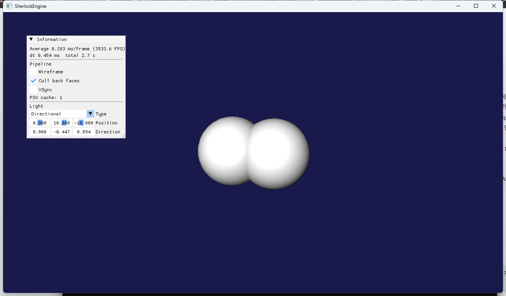
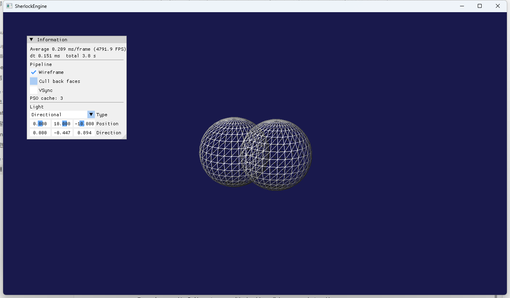
9.참고 문헌
- Microsoft Learn, Managing Graphics Pipeline State in Direct3D 12 — PSO에 들어가는 상태와 커맨드리스트 메서드로 설정하는 상태의 표. D3D11 상태 객체 설계의 한계 설명. learn.microsoft.com/…/managing-graphics-pipeline-state-in-direct3d-12
- Microsoft Learn, D3D12_GRAPHICS_PIPELINE_STATE_DESC structure —
PipelineStateDesc의 필드 구성이 따르는 원본. learn.microsoft.com/…/ns-d3d12-d3d12_graphics_pipeline_state_desc - Microsoft Learn, ID3D11Device::CreateInputLayout — 입력 레이아웃은 셰이더 시그니처로 검증되며 같은 시그니처의 셰이더와 재사용 가능. learn.microsoft.com/…/nf-d3d11-id3d11device-createinputlayout
- Andre Weissflog, Handles are the better pointers, 2018 — 인덱스 핸들과 세대 번호, 중앙 풀. floooh.github.io/2018/06/17/handles-vs-pointers.html
- Microsoft Learn, ID3D11Debug::ReportLiveDeviceObjects. learn.microsoft.com/…/nf-d3d11sdklayers-id3d11debug-reportlivedeviceobjects
- Microsoft Learn, For best performance, use DXGI flip model — blt 모델(
DISCARD)에서 flip 모델로 옮길 때의 요구 사항(버퍼 2개 이상, Present 후 백버퍼 재바인딩, MSAA 리졸브). learn.microsoft.com/…/for-best-performance--use-dxgi-flip-model - Frank Luna, Introduction to 3D Game Programming with DirectX 11, 6장 "Drawing in Direct3D"의 렌더 상태 절과 10장 "Blending". 상태 객체 하나하나의 의미. d3dcoder.net/d3d11.htm
- sokol_gfx.h (Andre Weissflog) —
sg_pipeline_desc가 D3D11·Metal·WebGPU 위에서 같은 방식으로 PSO를 에뮬레이션하는 참고 구현. github.com/floooh/sokol - NVRHI (NVIDIA) — D3D11/D3D12/Vulkan 위의 공통 추상화.
GraphicsPipelineDesc와 D3D11 백엔드의 상태 객체 캐시. github.com/NVIDIA-RTX/NVRHI
2단계 · 입력과 카메라 컨트롤러
원문은 이 단계를 "RHI와 무관하지만 이후 모든 단계의 디버깅 효율을 결정한다"고 했습니다. 카메라를 마음대로 움직일 수 없으면 깊이 버퍼가 맞는지, 그림자가 바닥에 붙는지 눈으로 확인할 수 없습니다. 이 문서는 Input 클래스의 프레임 단위 상태 모델, LookAt에서 위치+yaw/pitch로 바꾼 카메라의 수학(뷰행렬이 왜 역행렬인가, 부호는 왜 뒤집지 않아도 되는가), 그리고 마우스 룩을 구현하다 만난 Win32 캡처의 함정을 다룹니다.
Win32 메시지는 AppBase::MsgProc에서 Input에 무조건 공급되고, 게임 코드는 Update(dt) 안에서 IsKeyDown·GetMouseDeltaX 같은 질의만 합니다. 카메라는 위치와 두 각도를 저장하고 뷰행렬을 inverse(R·T)로 만들며, Debug 빌드에서는 그 결과가 XMMatrixLookToLH와 같은지 매번 단언합니다. 우클릭 드래그는 SetCapture·ShowCursor(FALSE)·매 프레임 SetCursorPos 재중앙화로 구현했는데, ImGui 백엔드가 먼저 캡처를 잡는 바람에 WM_CAPTURECHANGED가 자기 자신에게 오는 경우를 처리해야 했습니다.
1.요약
| 구성 요소 | 파일 | 역할 |
|---|---|---|
| Input | Core/Input.h/.cpp | 키 256개·마우스 버튼 3개의 현재/이전 상태, 마우스 위치·델타·휠. On*(공급), Is*Down/Pressed/Released(질의), EndFrame |
| Camera | Scene/Camera.h/.cpp | 위치 + yaw/pitch. Rotate, Move, SetLookAt(역산), GetForward/Right/Up, 뷰·투영 행렬 |
| AppBase::MsgProc | App/AppBase.cpp | 키·마우스·휠·포커스·캡처 메시지를 Input에 공급. OnFocusLost() 가상 훅 |
| AppBase::Run | App/AppBase.cpp | ImGui NewFrame을 Update 앞으로, 프레임 끝에 input.EndFrame() |
| TestApp::UpdateCamera | App/TestApp.cpp | WASD/QE 이동, 우클릭 룩(BeginLook/EndLook), 공전하는 구 |
- TestApp → EditorApp: 커밋 11a74a5(2026-09-28)에서 앱 클래스 이름이 바뀌었습니다. 이 문서의
TestApp::UpdateCamera·BeginLook·EndLook은 지금App/EditorApp.cpp의EditorApp::UpdateCamera·EditorApp::BeginLook·EditorApp::EndLook입니다(선언은App/EditorApp.h).App/TestApp.cpp는 더 이상 없습니다. - AppBase::Run 행: 10단계(D14)에서 엔진이
Core/Engine으로 분리되면서input.EndFrame()은Engine::EndFrame()안으로 옮겨졌습니다.Run은m_engine.EndFrame()을 부릅니다. 자세한 순서는 2.3절 아래 상자에 적었습니다. - Camera 행: "위치 + yaw/pitch"는 2단계 당시 저장 형식입니다. 11-F단계 이후에는 회전 행렬을 저장합니다(3.5절 상자).
2.입력 모델
2.1 메시지에서 프레임 상태로
Win32는 입력을 이벤트로 줍니다. WM_KEYDOWN이 한 번 오고, 키를 누르고 있으면 자동 반복으로 계속 오고, 떼면 WM_KEYUP이 옵니다. 게임 코드가 원하는 것은 상태입니다. "지금 W가 눌려 있는가"(이동), "이번 프레임에 F1이 눌렸는가"(토글). 두 표현을 잇는 것이 Input입니다.
// Core/Input.h — 상태
bool m_keys[256], m_prevKeys[256];
bool m_mouse[3], m_prevMouse[3];
int m_x, m_y, m_dx, m_dy; bool m_hasPosition; float m_wheel;
// 질의
IsKeyDown(vk) = m_keys[vk]
IsKeyPressed(vk) = m_keys[vk] && !m_prevKeys[vk]
IsKeyReleased(vk) = !m_keys[vk] && m_prevKeys[vk]
// 프레임 끝
EndFrame(): prev = cur; dx = dy = 0; wheel = 0이 모델이 성립하는 조건은 메시지가 프레임 사이에만 처리된다는 것입니다. AppBase::Run의 루프는 PeekMessage가 참인 동안 메시지를 하나씩 처리하고, 큐가 빌 때만 한 프레임을 그립니다. 즉 [메시지 전부] → [Tick, Update, Render, EndFrame] → [메시지 전부] 순서라, 한 프레임 안에서 m_keys가 바뀌는 일이 없습니다. Pressed는 "직전 프레임에는 안 눌려 있었는데 지금은 눌려 있다"로 정확히 정의됩니다. 마우스 델타는 한 프레임 동안 WM_MOUSEMOVE가 여러 번 오면 누적됩니다.
WM_MOUSEMOVE의 좌표는 LOWORD/HIWORD가 아니라 GET_X_LPARAM/GET_Y_LPARAM으로 꺼냅니다. 캡처 중에는 커서가 창 밖으로 나가 음수 좌표가 오는데, LOWORD는 부호 없는 값으로 해석해 65,000 근처의 값을 돌려줍니다. Microsoft 문서가 "다중 모니터에서 잘못된 결과"라고 경고하는 그 함정입니다[1].
2.2 공급은 무조건, 소비 측에서 판단
ImGui가 텍스트 필드에 포커스를 갖고 있을 때 W를 누르면 UI에 글자가 들어가야 하고 카메라가 움직이면 안 됩니다. Dear ImGui FAQ[2]는 이를 위해 io.WantCaptureMouse/WantCaptureKeyboard를 제공하고, 참이면 "입력을 ImGui에만 보내라"고 합니다. 여기서 선택이 갈립니다. (a) MsgProc에서 WantCapture*가 참이면 Input에 넣지 않는다. (b) 항상 넣고, Update에서 카메라 코드가 WantCapture*를 보고 무시한다.
(a)는 키 고착 버그를 만듭니다. 씬 위에서 W를 누른 채 커서를 ImGui 창으로 옮기고 거기서 W를 떼면, WM_KEYUP이 올 때 WantCaptureKeyboard가 참이라 Input은 KeyUp을 받지 못하고 W가 눌린 채로 남습니다. 카메라가 계속 전진합니다. (b)는 상태가 항상 실제 키보드와 같고, "지금 그 상태를 쓸 것인가"만 소비자가 정합니다. Input.h 주석에 이 이유를 적었습니다.
ImGui의 Win32 백엔드 ImGui_ImplWin32_WndProcHandler는 키·마우스 메시지를 기록한 뒤 0을 돌려주므로(메시지를 "먹지" 않음) 우리 switch가 그대로 이어서 Input에 넣을 수 있습니다. WM_SYSKEYDOWN(Alt 조합)은 Input에 넣은 뒤 반드시 DefWindowProc으로 넘겨야 Alt+F4가 동작합니다.
2.3 WantCaptureMouse의 타이밍
io.WantCaptureMouse는 ImGui::NewFrame() 안에서 "지금 마우스가 ImGui 창 위에 있는가"를 계산해 갱신됩니다. 이전 Run()은 Update()를 먼저 부르고 그다음 ImGui::NewFrame()을 불렀습니다. 그 순서면 Update가 읽는 값은 한 프레임 전의 값입니다. 3,000 FPS에서는 눈에 띄지 않지만, 60 FPS에서 UI 가장자리를 클릭하면 한 프레임 동안 카메라가 돌 수 있습니다. 그래서 순서를 바꿨습니다.
// App/AppBase.cpp — Run()
gameTimer.Tick(); dt = …;
ImGui_ImplDX11_NewFrame(); ImGui_ImplWin32_NewFrame(); ImGui::NewFrame(); // WantCapture* 갱신
Update(dt); // 이번 프레임 값을 읽는다
ImGui::Begin("Information"); … UpdateGUI(); … ImGui::End(); ImGui::Render();
graphicsDevice.Clear(); Render(); ImGui_ImplDX11_RenderDrawData(ImGui::GetDrawData()); graphicsDevice.Present();
input.EndFrame();그리고 룩 모드는 latch입니다. 우클릭이 눌린 순간에만 WantCaptureMouse를 묻고, 일단 시작되면 커서가 UI 패널 위를 지나가도 계속 돕니다. 드래그 중에 카메라가 갑자기 멈추는 것이 더 나쁜 경험이기 때문이고, ImGui도 "ImGui 밖에서 시작한 드래그"는 자기 것이 아니라고 봅니다(FAQ의 MouseDownOwned 설명).
- Run() 스니펫: "ImGui 프레임을
Update보다 먼저 연다"는 원칙은 그대로이지만 코드 모양이 바뀌었습니다. 현재App/AppBase.cpp의 순서는m_engine.BeginFrame()(시간 Tick·프로파일러·RHI::Device::NewFrameImGui()) →ImGui_ImplWin32_NewFrame()·ImGui::NewFrame()·ImGuizmo::BeginFrame()→ 고정 스텝OnFixedUpdate루프와OnUpdate(dt)→OnGUI()·ImGui::Render()→m_engine.Render()→m_engine.EndFrame()입니다.graphicsDevice.Clear()·ImGui_ImplDX11_RenderDrawData·Present는Engine::Render()의 패스 구조(6단계)와RHI::Device::RenderImGui()로,input.EndFrame()은Engine::EndFrame()으로 옮겨졌습니다(10단계). 게임 런타임(11-D단계)에서는 ImGui 프레임 자체를 열지 않습니다. - latch의 시작 조건: 11단계에서 씬이 ImGui 창(씬 뷰) 안에 그려지면서, 씬 위에서도
WantCaptureMouse가 항상 참이 되었습니다. 그래서 룩 시작 조건은WantCaptureMouse대신m_editor.IsSceneViewHovered()로 바뀌었습니다(5절 상자). 일단 시작하면 UI 위를 지나가도 계속 도는 latch 동작은 그대로입니다.
3.카메라 수학
3.1 yaw/pitch에서 방향 벡터로
이 프로젝트의 관례는 행벡터, 왼손 좌표계입니다(DirectXMath 기본, Transform::GetWorldMatrix가 S·R·T 순으로 곱하는 것과 같은 관례). 회전은 XMMatrixRotationRollPitchYaw(pitch, yaw, 0)로 만듭니다. 이 함수의 인자 순서는 이름과 달리 (pitch, yaw, roll)이고, 결과는 R = RotX(pitch) · RotY(yaw)입니다. 행벡터 v · R은 먼저 X축으로 pitch만큼, 그다음 Y축으로 yaw만큼 돌립니다.
DirectXMath의 XMMatrixRotationX(a)는 행벡터 기준으로 다음과 같습니다.
RotX(a) = | 1 0 0 | RotY(b) = | cos b 0 −sin b |
| 0 cos a sin a | | 0 1 0 |
| 0 −sin a cos a | | sin b 0 cos b |카메라의 로컬 전방 (0, 0, 1)에 적용하면:
(0, 0, 1) · RotX(p) = (0, −sin p, cos p)
(0, −sin p, cos p) · RotY(y) = (cos p · sin y, −sin p, cos p · cos y) ← forward오른쪽 (1, 0, 0)은 RotX에 영향받지 않고 RotY만 적용되어 (cos y, 0, −sin y)가 되므로 항상 수평입니다. 위쪽은 (0, 1, 0) · R = (sin p · sin y, cos p, sin p · cos y)입니다. 코드는 이 식을 직접 쓰지 않고 XMVector3TransformNormal(축, R)로 계산해서, 관례가 바뀌어도 식을 다시 유도할 필요가 없게 했습니다.
위에서 관례의 예로 든 Transform::GetWorldMatrix는 11-F단계(커밋 fc04ab0, 2026-09-29)에서 Transform::GetLocalMatrix로 이름이 바뀌었습니다. 계층이 생기면서 Transform은 부모 기준 값만 갖게 되어 옛 이름이 사실과 맞지 않게 되었기 때문입니다. 현재 식은 local = pre × S × R × T입니다(pre는 9단계 모델 노드의 고정 행렬). 월드 행렬은 GameObject::GetWorldMatrix가 local × parent.world를 재귀로 곱해 만듭니다. 행벡터·왼손 관례와 S·R·T 곱셈 순서는 그대로입니다.
3.2 뷰행렬 = 카메라 월드 변환의 역행렬
월드 행렬 W는 물체의 로컬 좌표를 월드 좌표로 보냅니다. 카메라도 씬 안의 물체 하나라고 보면, 카메라의 월드 행렬 Wcam = R · T(position)은 "카메라 로컬 → 월드"입니다. 뷰 변환은 그 반대, "월드 → 카메라 로컬"이므로 정의상 V = Wcam−1입니다. 원문 D8이 "뷰행렬은 그 역행렬로"라고 한 것이 이 뜻입니다.
이 역행렬은 닫힌 형태로 구할 수 있습니다. (R·T)−1 = T−1 · R−1이고, 회전 행렬은 직교라 R−1 = RT, 평행이동의 역은 부호 반전입니다. 그래서 V = T(−p) · RT이고, 이것이 바로 XMMatrixLookToLH(p, forward, up)가 만드는 행렬입니다(오른쪽·위·전방 벡터를 열로 쓰고 마지막 행에 −p·right, −p·up, −p·forward를 두는 형태[3]). 코드는 일부러 일반 역행렬 XMMatrixInverse를 써서 "뷰 = 월드의 역"이라는 정의를 그대로 남기고, Debug 빌드에서 두 결과를 대조합니다.
// Scene/Camera.cpp
void Camera::UpdateViewMatrix()
{
const XMMATRIX world = GetRotationMatrix() * XMMatrixTranslation(m_position.x, m_position.y, m_position.z);
const XMMATRIX view = XMMatrixInverse(nullptr, world);
#if defined(_DEBUG)
const XMMATRIX lookTo = XMMatrixLookToLH(XMLoadFloat3(&m_position), GetForward(), GetUp());
for (int row = 0; row < 4; ++row)
assert(XMVector4LessOrEqual(XMVectorAbs(view.r[row] - lookTo.r[row]), XMVectorReplicate(1e-3f)));
#endif
XMStoreFloat4x4(&m_view, view);
}이 단언은 기저 벡터의 정의(3.1절)가 회전 행렬과 어긋나는 순간 잡아냅니다. 예를 들어 GetForward()가 (0,0,−1)을 돌리도록 실수하면 LookToLH는 반대편을 보는 행렬을 만들고 첫 프레임에 멈춥니다. 검증 기간 내내 한 번도 걸리지 않았습니다.
3.3 부호 관례와 클램프
3.1의 식에서 yaw가 양수면 forward의 x가 양수, 즉 오른쪽을 봅니다. pitch가 양수면 y가 음수, 즉 아래를 봅니다. 화면 좌표는 오른쪽이 +x, 아래가 +y이므로 마우스 델타를 부호 뒤집기 없이 그대로 Rotate(dx · 감도, dy · 감도)에 넣으면 "마우스를 오른쪽으로 → 오른쪽을 본다, 아래로 → 아래를 본다"가 됩니다. 이 관례가 어긋나면 -dy 같은 보정이 코드 여기저기 붙기 시작합니다.
pitch는 ±(π/2 − 0.01)로 클램프합니다. 정확히 90°가 되면 forward가 (0, ∓1, 0)이 되어 up과 나란해지고, LookTo의 right = up × forward가 0벡터가 됩니다. 이것이 자유 시점 카메라에서 말하는 짐벌락이고, 롤이 없는 yaw/pitch 카메라에서는 pitch 클램프 한 줄로 끝납니다. yaw는 [−π, π]로 감아(wrap) 몇 시간을 돌려도 값이 커지지 않게 합니다.
3.4 LookAt의 역산
이전 카메라는 eye·lookAt 두 점을 저장했고 초기값이 (10, 20, −45) → (0, 5, 0)이었습니다. 2단계 첫 프레임이 1단계와 픽셀 단위로 같아야 회귀가 없다는 것을 확인할 수 있으므로, 같은 시점을 yaw/pitch로 역산하는 SetLookAt(eye, target)을 두었습니다. 3.1의 forward 식을 뒤집으면:
d = normalize(target − eye)
yaw = atan2(d.x, d.z) // x = cos p · sin y, z = cos p · cos y → x/z = tan y
pitch = −asin(d.y) // y = −sin p실측: d = (−10, −15, 45) / 48.5 → yaw = atan2(−0.206, 0.928) = −12.5°, pitch = −asin(−0.309) = 18.0°. 패널에 −12.5° / 18.0°로 표시되었고 화면은 1단계와 같았습니다.
3.5 쿼터니언은 왜 아닌가
원문 2단계는 "쿼터니언 또는 yaw/pitch"라고 했고 D8은 Transform의 내부 표현을 쿼터니언으로 바꾸는 방향을 권했습니다. 카메라에 yaw/pitch를 고른 이유는 세 가지입니다. (1) 1인칭 자유 시점 카메라는 정의상 롤이 없고 두 각도로 완전히 기술됩니다. 자유도가 딱 맞는 표현을 쓰면 "롤이 누적되는" 부류의 버그가 원천적으로 생기지 않습니다. 쿼터니언으로 마우스 회전을 누적하면(q = q_yaw · q · q_pitch) 부동소수점 오차로 미세한 롤이 쌓여 지평선이 기울어지고, 이를 막으려면 결국 매 프레임 yaw/pitch로 분해해 다시 조립하게 됩니다. (2) UI에 "yaw 21.8°"처럼 표시·편집하기 쉽습니다. (3) SetLookAt 역산이 두 줄입니다. 쿼터니언이 필요한 곳은 임의 축 회전이 누적되는 물체의 Transform(D8), 카메라 사이의 부드러운 보간(slerp), 비행 시뮬레이터식 6자유도 카메라입니다. 그때는 Camera에 SetOrientation(XMFLOAT4 quat)를 추가하고 yaw/pitch는 편집용 입출력으로 남기면 됩니다.
"그때" 가 왔지만 모양은 조금 달랐습니다. 필요해진 것은 카메라 자신의 roll 이 아니라 부모 오브젝트의 회전을 상속하는 것이었고, 그러려면 카메라가 각도 둘 대신 행렬을 받아야 했습니다. Camera 는 이제 회전 행렬(XMFLOAT4X4)을 저장하고 SetYawPitch(각도 경로, 이 문서의 클램프·부호 관례 그대로)와 SetRotation(XMMATRIX)(행렬 경로) 두 입구를 가집니다. GetYaw/GetPitch 는 forward 벡터에서 계산하는 파생값이라 roll 이 있어도 튀지 않고, 3.3 의 클램프는 각도 경로에 그대로 남아 짐벌락을 막습니다. 이 절의 세 이유(자유도·UI·LookAt 역산)는 마우스 룩(Rotate)에 여전히 유효하며, 예고했던 "카메라 사이의 slerp" 는 Scene::ApplyActiveCamera 의 블렌드에 들어갔습니다. 쿼터니언은 저장이 아니라 그 보간에서만 씁니다. 상세: phase-11f 5절, 짐벌락 논의는 3절.
위 (1) 의 "부동소수점 오차로 미세한 롤이 쌓인다" 는 원인 서술은 틀렸습니다. 실제로 재현해 보니(phase-11f 3.4, 실험 프로젝트 QuaternionLookTest 의 Scripts\Tests\QuaternionLook 스크립트) 눈에 보이는 roll 은 두 증분을 모두 카메라 자기 축으로 곱할 때 생기며, 마우스가 (yaw, pitch) 평면에서 원을 한 바퀴 그릴 때마다 그 원이 감싼 입체각 2π(1 − cos r) 만큼 남습니다 — 17° 원이면 바퀴당 약 15°, 세 바퀴에 −45.7° 로 결정적이고 큽니다. 반대로 본문이 예로 든 q = q_yaw · q · q_pitch(yaw 는 월드 Y, pitch 는 로컬 X) 꼴은 Rx(p)·Ry(y) 형태가 유지되어 roll 이 0 이고, 부동소수점 오차는 360 프레임에 0.0° 였습니다. 그러므로 위험한 것은 쿼터니언이 아니라 증분을 어느 공간에서 곱하느냐이며, 행렬로 누적해도 같습니다. "자유도가 딱 맞는 표현(yaw/pitch 두 각)을 쓰면 이 부류의 버그가 원천적으로 생기지 않는다" 는 결론과 선택은 그대로 유효합니다. 이 버그를 지금 재현할 수 있게 된 것은 11-F 가 카메라까지 행렬을 잘리지 않고 넘기는 경로를 열었기 때문입니다 — 그 전에는 roll 이 쌓여도 화면에 나타나지 않았습니다.
이 절의 q = q_yaw · q · q_pitch는 수학 표기입니다. 해밀턴 곱과 v' = q v q* 관례에서는 오른쪽 인자가 먼저 적용되므로, q_pitch가 먼저(로컬 X), q_yaw가 나중(월드 Y)입니다. 반면 DirectXMath의 XMQuaternionMultiply(a, b)는 곱 b·a를 돌려주므로 a가 먼저, b가 나중입니다(행벡터 행렬곱 a·b와 같은 순서). 그래서 같은 식을 코드로 쓰면 인자 순서가 반대로 보입니다. QuaternionLook.cpp의 q = XMQuaternionMultiply(XMQuaternionMultiply(qPitch, q), qYaw)가 위 수학 표기와 같은 식입니다.
4.마우스 룩
4.1 캡처·커서·재중앙화
우클릭 드래그로 시점을 돌리려면 세 가지가 필요합니다.
- 창 밖에서도 움직임을 받기.
SetCapture(hwnd)[4]를 부르면 버튼이 눌린 동안 커서가 창을 벗어나도WM_MOUSEMOVE와WM_RBUTTONUP이 이 창으로 옵니다. 없으면 드래그 도중 커서가 창 밖으로 나가는 순간 회전이 멈추고 버튼 업도 놓칩니다. - 커서 숨기기.
ShowCursor(FALSE)[5]. 이 함수는 불리언 설정이 아니라 카운터입니다. FALSE는 1 감소, TRUE는 1 증가이고 0 이상일 때만 보입니다. FALSE를 두 번 부르면 TRUE를 두 번 불러야 돌아옵니다. 그래서BeginLook의 FALSE 한 번과EndLook의 TRUE 한 번이 정확히 짝을 이루어야 하고,EndLook은 몇 번 불려도 한 번만 실행되게(멱등) 만들었습니다. - 재중앙화. 커서를 계속 움직이면 결국 화면 가장자리에 닿아 델타가 0이 됩니다. 매 프레임
SetCursorPos(앵커)로 드래그 시작점에 되돌립니다. 그런데SetCursorPos도WM_MOUSEMOVE를 만듭니다. 그것을 델타로 세면 "앵커로 되돌아온 이동"이 반대 방향 회전이 되어 카메라가 제자리에서 떱니다.Input::SetMousePositionSilently(앵커)가 현재 위치만 앵커로 바꾸고 델타에는 반영하지 않게 해서, 그 뒤에 오는WM_MOUSEMOVE(앵커)는 델타 0이 됩니다.
// App/TestApp.cpp
void TestApp::BeginLook()
{
if (m_lookActive) return;
GetCursorPos(&m_lookAnchorScreen);
SetCapture(GetWindow()); // m_lookActive를 세우기 *전에* (4.2절)
m_lookActive = true;
ShowCursor(FALSE);
ImGui::GetIO().ConfigFlags |= ImGuiConfigFlags_NoMouseCursorChange;
}
void TestApp::EndLook()
{
if (!m_lookActive) return; // 멱등
m_lookActive = false;
ImGui::GetIO().ConfigFlags &= ~ImGuiConfigFlags_NoMouseCursorChange;
ShowCursor(TRUE);
SetCursorPos(m_lookAnchorScreen.x, m_lookAnchorScreen.y);
if (GetCapture() == GetWindow()) ReleaseCapture();
}EndLook은 세 곳에서 불립니다. 우클릭을 뗐을 때, WM_KILLFOCUS(Alt-Tab), 그리고 WM_CAPTURECHANGED(다른 창이 캡처를 가져감). 뒤의 둘은 AppBase::OnFocusLost() 가상 훅을 거칩니다. 이 훅이 없으면 드래그 중 Alt-Tab을 했을 때 커서가 숨겨진 채 남습니다.
위 스니펫은 지금 App/EditorApp.cpp의 EditorApp::BeginLook·EditorApp::EndLook입니다(커밋 11a74a5, 2026-09-28 클래스 개명). 본문은 같습니다. SetCapture를 latch보다 먼저 부르는 순서, 멱등성, ShowCursor의 짝이 모두 유지됩니다. EndLook을 부르는 곳은 네 곳이 되었습니다. 11-C단계에서 재생 중 게임 카메라 컴포넌트가 카메라를 움직이면(GetPlayContext().cameraDriven) UpdateCamera가 EndLook()을 부르고 바로 반환하는 경로가 추가되었기 때문입니다.
4.2 WM_CAPTURECHANGED가 자기 자신에게 온다
첫 구현에서 우클릭 드래그가 전혀 회전하지 않았습니다. 키보드는 동작했고(W로 전진 확인), 좌클릭도 ImGui에 잘 갔습니다. 원인은 ImGui Win32 백엔드가 WM_RBUTTONDOWN에서 먼저 SetCapture를 부른다는 것이었습니다(모든 버튼 다운에서 캡처를 잡아 드래그를 추적합니다). 우리 MsgProc은 ImGui 핸들러를 먼저 부르므로, BeginLook이 SetCapture를 부르는 시점에는 이미 우리 창이 캡처를 갖고 있습니다. 그리고 Windows는 캡처 창이 바뀔 때 이전 캡처 창에 WM_CAPTURECHANGED를 동기 전송하는데, 이전 창과 새 창이 같아도 보냅니다. 문서에도 "창이 스스로 ReleaseCapture를 불러도 이 메시지를 받는다"고 적혀 있고, lParam이 "캡처를 얻는 창"입니다[6].
그 결과 BeginLook 안의 SetCapture 호출이 돌아오기도 전에 WM_CAPTURECHANGED → OnFocusLost → EndLook이 실행되어 룩이 시작 즉시 끝났습니다. 게다가 첫 구현은 m_lookActive = true를 SetCapture보다 먼저 세웠기 때문에, EndLook이 ShowCursor(TRUE)까지 부른 뒤 BeginLook이 이어서 ShowCursor(FALSE)를 불러 카운터까지 어긋났습니다. 또 Input::OnFocusLost()가 마우스 버튼 상태를 지워 IsMouseReleased도 오지 않았습니다.
해결은 두 겹입니다.
// App/AppBase.cpp — MsgProc
case WM_CAPTURECHANGED:
// lParam은 캡처를 새로 얻은 창. 자기 자신이면 상실이 아니다.
if (reinterpret_cast<HWND>(lParam) != hwnd)
{
input.OnCaptureLost(); // 마우스 버튼·델타만 초기화. 키보드는 건드리지 않는다
OnFocusLost();
}
break;그리고 BeginLook은 SetCapture를 m_lookActive = true보다 먼저 불러, 혹시 메시지가 오더라도 EndLook이 아무것도 하지 않게 했습니다. OnCaptureLost가 키보드를 지우지 않는 이유는 ImGui가 버튼 업마다 ReleaseCapture를 부르기 때문입니다(lParam = NULL). 키보드까지 지우면 좌클릭 한 번에 W가 풀려 "클릭할 때마다 이동이 끊기는" 증상이 납니다. WM_KILLFOCUS에서는 전부 지웁니다. Alt-Tab 중에 뗀 키는 WM_KEYUP이 오지 않으니까요.
4.3 Raw Input이라는 대안
마우스 룩의 "정석"은 WM_INPUT(Raw Input)[7]입니다. 커서 위치가 아니라 마우스 장치의 상대 이동을 그대로 받으므로 재중앙화가 필요 없고, Windows의 포인터 가속("포인터 정확도 향상")이 적용되지 않으며, 1000Hz 마우스의 이벤트를 버퍼로 한 번에 읽을 수 있습니다. 지금 방식은 WM_MOUSEMOVE를 쓰므로 포인터 가속이 섞입니다. 검증(6절)에서 드래그 200픽셀이 이론값 28.6°가 아니라 34.3°가 된 것이 그 증거입니다. 디버그 카메라에는 문제가 아니지만 게임의 조준 카메라라면 Raw Input으로 바꿔야 합니다. Input::OnMouseMove 대신 OnMouseRaw(dx, dy)를 추가하고 RegisterRawInputDevices로 마우스를 등록하면 나머지는 그대로입니다.
5.컨트롤러
// App/TestApp.cpp — UpdateCamera(dt)
const ImGuiIO& io = ImGui::GetIO();
if (!m_lookActive && input.IsMousePressed(MouseButton::Right) && !io.WantCaptureMouse) BeginLook();
if ( m_lookActive && input.IsMouseReleased(MouseButton::Right)) EndLook();
if (m_lookActive)
{
const int dx = input.GetMouseDeltaX(), dy = input.GetMouseDeltaY();
if (dx || dy) camera.Rotate(dx * m_lookSensitivity, dy * m_lookSensitivity); // 0.0025 rad/px
SetCursorPos(m_lookAnchorScreen.x, m_lookAnchorScreen.y);
POINT client = m_lookAnchorScreen; ScreenToClient(GetWindow(), &client);
input.SetMousePositionSilently(client.x, client.y);
}
if (!io.WantCaptureKeyboard)
{
float speed = m_moveSpeed * dt; // 10 단위/초
if (input.IsKeyDown(VK_SHIFT)) speed *= 4.0f;
float forward = 0, right = 0, up = 0;
if (input.IsKeyDown('W')) forward += speed; if (input.IsKeyDown('S')) forward -= speed;
if (input.IsKeyDown('D')) right += speed; if (input.IsKeyDown('A')) right -= speed;
if (input.IsKeyDown('E')) up += speed; if (input.IsKeyDown('Q')) up -= speed;
if (forward || right || up) camera.Move(forward, right, up);
}Camera::Move는 전방을 pitch가 포함된 3D 벡터로 씁니다(비행 카메라). 위를 보고 W를 누르면 떠오릅니다. FPS식으로 수평 이동만 원하면 forward의 y를 0으로 만들고 정규화하면 됩니다. 상하(E/Q)는 카메라의 up이 아니라 월드 +Y입니다. 아래를 보고 있어도 E는 항상 위로 갑니다. 이것도 자유 시점 카메라의 관례입니다.
dt 검증을 위해 두 번째 구를 첫 구 주위로 공전시켰습니다. 각속도 1 rad/s이므로 VSync를 켜든(60 FPS) 끄든(3,000 FPS) 한 바퀴에 6.28초가 걸려야 합니다. 원문이 제안한 "회전하는 구"는 균일한 흰 구를 자전시키는 것이라 회전이 화면에 드러나지 않아 공전으로 바꿨습니다. 렌더 토글 F1(와이어프레임)·F2(컬링)·F3(VSync)도 이때 넣었습니다. 1단계에서 ImGui 체크박스 좌표로 자동 검증하다 ini 문제를 겪었기 때문입니다.
컨트롤러는 지금 App/EditorApp.cpp의 EditorApp::UpdateCamera(dt)입니다. 회전 계산(감도 0.0025 rad/px), 재중앙화, 이동 속도(10 단위/초, Shift 4배), E/Q의 월드 Y 이동은 위 스니펫과 같습니다. 바뀐 것은 세 가지 조건입니다.
- 재생 중 게임 카메라 우선(11-C단계): 재생 중(
m_playState != PlayState::Editing)에GetPlayContext().cameraDriven이 참이면EndLook()을 부르고 바로 반환합니다. - 룩 시작:
!io.WantCaptureMouse대신m_editor.IsSceneViewHovered() && !m_editor.IsGizmoUsing() && !m_editor.IsAssetDragActive()를 봅니다. 씬 뷰와 기즈모는 11단계, 에셋 드래그는 11-B단계에서 들어왔습니다. - 이동:
!io.WantCaptureKeyboard대신!io.WantTextInput && (m_editor.IsSceneViewFocused() || m_editor.IsSceneViewHovered() || m_lookActive)를 봅니다. 텍스트 입력 중이 아니고, 씬 뷰에 포커스나 커서가 있거나 룩 중일 때만 움직입니다.
6.검증
- 완료 기준 "회전하는 구 주위를 카메라로 자유롭게 돌면서 볼 수 있다" — 충족. 아래 수치는 키·마우스 이벤트를 프로그램으로 주입해(
keybd_event/mouse_event) 창을 캡처한 결과입니다. - 기본 시점: pos (10, 20, −45), yaw −12.5°, pitch 18.0°. 3.4절의 역산과 일치하고 1단계와 같은 화면.
- W 0.8초: pos (8.34, 17.51, −37.53). forward = (−0.206, −0.309, 0.929) × 8 ≈ (−1.65, −2.47, +7.43)와 일치. 속도 10/s × 0.8s = 8 단위.
- 우클릭 드래그 (+200, +100): yaw −12.5° → 21.8°, pitch 18.0° → 35.4°. 오른쪽으로 끌면 오른쪽을, 아래로 끌면 아래를 봄. 이론값(28.6°, 14.3°)보다 큰 것은 포인터 가속(4.3절).
- F1, F2: PSO #1(wire, cull), #2(wire, none) 생성 로그. 키 →
Input→RenderSettings→ PSO 캐시 경로 확인. - Debug 빌드의
inverse(R·T) == LookToLH단언은 모든 실행에서 통과. - 커서 복구(
ShowCursor짝)는 화면 캡처에 커서가 찍히지 않아 육안 검증 대신 코드 리뷰로 확인했습니다: FALSE는BeginLook에서만 1회, TRUE는EndLook에서만 1회,EndLook은 멱등.
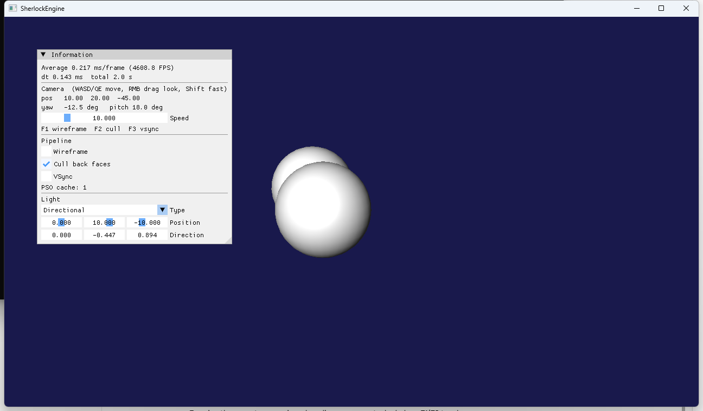
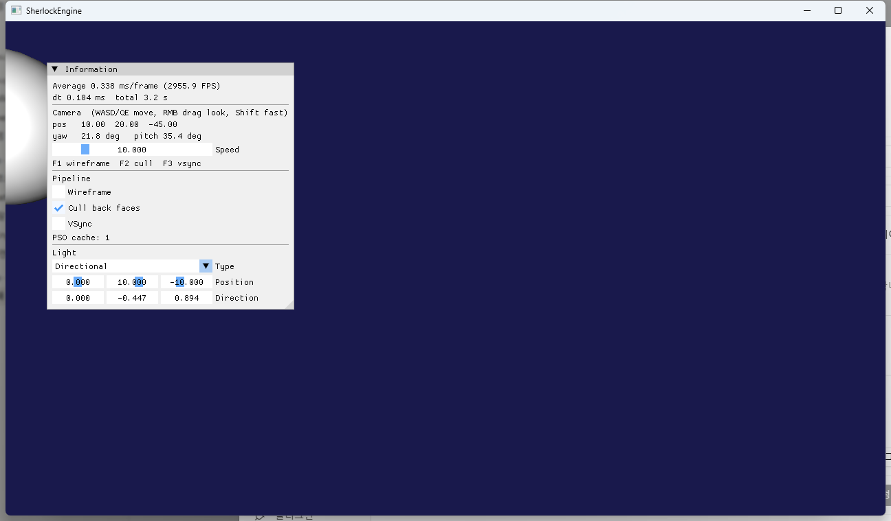
7.참고 문헌
- Microsoft Learn, WM_MOUSEMOVE message —
LOWORD/HIWORD대신GET_X_LPARAM/GET_Y_LPARAM을 써야 하는 이유. learn.microsoft.com/…/wm-mousemove - Dear ImGui FAQ, Q: How can I tell whether to dispatch mouse/keyboard to Dear ImGui or my application? github.com/ocornut/imgui/blob/master/docs/FAQ.md
- Microsoft Learn, XMMatrixLookToLH function. learn.microsoft.com/…/nf-directxmath-xmmatrixlooktolh
- Microsoft Learn, SetCapture function — 포그라운드 창만 캡처 가능, 캡처 중 키보드 가속기 비활성. learn.microsoft.com/…/nf-winuser-setcapture
- Microsoft Learn, ShowCursor function — 표시 카운터. learn.microsoft.com/…/nf-winuser-showcursor
- Microsoft Learn, WM_CAPTURECHANGED message —
lParam= 캡처를 얻는 창, 스스로 해제해도 받음. learn.microsoft.com/…/wm-capturechanged - Microsoft Learn, Raw Input Overview —
WM_INPUT, 등록, 표준/버퍼 읽기. learn.microsoft.com/…/about-raw-input - LearnOpenGL, Camera — yaw/pitch → 방향 벡터 유도. 오른손 좌표계(−Z 전방)라 이 프로젝트와 z 부호가 반대입니다. 식의 구조만 참고할 것. learnopengl.com/Getting-started/Camera
- Frank Luna, Introduction to 3D Game Programming with DirectX 11, 15장 "First Person Camera" — 오른쪽·위·전방 벡터를 직접 저장하고 매 프레임 재직교화하는 다른 접근. d3dcoder.net/d3d11.htm
- Glenn Fiedler, Fix Your Timestep! — dt 기반 이동의 전제. gafferongames.com/post/fix_your_timestep
3단계 · Scene과 리소스 래퍼
모든 GPU 리소스를 Desc → 핸들 한 가지 모양으로 만들고, 상수버퍼를 갱신 빈도에 따라 셋으로 나누고, 씬 데이터를 Renderer 밖으로 꺼내고, D3D11 헤더를 Graphics/D3D11/ 안에 가둔 단계입니다. 원문은 이 단계를 "아직 가상 인터페이스는 없고 D3D11 전용 클래스지만 이름과 시그니처는 RHI 최종형과 같게" 만드는 단계라고 했습니다. 7단계에서 RHI::Device 인터페이스를 뽑을 때 호출 코드가 바뀌지 않도록, 지금 Device의 공개 함수를 곧 그 인터페이스로 삼습니다.
Device는 이제 CreateBuffer(BufferDesc) → BufferHandle, CreateTexture, CreateShader, CreatePipeline, UpdateBuffer, BeginFrame/EndFrame, Bind*/DrawIndexed만 밖으로 내놓습니다. 실제 객체는 세대 카운터가 붙은 풀에 있고, 핸들은 정수 두 개입니다. Renderer는 Render(const Scene&, const Camera&)로 씬을 입력받아 PerFrame·Lights·PerObject 세 상수버퍼를 Map(WRITE_DISCARD)로 채우고 Mesh*를 키로 GPU 버퍼를 캐시합니다. pch.h에서 D3D 헤더를 뺐고, 폴더 밖에 ID3D11이라는 글자는 주석에도 없습니다.
이 문서는 3단계 시점(커밋 1f89e4b)의 기록입니다. 상단 카드와 1절 표의 경로·크기는 그 시점 값입니다. 이후 크게 바뀐 것은 아래 네 가지이며, 자세한 내용은 각 절 끝의 상자에 적었습니다.
- 폴더와 Device(7단계):
Graphics/D3D11/의 파일과 API 중립 헤더(ResourceDesc.h·GraphicsConfig.h·ResourcePool.h)는RHI/아래로 옮겨졌습니다. 이 문서의Device는 가상 인터페이스RHI::Device(RHI/Device.h)와 구현D3D11Device(RHI/D3D11/D3D11Device.h/.cpp)로 나뉘었습니다. 8단계에서RHI/D3D12/가 추가되었습니다(phase-7 4절). - 상수버퍼: b0 PerFrame은 208B에서 304B로 늘었습니다(6단계 그림자, 11단계 디버그 뷰). b2 Lights는 672B에서 656B로 줄었습니다(4단계에서 스페큘러·광택이 재질로 이동). b3 Material(64B)이 새로 생겼습니다. b1 PerObject는 128B 그대로입니다(5절 상자).
- ImGuiBackend 삭제(7단계): ImGui 렌더러는
RHI::Device의 가상 함수로 흡수되었습니다(8절 상자). - 바인딩·드로우(6단계):
Bind*/DrawIndexed는RHI::CommandList로 옮겨졌습니다(3절 상자).
1.요약
| 영역 | 이전 | 이후 |
|---|---|---|
| 버퍼 생성 | CreateConstBuffer·CreateVertexBuffer·CreateIndexBuffer 세 함수, 각각 ComPtr<ID3D11Buffer> 반환 | CreateBuffer(BufferDesc{size, usage, bindFlags, stride, debugName}, initialData) → BufferHandle |
| 버퍼 갱신 | UpdateSubresource (USAGE_DEFAULT) | UpdateBuffer(handle, data, size). Dynamic은 Map(WRITE_DISCARD), 프레임 인덱스별 복제본 |
| 텍스처 | 백버퍼 RTV·깊이 DSV를 Device가 ComPtr 멤버로 직접 소유 | TextureDesc → TextureHandle. 백버퍼·깊이 버퍼도 풀의 항목. 뷰(RTV/DSV/SRV)는 요청 시 지연 생성 |
| 셰이더 | Shader 클래스가 컴파일·객체·상수버퍼를 전부 소유 | ShaderCompiler::CompileFromFile → 바이트코드, Device::CreateShader(ShaderDesc) → ShaderHandle. Shader 클래스 삭제 |
| 상수버퍼 | b0 ConstBuffer(world·invT·view·proj·wvp, 320B) 드로우마다 통째로, b1 LightBuffer(672B) | b0 PerFrame(208B, VS+PS) · b1 PerObject(128B, VS) · b2 Lights(672B, PS). Common.hlsli 공유 |
| 씬 | Renderer가 구 2개·조명 배열·ImGui 패널을 소유 | Scene(메시 unique_ptr, GameObject 벡터, 조명 벡터, 환경). Renderer는 Render(Scene, Camera, time). 패널은 App/DebugUI |
| 메시 | 구 생성기 하나. MeshRenderer가 메시당 VB/IB ComPtr | Sphere·Cube·Plane·Cylinder. Renderer의 unordered_map<const Mesh*, GpuMesh{vb, ib}> 캐시 |
| D3D 헤더 | pch.h가 전역 include | Graphics/D3D11/D3D11Common.h만. ImGui DX11 백엔드도 Graphics/D3D11/ImGuiBackend로 감쌈 |
2.핸들과 풀
2.1 왜 포인터가 아니라 핸들인가
원문 D21은 RHI 추상화의 세 갈래(가상 인터페이스 / 핸들+풀 / 컴파일 타임 선택) 중 "리소스는 핸들, Device와 CommandList만 가상"인 혼합형을 권했습니다. 리소스에 핸들을 쓰는 이유를 Weissflog[1]와 Frykholm[2]의 글이 잘 정리합니다.
- 소유권이 한 곳에 있다. 모든
ID3D11Buffer는Device의 풀 안에 있습니다. 누가 몇 개의 참조를 갖고 있는지 세지 않아도ReleaseDevice()가 풀을 비우면 전부 사라집니다. 종료 시 Live Object 문제가 구조적으로 없어집니다. - 호출 코드가 백엔드 타입을 모른다.
Renderer.h에는BufferHandle만 있고ID3D11Buffer가 없습니다. 8단계에서 D3D12 백엔드가 같은BufferHandle을 돌려주면 Renderer는 재컴파일만 하면 됩니다. 이것이 3단계 완료 기준 "Graphics/D3D11/밖에서ID3D11이 검색되지 않는다"의 실체입니다. - 값이다. 정수 두 개라 복사·비교·해시가 자유롭습니다.
PipelineStateDesc가 셰이더를 핸들로 참조할 수 있었던 것도(1단계) 이 때문입니다. - 해제 후 접근이 널이 된다. 다음 절의 세대 카운터 덕분입니다. 댕글링 포인터는 "가끔 다른 객체를 가리킬" 뿐 크래시가 나지 않아 찾기 어렵지만, 세대가 다른 핸들은 항상
nullptr를 돌려주고 로그를 남깁니다.
sokol_gfx.h[3]와 NVRHI[4]가 같은 구조의 실전 예입니다. sokol은 sg_buffer{uint32_t id} 핸들과 풀, NVRHI는 참조 카운트 핸들(BufferHandle = RefCountPtr<IBuffer>)을 씁니다. 후자는 스마트 포인터에 가깝지만 D3D11/D3D12/Vulkan 백엔드가 같은 BufferDesc를 받는 모양은 같습니다.
2.2 세대 카운터와 free list
// Graphics/D3D11/ResourcePool.h
template <typename T, typename HandleT>
class ResourcePool
{
struct Slot { T item{}; uint32_t generation = 1; bool alive = false; };
std::vector<Slot> m_slots;
std::vector<uint32_t> m_free;
public:
HandleT Add(T&& item); // free list에서 꺼내거나 push_back. {index, slot.generation}
T* Get(HandleT h); // index 범위 밖 / !alive / generation 불일치 → nullptr
void Remove(HandleT h); // item = T{} (ComPtr 해제), alive = false, ++generation (0 건너뜀), free에 push
void Clear();
};슬롯을 해제하면 세대가 1 올라갑니다. 같은 슬롯이 재사용되어 새 핸들 {7, 3}이 나가더라도, 옛 핸들 {7, 2}로 Get하면 세대가 달라 nullptr입니다. 세대 0은 "빈 핸들"로 예약되어 있으므로(Handle::IsValid가 generation != 0을 봄) 오버플로 시 0을 건너뜁니다. 32비트 세대가 넘치려면 같은 슬롯을 40억 번 재사용해야 합니다.
Remove가 item = T{}로 대입하는 것이 ComPtr을 해제하는 지점입니다. D3D11Texture의 경우 텍스처와 RTV/DSV/SRV가 이때 함께 해제됩니다. Resize가 이 성질에 기댑니다(6절).
세 풀(m_buffers, m_textures, m_shaders)과 PSO 캐시는 Device에서 m_device 뒤에 선언되어 먼저 파괴되고, ReleaseDevice()도 pipelines → shaders → textures → buffers → swapchain → context → (보고) → device 순으로 비웁니다. PSO가 셰이더 ComPtr을 복사해 두므로 셰이더 풀보다 PSO 캐시를 먼저 비워야 합니다(순서가 반대여도 ComPtr이라 누수는 없지만, "풀을 비웠는데 객체가 살아 있는" 상태가 잠깐 생깁니다).
- 위치:
ResourcePool은 7단계에서RHI/ResourcePool.h로 옮겨졌습니다.Add/Get/Remove/Clear, 세대 1 시작, 0 건너뛰기, free list 규칙은 위 설명과 같습니다. - 템플릿 인자(C++20, 2026-09-28):
template <typename T, ResourceHandle HandleT>로 바뀌었습니다.ResourceHandle은RHI/Handle.h의 콘셉트입니다. 잘못된 타입을 넣으면 풀 내부가 아니라ResourcePool<…>을 적은 줄에서 에러가 납니다. 2026-10-01 작업 트리에서는 콘셉트 조건이 멤버 모양 검사에서 "Handle<Tag>의 특수화(kIsHandle)이고 trivially copyable"로 바뀌어 있습니다. - ReleaseDevice 순서: 지금은
RHI/D3D11/D3D11Device.cpp의D3D11Device::ReleaseDevice()입니다. ImGui 종료와ClearState/Flush뒤에 pipelines → (10단계 타임스탬프 쿼리) → resourceSets → bindingLayouts → shaders → samplers → textures → buffers → swapchain → context 순으로 비웁니다. 4·5단계에서 생긴 풀이 끼어들었을 뿐, "PSO 캐시를 셰이더보다 먼저"라는 원칙은 같습니다.
3.Desc → 핸들 API
// Graphics/ResourceDesc.h — D3D 헤더 없음
enum class BufferUsage : uint8_t { Default, Dynamic, Staging };
enum BufferBind : uint8_t { BufferBind_Vertex = 1, BufferBind_Index = 2, BufferBind_Constant = 4, BufferBind_ShaderResource = 8 };
struct BufferDesc { uint32_t size; BufferUsage usage; uint8_t bindFlags; uint32_t stride; const char* debugName; };
enum TextureBind : uint8_t { TextureBind_RenderTarget = 1, TextureBind_DepthStencil = 2, TextureBind_ShaderResource = 4 };
struct TextureDesc { uint32_t width, height; Format format; uint32_t mipLevels; uint8_t bindFlags; uint32_t sampleCount; const char* debugName; };
struct ShaderDesc { ShaderStage stage; const void* bytecode; size_t bytecodeSize; const char* debugName; };
enum ShaderStageMask : uint8_t { ShaderStageMask_Vertex = 1, ShaderStageMask_Pixel = 2 };// Graphics/D3D11/Device.h — 공개 API (7단계의 RHI::Device 인터페이스가 될 부분)
uint32_t BeginFrame(); void EndFrame(); uint32_t GetFrameIndex() const;
void Resize(int w, int h); void SetVSync(bool); void SetClearColor(r, g, b, a);
BufferHandle CreateBuffer (const BufferDesc&, const void* initialData = nullptr); void DestroyBuffer (BufferHandle);
void UpdateBuffer (BufferHandle, const void* data, uint32_t size);
TextureHandle CreateTexture(const TextureDesc&, const void* initialData = nullptr); void DestroyTexture(TextureHandle);
TextureHandle GetBackBuffer() const; TextureHandle GetDepthBuffer() const; // Resize마다 새 핸들
ShaderHandle CreateShader (const ShaderDesc&); void DestroyShader(ShaderHandle);
PipelineHandle CreatePipeline(const PipelineStateDesc&);
// 즉시 바인딩·드로우 — 6단계에서 CommandList로 옮겨 간다
void BindPipeline(PipelineHandle);
void BindVertexBuffer(BufferHandle, uint32_t slot = 0, uint32_t offset = 0); // stride는 desc에서
void BindIndexBuffer(BufferHandle, Format indexFormat = Format::R32_UINT);
void BindConstantBuffer(uint32_t slot, BufferHandle, uint8_t stageMask);
void DrawIndexed(uint32_t indexCount, uint32_t startIndex = 0, int32_t baseVertex = 0);debugName은 const char*이지만 Device는 그 포인터를 보관하지 않고 즉시 std::string으로 복사한 뒤 SetPrivateData(WKPDID_D3DDebugObjectName)로 D3D 객체에 붙입니다. Debug Layer 메시지에 "CB_PerObject[1]"처럼 이름이 나오므로 어느 버퍼가 문제인지 바로 보입니다. 이 GUID가 dxguid.lib에 있어서 링크 에러를 한 번 만났습니다(10절).
BindConstantBuffer가 stageMask를 받는 것은 D3D11 특유의 사정 때문입니다. D3D11은 VS와 PS의 상수버퍼 슬롯이 따로라서 PS가 b0의 cameraPosition을 읽으려면 PSSetConstantBuffers(0, …)도 불러야 합니다. D3D12에서는 루트 시그니처의 가시성(visibility)에 해당하고, 4단계 BindingLayoutDesc의 슬롯별 "셰이더 스테이지" 항목이 이 마스크를 흡수합니다.
- 경로:
Graphics/ResourceDesc.h는RHI/ResourceDesc.h로 옮겨졌습니다.Graphics/D3D11/Device.h의 공개 API는 7단계에서 예고대로 가상 인터페이스RHI::Device(RHI/Device.h)가 되었고, 구현은RHI/D3D11/D3D11Device입니다. - ShaderDesc(C++20, 2026-09-28):
const void* bytecode; size_t bytecodeSize;두 필드가std::span<const uint8_t> bytecode;하나로 합쳐졌습니다. - CreateTexture: 5단계에서 밉 레벨마다 초기 데이터를 받게 되었고, 2026-09-28 C++20 적용으로 지금 시그니처는
CreateTexture(const TextureDesc&, std::span<const TextureSubresource> subresources = {})입니다.TextureSubresource는{data, rowPitch}입니다. - 바인딩·드로우(6단계):
BindPipeline/BindVertexBuffer/BindIndexBuffer/DrawIndexed는RHI::CommandList의SetPipelineState/SetVertexBuffer/SetIndexBuffer/DrawIndexed가 되었습니다.BindConstantBuffer(slot, handle, stageMask)는 4단계에서SetResourceSet으로 대체되었습니다.SetClearColor는 Device에서 빠지고 렌더 패스의 클리어 값으로 옮겨졌습니다. 그 사이에CreateSampler(5단계),CreateBindingLayout/CreateResourceSet(4단계), ImGui 어댑터(7단계)가 인터페이스에 추가되었습니다.
4.프레임과 Dynamic 버퍼 링
4.1 BeginFrame / EndFrame
// Graphics/D3D11/Device.cpp
uint32_t Device::BeginFrame()
{
m_frameIndex = static_cast<uint32_t>(m_frameCounter % kFrameCount);
D3D11Texture* bb = m_textures.Get(m_backBuffer); D3D11Texture* db = m_textures.Get(m_depthBuffer);
ID3D11RenderTargetView* rtv = bb ? bb->GetRTV(m_device.Get()) : nullptr; // 지연 생성
ID3D11DepthStencilView* dsv = db ? db->GetDSV(m_device.Get()) : nullptr;
m_context->OMSetRenderTargets(1, &rtv, dsv);
m_context->ClearRenderTargetView(rtv, m_clearColor);
m_context->ClearDepthStencilView(dsv, D3D11_CLEAR_DEPTH | D3D11_CLEAR_STENCIL, 1.0f, 0);
m_context->RSSetViewports(1, &m_viewport);
return m_frameIndex;
}
void Device::EndFrame()
{
m_swapChain->Present(m_vsync ? 1 : 0, 0);
DumpDebugLayerMessages();
++m_frameCounter;
}예전 Clear()/Present()가 BeginFrame()/EndFrame()이 된 것은 이름만 바뀐 것이 아닙니다. 프레임의 시작과 끝이 한 곳에 생겼고, 그 안에서 프레임 인덱스가 돌아갑니다. 렌더 타깃을 매 프레임 다시 바인딩하는 것도 여기서 정해졌습니다. 1단계 문서가 언급한 flip 모델 스왑체인의 요구 사항("Present 뒤 백버퍼 재바인딩")이 자연히 충족되고, 6단계에서 RenderPassDesc(타깃 + Load/Store)가 OMSetRenderTargets와 Clear의 자리를 차지하게 됩니다.
위 예고대로 바뀌었습니다. 지금은 RHI/D3D11/D3D11Device.cpp의 D3D11Device::BeginFrame()입니다. 이 함수는 프레임 인덱스 계산, CommandList 통계 초기화, 10단계 GPU 타임스탬프 세트 시작만 합니다. OMSetRenderTargets·Clear*·RSSetViewports는 6단계에서 CommandList::BeginRenderPass(RenderPassDesc)로 옮겨졌습니다. EndFrame()에는 몇 가지가 더해졌습니다. 열린 렌더 패스가 있으면 경고하고 닫고, 11단계 스크린샷 리드백을 처리하고, VSync를 끄면 DXGI_PRESENT_ALLOW_TEARING으로 Present합니다. 프레임 카운터를 올리는 구조는 같습니다.
4.2 Map(WRITE_DISCARD)의 의미론
세 상수버퍼는 전부 BufferUsage::Dynamic이고 UpdateBuffer는 Map(D3D11_MAP_WRITE_DISCARD)를 씁니다. Microsoft 문서[5]의 설명을 이 프로젝트 맥락으로 옮기면 다음과 같습니다.
- GPU를 기다리지 않는다. GPU가 아직 그 버퍼로 그리고 있어도
Map은 새 메모리 영역의 포인터를 돌려줍니다(드라이버가 renaming, 즉 이름 바꾸기를 합니다). 이전 내용은 GPU가 다 쓰면 자동으로 버려지거나 재사용됩니다. 앱이 메모리를 관리할 필요가 없습니다. - 따라서 한 프레임에 같은 버퍼를 여러 번 Map해도 된다.
Renderer::Render는 오브젝트마다PerObject를Map하고DrawIndexed합니다. 7개 오브젝트면 7번 Map입니다. 각 드로우는 자기가 Map했을 때의 데이터를 봅니다. D3D11의 표준 패턴이고, D3D12에서는 이것이 링 버퍼 서브할당이 됩니다(4.3절). - 전체를 다시 써야 한다. DISCARD는 항상 버퍼 전체를 버립니다. 일부만 갱신하려고 오프셋을 줄 수 없습니다. 그래서
UpdateBuffer의size는 "쓰는 바이트 수"이지 부분 갱신을 뜻하지 않고, 이 프로젝트의 상수버퍼 구조체는 매번 전부 채워서 넘깁니다. - Map한 메모리를 읽지 말 것. 쓰기 결합(write-combined) 메모리라 읽으면 매우 느립니다.
memcpy로 통째로 쓰기만 합니다. 문서는*p = 0같은 코드도 컴파일러가 read-modify-write로 바꿀 수 있다고 경고합니다.
BufferUsage::Default는 UpdateSubresource로 갱신하되 전체 크기만 받습니다. 문서에 "상수버퍼는 pDstBox를 NULL로 두어야 하며 부분 갱신은 불가능하다"고 명시되어 있고[6], pDstBox = NULL이면 ByteWidth만큼 원본에서 읽으므로 size < ByteWidth인 데이터를 넘기면 원본 끝을 넘어 읽게 됩니다. 그래서 size != desc.size면 거부합니다. 정점·인덱스 버퍼는 Default + 초기 데이터로 만들고 갱신하지 않습니다. Staging은 Desc에는 있지만 아직 쓰는 곳이 없습니다(스크린샷·리드백은 나중).
어느 usage를 고를지는 D3D11_USAGE 문서[7]의 표를 따랐습니다. 매 프레임 CPU가 쓰는 것 → Dynamic + Map. 한 번 만들고 GPU만 읽는 것 → Default(초기 데이터). 문서는 "Dynamic 리소스는 특정 하드웨어 능력을 소모하므로 아껴 쓰라"고도 하지만, 상수버퍼 세 개는 그 범주가 아닙니다.
4.3 kFrameCount 복제가 D3D12에서 하는 일
// Graphics/GraphicsConfig.h
constexpr uint32_t kFrameCount = 2;
// Graphics/D3D11/D3D11Resources.h
struct D3D11Buffer
{
BufferDesc desc; std::string name;
ComPtr<ID3D11Buffer> buffers[kFrameCount]; // Dynamic만 전부 채운다
ID3D11Buffer* Get(uint32_t frameIndex) const
{ return buffers[desc.usage == BufferUsage::Dynamic ? frameIndex % kFrameCount : 0].Get(); }
};D3D11에서 이 복제는 아무 일도 하지 않습니다. WRITE_DISCARD가 이미 동기화를 해 주므로 복제본 1개면 충분합니다. 그런데도 넣은 이유는 원문 3단계의 설계 결정인 "프레임 인덱스를 지금부터 노출한다" 때문입니다. D3D12에는 DISCARD가 없습니다. 업로드 힙의 메모리를 CPU가 직접 쓰고, GPU가 그 메모리를 아직 읽고 있는지는 앱이 펜스로 추적해야 합니다. Microsoft의 Fence-Based Resource Management[8]가 설명하는 링 버퍼가 그것입니다. 프레임 N의 업로드는 슬롯 N % kFrameCount에 쓰고, 그 슬롯을 다시 쓰기 전에 프레임 N − kFrameCount의 펜스가 완료됐는지 기다립니다. 8단계 D3D12 백엔드는 BeginFrame에서 그 대기를 추가하고 buffers[frameIndex]에 해당하는 업로드 힙 영역을 돌려주면 됩니다. Renderer는 바뀌지 않습니다.
이 구조가 "투명한지"를 확인하는 방법은 kFrameCount를 1, 2, 3으로 바꿔 빌드해 화면이 같은지 보는 것입니다. 다르다면 어딘가에 "이전 프레임 슬롯의 내용이 남아 있다"는 가정에 기대는 버그가 있는 것입니다. 세 값 모두 같은 화면이었습니다(11절). Information 패널의 frame slot이 0·1·2로 도는 것도 볼 수 있습니다.
스니펫의 두 파일은 7단계에서 옮겨졌습니다. kFrameCount = 2는 RHI/GraphicsConfig.h에 있고, 10단계에서 같은 파일에 kMaxTimestamps = 32가 추가되었습니다. D3D11Buffer는 RHI/D3D11/D3D11Resources.h에 있고 Get(frameIndex)의 동작은 같습니다. 이 절이 예고한 D3D12의 펜스 기반 링은 8단계에서 구현되었습니다.
Dynamic 버퍼의 내용은 UpdateBuffer를 부른 그 프레임에서만 유효합니다. 다음 프레임은 다른 슬롯을 바인딩하므로, "지난 프레임에 올렸으니 이번엔 안 올려도 되겠지" 하고 건너뛰면 D3D12에서는 옛 데이터나 쓰레기 값을 읽게 됩니다. Renderer는 PerFrame과 Lights를 매 프레임, PerObject를 드로우마다 올립니다. 조명이 바뀌지 않아도 올립니다. 최적화가 필요해지면 "바뀐 프레임에만 올리되 모든 슬롯에 올린다"가 맞는 방향입니다.
5.상수버퍼 3분할
5.1 갱신 빈도로 나눈다
이전 b0 ConstBuffer는 world·worldInvTranspose·view·proj·wvp 다섯 행렬(320B)을 드로우마다 통째로 올렸습니다. view와 proj는 프레임 내내 같은데 오브젝트 수만큼 반복 업로드되고, wvp는 셰이더가 mul(pos, world) 뒤 mul(·, viewProj)로 두 번 곱하면 필요 없습니다. 원문 D2의 분할을 그대로 적용했습니다.
| 슬롯 | 구조체 | 크기 | 갱신 | 스테이지 | 내용 |
|---|---|---|---|---|---|
| b0 | PerFrameConstants | 208B | 프레임에 1회 | VS + PS | view, proj, viewProj, cameraPosition, time |
| b1 | PerObjectConstants | 128B | 드로우마다 | VS | world, worldInvTranspose |
| b2 | LightConstants | 672B | 프레임에 1회 | PS | LightData[8], ambientColor, lightCount, specularColor, shininess |
드로우당 업로드가 320B에서 128B로 줄어든 것보다 더 중요한 점은 바인딩 레이아웃이 생겼다는 것입니다. "이 파이프라인은 b0·b1·b2를 쓴다"가 4단계 BindingLayoutDesc이고, D3D12의 루트 시그니처입니다. specularColor와 shininess가 조명 버퍼에 있는 것은 임시이며 4단계에서 Material 상수버퍼로 옮겨 갑니다(원문 4단계 작업 항목).
5.2 HLSL 패킹 규칙
C++ 구조체와 HLSL cbuffer가 바이트 단위로 같아야 합니다. HLSL의 규칙[9]은 세 줄로 요약됩니다.
- 변수는 16바이트 레지스터(float4) 단위로 채워지며, 한 변수(벡터)가 레지스터 경계를 넘을 수 없다. 넘칠 것 같으면 다음 레지스터로 밀린다.
- 구조체와 배열의 각 원소는 새 레지스터에서 시작한다.
float2 arr[32]는 32개 레지스터를 쓴다(원소마다 8바이트가 낭비됨). - 4바이트 스칼라끼리는 붙어서 채워진다.
C++에는 이 규칙이 없습니다. C++ float3 a; float3 b;는 24바이트지만 HLSL은 b가 첫 레지스터에 안 들어가므로(12+12 > 16) 16바이트 오프셋으로 밀어 32바이트가 됩니다. 이때 alignas(16)과 sizeof % 16 == 0은 필요조건일 뿐입니다. 크기가 맞아도 오프셋이 어긋난 채 조용히 잘못된 값을 읽습니다. 그래서 규칙을 손으로 맞춥니다. float3 다음에는 반드시 4바이트 스칼라를 둬서 정확히 16을 채웁니다.
// Scene/Light.h — 80바이트 = 레지스터 5개. float3 뒤에 스칼라를 두어 경계를 맞춘다.
struct alignas(16) LightData
{
XMFLOAT3 position; float intensity; // [0, 16)
XMFLOAT3 direction; float range; // [16, 32)
XMFLOAT3 color; uint32_t type; // [32, 48)
XMFLOAT3 attenuation; float innerConeCos; // [48, 64)
float outerConeCos; XMFLOAT3 padding; // [64, 80) — float 뒤 float3도 한 레지스터 안이면 허용
};
// Graphics/ShaderConstants.h
struct alignas(16) PerFrameConstants { XMFLOAT4X4 view, proj, viewProj; XMFLOAT3 cameraPosition; float time; }; // 192 + 16
struct alignas(16) PerObjectConstants { XMFLOAT4X4 world, worldInvTranspose; }; // 128
struct alignas(16) LightConstants { LightData lights[MAX_LIGHTS]; XMFLOAT3 ambientColor; uint32_t lightCount;
XMFLOAT3 specularColor; float shininess; }; // 640 + 32// Shaders/Common.hlsli — 같은 순서, 같은 이름
cbuffer PerFrame : register(b0) { matrix view; matrix proj; matrix viewProj; float3 cameraPosition; float time; }
cbuffer PerObject : register(b1) { matrix world; matrix worldInvTranspose; }
cbuffer Lights : register(b2) { LightData lights[MAX_LIGHTS]; float3 ambientColor; uint lightCount;
float3 specularColor; float shininess; }LightData의 마지막 줄 float outerConeCos; float3 padding;은 float(4) + float3(12) = 16으로 한 레지스터에 딱 들어가므로 규칙 위반이 아닙니다. 반대로 float3 padding; float outerConeCos;여도 같은 크기입니다. 중요한 것은 float3가 레지스터 안의 오프셋 8이나 12에서 시작하지 않는다는 것입니다(4에서 시작하면 4..16이라 경계 안에 들어가지만, 8이나 12에서 시작하면 넘칩니다). 이 규칙은 원문 5절이 688B로 잘못 계산했던 옛 LightBuffer를 설명할 때도 등장했고, 지금 LightConstants는 정확히 8×80 + 16 + 16 = 672B입니다.
5.3 세 겹의 검사
- 컴파일 시점 —
static_assert.sizeof뿐 아니라offsetof를 단언합니다. 크기만 맞는 float3/float3 실수를 잡는 것은 오프셋 검사입니다.static_assert(sizeof(PerFrameConstants) == 208); static_assert(offsetof(PerFrameConstants, cameraPosition) == 192); static_assert(offsetof(PerFrameConstants, time) == 204); static_assert(sizeof(LightConstants) == 672); static_assert(offsetof(LightConstants, lightCount) == 652); static_assert(offsetof(LightConstants, shininess) == 668); - 초기화 시점 — 리플렉션. HLSL 쪽이 바뀌었을 때는 C++ 단언이 잡지 못합니다. Debug 빌드의
Renderer::Initialize는 컴파일된 바이트코드에D3DReflect[10]를 걸어GetConstantBufferByName("PerFrame")->GetDesc().Size를sizeof(PerFrameConstants)와 대조합니다. 일치하지 않으면 초기화가 실패합니다.GetConstantBufferByName은 없는 이름에도 더미 객체를 돌려주므로GetDesc의 HRESULT로 존재 여부를 판단합니다. 셰이더가 쓰지 않는 cbuffer는 리플렉션에 나오지 않으므로(예: PS는 PerObject를 안 씀) 그 경우는 "검사 생략"으로 통과시킵니다. 로그:[정보] cbuffer 'PerFrame' 크기 일치: 208 바이트 (변수 5개) [정보] cbuffer 'PerObject' 크기 일치: 128 바이트 (변수 2개) [정보] cbuffer 'PerFrame' 크기 일치: 208 바이트 (변수 5개) [정보] cbuffer 'Lights' 크기 일치: 672 바이트 (변수 5개) - 실행 시점 — RenderDoc. 드로우를 캡처하면 VS에 b0·b1, PS에 b0·b2가 208/128/672 바이트로 바인딩된 것과 각 변수의 값이 보입니다. 이 문서 작성 시점의 검증은 1·2번으로 했습니다.
5.1~5.3의 크기·오프셋·로그는 3단계 시점 값입니다. 지금 Graphics/ShaderConstants.h와 Shaders/Common.hlsli의 cbuffer는 넷입니다.
| 슬롯 | 구조체 | 3단계 | 현재 | 바뀐 내용 |
|---|---|---|---|---|
| b0 | PerFrameConstants | 208B | 304B | 6단계에 lightViewProj(오프셋 192)·shadowParams(272), 11단계에 debugParams(288) 추가. 그래서 cameraPosition은 256, time은 268로 밀렸습니다. |
| b1 | PerObjectConstants | 128B | 128B | 변화 없음 |
| b2 | LightConstants | 672B | 656B | 4단계에서 specularColor·shininess가 재질로 이동했습니다. 남은 것은 LightData[8], ambientColor(640), lightCount(652)입니다. 계산은 8×80 + 16 = 656입니다. |
| b3 | MaterialConstants | — | 64B | 4단계에서 생겼고, 5단계(uvScale·unlit), 6단계(normalStrength), 9단계(alphaCutoff)에서 필드가 늘었습니다. baseColor, specularColor(16)·shininess(28), uvScale(32)·unlit(40), normalStrength(44)·alphaCutoff(48)이 들어 있고 VS와 PS가 함께 씁니다. |
5.3의 단언도 이 값으로 바뀌었습니다(sizeof(PerFrameConstants) == 304, offsetof(…, time) == 268, sizeof(LightConstants) == 656 등). C++20 적용(2026-09-28) 때 consteval bool IsValidConstantBufferSize(size_t)가 추가되었습니다. 이 함수는 0보다 크고 16의 배수이며 65,536 이하인지만 보는 일반 규칙이고, 정확한 크기·오프셋 단언은 그대로 둡니다. 리플렉션 대조는 지금 Renderer.cpp에서 VS·PS·그림자 셰이더를 합쳐 8건이며 Material도 대상입니다. LightData(80B)와 패킹 규칙 설명(5.2)은 바뀌지 않았습니다.
5.4 행렬 전치 관례와 역전치
HLSL은 기본적으로 행렬을 column_major로 읽습니다. 즉 상수버퍼의 연속된 16바이트 4개를 열 4개로 해석합니다. DirectXMath의 XMMATRIX는 행우선(row-major) 메모리라 그대로 올리면 HLSL이 전치된 행렬을 봅니다. 셰이더가 행벡터 곱 mul(v, M)을 쓰므로, 우리는 C++에서 XMMatrixTranspose(M)을 올려 두 전치가 상쇄되게 합니다. 이것이 이전 코드부터 이어진 관례이고, 원문 D13이 "#pragma pack_matrix(row_major)로 전치를 없앨 수도 있지만 관례를 섞지 말라"고 한 지점입니다. 섞으면 어떤 행렬은 전치하고 어떤 것은 안 하는 상태가 되어 화면이 조용히 깨집니다.
노멀 변환 행렬은 (W⁻¹)ᵀ입니다. 이것을 "전치해서 올려야" 하므로 실제로 메모리에 쓰는 값은 ((W⁻¹)ᵀ)ᵀ = W⁻¹, 즉 전치하지 않은 역행렬 그대로입니다.
// Graphics/Renderer.cpp
XMStoreFloat4x4(&perObject.world, XMMatrixTranspose(world));
XMStoreFloat4x4(&perObject.worldInvTranspose, XMMatrixInverse(nullptr, world)); // ((W⁻¹)ᵀ)ᵀ = W⁻¹이전 MeshRenderer의 Transpose(Transpose(Inverse(world)))는 결과적으로 같은 값을 계산하고 있었습니다(원문 5절 콜아웃 "역전치 행렬의 이중 전치는 맞게 동작합니다"). 이제 그 이유가 주석과 이 문서에 적혀 있습니다. 비균등 스케일(3단계 데모의 맥동하는 구는 균등 스케일이라 해당 없음)에서도 노멀이 표면에 수직을 유지하게 하는 것이 이 행렬의 존재 이유입니다.
6.텍스처: 백버퍼·깊이 버퍼·Resize
백버퍼는 스왑체인이 이미 만든 텍스처라 CreateTexture로 만들 수 없습니다. IDXGISwapChain::GetBuffer(0)으로 얻은 ID3D11Texture2D를 D3D11Texture로 감싸 풀에 넣는 전용 경로(CreateBackBufferTexture)를 두었습니다. 깊이 버퍼는 TextureDesc{w, h, D24_UNORM_S8_UINT, DepthStencil}로 일반 CreateTexture를 거쳐 만듭니다. 둘 다 TextureHandle이고 GetBackBuffer()/GetDepthBuffer()로 얻습니다. 뷰(RTV/DSV/SRV)는 D3D11Texture::GetRTV(device)가 첫 요청에서 만들어 보관합니다. bindFlags에 없는 뷰를 요청하면 nullptr입니다.
Resize의 순서는 ResizeBuffers 문서[11]가 정합니다. "백버퍼에 대한 모든 직접·간접 참조를 해제해야 성공한다. 간접 참조에는 뷰, 컨텍스트에 바인딩된 뷰가 포함된다."
// Graphics/D3D11/Device.cpp — Resize()
m_context->OMSetRenderTargets(0, nullptr, nullptr); // (1) 바인딩 해제
DestroyTexture(m_backBuffer); // (2) 풀에서 제거 → 텍스처·RTV ComPtr 해제
DestroyTexture(m_depthBuffer);
m_swapChain->ResizeBuffers(0, w, h, DXGI_FORMAT_UNKNOWN, 0); // (3)
CreateBackBufferTexture(); // (4) 새 핸들. 이전 핸들은 세대가 올라가 무효
CreateDepthTexture();
UpdateViewport();(2)에서 풀의 Remove가 item = T{}로 ComPtr을 놓는 것이 곧 참조 해제입니다. 누군가 이전 TextureHandle을 들고 있어도 그것은 값이라 참조를 유지하지 않으므로 ResizeBuffers를 막지 못하고, 다음 Get에서 nullptr를 받습니다. 그래서 헤더에 "Resize마다 새로 만들어진다. 프레임을 넘겨 보관하지 말 것"이라고 적었습니다. WM_SIZE는 메시지 루프에서만 오므로 프레임 도중에 핸들이 무효화되는 일은 없습니다. 창 크기를 여섯 번 바꾸고 최소화/복원해도 Debug Layer 메시지가 0건이었습니다(11절).
지금은 RHI/D3D11/D3D11Device.cpp의 D3D11Device::Resize()입니다. (1)~(4)의 순서와 "이전 핸들은 세대가 올라가 무효"라는 성질은 같고, 차이는 두 가지입니다. ResizeBuffers의 마지막 인자가 0이 아니라 m_swapChainFlags입니다. 스왑체인을 ALLOW_TEARING으로 만들었다면 같은 플래그를 넘겨야 하기 때문입니다. UpdateViewport() 호출은 없어졌습니다. 6단계 이후 뷰포트는 렌더 패스를 시작할 때 타깃 크기로 정해집니다.
7.Scene · GameObject · Renderer
7.1 CPU 데이터와 GPU 캐시의 경계
원문 D3는 Renderer가 씬·조명·ImGui 패널을 함께 소유하는 것을 지적하며, "Scene은 CPU 데이터, GPU 자원은 Renderer 측 캐시(Mesh → GpuMesh)"라는 경계를 제안했습니다. 그대로 만들었습니다.
// Scene/Scene.h — GPU를 모른다
class Scene
{
Mesh* AddMesh(Mesh&& mesh); // vector<unique_ptr<Mesh>> → 포인터가 안정적
GameObject& AddObject(const Mesh* mesh, const char* name);
std::vector<GameObject>& GetObjects();
std::vector<LightData>& GetLights(); // ≤ MAX_LIGHTS, 넘치면 Renderer가 자름
XMFLOAT3 ambientColor, specularColor; float shininess; float clearColor[4];
};
// Scene/GameObject.h
class GameObject { Transform transform; const Mesh* mesh; std::string name; };// Graphics/Renderer.h — GPU 쪽. 핸들만 있고 D3D 타입이 없다
struct GpuMesh { BufferHandle vertexBuffer, indexBuffer; uint32_t indexCount; };
std::unordered_map<const Mesh*, GpuMesh> m_gpuMeshes;
const GpuMesh* GetOrCreateGpuMesh(const Mesh&); // 처음 보는 메시면 Default VB/IB 생성
void InvalidateMesh(const Mesh*); // 메시가 사라지거나 바뀌면원문 3단계 작업 항목은 "Mesh의 GPU 버퍼는 Buffer 핸들 두 개"라고 했고, 핸들은 API 중립이라 Mesh가 직접 들어도 규칙 위반은 아닙니다. 그래도 Renderer 측 캐시를 택한 이유는 수명입니다. Mesh가 핸들을 들면 Mesh의 소멸자가 Device를 알아야 하고, Scene이 Device보다 오래 살거나 Device가 없는 곳(에디터의 씬 로딩, 헤드리스 도구)에서 Mesh를 만들 수 없게 됩니다. 캐시 키가 const Mesh*인 것은 Scene이 unique_ptr로 소유해 주소가 안정적이기 때문입니다. 다만 메시를 지울 때 InvalidateMesh를 부르지 않으면 재사용된 주소가 옛 GPU 버퍼에 연결될 위험이 있습니다. 9단계 모델 로딩 때 Mesh에 고유 ID를 붙여 키를 바꾸는 것이 맞습니다.
같은 메시를 여러 오브젝트가 참조하면 GPU 버퍼는 하나입니다. 데모 씬의 구 3개는 GPU meshes: 4(바닥·구·큐브·실린더)에 포함된 하나의 VB/IB를 공유합니다.
11-C단계(2026-09-23)에서 GameObject 는 값 벡터에서 unique_ptr 벡터로, 컴포넌트 목록이 붙었습니다. 11-F단계(2026-09-29)에서는 부모-자식 링크(비소유 포인터)가 들어가 Transform 이 부모 기준 로컬이 되었고 월드 행렬은 GameObject::GetWorldMatrix 가 재귀로 만듭니다(Transform::GetWorldMatrix 는 GetLocalMatrix 로 개명). Renderer 의 UploadObjectConstants 는 그 월드 행렬을 받습니다 — CPU 데이터/GPU 캐시 경계(D3)는 그대로입니다. 상세: phase-11c 6절, phase-11f 4절.
- 재질(4단계): 위 상자가 다루지 않은 변경입니다.
Scene::AddObject는AddObject(const Mesh*, const Material*, const char* name)가 되었습니다.Scene의specularColor·shininess는Material로 옮겨져 지금Scene에는ambientColor와clearColor[4]만 남아 있습니다.GameObject에는material과, 9단계 모델의 서브메시별 재질인slotMaterials가 추가되었습니다. - GPU 캐시 키: 위 본문은 "9단계에서
Mesh에 고유 ID를 붙여 키를 바꾸는 것이 맞다"고 했지만 그렇게 하지 않았습니다. 키는 지금도std::unordered_map<const Mesh*, GpuMesh>입니다. 대신Renderer::InvalidateScene(const Scene&, bool releaseTextures)를 추가해 씬 전체의 메시·재질 캐시를 한 번에 버리고,Scene을 비우기 전에 이것을 먼저 부르는 규칙(Scene.h주석)으로 주소 재사용 위험을 막고 있습니다.
7.2 Render(Scene, Camera)
// Graphics/Renderer.cpp — Render()의 흐름
m_device->BindPipeline(GetPipelineForSettings()); // 1단계 PSO
PerFrameConstants perFrame; // view·proj·viewProj (전치), cameraPosition, time
m_device->UpdateBuffer(m_perFrameCB, &perFrame, sizeof(perFrame));
LightConstants lights; // scene.GetLights() 최대 8개, 방향 정규화, ambient/specular/shininess
m_device->UpdateBuffer(m_lightCB, &lights, sizeof(lights));
m_device->BindConstantBuffer(kCBSlotPerFrame, m_perFrameCB, ShaderStageMask_Vertex | ShaderStageMask_Pixel);
m_device->BindConstantBuffer(kCBSlotLights, m_lightCB, ShaderStageMask_Pixel);
for (const GameObject& object : scene.GetObjects())
{
const GpuMesh* gpuMesh = GetOrCreateGpuMesh(*object.GetMesh());
PerObjectConstants perObject; // world (전치), worldInvTranspose (= W⁻¹)
m_device->UpdateBuffer(m_perObjectCB, &perObject, sizeof(perObject)); // Map DISCARD, 드로우마다
m_device->BindConstantBuffer(kCBSlotPerObject, m_perObjectCB, ShaderStageMask_Vertex);
m_device->BindVertexBuffer(gpuMesh->vertexBuffer);
m_device->BindIndexBuffer(gpuMesh->indexBuffer, Format::R32_UINT);
m_device->DrawIndexed(gpuMesh->indexCount);
}이 함수에는 D3D 호출이 하나도 없습니다. 전부 Device의 핸들 API입니다. 6단계에서 m_device->가 commandList->로 바뀌는 것 말고는 이 모양이 유지될 예정입니다. 오브젝트 정렬(PSO → Material → Mesh)은 4단계 몫입니다. 지금은 PSO가 하나라 정렬할 것이 없습니다.
예고대로 바뀌었습니다. Renderer::Render(const Scene&, const Camera&, float totalTime)는 그림자 패스와 메인 패스를 나눠 부릅니다(6단계). 오브젝트 루프는 RenderMainPass(RHI::CommandList&, const Scene&)가 부르는 DrawItems로 옮겨졌습니다. 이 루프는 씬을 직접 돌지 않고, PSO → Material → Mesh 순으로 std::sort한 m_drawList를 돌며, 직전과 다를 때만 cmd.SetPipelineState·SetResourceSet·SetVertexBuffer/SetIndexBuffer를 부릅니다(4단계). b1 업로드는 UploadObjectConstants(const GameObject&)가 맡고, 월드 행렬은 11-F단계부터 GameObject::GetWorldMatrix()에서 받습니다. 9단계부터는 서브메시 범위(indexCount, indexStart)만 그립니다.
7.3 프리미티브
Mesh::CreateCube / CreatePlane / CreateCylinder를 추가했습니다. 전부 Luna의 GeometryGenerator[12] 관례를 따릅니다. 왼손 좌표계, 시계방향이 앞면(RasterizerDesc::frontCounterClockwise = false가 기본), 노멀은 바깥쪽. 기존 구 생성기도 같은 관례라서 컬링을 켰을 때 넷 다 올바르게 보입니다.
- 큐브는 정점 24개(면당 4개)입니다. 정점 8개를 공유하면 한 정점이 세 면의 노멀을 평균 내야 해서 모서리 음영이 둥글게 뭉개집니다. 면마다 정점을 따로 두어야 면 노멀이 정확합니다.
- 평면은 m×n 격자입니다. 셰이딩만 보면 정점 4개로 충분하지만, 6단계 그림자 검증과 점광원의 감쇠가 넓은 면에서 정점 보간 없이 픽셀 단위로 계산되는지 보려면 격자가 있는 편이 낫습니다. 데모는 21×21입니다.
- 실린더(원뿔대)의 옆면 노멀은 접선
T = (−sinθ, 0, cosθ)와 종접선B = (Δr·cosθ, −h, Δr·sinθ)의 외적normalize(T × B)입니다.Δr = bottomRadius − topRadius가 0이면(원기둥)(cosθ, 0, sinθ)로 줄어들고, 0이 아니면 경사면에 수직인 벡터가 나옵니다. 데모의 실린더는 아래 1.5, 위 1.0이라 원뿔대이며 스크린샷에서 옆면 음영이 위로 갈수록 밝아지는 것이 이 노멀의 결과입니다.
8.ShaderCompiler · DebugUI · ImGuiBackend
- ShaderCompiler (
Graphics/D3D11/) —Shader::ShaderCompile의 본문을 그대로 옮긴CompileFromFile(absPath, entry, target, vector<uint8_t>&)와 5.3절의ValidateConstantBufferSize. Device는 컴파일러를 모르고 바이트코드만 받습니다. 원문 3단계의 "RHI는 바이트코드만 받음"을 따른 것이며, 4단계의.cso사전 컴파일과 핫리로드가 이 파일에 붙습니다. D3D12용 DXIL 컴파일러(dxc)가 오면ShaderCompiler가 백엔드를 물어 fxc/dxc를 고르게 됩니다. - DebugUI (
App/) — 조명·렌더 설정·카메라 패널을 자유 함수 세 개로 분리했습니다. Renderer는<imgui.h>를 include하지 않습니다. 패널은 데이터를 편집하는 쪽이지 소유하는 쪽이 아니므로 App 계층입니다. - ImGuiBackend (
Graphics/D3D11/) —ImGui_ImplDX11_Init이ID3D11Device*를 받으므로 그것을 부르는 코드는 D3D11 폴더 안에 있어야 합니다.Init(Device&)/NewFrame/Render/Shutdown네 함수로 감쌌고AppBase는 Win32 백엔드와 ImGui 컨텍스트만 다룹니다. D3D12 백엔드는Graphics/D3D12/ImGuiBackend가 될 것입니다.
- ShaderCompiler: 7단계에서 선언이
RHI/ShaderCompiler.h로 옮겨졌습니다. 8단계에서는 구현이RHI/DXBC/ShaderCompiler.cpp로 옮겨졌습니다. fxc와 리플렉션은 그래픽스 API가 아니라 DXBC 바이트코드 형식에 묶여 있어서 두 백엔드가 공유하기 때문입니다. 4단계에서LoadOrCompile(.cso우선)과ReflectBindings가 추가되었습니다.ValidateConstantBufferSize는 C++20 적용(2026-09-28) 때 바이트코드를std::span<const uint8_t>로 받게 되었습니다. 2026-10-02에는CompileFromFile·LoadOrCompile의target문자열 인자가ShaderStage로 바뀌었습니다(적용 기록). - DebugUI: 자유 함수는 세 개에서 아홉 개가 되었습니다(
App/DebugUI.h). 재질(4단계), 그림자(6단계), 모델(9단계), 엔진·프로파일러·로그 콘솔(10단계) 패널이 더해졌습니다. 조명 패널은 6단계에서 조명 8개를 모두 편집하도록 넓어졌습니다. 장치 인자는RHI::Device&입니다. "편집할 뿐 소유하지 않는다"는 원칙은 같습니다. - ImGuiBackend 삭제(7단계):
ImGuiBackend파일과 네임스페이스는 이제 없습니다. 이 문서가 예상한 "백엔드별ImGuiBackend" 대신, ImGui 렌더러 호출은RHI::Device의 가상 함수InitImGui·NewFrameImGui·RenderImGui·ShutdownImGui·GetImGuiTextureId로 들어갔습니다(RHI/Device.h).App은 여전히 ImGui 컨텍스트와 Win32 백엔드만 다룹니다. 상세: phase-7 7절.
9.pch 정리와 ID3D11 격리
pch.h에서 d3d11.h·dxgi.h·d3dcompiler.h·wrl/client.h와 #pragma comment(lib)를 지웠습니다. 0단계에서 D3D11Common.h를 만들고 D3D11 폴더의 모든 헤더가 그것을 include하게 해 두었기 때문에 컴파일 에러가 하나도 나지 않았습니다. 계획은 "컴파일 에러 목록이 곧 남은 누출 목록"이었는데 목록이 비어 있었던 셈입니다. grep이 잡은 것은 주석 속 문자열 세 곳("ComPtr<ID3D11Buffer>를 돌려줬다" 같은 설명)뿐이라 문구를 고쳤습니다. 완료 기준은 문자열 검색이므로 주석도 대상입니다.
# 3단계 완료 기준 검사. 둘 다 출력이 없어야 한다.
grep -rn "ID3D11\|d3d11\.h\|dxgi\.h\|d3dcompiler\.h\|imgui_impl_dx11" --include=*.h --include=*.cpp . | grep -v "^./Graphics/D3D11/"
grep -rn "ComPtr" --include=*.h --include=*.cpp . | grep -v "^./Graphics/D3D11/"이 규칙이 지키는 것은 "Graphics/D3D11/ 밖의 파일은 재컴파일 없이 D3D12 백엔드로 바꿀 수 있는가"입니다. 지금 답은 "헤더 기준으로는 그렇다"입니다. Renderer.cpp와 DebugUI.cpp가 Graphics/D3D11/Device.h를 include하는 부분은 남아 있고, 7단계에서 그것이 RHI/Device.h(가상 인터페이스)로 바뀝니다. 그때 바뀌는 것은 include 한 줄과 Device* → RHI::Device*뿐이어야 하며, 지금 Device의 공개 함수는 그 인터페이스와 이름·시그니처가 같게 설계되었습니다.
위 grep은 Graphics/D3D11/을 제외 경로로 쓰므로 지금 그대로 돌리면 결과가 맞지 않습니다. 7단계에서 그 폴더가 RHI/D3D11/(D3D11Common.h와 dxguid.lib pragma 포함)로 옮겨졌고, 8단계에서 RHI/D3D12/, RHI/DXBC/가 생겼기 때문입니다. 지금 기준으로 같은 검사를 하려면 제외 경로를 ^./RHI/D3D11/·^./RHI/D3D12/·^./RHI/DXBC/로 바꿉니다. 2026-10-01에 그렇게 돌려 보면 D3D 헤더·타입 검색은 0건이고, ComPtr은 RHI/DXBC/ShaderCompiler.cpp에서만 나옵니다. 예고대로 Renderer.cpp와 DebugUI.cpp는 이제 RHI/Device.h를 include하고 RHI::Device를 씁니다.
10.함정과 해결
WKPDID_D3DDebugObjectName링크 에러.SetPrivateData용 GUID는dxguid.lib에 정의되어 있습니다.D3D11Common.h에#pragma comment(lib, "dxguid.lib")를 추가했습니다. 3단계에서 만난 유일한 빌드 에러였습니다.LightData크기. 계획 단계의 설계 문서는 64바이트로 잘못 계산했습니다. 실제로는 80바이트(레지스터 5개)이고static_assert(sizeof(LightData) == 80)이 있습니다. 5.2절의 규칙대로 손으로 세어 보면 바로 나오는 값인데도 틀렸으니, "계산이 아니라 단언을 믿어라"의 예입니다.GetConstantBufferByName이 없는 이름에도 객체를 돌려준다.nullptr검사로는 못 잡고GetDesc의 HRESULT를 봐야 합니다. PS에는 PerObject가 없어 이 경로를 실제로 탔습니다.debugName의 수명. Desc의const char*를 풀 항목에 그대로 저장하면 호출자의 임시 문자열이 사라진 뒤 댕글링이 됩니다. 항목에는std::string으로 복사하고 저장된 Desc의 포인터는nullptr로 비웁니다.UpdateSubresource에 작은 데이터. Default 상수버퍼를 부분 크기로 갱신하면 원본 버퍼 뒤를 읽습니다. 4.2절의size == desc.size검사가 이것을 막습니다. 상수버퍼 크기는 16의 배수로 올림한 값을desc.size에 저장해 검사가 실제ByteWidth와 맞게 했습니다.- ImGui 창 위치 ini. 1단계와 같은 문제입니다. 자동 검증 전에
x64\Debug\imgui.ini를 지웁니다.
11.검증
- 완료 기준 ① "바닥 평면 위에 구·큐브가 여러 개 다른 변환으로 움직인다" — 40×40 바닥, 구 3개(중앙 고정 / 반지름 8 공전 / 크기 맥동 1±0.3), 큐브 2개(고정 / 상하 진동), 원뿔대 1개(Y축 자전 + 기울임). 7개 오브젝트, GPU 메시 4개. 전부
m_totalTime기반이라 프레임 속도와 무관합니다. - 완료 기준 ② "
Graphics/D3D11/폴더 밖에서ID3D11이 검색되지 않는다" — 9절의 grep 두 줄 모두 출력 없음.ComPtr도pch.h를 포함해 밖에 0건. - 상수버퍼:
static_assert통과, Debug 리플렉션 대조 4건 일치(5.3절 로그). 조명이 2단계와 같은 모양으로 나옴(구의 하이라이트 위치·바닥 음영). - Resize: 창을 1600×900 ↔ 900×500으로 6회 바꾸고 최소화 → 복원. 종횡비가 따라오고 Debug Layer 메시지 0건.
ResizeBuffers실패 없음. - kFrameCount 1 / 2 / 3: 세 값으로 각각 빌드·실행, 화면 동일. 패널의
frame slot이 3에서는 0·1·2로 돕니다. - 와이어프레임 + 컬링 끔: 바닥 격자와 물체의 뒷면 삼각형이 보임. PSO 캐시 3.
- Release x64: 빌드·실행 동일 화면(리플렉션 검사는 Debug 전용이라 로그에 없음).
- 종료: 자식 Live Object 0건.
Live ID3D11Device Refcount: 3한 줄만(1단계와 동일).
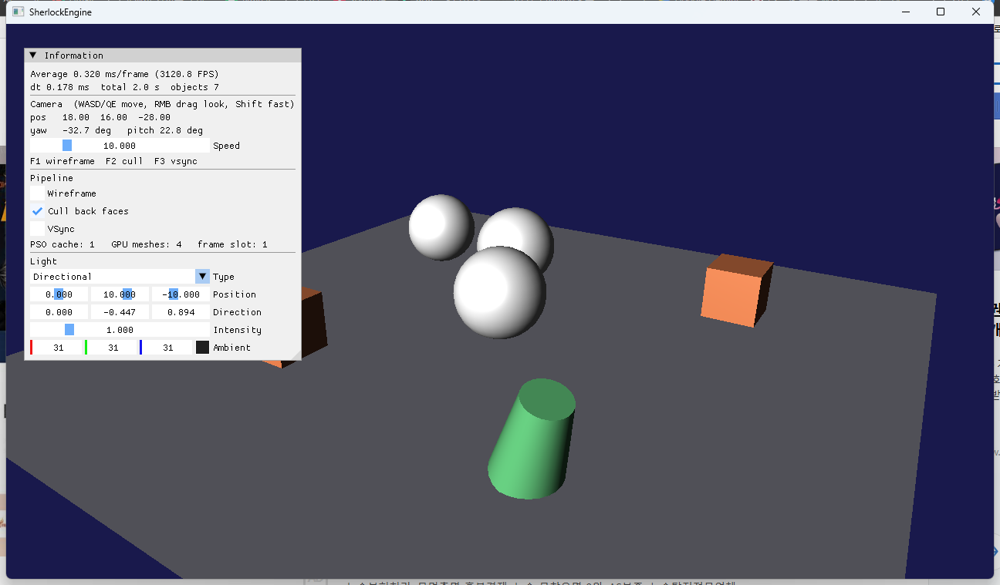
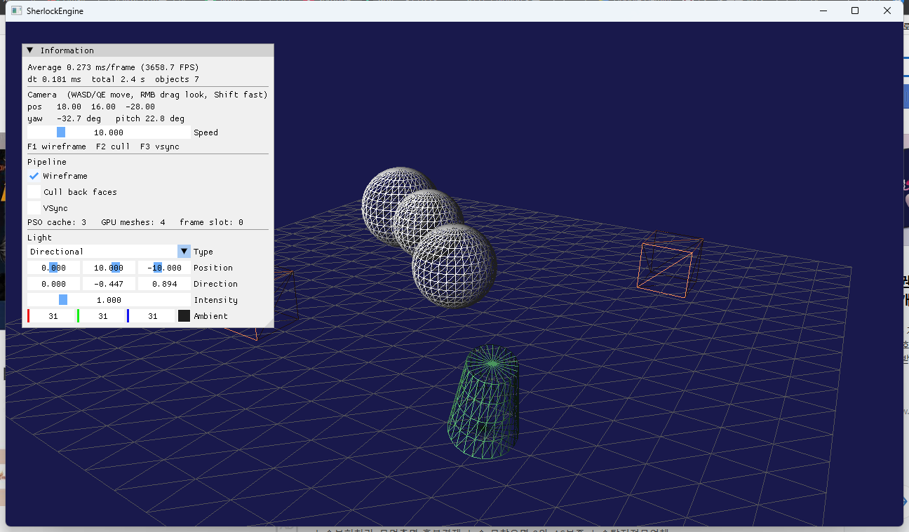
12.4단계로 가는 길
3단계가 끝난 지금의 Device 공개 API를 원문 9절 개념 대응표에 비춰 보면 남은 조각이 분명합니다.
- BindingLayout / ResourceSet (4단계) —
BindConstantBuffer(slot, handle, stageMask)호출 세 개가SetResourceSet(set)하나가 됩니다.PipelineStateDesc에BindingLayoutHandle필드가 추가됩니다(D3D12의pRootSignature자리). - Material (4단계) —
LightConstants의specularColor·shininess가 Material 상수버퍼로 옮겨 가고,GameObject가Mesh*옆에Material*을 듭니다.Renderer::Render의 오브젝트 루프가 PSO → Material → Mesh로 정렬됩니다. - Sampler / SRV (5단계) —
TextureDesc에 이미TextureBind_ShaderResource와GetSRV()가 있습니다.CreateTexture(desc, initialData)의SysMemPitch계산이 비압축 포맷만 다루므로 압축 포맷은 그때 추가합니다. - RenderPass / CommandList (6단계) —
BeginFrame의OMSetRenderTargets·Clear·뷰포트가BeginRenderPass(RenderPassDesc)로,Bind*/DrawIndexed가CommandList메서드로 옮겨 갑니다.Renderer.cpp의m_device->가cmd->로 바뀌는 기계적 변경입니다.
13.참고 문헌
- Andre Weissflog, Handles are the better pointers, 2018. floooh.github.io/2018/06/17/handles-vs-pointers.html
- Niklas Frykholm, Managing Decoupling Part 4 — The ID Lookup Table, Bitsquid blog, 2011 — 세대 카운터가 붙은 ID와 슬롯 테이블의 원형. bitsquid.blogspot.com/2011/09/managing-decoupling-part-4-id-lookup.html
- sokol_gfx.h — 단일 헤더로 D3D11·Metal·WebGPU 위에 Desc → 핸들 API를 구현한 참고 구현. 풀·세대 카운터·
sg_buffer_desc. github.com/floooh/sokol - NVRHI — D3D11/D3D12/Vulkan 공통 추상화.
BufferDesc/TextureDesc와 세 백엔드의 구현을 나란히 볼 수 있음. github.com/NVIDIA-RTX/NVRHI - Microsoft Learn, How to: Use dynamic resources —
D3D11_MAP_WRITE_DISCARD가 새 메모리를 돌려주고 GPU는 옛 데이터를 계속 쓴다는 설명, 전체 버림 규칙. learn.microsoft.com/…/how-to--use-dynamic-resources. 또한 ID3D11DeviceContext::Map — 쓰기용 매핑 메모리를 읽지 말 것. learn.microsoft.com/…/nf-d3d11-id3d11devicecontext-map - Microsoft Learn, ID3D11DeviceContext::UpdateSubresource — 상수버퍼는 부분 갱신 불가, Dynamic 리소스에는 사용 불가. learn.microsoft.com/…/nf-d3d11-id3d11devicecontext-updatesubresource
- Microsoft Learn, D3D11_USAGE enumeration — Default/Dynamic/Immutable/Staging의 CPU·GPU 접근 표와 바인딩 제한. learn.microsoft.com/…/ne-d3d11-d3d11_usage
- Microsoft Learn, Fence-Based Resource Management (Direct3D 12) — 업로드 힙 링 버퍼와 프레임 펜스.
kFrameCount복제가 대비하는 구조. learn.microsoft.com/…/fence-based-resource-management - Microsoft Learn, Packing rules for constant variables — 16바이트 레지스터, 경계를 넘지 않는 규칙, 예제 표. learn.microsoft.com/…/dx-graphics-hlsl-packing-rules. 관련: How to: Create a Constant Buffer — C++와 HLSL 레이아웃을 맞추라는 주의. learn.microsoft.com/…/overviews-direct3d-11-resources-buffers-constant-how-to
- Microsoft Learn, D3DReflect function —
ID3D11ShaderReflection얻기. learn.microsoft.com/…/nf-d3dcompiler-d3dreflect - Microsoft Learn, IDXGISwapChain::ResizeBuffers — 직접·간접 참조를 전부 해제해야 하는 조건과
ClearState권장. learn.microsoft.com/…/nf-dxgi-idxgiswapchain-resizebuffers - Frank Luna, Introduction to 3D Game Programming with DirectX 11, 7장 "Lighting"의
GeometryGenerator(박스·격자·원기둥·구)와 6장의 상수버퍼 갱신 절. d3dcoder.net/d3d11.htm - Microsoft Learn, For best performance, use DXGI flip model —
BeginFrame이 매 프레임 렌더 타깃을 다시 거는 이유 중 하나. learn.microsoft.com/…/for-best-performance--use-dxgi-flip-model
4단계 · Material과 바인딩 레이아웃
D3D12의 루트 시그니처에 해당하는 BindingLayout과 디스크립터 테이블에 해당하는 ResourceSet을 D3D11 위에 미리 만들고, 그 위에 Material을 올린 단계입니다. 함께 정점 포맷을 열거형으로 바꾸고, 셰이더가 실제로 쓰는 슬롯을 리플렉션으로 읽어 선언과 대조했습니다. 또 빌드 때 .cso를 만들되, Debug에서는 HLSL을 저장하는 순간 다시 컴파일되어 화면에 반영되게 했습니다. 드로우는 PSO → Material → Mesh 순으로 정렬됩니다.
"이 파이프라인은 b0·b1·b2·b3을 쓴다"는 선언(BindingLayoutDesc)이 PSO Desc에 들어가고, 각 슬롯에 무엇을 꽂을지는 ResourceSet이 정합니다. D3D11에서 SetResourceSet은 슬롯마다 *SSetConstantBuffers를 부르는 것뿐이지만, D3D12에서는 같은 호출이 디스크립터 테이블 하나를 세팅합니다. Material은 재질 상수버퍼 하나와 재질 ResourceSet 하나이고, 옵션(와이어프레임·양면)에 따라 다른 PSO를 고릅니다. 셰이더는 빌드 시 .cso로 컴파일되지만 Debug에서 소스가 바뀌면 다시 컴파일되어 PSO 캐시가 세대를 올리며 재생성됩니다.
1.요약
| 구성 요소 | 파일 | 역할 |
|---|---|---|
| BindingLayoutDesc / ResourceSetDesc | Graphics/BindingTypes.h | 슬롯 {타입 CBV/SRV/Sampler, 스테이지 마스크, 레지스터} 배열과, 그 슬롯에 꽂을 핸들 배열. 상한 CBV 8 · SRV 16 · Sampler 8 |
| Device::CreateBindingLayout / CreateResourceSet / SetResourceSet | Graphics/D3D11/Device.cpp | 선언 검증(중복·상한·스테이지 0), 셋 생성 시 핸들 종류 검증, 바인딩 시 슬롯별 D3D11 호출 |
| PipelineStateDesc.bindingLayouts[4] | Graphics/PipelineTypes.h | D3D12 pRootSignature 자리. 해시·비교에 포함 |
| Material | Scene/Material.h | baseColor·specularColor·shininess·wireframe·doubleSided. CPU 데이터 |
| MaterialConstants (b3) | Graphics/ShaderConstants.h, Shaders/Common.hlsli | 32바이트. LightConstants는 672 → 656 |
| VertexFormat | Graphics/VertexTypes.h | 열거형 + GetVertexLayout(format). Mesh가 자기 포맷을 말한다 |
| ShaderCompiler::ReflectBindings / LoadOrCompile | Graphics/D3D11/ShaderCompiler.cpp | b#/t#/s# 리플렉션, .cso ↔ 소스 선택 |
| PipelineStateCache::Clear + 세대 | Graphics/D3D11/PipelineStateCache.cpp | 핫리로드 후 이전 핸들을 무효화 |
| Renderer | Graphics/Renderer.cpp | 레이아웃 3개·셋 2개 생성, GpuMaterial 캐시, 드로우 목록 정렬, 상태 캐시, 파일 감시 |
| FxCompile 항목 + 타깃 2개 | SherlockEngine.vcxproj | .cso 생성, 출력 폴더 생성, 소스 사본 복사 |
- 파일 위치(7단계 RHI 인터페이스 추출). 위 표의
Graphics/경로는 이제RHI/아래에 있습니다:RHI/BindingTypes.h,RHI/PipelineTypes.h,RHI/D3D11/D3D11Device.cpp(클래스D3D11Device, 인터페이스는RHI/Device.h),RHI/D3D11/PipelineStateCache.cpp. 셰이더 컴파일러는 8단계에서 선언RHI/ShaderCompiler.h, 구현RHI/DXBC/ShaderCompiler.cpp로 나뉘었습니다. SetResourceSet(6단계). Device 함수가 아니라RHI::CommandList의 함수입니다. D3D11 구현은D3D11CommandList::SetResourceSet(RHI/D3D11/D3D11CommandList.cpp)입니다.CreateBindingLayout·CreateResourceSet의 검증은 그대로D3D11Device에 있습니다.- 상수버퍼 크기. b0 PerFrame은 208 → 288(6단계
lightViewProj·shadowParams) → 304바이트(11단계debugParams), b3 Material은 32 → 48(5단계uvScale·unlit) → 64바이트(9단계alphaCutoff)입니다. b1 128, b2 656은 그대로입니다(Graphics/ShaderConstants.h의static_assert).
2.루트 시그니처를 D3D11에 미리 그리기
2.1 BindingLayout과 ResourceSet
D3D12의 루트 시그니처는 "파이프라인에 어떤 종류의 리소스가 어떤 슬롯으로 바인딩되는가"를 정의합니다[1]. 셰이더의 register(b0) 같은 가상 레지스터는 루트 시그니처를 통해 디스크립터 힙의 실제 위치로 연결되고, 디스크립터 테이블은 "논리적으로 디스크립터의 배열"입니다[2]. D3D11에는 이 개념이 없습니다. VSSetConstantBuffers(0, 1, &buffer)처럼 슬롯에 직접 꽂습니다. 그래서 4단계는 D3D11 위에 두 개념을 이름만 먼저 만듭니다.
// Graphics/BindingTypes.h
enum class BindingType : uint8_t { ConstantBuffer, ShaderResource, Sampler }; // b# / t# / s#
struct BindingSlot { BindingType type; uint8_t stageMask; uint8_t reg; };
struct BindingLayoutDesc { BindingSlot slots[16]; uint8_t slotCount; const char* debugName;
BindingLayoutDesc& Add(BindingType, uint8_t stageMask, uint8_t reg); };
struct ResourceBinding { BufferHandle buffer; TextureHandle texture; }; // 슬롯 타입에 따라 하나만
struct ResourceSetDesc { BindingLayoutHandle layout; ResourceBinding bindings[16]; const char* debugName; };// Graphics/D3D11/Device.cpp — SetResourceSet. D3D12라면 SetGraphicsRootDescriptorTable 한 번.
for (i < layout->desc.slotCount)
{
const BindingSlot& slot = layout->desc.slots[i];
const ResourceBinding& binding = set->desc.bindings[i];
switch (slot.type)
{
case BindingType::ConstantBuffer:
ID3D11Buffer* b = m_buffers.Get(binding.buffer)->Get(m_frameIndex); // Dynamic 링의 이번 프레임 복제본
if (slot.stageMask & ShaderStageMask_Vertex) m_context->VSSetConstantBuffers(slot.reg, 1, &b);
if (slot.stageMask & ShaderStageMask_Pixel) m_context->PSSetConstantBuffers(slot.reg, 1, &b);
break;
case BindingType::ShaderResource: // t#: 텍스처의 SRV. 5단계에서 실제로 쓰인다
…VSSetShaderResources / PSSetShaderResources…
}
}검증은 생성 시점에 합니다. CreateBindingLayout은 슬롯 상한, 스테이지 마스크 0, 같은 (타입, 레지스터)가 같은 스테이지에 두 번 선언되는 경우(뒤의 선언이 앞의 것을 덮어 조용히 틀어짐)를 거부합니다. CreateResourceSet은 슬롯 타입에 맞는 종류의 핸들(상수버퍼 슬롯에 BufferBind_Constant 버퍼, SRV 슬롯에 TextureBind_ShaderResource 텍스처)이 꽂혀 있는지 확인합니다. 드로우마다 검사하지 않기 위해서입니다. 3단계까지 있던 BindConstantBuffer(slot, handle, stageMask)는 지웠습니다. 남겨 두면 레이아웃을 우회하는 길이 되기 때문입니다.
ResourceBinding에는 5단계에서SamplerHandle sampler가 더해져{ buffer, texture, sampler }가 되었습니다(RHI/BindingTypes.h).- 위
SetResourceSet스니펫은 6단계부터D3D11CommandList::SetResourceSet(RHI/D3D11/D3D11CommandList.cpp)에 있습니다. 상수버퍼는m_device->GetBuffer(binding.buffer)->Get(frameIndex)로 얻고,Sampler슬롯은VSSetSamplers/PSSetSamplers로 풉니다. 슬롯별 D3D11 호출로 풀어내는 구조는 같습니다.
2.2 갱신 빈도별 셋 세 개
| 레이아웃 / 셋 | 슬롯 | 갱신 | 바인딩 | D3D12 대응 |
|---|---|---|---|---|
| Layout_Frame / Set_Frame | b0 PerFrame (VS|PS), b2 Lights (PS) | 프레임 1회 | 프레임 초 1회 | 루트 파라미터 0 — 가장 드물게 바뀜 |
| Layout_Object / Set_Object | b1 PerObject (VS) | 드로우마다 내용만 Map | 프레임 초 1회 | 루트 CBV 또는 링 버퍼 오프셋 |
| Layout_Material / Set_Material×N | b3 Material (PS) | 재질당 프레임 1회 | 재질이 바뀔 때 | 재질 디스크립터 테이블. 5단계에서 t0·s0이 여기 붙는다 |
세 레이아웃은 PipelineStateDesc::bindingLayouts[0..2]에 순서대로 들어갑니다. D3D12에서는 이 배열이 루트 시그니처 하나의 루트 파라미터 목록이 됩니다. Microsoft는 "자주 바뀌는 파라미터를 앞에 두라"고 하는데[3], 지금 순서(프레임 → 오브젝트 → 재질)는 원문 4단계의 "프레임마다 바뀌는 것과 재질마다 바뀌는 것을 다른 ResourceSet으로"를 따른 것입니다. 8단계에서 루트 시그니처를 만들 때 순서를 성능에 맞게 재배치해도, Renderer는 셋을 바인딩할 뿐이라 바뀌지 않습니다.
오브젝트 셋을 "프레임 초 1회"만 바인딩해도 되는 것은 3단계의 Dynamic 버퍼 의미론 덕분입니다. UpdateBuffer가 Map(WRITE_DISCARD)로 내용을 바꿔도 D3D11 객체(ID3D11Buffer*)는 같으므로 바인딩은 유효하고, 드라이버가 드로우마다 다른 메모리를 가리키게 합니다. D3D12에서는 이 자리가 링 버퍼 오프셋 갱신(루트 CBV 주소 변경)이 됩니다.
지금의 세 레이아웃(Renderer::Initialize, Graphics/Renderer.cpp)은 위 표보다 슬롯이 많습니다.
Layout_Frame: b0 PerFrame (VS|PS), b2 Lights (PS), 그리고 6단계에서 더해진 t8 그림자 맵 (PS), s4 비교 샘플러 (PS).Layout_Object: b1 PerObject (VS). 변화 없음.Layout_Material: b3 Material (VS|PS, 5단계uvScale때문), t0 알베도 (5단계), t1 노멀 (6단계), s0 샘플러 (5단계). 표의 "5단계에서 t0·s0이 여기 붙는다"는 예고대로 되었고 6단계에서 t1이 더해졌습니다.
2.3 D3D12의 64 DWORD 예산
루트 시그니처는 최대 64 DWORD이고 디스크립터 테이블은 1 DWORD, 루트 상수는 1 DWORD, 루트 디스크립터는 2 DWORD를 씁니다[3]. 세 테이블이면 3 DWORD로 여유가 많지만, 슬롯을 무한정 늘릴 수 없다는 사실을 BindingTypes.h의 상한(CBV 8, SRV 16, Sampler 8)으로 지금부터 드러냈습니다. D3D11 자체 한도(CBV 14, SRV 128, Sampler 16)보다 좁습니다. 원문 4단계가 제안한 값(CBV 4, SRV 16, Sampler 8)에서 CBV만 8로 늘렸는데, 이미 b0~b3 넷을 쓰고 있어 4는 여유가 없기 때문입니다. 일부 하드웨어는 루트 인자 공간이 16 DWORD로 고정되어 있어, 이를 넘기면 느린 메모리로 흘러넘친다는 점도 같은 문서에 나옵니다.
3.Material
// Scene/Material.h — CPU 데이터
struct Material
{
std::string name;
XMFLOAT4 baseColor{1,1,1,1}; // 정점 색에 곱해진다
XMFLOAT3 specularColor{1,1,1};
float shininess = 32.0f;
bool wireframe = false; // 파이프라인 상태에 영향 → 다른 PSO
bool doubleSided = false;
};
// Graphics/Renderer.h — GPU 쪽 캐시 (Mesh → GpuMesh 와 같은 경계)
struct GpuMaterial { BufferHandle constants; ResourceSetHandle set; uint64_t uploadedFrame; };
std::unordered_map<const Material*, GpuMaterial> m_gpuMaterials;원문은 "Material = PipelineHandle + ResourceSet + MaterialConstants(Buffer)"라고 했습니다. 두 가지를 바꿨습니다. 첫째, PipelineHandle을 저장하지 않습니다. PSO는 Desc가 캐시 키이므로 매 프레임 GetPipelineFor(material, vertexFormat)으로 Desc를 만들어 캐시에 물으면 됩니다. 그래야 핫리로드로 캐시가 비워졌을 때 stale 핸들이 남지 않습니다. 둘째, CPU 데이터(Scene/Material.h)와 GPU 캐시(Renderer)를 분리했습니다. 3단계에서 Mesh에 적용한 경계와 같습니다. Scene::AddMaterial이 unique_ptr로 소유하고 GameObject는 const Material*를 듭니다. 재질이 nullptr이면 Renderer의 기본 재질(흰색, 광택 32)을 씁니다.
specularColor와 shininess는 LightConstants에서 MaterialConstants(b3, 32바이트)로 옮겨 갔습니다. 조명 버퍼는 672 → 656바이트가 되었고 static_assert와 Common.hlsli를 같이 고쳤습니다. 픽셀 셰이더의 변경은 두 줄입니다.
// Shaders/BasicPixelShader.hlsl
const float4 surface = input.col * baseColor; // 재질의 기본색 × 정점 색
const float3 albedo = surface.rgb;
…
return float4(finalColor, surface.a);재질 상수는 프레임에 재질당 한 번 올립니다. 같은 재질을 여러 오브젝트가 쓰면 첫 드로우에서만 Map합니다(uploadedFrame 스탬프). 매 프레임 올리는 이유는 ImGui 재질 패널의 편집이 즉시 반영되어야 하기 때문이고, 32바이트 × 재질 수라 비용이랄 것이 없습니다.
Material(Scene/Material.h)에 5단계albedoTexture·albedoSrgb·sampler·uvScale·unlit, 6단계normalTexture·normalStrength, 9단계alphaCutoff가 더해졌습니다.wireframe·doubleSided는 맨 뒤로 옮겨졌습니다.GpuMaterial(Graphics/Renderer.h)은{ constants, set, boundAlbedo, boundNormal, boundSampler, uploadedFrame }입니다. 셋에 넣은 텍스처·샘플러를 기억해 바뀌면 셋을 다시 만듭니다(5단계 7절). PSO 핸들을 저장하지 않는 원칙은 그대로입니다.- 픽셀 셰이더의 표면 색은 5단계부터
input.col * baseColor * texel입니다.MaterialConstants는 지금 64바이트입니다.
4.정점 포맷 열거
원문 D9가 권한 (a) "정점 타입 열거 + offsetof 레이아웃" 방식입니다. 1단계에서 이미 GetVertexLayoutPCN()이 offsetof를 썼으므로, 남은 것은 메시가 자기 포맷을 말하게 하는 것이었습니다.
// Graphics/VertexTypes.h
enum class VertexFormat : uint8_t { PositionColorNormal }; // 5단계 PNT, 6단계 PNTT 추가 예정
inline VertexLayoutDesc GetVertexLayout(VertexFormat format);
inline uint32_t GetVertexStride(VertexFormat format);
// Graphics/Mesh.h
VertexFormat GetVertexFormat() const;
// Graphics/Renderer.cpp
desc.vertexLayout = GetVertexLayout(vertexFormat); // PSO Desc의 일부 → 포맷이 다르면 다른 PSO
vbDesc.stride = GetVertexStride(mesh.GetVertexFormat());InputLayout은 여전히 PSO 안에서만 만들어집니다(1단계). 리플렉션(D9의 (b))은 5절에서 바인딩 검사에 썼고, 입력 시그니처 검사는 CreateInputLayout이 이미 하므로(시맨틱이 맞지 않으면 실패) 따로 하지 않았습니다.
- 6단계에서 탄젠트가 더해지면서
VertexFormat의 값은PositionColorNormalTexcoordTangent하나만 남았습니다(VERTEX64바이트, 속성 5개).PositionColorNormal과 5단계의PositionColorNormalTexcoord는 없습니다. - C++20 전환(2026-09-28): 레이아웃은
consteval MakeVertexLayoutPCNTT()로 컴파일 시점에 만든 상수kVertexLayoutPCNTT이고, 함수는constexpr const VertexLayoutDesc& GetVertexLayout(VertexFormat),constexpr uint32_t GetVertexStride(VertexFormat)입니다. 위 스니펫의inline·값 반환 시그니처와 다릅니다(Graphics/VertexTypes.h).
5.리플렉션으로 선언 대조
BindingLayout은 손으로 선언합니다. 셰이더에 cbuffer Extra : register(b4)를 추가하고 레이아웃에 넣는 것을 잊으면 D3D11은 아무 말 없이 b4에 널이 바인딩된 채 그립니다(전부 0으로 읽힘). 이것을 초기화 시점에 잡습니다.
// Graphics/D3D11/ShaderCompiler.cpp
bool ReflectBindings(const std::vector<uint8_t>& bytecode, std::vector<ReflectedBinding>& out)
{
D3DReflect(bytecode.data(), bytecode.size(), IID_PPV_ARGS(&reflection));
reflection->GetDesc(&shaderDesc);
for (i < shaderDesc.BoundResources)
{
reflection->GetResourceBindingDesc(i, &bind); // D3D11_SHADER_INPUT_BIND_DESC
switch (bind.Type) { case D3D_SIT_CBUFFER: … ConstantBuffer; case D3D_SIT_TEXTURE: … ShaderResource; case D3D_SIT_SAMPLER: … Sampler; }
out.push_back({ type, bind.BindPoint, bind.Name });
}
}ID3D11ShaderReflection::GetResourceBindingDesc는 "리소스 하나가 셰이더 입력으로 어떻게 바인딩되는지"를 돌려줍니다[4]. Renderer::ValidateBindings는 VS와 PS 각각에 대해 리플렉션 결과의 모든 (타입, 레지스터)가 세 레이아웃의 합집합 안에 그 스테이지로 선언되어 있는지 확인합니다. Debug에서는 불일치하면 초기화가 실패하고, Release에서는 경고만 남깁니다. 로그:
[정보] 바인딩 대조: VS b0 ('PerFrame') OK
[정보] 바인딩 대조: VS b1 ('PerObject') OK
[정보] 바인딩 대조: PS b0 ('PerFrame') OK
[정보] 바인딩 대조: PS b2 ('Lights') OK
[정보] 바인딩 대조: PS b3 ('Material') OK원문은 "리플렉션으로 BindingLayout 자동 생성"이라고 했지만 여기서는 대조에 그쳤습니다. 자동 생성하면 "셰이더가 쓰는 것"이 곧 레이아웃이 되어 검사가 사라지고, 셰이더 두 개가 같은 레이아웃을 공유해야 한다는(PSO 캐시 히트의 조건) 제약을 표현할 수 없습니다. 레이아웃은 의도이고 리플렉션은 사실이며, 둘을 비교하는 것이 검사입니다. 반대 방향 검사(선언했지만 아무 셰이더도 안 쓰는 슬롯)는 Info 로그로만 남겨도 되지만 지금은 하지 않습니다.
리플렉션 데이터는 .cso에 남아 있어야 하므로 fxc의 /Qstrip_reflect를 켜지 않습니다[5]. D12에서 예고한 대로입니다.
- 시그니처는 C++20 전환(2026-09-28)에서
bool ReflectBindings(std::span<const uint8_t> bytecode, std::vector<ReflectedBinding>& out)로 바뀌었습니다. 선언은RHI/ShaderCompiler.h, 구현은RHI/DXBC/ShaderCompiler.cpp(8단계)입니다. Renderer::ValidateBindings는 6단계부터 그림자 정점 셰이더까지 세 셰이더(VS, PS, ShadowVS)를 대조합니다. 대조 대상 슬롯도 위 2.2절 상자처럼 늘었으므로 로그 줄 수가 위 예시보다 많습니다.
6..cso 사전 컴파일과 핫리로드
6.1 빌드: fxc
<FxCompile Include="Shaders\BasicVertexShader.hlsl">
<ShaderType>Vertex</ShaderType>
<ShaderModel>5.0</ShaderModel>
<EntryPointName>VS_Main</EntryPointName>
<ObjectFileOutput>$(OutDir)Shaders\%(Filename).cso</ObjectFileOutput>
<EnableDebuggingInformation Condition="'$(Configuration)'=='Debug'">true</EnableDebuggingInformation>
<DisableOptimizations Condition="'$(Configuration)'=='Debug'">true</DisableOptimizations>
</FxCompile>
<None Include="Shaders\Common.hlsli" />
<Target Name="EnsureShaderOutputDir" BeforeTargets="FxCompile">
<MakeDir Directories="$(OutDir)Shaders" /> <!-- fxc는 출력 폴더를 만들지 않는다 -->
</Target>
<Target Name="CopyShaderSources" AfterTargets="Build">
<Copy SourceFiles="@(ShaderSourceFiles)" DestinationFolder="$(OutDir)Shaders" SkipUnchangedFiles="true" />
</Target>Visual C++의 HLSL 속성 페이지가 이 항목들(Shader Type, Entrypoint Name, Object File Name, Disable Optimizations, Enable Debugging Information)을 fxc 인자 /T, /E, /Fo, /Od, /Zi로 옮깁니다[6]. 0단계의 FxCompile + ExcludedFromBuild(편집기 등록용)와 달리 이제는 실제로 컴파일합니다. HLSL 오류가 빌드 시점에 잡히는 것이 첫 이득입니다. 3단계까지는 실행해야 알 수 있었습니다. Common.hlsli는 None 항목입니다. include 전용이라 컴파일 대상이 아닙니다. 0단계의 CopyFileToFolders는 Copy 타깃으로 바꿨습니다. 같은 파일을 두 항목 타입으로 두면 Solution Explorer에 두 번 보이기 때문입니다.
원문 4단계는 "register(b0, space0) 표기는 D3D11 fxc가 무시하므로 지금부터 써도 된다"고 했습니다. 실제로는 SM 5.0 프로파일에서 fxc가 error X3721: space is only supported for shader targets 5.1 and higher로 거부합니다. space는 Shader Model 5.1이 도입한 문법이며 D3D12는 모든 하드웨어에서 5.1을 지원합니다[7]. 8단계에서 프로파일을 5.1(또는 dxc 6.0)로 올릴 때 넣습니다. Common.hlsli 맨 위에 이 정정을 적어 두었습니다.
- "8단계에서 5.1로 올린다"는 예고는 실현되지 않았습니다. 8단계 D3D12 백엔드도 fxc가 만든 SM 5.0 DXBC를 그대로 받으므로 프로파일을 올리지 않았습니다. 지금도
SherlockEngine.vcxproj의<ShaderModel>5.0,Renderer::LoadShaders의vs_5_0/ps_5_0이고, 레지스터에space를 쓰지 않습니다(D3D12 루트 시그니처는 space 0).Common.hlsli머리 주석도 아직 "8단계에서 넣음"이라고 적혀 있습니다. 8단계 문서 참고. - FxCompile 항목은 6단계에서
Shaders\ShadowVertexShader.hlsl(진입점VS_Shadow)이 더해져 세 개입니다.
SM 5.0 유지는 그대로입니다. 다만 vs_5_0/ps_5_0 문자열은 이제 Renderer::LoadShaders에 없습니다. ShaderCompiler::CompileFromFile·LoadOrCompile이 ShaderStage를 받고, 프로파일은 RHI/DXBC/ShaderCompiler.cpp의 GetTargetProfile이 정합니다. 적용 기록 — 셰이더 컴파일 인자를 ShaderStage로
6.2 런타임: 무엇을 로드할까
// Graphics/D3D11/ShaderCompiler.cpp — LoadOrCompile
csoPath = exe\Shaders\<name>.cso
#if _DEBUG
sourcePath = 소스 트리\Shaders\<name>.hlsl // Paths::GetShaderSourcePath. 없으면 exe 옆 사본
if (source exists && (cso missing || max(source, Common.hlsli) newer than cso))
→ CompileFromFile(sourcePath) // "빌드 없이 셰이더만 고치고 F5"
#endif
if (cso exists) → LoadFile(csoPath)
else → 경고 후 exe 옆 .hlsl 런타임 컴파일 (폴백)D12의 방향 그대로입니다. Release는 .cso만 씁니다(없으면 폴백). Debug는 .cso와 소스의 수정 시각을 비교해 더 새로운 쪽을 씁니다. Common.hlsli의 시각도 보는 이유는, 헤더만 고치면 .hlsl은 그대로인데 결과가 달라지기 때문입니다. 로그에 어느 파일을 썼는지 남깁니다. 셰이더 로드: VS …\x64\Debug\Shaders\BasicVertexShader.cso, PS …\SherlockEngine\Shaders\BasicPixelShader.hlsl처럼 VS는 .cso, PS는 소스인 혼합 상태도 정상입니다.
6.3 핫리로드와 PSO 캐시 세대
Debug 빌드에서 Renderer::CheckHotReload가 0.5초마다 세 파일(VS, PS, Common.hlsli)의 수정 시각을 GetFileAttributesExW로 읽습니다. 하나라도 바뀌면 ReloadShaders()가 다음을 수행합니다.
- 소스에서 VS·PS를 컴파일한다. 하나라도 실패하면 이전 셰이더를 유지하고 경고를 남긴다(컴파일러 메시지에 줄 번호가 있다). 실패해도 수정 시각은 갱신해 같은 파일로 0.5초마다 재시도하지 않게 한다. 다시 저장하면 다시 시도한다.
- 5절의 cbuffer 크기·바인딩 대조를 다시 한다. 셰이더를 고치면서 레이아웃을 깨뜨리는 것도 여기서 잡힌다.
- 새
ShaderHandle을 만들고 이전 핸들을 풀에서 지운다. PSO가 이전 셰이더 객체를 ComPtr로 붙들고 있으므로 이 시점에 사라지지는 않는다. m_baseDesc.vs/ps를 새 핸들로 바꾸고Device::InvalidatePipelines()→PipelineStateCache::Clear()를 부른다. 캐시가 비고 세대 번호가 1 오른다.
// Graphics/D3D11/PipelineStateCache.cpp
PipelineHandle GetOrCreate(…) { … return PipelineHandle{ index, m_generation }; }
const PipelineState* Get(PipelineHandle h) const
{
if (!h.IsValid() || h.index >= m_states.size() || h.generation != m_generation) return nullptr;
…
}
void Clear() { m_lookup.clear(); m_states.clear(); ++m_generation; if (m_generation == 0) m_generation = 1; }세대가 없으면 위험합니다. 캐시를 비운 뒤 인덱스는 0부터 다시 시작하므로, 누군가 들고 있던 옛 핸들 {0, 1}이 새로 만들어진 전혀 다른 PSO를 가리키게 됩니다. 1단계에서 "PSO는 개별 삭제하지 않으므로 세대가 항상 1"이라고 한 전제가 4단계에서 무너진 것입니다. 그래서 3단계의 ResourcePool과 같은 해법(세대 불일치 → nullptr)을 캐시 전체 단위로 적용했습니다. 이 때문에 GpuMaterial이 PSO 핸들을 저장하지 않는 것입니다(3절). 로그는 PSO 생성 #0 (…, gen=2)처럼 세대를 찍습니다.
ImGui의 "Reload shaders" 버튼과 F4 키가 ReloadShaders()를 수동으로 부릅니다. Release에서는 폴링이 꺼져 있지만 수동 호출은 동작합니다(소스 트리가 없으면 exe 옆 사본을 컴파일).
- 감시 파일은 6단계에서
ShadowVertexShader.hlsl이 더해져 네 개(VS, PS, ShadowVS, Common.hlsli)입니다.ReloadShaders는m_baseDesc.vs/ps와 함께 그림자 패스의m_shadowDesc.vs도 바꾼 뒤InvalidatePipelines()를 부릅니다(Graphics/Renderer.cpp). InvalidatePipelines는 이제RHI::Device의 가상 함수이고, D3D11 구현이RHI/D3D11/PipelineStateCache.cpp의Clear()를 부릅니다. 세대 로직(Get의 세대 비교,Clear의 0 건너뛰기)은 위 스니펫과 같습니다.
7.드로우 정렬과 상태 캐시
원문 D5는 "3단계에서 드로우 루프가 생기면 (a) 정렬, (b) 마지막 바인딩을 기억해 건너뛰는 얇은 캐시"를 권했고, 4단계 작업 항목이 "PSO → Material → Mesh 순"을 정했습니다. Ericson의 잘 알려진 글[8]이 같은 생각을 정렬 키 하나로 표현합니다. 여기서는 키를 만들지 않고 비교 함수로 썼습니다.
// Graphics/Renderer.cpp — Render()
struct DrawItem { PipelineHandle pipeline; const Material* material; const Mesh* mesh; const GameObject* object; };
// 수집: 오브젝트마다 재질·정점 포맷으로 PSO 핸들을 얻는다 (캐시 히트)
std::sort(m_drawList…, [](a, b) {
if (a.pipeline.index != b.pipeline.index) return a.pipeline.index < b.pipeline.index;
if (a.material != b.material) return a.material < b.material;
return a.mesh < b.mesh;
});
// 드로우: "직전"과 다를 때만 바인딩. 직전 기억은 이 함수 안에서만 산다.
for (item : m_drawList)
{
if (item.pipeline != lastPipeline) { BindPipeline; ++stats.pipelineSwitches; }
if (item.material != lastMaterial) { SetResourceSet(gpuMaterial.set); ++stats.resourceSetSwitches; }
if (item.mesh != lastMesh) { BindVertexBuffer; BindIndexBuffer; ++stats.meshSwitches; }
UpdateBuffer(m_perObjectCB, world…); // 드로우마다
DrawIndexed(…);
}D5가 경고한 "캐시는 누군가 몰래 상태를 바꾼 것을 모른다"는 문제는 lastPipeline 등을 Render()의 지역 변수로 두는 것으로 해결됩니다. 프레임마다 새로 시작하므로 ImGui 백엔드가 프레임 끝에 상태를 건드려도 다음 프레임 첫 드로우는 항상 바인딩합니다. 투명 오브젝트(뒤→앞 거리순)는 별도 큐가 필요하다는 경고도 유효하며 5단계 이후의 몫입니다.
데모 씬(7 오브젝트, 재질 6, 메시 4, PSO 2)의 실측: draws 7, PSO switches 2, set switches 6, mesh switches 5. 같은 PSO·재질·메시가 연속되도록 정렬된 결과입니다. 정렬 없이는 각각 7이었을 것입니다. 이 숫자는 ImGui 패널에 매 프레임 표시되며 11단계 Stats 패널의 원형입니다.
DrawItem에 9단계에서 서브메시 범위indexStart·indexCount가 더해졌고, 정렬 키는 PSO → Material → Mesh →indexStart네 단계입니다(Graphics/Renderer.h,Graphics/Renderer.cpp).- 바인딩 호출은 6단계부터
RHI::CommandList를 거칩니다:cmd.SetPipelineState,cmd.SetResourceSet,cmd.SetVertexBuffer,cmd.SetIndexBuffer(…, indexFormat),cmd.DrawIndexed(item.indexCount, item.indexStart, 0). 오브젝트 상수는UploadObjectConstants가 올립니다.lastPipeline·lastMaterial·lastMesh가 함수 지역 변수라는 점은 그대로입니다.
8.함정과 해결
- SM 5.0의
space. 6.1절 참고. 원문의 가정을 검증 없이 따라 썼다가 첫 빌드에서 잡혔습니다. fxc가 빌드 단계에 들어왔기 때문에 잡힌 것이기도 합니다. - fxc가 출력 폴더를 만들지 않는다. 깨끗한
x64\Debug에서/Fo x64\Debug\Shaders\…는 폴더가 없어 실패합니다.BeforeTargets="FxCompile"에MakeDir타깃을 두었습니다. - Renderer.h가
VertexFormat을 모른다.VertexTypes.hinclude와class GameObject;전방선언이 빠져 있었습니다. 1단계와 같은 종류의 실수입니다. - ImGui 패널이 씬을 가린다. 재질 패널이 붙자 패널이 화면 절반을 덮어 스크린샷에 물체가 안 보였습니다. 캡처 스크립트가 패널 헤더를 클릭해 접습니다. 11단계 Dockspace 전까지의 임시 대응입니다.
- PowerShell 5.1은 스크립트를 ANSI로 읽는다. 핫리로드 검증 스크립트에 한글 정규식을 넣었더니 깨져서 실패했습니다. 검증 스크립트는 ASCII만 씁니다. 엔진과 무관하지만 같은 실수를 반복하지 않기 위해 적습니다.
- 첫 실행에 "소스가 .cso보다 새로움". 검증 스크립트가 소스를 건드렸다가 되돌리면 수정 시각이
.cso보다 새로워져 다음 실행은 소스를 컴파일합니다. 의도된 동작이지만, "왜 .cso를 안 쓰지?"라고 놀랄 수 있어 로그에 이유를 찍게 했습니다.
9.검증과 스크린샷
- 완료 기준 ① "같은 구 메시를 다른 Material로 여러 개 그린다" — 구 메시 하나를 RedShiny(광택 128), BlueMatte(스페큘러 0.1, 광택 4), GoldWire(와이어프레임) 세 재질로 그렸습니다. 아래 첫 그림. 빨간 구의 작은 하이라이트와 파란 구의 넓고 흐린 음영이 광택 차이입니다.
- 완료 기준 ② "HLSL 저장 시 PSO가 재생성되어 즉시 반영된다" — 실행 중 픽셀 셰이더에
.bgra채널 스왑을 저장 → 2.5초 뒤 캡처에서 빨강↔파랑이 바뀜, 로그에 세대 2 PSO 재생성. 세미콜론을 지운 저장 →error X3000로그, 화면은 직전(스왑된) 셰이더 유지. 원본 복구 → 세대 3. 아래 둘째·셋째 그림. - 리플렉션: cbuffer 5건 크기 일치(208/128/208/656/32), 바인딩 대조 5건 OK.
- 정렬: draws 7 / PSO 2 / set 6 / mesh 5.
- Debug·Release x64 빌드. Release
.cso는 최적화되어 VS 1,844B / PS 7,640B(Debug 21,944 / 47,704). - 종료: 자식 Live Object 0건.
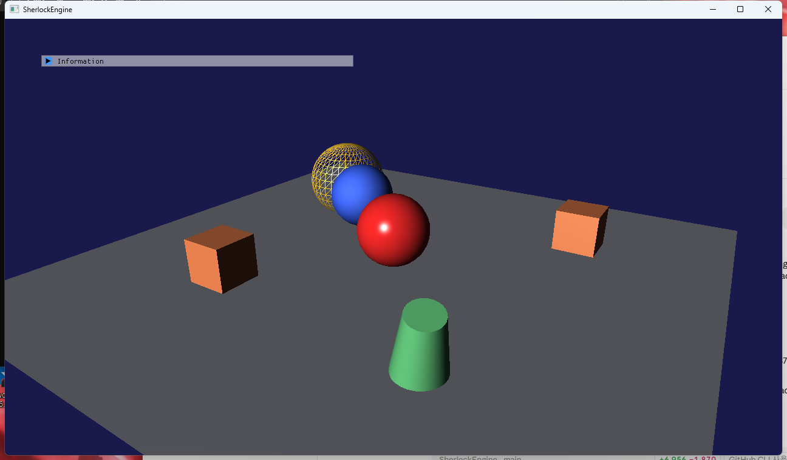
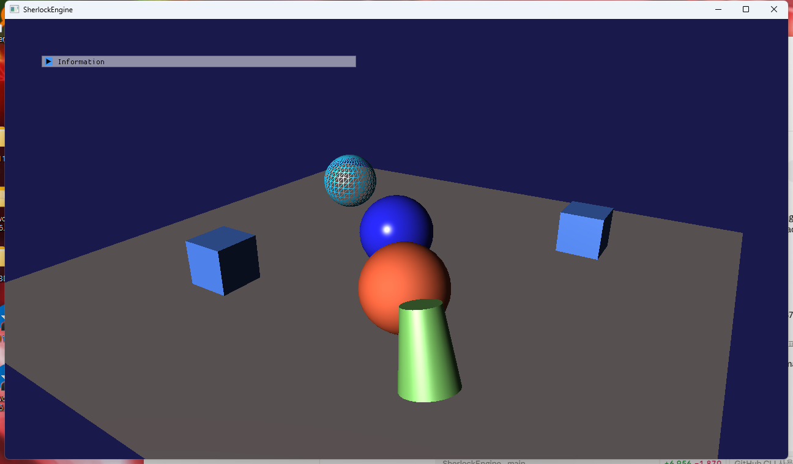
BasicPixelShader.hlsl에 .bgra 스왑을 저장한 뒤. 빨강 구가 파랑, 파랑 구가 주황, 오렌지 큐브가 파랑이 되었다. 빌드 없이 파일 저장만으로 반영된다. (images/2026-09-23-phase4-hotreload-edited.png)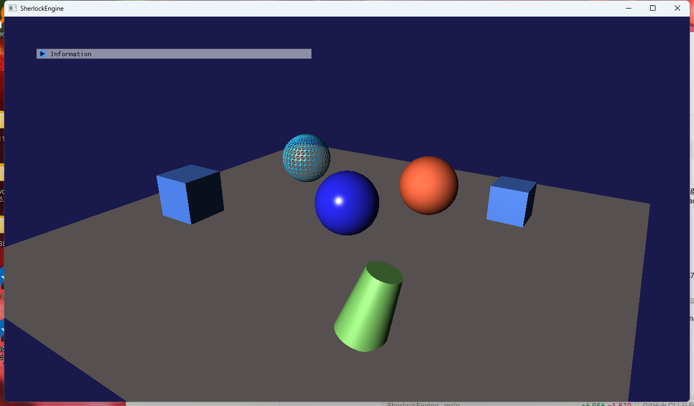
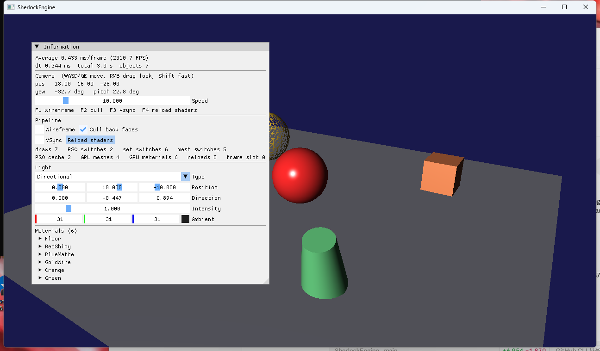
10.참고 문헌
- Microsoft Learn, Root Signatures (Direct3D 12) — 루트 시그니처가 정의하는 것. learn.microsoft.com/…/root-signatures
- Microsoft Learn, Descriptor Tables — 디스크립터 테이블 = 디스크립터의 논리적 배열. learn.microsoft.com/…/descriptor-tables
- Microsoft Learn, Root Signature Limits — 64 DWORD, 테이블 1 / 상수 1 / 디스크립터 2 DWORD, 자주 바뀌는 파라미터를 앞에. learn.microsoft.com/…/root-signature-limits
- Microsoft Learn, ID3D11ShaderReflection::GetResourceBindingDesc. learn.microsoft.com/…/nf-d3d11shader-id3d11shaderreflection-getresourcebindingdesc
- Microsoft Learn, fxc Syntax —
/Fo,/Zi,/Od,/Qstrip_reflect. learn.microsoft.com/…/dx-graphics-tools-fxc-syntax - Microsoft Learn, HLSL Property Pages (Visual C++) — FxCompile 항목의 속성과 fxc 인자의 대응. learn.microsoft.com/…/hlsl-property-pages
- Microsoft Learn, Resource binding in HLSL — Shader Model 5.1의
register(t3, space0)문법. learn.microsoft.com/…/resource-binding-in-hlsl - Christer Ericson, Order your graphics draw calls around!, 2008 — 상태를 정렬 키로 묶어 드로우를 정렬하는 고전. realtimecollisiondetection.net/blog/?p=86
- Microsoft Learn, Managing Graphics Pipeline State in Direct3D 12 — 루트 시그니처가 PSO의 일부라는 점(1단계 문서 참고 1). learn.microsoft.com/…/managing-graphics-pipeline-state-in-direct3d-12
- Microsoft Learn, D3DReflect (3단계 문서 참고 10). learn.microsoft.com/…/nf-d3dcompiler-d3dreflect
5단계 · 텍스처와 색공간
3단계의 Texture 래퍼를 실제 에셋으로 채우고 감마를 잡은 단계입니다. 정점에 UV가 붙고, WIC/DDS 로더가 CPU에서 밉 체인을 만들어 올립니다. SamplerDesc로 샘플러 핸들을 만들고, 재질 ResourceSet에는 t0·s0이 들어갑니다. 스왑체인은 flip 모델로 바뀌었고 백버퍼는 UNORM으로 만들되 sRGB 뷰에 그립니다. 조명 계산은 이제 선형 공간에서 일어나고, 화면에 나가는 순간에만 인코딩됩니다. "sRGB 128 회색을 조명 없이 그리면 화면 픽셀이 128이어야 한다"는 검사로 전 과정을 수치로 확인했습니다.
텍스처 바이트는 파일에 든 그대로(sRGB 인코딩)이고, *_SRGB 포맷은 "샘플할 때 풀어라"는 라벨입니다. 셰이더는 선형 값으로 조명을 계산하고, 백버퍼의 sRGB 뷰에 쓰는 순간 다시 인코딩됩니다. 이 두 지점 사이에 있는 모든 것(정점 색, 재질 색, 클리어 색, 조명)은 선형입니다. ImGui만 예외라 UNORM 뷰에 따로 그립니다. D3D12에는 GenerateMips가 없으므로 밉맵은 CPU(DirectXTex)에서 만들어 초기 데이터로 올리고, 그 배열(TextureSubresource[])이 D3D12의 업로드 힙 경로와 같은 모양이 되게 했습니다.
1.요약
| 항목 | 4단계까지 | 5단계 |
|---|---|---|
| 정점 | VERTEX 40B (pos·color·normal) | 48B, u,v 추가. VertexFormat::PositionColorNormalTexcoord, 4개 속성 |
| 텍스처 생성 | CreateTexture(desc) — 빈 텍스처만(백버퍼·깊이) | CreateTexture(desc, subresources, count) — 밉 레벨마다 {data, rowPitch} |
| 로더 | 없음 | TextureLoader: WIC(PNG/JPG/BMP…)·DDS, R8G8B8A8로 통일, CPU 밉 생성, 절차적 체커·단색 |
| 샘플러 | 없음 (셰이더에 SamplerState 없음) | SamplerDesc → SamplerHandle. 프리셋 5개, ResourceSet 슬롯 타입 Sampler 지원 |
| 재질 셋 | b3 (PS) | b3 (VS|PS) · t0 (PS) · s0 (PS). 텍스처·샘플러가 바뀌면 셋 재생성 |
| 재질 | baseColor·specular·shininess·wireframe·doubleSided | + albedoTexture(이름), albedoSrgb, sampler, uvScale, unlit |
| 스왑체인 | D3D11CreateDeviceAndSwapChain, DISCARD(blt) | CreateSwapChainForHwnd, FLIP_DISCARD, tearing 확인, NO_ALT_ENTER |
| 색공간 | 전부 UNORM. 조명 결과가 그대로 화면으로(감마 무시) | 텍스처 sRGB 라벨, 백버퍼 sRGB 뷰, 선형 조명. 토글(F5)로 비교 가능 |
| UI 패스 | ImGui가 씬과 같은 RTV에 | BeginUIPass(): 백버퍼 UNORM 뷰, 깊이 없음 |
| 디버그 UI | — | sRGB 토글, 샘플러 덮어쓰기 콤보, 텍스처 수, 재질별 샘플러·UV 배율·unlit. F5·F6 |
- 정점: 6단계에서 탄젠트가 더해져
VERTEX는 64바이트, 속성 5개,VertexFormat::PositionColorNormalTexcoordTangent입니다.PositionColorNormalTexcoord는 없습니다. - 텍스처 생성: C++20 전환(2026-09-28)에서
CreateTexture(const TextureDesc& desc, std::span<const TextureSubresource> subresources = {})로 바뀌었습니다(RHI/Device.h). 4.1절 상자 참고. - 상수버퍼: b3은 9단계
alphaCutoff로 64바이트입니다. 재질 셋은 6단계에서 노멀 맵 t1이 더해져 b3 (VS|PS) · t0 · t1 · s0입니다(7절 상자). - UI 패스: 6단계에서
Device::BeginUIPass()는 삭제되고Renderer::BeginUIPass()/EndUIPass()가 되었습니다(2.3절 상자).
2.색공간: 왜 선형에서 계산하는가
2.1 sRGB 전달 함수와 "두 번 어두워지기"
PNG에 저장된 128은 "밝기 50%"가 아닙니다. sRGB는 사람 눈이 어두운 영역에 민감하다는 점을 이용해 8비트 값을 어두운 쪽에 더 많이 배정하는 인코딩이고, 전달 함수는 다음과 같습니다3.
// sRGB(0..1) → 선형
linear = srgb / 12.92 (srgb ≤ 0.04045)
linear = ((srgb + 0.055) / 1.055) ^ 2.4 (그 외)
// 128/255 = 0.502 → 0.2158. 즉 "128 회색"은 물리적으로 21.6% 밝기다.조명은 물리량의 덧셈과 곱셈입니다. 인코딩된 값끼리 더하고 곱하면 결과는 인코딩된 값도 선형 값도 아닌 것이 됩니다. 그래서 GPU Gems 3의 24장은 "모든 계산은 선형에서, 화면에 낼 때만 인코딩"을 원칙으로 세웁니다2. Microsoft의 지침도 같습니다: 부동소수점 연산은 선형에서, 화면에는 sRGB로1.
4단계까지의 우리 엔진은 이 원칙을 어겼습니다. 정점 색·재질 색을 그대로 조명에 넣고, 결과를 UNORM 백버퍼에 그대로 썼습니다. 텍스처가 없어서 "인코딩된 값을 선형으로 오해"하는 첫 번째 오류는 없었지만, "선형 결과를 인코딩 없이 화면에" 내는 두 번째 오류가 있었습니다. 그림 2의 오른쪽(sRGB 끔)이 그 결과입니다. 회색 카드 128이 55로 나옵니다 — 0.2158 × 255 = 55. 화면은 그 값을 sRGB로 해석하므로 실제 밝기는 3.8%가 됩니다. 이것이 "두 번 어두워지기"입니다.
2.2 SRV와 RTV의 _SRGB 뷰
변환은 셰이더 코드가 아니라 하드웨어가 합니다. DXGI_FORMAT_R8G8B8A8_UNORM_SRGB 텍스처를 Sample하면 필터링 전에 각 텍셀이 선형으로 풀리고, 같은 포맷의 RTV에 픽셀 셰이더가 출력하면 블렌딩 뒤에 인코딩됩니다1. 셰이더는 이 변환을 전혀 모릅니다. 그래서 BasicPixelShader.hlsl의 조명 코드는 4단계와 한 줄도 다르지 않고, 텍스처 샘플 한 줄만 늘었습니다.
// Common.hlsli — 재질 셋의 t0 / s0
Texture2D albedoTexture : register(t0);
SamplerState albedoSampler : register(s0);
// BasicPixelShader.hlsl — 여기서부터 모든 색은 선형이다
const float4 texel = albedoTexture.Sample(albedoSampler, input.uv);
const float4 surface = input.col * baseColor * texel;
if (unlit > 0.5f) return float4(surface.rgb, surface.a); // 감마 검증용백버퍼 쪽에는 제약이 하나 있습니다. flip 모델 스왑체인은 백버퍼 포맷으로 *_SRGB를 받지 않습니다 — 허용 포맷은 R16G16B16A16_FLOAT, B8G8R8A8_UNORM, R8G8B8A8_UNORM, R10G10B10A2_UNORM뿐입니다7. 대신 문서가 명시한 예외가 있습니다: UNORM으로 만든 스왑체인 백버퍼에 *_SRGB RTV를 만들 수 있다. 보통 뷰 포맷을 리소스 포맷과 다르게 하려면 리소스가 TYPELESS여야 하는데, 백버퍼만 이 규칙에서 면제됩니다1. D3D11Texture가 두 RTV를 지연 생성합니다20.
// D3D11Resources.h — 같은 백버퍼의 UNORM 뷰와 sRGB 뷰
ID3D11RenderTargetView* GetRTV(ID3D11Device* device, bool srgbView = false)
{
ComPtr<ID3D11RenderTargetView>& target = srgbView ? rtvSrgb : rtv;
if (!target)
{
if (srgbView)
{
D3D11_RENDER_TARGET_VIEW_DESC viewDesc = {};
viewDesc.Format = ToSrgb(D3D11Convert::ToDXGI(desc.format)); // R8G8B8A8_UNORM → _UNORM_SRGB
viewDesc.ViewDimension = D3D11_RTV_DIMENSION_TEXTURE2D;
device->CreateRenderTargetView(texture.Get(), &viewDesc, target.GetAddressOf());
}
else device->CreateRenderTargetView(texture.Get(), nullptr, target.GetAddressOf());
}
return target.Get();
}Device::BeginFrame은 m_srgbOutput에 따라 둘 중 하나를 바인딩하고 클리어합니다. 클리어 색 (0.1, 0.1, 0.3)은 선형 값이고, sRGB 뷰를 클리어하면 인코딩된 (89, 89, 149)가 저장됩니다. 2.4절의 측정값이 정확히 이 숫자입니다.
- 6단계 RenderPass 도입으로
Device::BeginFrame은 더 이상 렌더 타깃을 바인딩하거나 클리어하지 않습니다(지금D3D11Device::BeginFrame은 프레임 인덱스·통계·타임스탬프만 처리). Device의m_srgbOutput·SetSrgbOutput도 없어졌습니다. sRGB 뷰 선택은RenderSettings::srgbOutput(Graphics/Renderer.h)을 Renderer가RenderPassDesc색 첨부의.srgbView로 넘기는 방식이고, 클리어도 그 패스의LoadOp::Clear가 합니다. GetRTV는 7단계부터RHI/D3D11/D3D11Resources.h에 있고, RenderTarget 바인드 플래그 검사와 11단계 TYPELESS 텍스처(씬 뷰)용 분기, 실패 로그가 더해졌습니다. UNORM 뷰 / sRGB 뷰 지연 생성이라는 골자는 같습니다.
2.3 ImGui는 UNORM 뷰에
Dear ImGui는 스타일 색을 sRGB로 인코딩된 값으로 취급하고, 렌더러 백엔드는 그것을 그대로 출력합니다. 선형/sRGB 프레임버퍼 문제는 오래된 이슈이고 라이브러리 차원의 해법은 아직 없습니다19. sRGB 뷰에 ImGui를 그리면 인코딩된 값이 한 번 더 인코딩되어 패널이 희게 떠 보입니다. 그래서 AppBase::Run이 씬 렌더 뒤에 Device::BeginUIPass()를 부르고, 그것이 백버퍼의 UNORM 뷰를 깊이 없이 바인딩합니다. 6단계의 RenderPassDesc가 생기면 "UI 패스"는 그 첫 번째 사용자가 됩니다.
// AppBase.cpp
graphicsDevice.BeginFrame(); // sRGB 뷰 + 깊이, 클리어
Render();
graphicsDevice.BeginUIPass(); // UNORM 뷰, 깊이 없음
ImGuiBackend::Render();
graphicsDevice.EndFrame(); // Present- 위 문단의 예고대로 6단계에서 UI 패스가
RenderPassDesc의 사용자가 되었습니다.Device::BeginUIPass()는 삭제되었고Renderer::BeginUIPass()가 백버퍼를.srgbView = false,LoadOp::Load, 깊이 없음으로 엽니다.Renderer::EndUIPass()가 패스를 닫고 백버퍼를 Present 상태로 전이합니다(Graphics/Renderer.cpp). - 프레임 순서는
AppBase::Run이 아니라 10단계의Engine::Render(Core/Engine.cpp)가 정합니다:m_device->BeginFrame()→m_renderer.Render(…)→m_renderer.BeginUIPass()→m_device->RenderImGui()→m_renderer.EndUIPass()→m_device->EndFrame().
2.4 회색 128 검증
원문 로드맵의 "중간 회색 128 검증"을 그대로 수행했습니다. 4×4 픽셀의 (128,128,128) 텍스처를 sRGB 라벨로 만들고(builtin:gray128), unlit 재질로 큐브에 입혀 화면 픽셀을 읽었습니다. 배경(클리어 색)도 함께 읽어 예측값과 대조했습니다.
| 측정 지점 | 선형 값 | 예측 (sRGB 켬) | 측정 (켬) | 예측 (끔) | 측정 (끔) |
|---|---|---|---|---|---|
| 회색 카드 (텍스처 128, 조명 없음) | 0.2158 | 128 | 128 | 55 | 55 |
| 배경 R, G (클리어 0.1) | 0.1 | 89 | 89 | 25 | 25 |
| 배경 B (클리어 0.3) | 0.3 | 149 | 149 | 76 | 76 |
여섯 값이 전부 맞습니다. 디코딩(SRV) → 통과(셰이더) → 인코딩(RTV)의 왕복이 손실 없이 128을 돌려주고, 인코딩을 끄면 정확히 선형 값 × 255가 나옵니다. 첫 시도에서는 188이 나왔는데, 그 원인은 4.3절에서 다룹니다.
3.스왑체인: flip 모델과 tearing
sRGB 백버퍼 뷰를 위해 스왑체인을 다시 만들면서 blt 모델(DXGI_SWAP_EFFECT_DISCARD)을 flip 모델로 바꿨습니다. 옛 D3D11CreateDeviceAndSwapChain은 DXGI_SWAP_CHAIN_DESC(구버전)만 받아 tearing 확인이나 CreateSwapChainForHwnd를 쓸 수 없으므로, 장치를 먼저 만들고 그 장치의 어댑터에서 IDXGIFactory2를 얻어 스왑체인을 따로 만듭니다8.
blt 모델은 Present마다 백버퍼를 DWM의 리다이렉션 표면으로 복사합니다. flip 모델은 백버퍼 자체를 DWM과 공유해 복사가 없고, 창 모드에서도 전체화면급 성능이 납니다4. Microsoft는 blt 모델을 "이제 그만 쓰라"고 명시합니다5. flip 모델의 요구 사항과 우리가 한 일은 다음과 같습니다5,7.
| 요구 | 구현 |
|---|---|
| 버퍼 2개 이상 | BufferCount = 2 |
MSAA 불가 (SampleDesc.Count = 1) | 백버퍼 MSAA 미사용. MSAA는 나중에 오프스크린 타깃 + Resolve로 |
| Present 뒤 백버퍼를 다시 바인딩 | BeginFrame이 매 프레임 OMSetRenderTargets (3단계부터 이미 그랬음) |
| 백버퍼 포맷은 UNORM (sRGB 불가) | R8G8B8A8_UNORM + sRGB RTV 뷰 (2.2절) |
| HWND당 flip 스왑체인 하나 | 스왑체인 하나. MakeWindowAssociation(NO_ALT_ENTER)로 DXGI의 전체화면 전환 차단 |
VSync를 끄고 프레임을 무제한으로 돌리려면 flip 모델에서는 조건이 하나 더 붙습니다. 창 모드에서 컴포지터에 막히지 않으려면 DXGI_SWAP_CHAIN_FLAG_ALLOW_TEARING으로 만들고 Present(0, DXGI_PRESENT_ALLOW_TEARING)으로 내야 하며, 지원 여부는 IDXGIFactory5::CheckFeatureSupport로 먼저 확인해야 합니다. 이 플래그는 ResizeBuffers에도 같은 값으로 넘겨야 합니다6. 그래서 m_swapChainFlags를 멤버로 보관합니다.
// Device.cpp — InitDirect3D 발췌
ComPtr<IDXGIFactory5> factory5;
if (SUCCEEDED(factory.As(&factory5)))
{
BOOL allowTearing = FALSE;
if (SUCCEEDED(factory5->CheckFeatureSupport(DXGI_FEATURE_PRESENT_ALLOW_TEARING, &allowTearing, sizeof(allowTearing))))
m_tearingSupported = (allowTearing != FALSE);
}
m_swapChainFlags = m_tearingSupported ? DXGI_SWAP_CHAIN_FLAG_ALLOW_TEARING : 0;
DXGI_SWAP_CHAIN_DESC1 sd = {};
sd.Format = DXGI_FORMAT_R8G8B8A8_UNORM; // flip 모델은 *_SRGB 불가. 뷰로 해결
sd.SampleDesc.Count = 1;
sd.BufferUsage = DXGI_USAGE_RENDER_TARGET_OUTPUT;
sd.BufferCount = 2;
sd.SwapEffect = DXGI_SWAP_EFFECT_FLIP_DISCARD;
sd.Flags = m_swapChainFlags;
factory->CreateSwapChainForHwnd(m_device.Get(), m_mainWindow, &sd, nullptr, nullptr, m_swapChain.GetAddressOf());
// EndFrame
const UINT flags = (!m_vsync && m_tearingSupported) ? DXGI_PRESENT_ALLOW_TEARING : 0;
m_swapChain->Present(m_vsync ? 1 : 0, flags);
// Resize — 생성 때와 같은 플래그
m_swapChain->ResizeBuffers(0, w, h, DXGI_FORMAT_UNKNOWN, m_swapChainFlags);이 기기는 tearing을 지원했고(로그 "tearing 지원", 패널 "(tearing OK)"), VSync를 끈 상태에서 약 2,000 FPS가 나옵니다. 3단계의 리사이즈 순서(언바인드 → 백버퍼·깊이 텍스처 파괴 → ResizeBuffers → 재생성)는 flip 모델에서도 그대로 통과했습니다. 6회 반복과 최소화/복원에서 Debug Layer 메시지는 0건입니다.
위 스니펫의 "Device.cpp"는 7단계부터 RHI/D3D11/D3D11Device.cpp의 D3D11Device::InitDirect3D / EndFrame / Resize입니다. 플래그 처리(m_tearingSupported, m_swapChainFlags, FLIP_DISCARD, 버퍼 2, DXGI_MWA_NO_ALT_ENTER)는 그대로입니다. 8단계 D3D12 백엔드(RHI/D3D12/D3D12Device.cpp)도 같은 방식으로 tearing을 확인하고 m_swapChainFlags를 ResizeBuffers에 넘깁니다.
4.텍스처 로더와 밉맵
4.1 API 중립 TextureImage
로더는 Graphics/TextureLoader에 있고 D3D 헤더를 include하지 않습니다(DirectXTex는 DXGI_FORMAT만 쓰는 독립 라이브러리입니다). 결과물은 TextureDesc + 픽셀 버퍼 + 밉 레벨마다 하나인 TextureSubresource{data, rowPitch} 배열입니다. D3D11에서는 이 배열이 D3D11_SUBRESOURCE_DATA[]로 옮겨져 CreateTexture2D의 초기 데이터가 됩니다 — 서브리소스 하나가 밉 레벨 하나이고, 배열 순서가 밉 순서입니다11. D3D12에서는 같은 배열이 업로드 힙에 복사되고 CopyTextureRegion + 배리어로 GPU 텍스처에 들어갑니다. 호출 코드(Renderer::GetOrLoadTexture)는 바뀌지 않습니다.
// ResourceDesc.h
struct TextureSubresource { const void* data; uint32_t rowPitch; }; // 밉 레벨마다 하나
// Device.h
TextureHandle CreateTexture(const TextureDesc& desc, const TextureSubresource* subresources = nullptr, uint32_t subresourceCount = 0);
// Device.cpp — 초기 데이터가 밉 수보다 적으면 거부한다. 모자란 밉은 쓰레기가 들어가 원거리에서 이상한 색이 난다.
if (subresourceCount < descIn.mipLevels) { Log::Error(...); return TextureHandle{}; }
for (uint32_t mip = 0; mip < descIn.mipLevels; ++mip)
{
init[mip].pSysMem = subresources[mip].data;
init[mip].SysMemPitch = subresources[mip].rowPitch;
}로드맵 원문은 별도의 UploadTexture(handle, data) 함수를 제안했지만, 지금은 생성과 업로드를 한 호출로 묶었습니다. 텍스처가 전부 불변(immutable)이고 스트리밍이 없으므로 생성 시 초기 데이터로 넘기는 방식이 가장 단순합니다. D3D12에서는 초기 데이터가 있는 CreateTexture가 내부적으로 업로드 힙 경로를 타면 됩니다. 실행 중 갱신이 필요해지면(비디오, 스트리밍) 그때 UploadTexture를 추가합니다.
- C++20 전환(2026-09-28)에서 (포인터, 개수) 두 인자가
std::span하나로 바뀌었습니다:virtual TextureHandle CreateTexture(const TextureDesc& desc, std::span<const TextureSubresource> subresources = {}) = 0;(RHI/Device.h). 호출 측은std::vector<TextureSubresource>를 그대로 넘깁니다. - 구현은
D3D11Device::CreateTexture(RHI/D3D11/D3D11Device.cpp)이고, 검사도subresources.size() < descIn.mipLevels로 바뀌었습니다. 초기 데이터가 밉 수보다 적으면 거부하는 규칙은 같습니다.ResourceDesc.h는RHI/ResourceDesc.h입니다.
4.2 밉맵을 CPU에서 만드는 이유
밉맵은 텍스처를 절반씩 줄인 피라미드입니다. 각 레벨은 위 레벨의 절반이고 1×1까지 내려가며, 홀수 크기는 내림합니다13(512 → 10레벨). 샘플러는 화면 픽셀 하나가 텍셀 몇 개를 덮는지 계산해 맞는 레벨을 고릅니다. 먼 바닥처럼 픽셀 하나가 텍셀 수십 개를 덮는 곳에서 밉 없이 최근접 샘플을 하면 프레임마다 다른 텍셀이 뽑혀 반짝이고(shimmer) 모아레가 생깁니다. Williams가 1983년에 "multum in parvo"에서 이름을 따 제안한 기법입니다17. 그림 3이 같은 바닥을 밉 있음/없음으로 비교한 것입니다.
D3D11에는 ID3D11DeviceContext::GenerateMips가 있지만 리소스를 RENDER_TARGET | SHADER_RESOURCE + MISC_GENERATE_MIPS로 만들어야 하고, 지원 포맷이 아니면 조용히 실패합니다12. D3D12에는 이 함수가 아예 없어 컴퓨트 셰이더를 직접 써야 합니다. 그래서 백엔드에 중립적인 방법은 CPU(또는 오프라인)에서 밉을 만들어 초기 데이터로 올리는 것입니다. DirectXTex의 GenerateMipMaps가 그 일을 합니다15.
한 가지 더: sRGB 텍스처의 밉은 선형 공간에서 평균 내야 합니다. 인코딩된 값끼리 평균을 내면 밉이 어두워집니다. 체커의 230과 40을 절반씩 섞으면 선형 평균은 sRGB로 약 170이지만 인코딩 값 평균은 135입니다. 멀리 갈수록 바닥이 어두워지는 흔한 버그입니다. DirectXTex는 TEX_FILTER_SRGB(= SRGB_IN | SRGB_OUT) 플래그로 "풀어서 평균 내고 다시 인코딩"을 해 줍니다14.
// TextureLoader.cpp — FinishImage 발췌
const DirectX::TEX_FILTER_FLAGS filter = srgb ? DirectX::TEX_FILTER_SRGB : DirectX::TEX_FILTER_DEFAULT;
DirectX::GenerateMipMaps(current->GetImages(), current->GetImageCount(), current->GetMetadata(), filter, 0, mipped);
// 0 = 1×1까지 전부. 512 → 10 레벨.4.3 라벨과 변환 — DirectXTex 함정
첫 실행에서 회색 카드가 128이 아니라 188로 읽혔습니다. 188은 0.502를 sRGB로 인코딩한 값(0.735 × 255)입니다. 즉 텍스처에 128이 아니라 188이 들어가 있었고, 어딘가에서 128을 "선형 0.502"로 오해해 인코딩한 것입니다.
범인은 DirectXTex::Convert입니다16. 로더는 WIC가 준 R8G8B8A8_UNORM을 R8G8B8A8_UNORM_SRGB로 "변환"했는데, DirectXTex는 대상이 *_SRGB 포맷이면 TEX_FILTER_SRGB_OUT을 암묵적으로 적용해 입력을 선형으로 간주하고 인코딩합니다14. 라이브러리 관점에서는 일관된 동작이지만, 우리 바이트는 이미 인코딩된 값이었습니다.
본질은 이것입니다: *_SRGB는 변환이 아니라 라벨입니다. 바이트는 그대로 두고 "샘플할 때 풀어라"라고 표시만 해야 합니다. 그래서 로더는 색공간 변환이 없는 UNORM → UNORM 변환만 하고, 라벨은 desc.format에만 붙입니다. 반대 방향의 함정도 막았습니다. DDS 파일이 이미 *_SRGB 포맷이면 Convert가 이번엔 디코딩을 하므로, ScratchImage::OverrideFormat으로 라벨을 먼저 떼어 냅니다(픽셀은 건드리지 않고 포맷 필드만 바꾸는 함수입니다).
// TextureLoader.cpp — FinishImage
if (DirectX::IsSRGB(base.GetMetadata().format))
base.OverrideFormat(DirectX::MakeLinear(base.GetMetadata().format)); // 라벨만 제거
const DXGI_FORMAT target = DXGI_FORMAT_R8G8B8A8_UNORM; // 색공간 변환 없음
if (base.GetMetadata().format != target)
DirectX::Convert(..., target, DirectX::TEX_FILTER_DEFAULT, DirectX::TEX_THRESHOLD_DEFAULT, converted);
// (밉 생성)
return FromScratchImage(*current, srgb ? Format::R8G8B8A8_UNORM_SRGB : Format::R8G8B8A8_UNORM, out); // 라벨은 여기서WIC 로드에도 WIC_FLAGS_IGNORE_SRGB를 줍니다. PNG의 색공간 메타데이터로 포맷이 *_SRGB로 바뀌는 것을 막고, 라벨은 재질의 albedoSrgb가 결정하게 합니다. 색 텍스처는 sRGB, 노멀 맵·마스크 같은 데이터 텍스처는 선형 — 이 결정은 파일이 아니라 용도로 정해지기 때문입니다.
5.샘플러
SamplerDesc는 D3D11_SAMPLER_DESC의 필드를 API 중립 열거로 옮긴 것입니다9. 필터는 D3D11의 조합형 열거(MIN_MAG_MIP_*)를 그대로 노출하지 않고 네 가지로 좁혔습니다. 축소와 확대에 서로 다른 필터를 섞으면, 어느 쪽이 적용될지 모호한 경우 동작이 정의되지 않는다고 문서가 경고하기 때문입니다10.
| 프리셋 | 필터 | 주소 | maxLod | 용도 |
|---|---|---|---|---|
LinearWrap | 3선형 | Wrap | 1000 | 기본값 |
LinearClamp | 3선형 | Clamp | 1000 | UI·룩업 텍스처(가장자리 번짐 방지) |
AnisotropicWrap | 비등방 16× | Wrap | 1000 | 바닥처럼 비스듬히 보는 면 |
PointWrap | 최근접 | Wrap | 1000 | 픽셀 아트. 밉은 씀 |
PointNoMip | 최근접 | Wrap | 0 | "밉이 없으면"의 대조군 |
maxLod = 0이 밉맵을 끄는 방법입니다. LOD 범위를 [minLod, maxLod]로 클램프하므로 0이면 레벨 0만 샘플합니다9. 텍스처를 밉 없이 다시 만들 필요가 없어서, F6으로 실행 중에 바꿔 가며 비교할 수 있습니다. 로드맵의 ShadowCompare는 SamplerFilter::Comparison 열거값과 변환만 두고 프리셋은 6단계(그림자)에서 만듭니다.
D3D12를 고려한 점: D3D12에서는 샘플러가 디스크립터 힙(최대 2048)에 들어가거나 루트 시그니처의 정적 샘플러가 됩니다. 프리셋 다섯 개는 정적 샘플러로 옮기기 좋은 형태이고, ResourceSet에 샘플러 핸들을 넣는 지금 구조는 디스크립터 힙 경로와 대응합니다. D3D11에서는 SetResourceSet이 PSSetSamplers 한 번으로 풉니다.
6.UV와 프리미티브
VERTEX에 u, v가 붙어 48바이트가 되었고, 입력 레이아웃에는 TEXCOORD0 R32G32_FLOAT 속성이 하나 늘었습니다. 정점 셰이더가 uv × uvScale을 넘기므로 바닥 같은 큰 면은 재질의 uvScale(8×8)로 타일링합니다. 그래서 b3 Material은 이제 VS도 읽고, 재질 레이아웃의 b3 슬롯이 VS|PS가 되었습니다. 리플렉션 대조가 이것을 잡아 줍니다 — b3을 PS에만 선언한 채로 두면 초기화가 "VS가 b3을 쓰지만 선언되지 않음"으로 실패합니다.
Direct3D의 텍스처 공간은 (0,0)이 왼쪽 위, u가 오른쪽, v가 아래로 갑니다18. OpenGL 교재의 그림과 반대이므로 검증 텍스처(uv_checker.png)에 코너 마커를 넣었습니다: 빨강 = (0,0), 초록 = u+ 방향, 파랑 = v+ 방향. 그림 4의 큐브 면에서 빨강이 왼쪽 위, 초록이 오른쪽 위, 파랑이 왼쪽 아래에 있으면 UV와 이미지 행 순서가 맞는 것입니다.
| 프리미티브 | u | v | 비고 |
|---|---|---|---|
| 구 | θ / 2π (경도) | φ / π (위도, 북극 0) | 링마다 sliceCount+1 정점 — 마지막이 첫 정점의 복제라 u=1 이음새가 생김. 극점은 u=0.5 |
| 큐브 | 면마다 0→1 | 면마다 0→1 | 면의 정점 순서가 (0,1)(0,0)(1,0)(1,1)이 되게 시계 방향. 여섯 면 모두 텍스처가 "바로 선" 방향 |
| 평면 | x 방향 0→1 | 뒤(+z)에서 앞(−z)으로 0→1 | 재질 uvScale로 타일링 |
| 실린더 옆면 | 둘레 0→1 | 위 0, 아래 1 | 옆면도 이음새 정점 복제 |
| 실린더 뚜껑 | 원판을 위에서 본 평면 투영 (0.5 + 0.5·cos, 0.5 − 0.5·sin) | 중심 (0.5, 0.5) | |
6단계에서 노멀 매핑용 탄젠트 tx, ty, tz, tw(TANGENT0, R32G32B32A32_FLOAT)가 붙어 VERTEX는 48바이트가 아니라 64바이트, 입력 속성은 5개입니다(Graphics/VertexTypes.h, Shaders/Common.hlsli의 VSInput). UV 규칙과 uv × uvScale(VS), b3의 VS|PS 선언은 그대로입니다.
7.재질 셋에 t0·s0
4단계에서 재질 ResourceSet은 b3 하나였습니다. 이제 t0(알베도 SRV)과 s0(샘플러)이 더해집니다. Device::CreateResourceSet이 4단계에서 거부하던 Sampler 슬롯을 받고, SetResourceSet이 PSSetShaderResources·PSSetSamplers로 풉니다. 3단계 D3D11Texture::GetSRV의 지연 생성이 여기서 처음 실전에 쓰입니다.
ResourceSet은 값이라 갱신이 없습니다(D3D12 디스크립터 테이블도 다시 써야 합니다). 재질의 텍스처 이름이나 샘플러가 바뀌면(ImGui 편집, 샘플러 덮어쓰기) GetOrCreateGpuMaterial이 마지막으로 셋에 넣은 핸들과 비교해 셋을 다시 만듭니다. 상수버퍼 핸들은 그대로이므로 상수 업로드 경로는 4단계와 같습니다.
// Renderer.cpp — GetOrCreateGpuMaterial 발췌
const TextureHandle texture = GetOrLoadTexture(material.albedoTexture, material.albedoSrgb);
const SamplerHandle sampler = GetSampler(preset); // preset = 덮어쓰기 ?: 재질 설정
if (!gpuMaterial->set.IsValid() || gpuMaterial->boundTexture != texture || gpuMaterial->boundSampler != sampler)
{
m_device->DestroyResourceSet(gpuMaterial->set);
ResourceSetDesc setDesc;
setDesc.layout = m_materialLayout;
setDesc.bindings[0].buffer = gpuMaterial->constants; // b3
setDesc.bindings[1].texture = texture; // t0
setDesc.bindings[2].sampler = sampler; // s0
gpuMaterial->set = m_device->CreateResourceSet(setDesc);
gpuMaterial->boundTexture = texture;
gpuMaterial->boundSampler = sampler;
}재질은 텍스처를 핸들이 아니라 이름으로 가리킵니다. Scene은 Device를 모르므로 파일을 열 수 없고, Renderer의 캐시(이름 + "|srgb"/"|linear" → TextureHandle)가 이름을 핸들로 바꿉니다. 이름 규칙은 세 가지입니다: Assets/Textures/ 기준 파일 이름("uv_checker.png"), builtin:white / builtin:checker / builtin:gray128(절차적), 빈 문자열(텍스처 없음 → 1×1 흰색, baseColor만 남음). 로드에 실패하면 경고를 남기고 흰색으로 대체하므로 화면이 깨지지 않습니다. 에셋은 vcxproj의 CopyAssets 타깃이 exe 옆 Assets\로 복사하고 Paths::GetAssetPath가 찾습니다(없으면 소스 트리 폴백).
- 샘플러는 지금
bindings[3]입니다. 6단계에서 재질 레이아웃에 노멀 맵 t1이 b3·t0과 s0 사이에 들어가, 슬롯 순서가 b3 상수(bindings[0]), t0 알베도([1]), t1 노멀([2]), s0 샘플러([3])가 되었습니다. 위 스니펫의bindings[2].sampler는 5단계 당시의 배치입니다. 지금 코드는 지정 초기화로.bindings = { { .buffer = … }, { .texture = albedo }, { .texture = normal }, { .sampler = sampler } }라고 씁니다. - 필드
boundTexture는boundAlbedo·boundNormal둘로 나뉘었고, 셋 재생성 조건도 셋 중 하나(알베도·노멀·샘플러)가 바뀔 때입니다. 시그니처는 9단계부터(씬에 들어 있는 모델 이미지를 이름으로 찾기 위해)GetOrCreateGpuMaterial(const Material&, const Scene* scene),GetOrLoadTexture(const std::string& name, bool srgb, const Scene* scene)입니다(Graphics/Renderer.h). - 텍스처 이름 규칙에 6단계
builtin:flatnormal(노멀 맵 없음 → 평평한 노멀)과 11-B단계asset:<Assets 기준 상대 경로>가 더해졌습니다(Scene/Material.h머리 주석). 빈 이름이m_whiteTexture를 돌려주는 규칙은 그대로입니다.
8.함정과 해결
- DirectXTex Convert가 인코딩을 한다. 4.3절. 회색 128이 188로. 해법은 "변환하지 말고 라벨만". 이 버그는 감마 검증 없이는 "텍스처가 조금 밝네" 정도로 지나갔을 것입니다. 로드맵이 128 검증을 완료 기준 옆에 둔 이유가 여기서 증명됐습니다.
- ImGui가 희게 뜬다. 2.3절. sRGB 뷰에 ImGui를 그리면 이중 인코딩. UNORM 뷰의 UI 패스로 분리.
- flip 모델은 sRGB 백버퍼를 거부한다.
CreateSwapChainForHwnd가DXGI_ERROR_INVALID_CALL. 문서의 예외 규칙(UNORM 백버퍼에 sRGB RTV)으로 해결. 이 예외는 백버퍼에만 적용되고 일반 텍스처는 TYPELESS로 만들어야 합니다. - ALLOW_TEARING은 세 곳에 같은 값. 생성 플래그,
ResizeBuffers플래그,Present플래그. 하나라도 빠지면 리사이즈에서DXGI_ERROR_INVALID_CALL. 멤버m_swapChainFlags로 한 곳에서 관리. - b3을 VS가 읽는다. uvScale을 VS에서 곱하므로 재질 레이아웃의 b3 슬롯을
VS|PS로 바꿔야 했습니다. 4단계의 리플렉션 대조가 초기화 시점에 잡았습니다. - 빈 텍스처 이름이 흰색을 하나 더 만든다. 캐시 키가 ""|srgb와 builtin:white|linear로 달라 흰색 1×1이 두 개. 빈 이름은 캐시를 거치지 않고
m_whiteTexture를 돌려주게 수정. 텍스처 수 5 → 4. - 격리 grep이 주석에 걸렸다. Renderer.cpp의 주석 속 "ComPtr". 3단계와 같은 종류. 문구 수정.
- 검증 텍스처의 글자. uv_checker.png에 "u+"/"v+" 글자를 넣으려 했으나 생성 스크립트의 글꼴 렌더링이 실패해 색 마커만 남았습니다. 검증에는 마커로 충분합니다.
9.검증과 스크린샷
- 완료 기준 ① "텍스처 큐브·구가 올바른 감마로 표시된다" — 회색 128 카드가 화면에서 128, 배경 (89,89,149)가 클리어 색 (0.1,0.1,0.3)의 인코딩과 일치(2.4절 표). sRGB를 끄면(F5) 55 / (25,25,76)로 선형 값이 그대로 나옴. 그림 2.
- 완료 기준 ② "밉맵이 원거리에서 반짝임 없이 보인다" — 기본(AnisotropicWrap, 밉 10레벨)은 먼 바닥이 매끈. F6으로 PointNoMip로 바꾸면 같은 자리에 모아레. 그림 3.
- UV 방향: uv_checker.png 코너 마커가 큐브 면에서 빨강 좌상·초록 우상·파랑 좌하. 구는 경도/위도 매핑, 극점 수렴 확인. 그림 4.
- 리플렉션: cbuffer 6건 일치(208/128/48 · 208/656/48), 바인딩 대조 8건 OK(VS b0·b1·b3, PS s0·t0·b0·b2·b3).
- 텍스처 로드 로그: uv_checker.png 512×512, 밉 10, sRGB. 스왑체인 로그: FLIP_DISCARD, 버퍼 2, tearing 지원.
- 통계: draws 8 / PSO 2 / set 7 / mesh 5~7(재질 포인터 순서에 따라 실행마다 다름), GPU 재질 7, 텍스처 4(흰색·체커·uv_checker·gray128).
- 핫리로드 회귀:
Common.hlsli가 바뀐 뒤에도 편집 → 세대 2, 에러 → 유지, 복구 → 세대 3(4단계 스크립트 재실행). - 리사이즈 1500×900 ↔ 900×500 6회 + 최소화/복원: Debug Layer 메시지 0. flip 모델의
ResizeBuffers(…, ALLOW_TEARING)통과. - 격리 grep(
ID3D11|d3d11.h|dxgi.h|d3dcompiler.h|imgui_impl_dx11|ComPtr, Graphics/D3D11 밖): 0건. Debug·Release x64 빌드, Release 실행 동일 화면. 종료 시 자식 Live Object 0건.
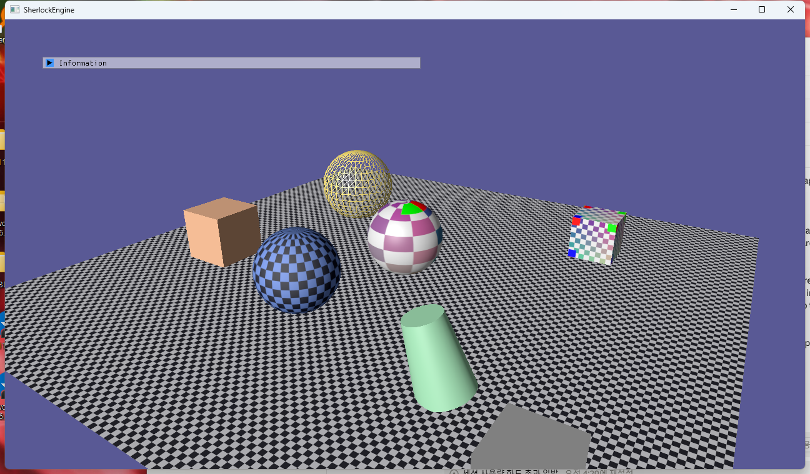
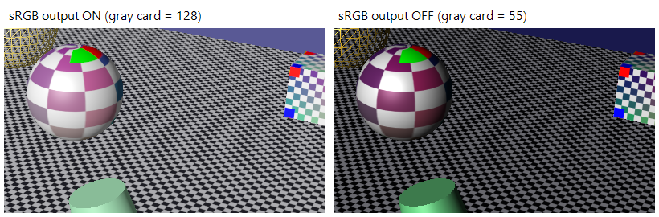
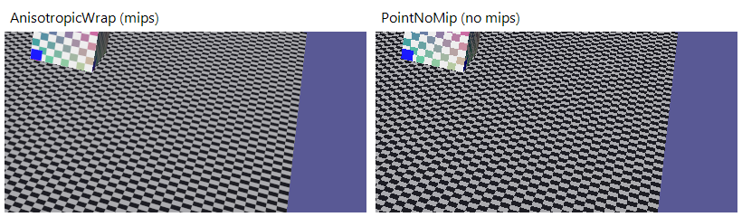
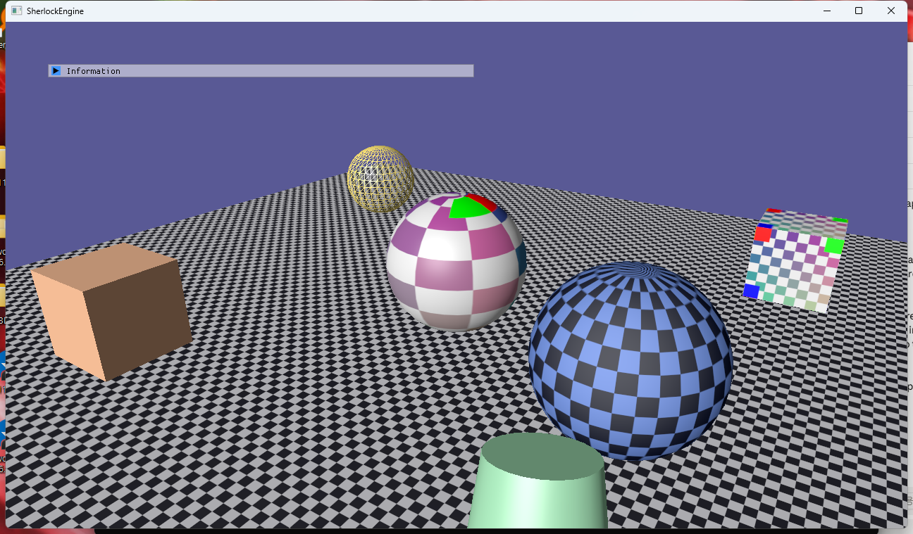
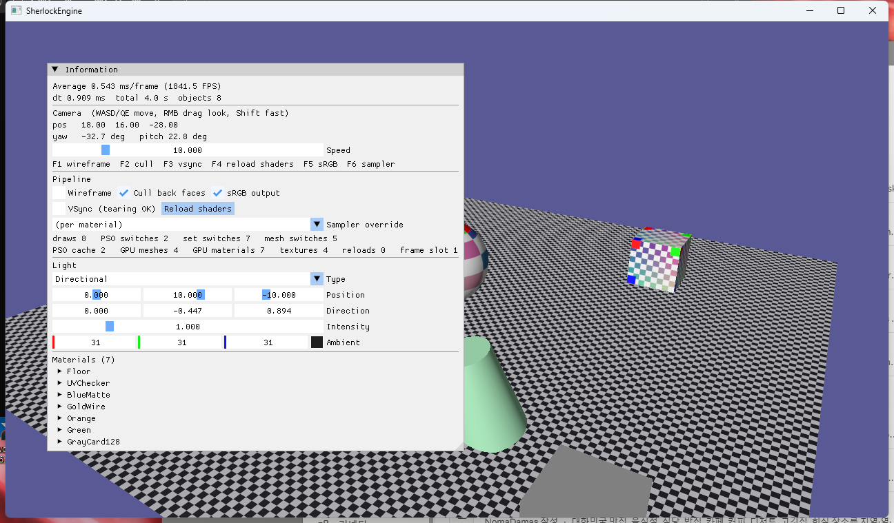
10.참고 문헌
- Microsoft Learn, Converting data for the color space — 선형에서 계산·sRGB로 표시, _SRGB SRV/RTV의 자동 변환, UNORM 백버퍼에 _SRGB RTV를 만들 수 있는 예외. learn.microsoft.com/…/converting-data-color-space
- Larry Gritz, Eugene d'Eon, The Importance of Being Linear, GPU Gems 3, 24장 — 감마를 무시한 조명이 왜 틀리는지. developer.nvidia.com/gpugems/gpugems3/…/chapter-24-importance-being-linear
- Wikipedia, sRGB — 전달 함수(0.04045 / 12.92 / 2.4). en.wikipedia.org/wiki/SRGB
- Microsoft Learn, DXGI flip model — blt 모델과의 차이(복사 없음), 요구 사항(버퍼 2~16, 포맷, MSAA 불가), HWND당 하나. learn.microsoft.com/…/dxgi-flip-model
- Microsoft Learn, For best performance, use DXGI flip model — "blt 모델은 그만", Present 뒤 백버퍼 재바인딩, ALLOW_TEARING과 CheckFeatureSupport. learn.microsoft.com/…/for-best-performance--use-dxgi-flip-model
- Microsoft Learn, Variable refresh rate displays — ALLOW_TEARING을 생성·ResizeBuffers·Present에 같은 값으로, sync interval 0에서만. learn.microsoft.com/…/variable-refresh-rate-displays
- Microsoft Learn, DXGI_SWAP_CHAIN_DESC1 — flip 모델의 허용 포맷 네 가지(_SRGB 없음). learn.microsoft.com/…/ns-dxgi1_2-dxgi_swap_chain_desc1
- Microsoft Learn, IDXGIFactory2::CreateSwapChainForHwnd. learn.microsoft.com/…/nf-dxgi1_2-idxgifactory2-createswapchainforhwnd
- Microsoft Learn, D3D11_SAMPLER_DESC — MinLOD/MaxLOD 클램프, MaxAnisotropy 1~16, 기본값 표. learn.microsoft.com/…/ns-d3d11-d3d11_sampler_desc
- Microsoft Learn, D3D11_FILTER — MIN/MAG/MIP 조합, min·mag가 다르면 정의되지 않는 경우, 비교 필터. learn.microsoft.com/…/ne-d3d11-d3d11_filter
- Microsoft Learn, D3D11_SUBRESOURCE_DATA — 서브리소스 = 밉 레벨 하나, SysMemPitch. learn.microsoft.com/…/ns-d3d11-d3d11_subresource_data
- Microsoft Learn, ID3D11DeviceContext::GenerateMips — RENDER_TARGET + SHADER_RESOURCE + MISC_GENERATE_MIPS 요구, 미지원 포맷은 조용히 실패. learn.microsoft.com/…/nf-d3d11-id3d11devicecontext-generatemips
- Microsoft Learn, Introduction To Textures in Direct3D 11 — 밉 체인은 1×1까지, 홀수 크기는 내림. learn.microsoft.com/…/overviews-direct3d-11-resources-textures-intro
- DirectXTex Wiki, Filter Flags — TEX_FILTER_SRGB_IN/OUT, _SRGB 포맷이면 암시됨. github.com/microsoft/DirectXTex/wiki/Filter-Flags
- DirectXTex Wiki, GenerateMipMaps. github.com/microsoft/DirectXTex/wiki/GenerateMipMaps
- DirectXTex Wiki, Convert. github.com/microsoft/DirectXTex/wiki/Convert
- Wikipedia, Mipmap — Lance Williams, "Pyramidal Parametrics" (1983), multum in parvo. en.wikipedia.org/wiki/Mipmap
- Microsoft Learn, Texture Coordinates (Direct3D 9) — 텍스처 공간의 원점과 u·v 방향. D3D11에서도 같다. learn.microsoft.com/…/direct3d9/texture-coordinates
- Dear ImGui, Issue #578 Color correct (sRGB / linear) rendering — ImGui 색과 sRGB 프레임버퍼의 이중 인코딩 문제. github.com/ocornut/imgui/issues/578
- Microsoft Learn, D3D11_RENDER_TARGET_VIEW_DESC — 뷰 포맷 지정. learn.microsoft.com/…/ns-d3d11-d3d11_render_target_view_desc
6단계 · 그림자 · RenderPass · CommandList
RHI의 마지막 두 조각을 만든 단계입니다. RenderPass는 "어느 타깃에, 어떤 클리어로 시작하고, 끝날 때 무엇을 남기는가"를, CommandList는 "GPU 명령을 어디에 기록하는가"를 추상화합니다. Device에 있던 즉시 바인딩·드로우 함수는 전부 CommandList로 옮겨 갔고, Renderer의 GPU 호출은 예외 없이 CommandList를 거칩니다. 첫 실전 사용처는 방향광 그림자 맵(2048², D32, PCF 3×3)입니다. 이것은 첫 렌더-투-텍스처이자 "DSV로 쓰고 → SRV로 읽는" 상태 전이가 있는 첫 리소스이기도 해서, Barrier 호출이 코드에 들어왔습니다. 정점에 탄젠트가 붙어 노멀 매핑이 되고, 조명 8개를 전부 ImGui에서 편집합니다.
프레임은 BeginFrame → [ShadowPass → MainPass → UIPass] → EndFrame(Present)로 고정됐습니다. 패스마다 RenderPassDesc(타깃 + Load/Store + 뷰포트)를 CommandList::BeginRenderPass에 넘기고, D3D11은 그것을 OMSetRenderTargets + Clear + RSSetViewports로 풉니다. 그림자 맵에는 패스 앞뒤로 Barrier(DepthWrite ↔ ShaderResource)가 붙습니다. D3D11에서는 상태 추적만 하고, D3D12에서는 그 자리에 실제 ResourceBarrier가 들어갑니다. 같은 텍스처가 SRV에 남아 있으면 D3D11이 경고와 함께 강제로 풀어 버리므로, CommandList가 SRV 슬롯을 추적해 타깃으로 잡기 전에 먼저 풉니다 — 이 세션의 Debug Layer 경고는 0건입니다.
1.요약
| 항목 | 5단계까지 | 6단계 |
|---|---|---|
| 타깃 바인딩·클리어 | Device::BeginFrame이 백버퍼+깊이를 걸고 클리어, BeginUIPass가 UNORM 뷰로 교체 | RenderPassDesc → CommandList::BeginRenderPass/EndRenderPass. Device는 프레임 인덱스와 Present만 |
| 바인딩·드로우 | Device::BindPipeline / SetResourceSet / BindVertexBuffer / BindIndexBuffer / DrawIndexed | 전부 CommandList로. Device에서 삭제. Renderer는 GetCommandList()로 받는다 |
| 상태 전이 | 없음 (D3D11이 알아서) | Barrier(texture, before, after). D3D11: 텍스처의 state 추적 + Debug 검증. 프레임당 4회 |
| 렌더 타깃 텍스처 | 백버퍼·깊이만 | 그림자 맵 2048² D32_FLOAT, DepthStencil | ShaderResource → TYPELESS 리소스 + 포맷별 뷰 |
| PSO | VS+PS 필수 | PS 없는 깊이 전용 PSO 허용 (rtvCount 0, dsvFormat D32, 깊이 바이어스) |
| 정점 | 48B (P C N T) | 64B, float4 tangent (xyz = u 방향, w = 손잡이). 모든 프리미티브에 해석적 탄젠트 |
| b0 PerFrame | 208B | 288B: lightViewProj, shadowParams(텍셀 크기·바이어스·세기·사용) |
| 재질 셋 | b3 · t0 · s0 | b3 · t0 알베도 · t1 노멀 · s0. 프레임 셋에 t8 그림자 맵 · s4 비교 샘플러 |
| 조명 UI | 0번만 편집 | 8개 전부: 추가/삭제, 타입, 위치, 방향, 색, 세기, 범위, 원뿔, 감쇠. 씬에 점광·스포트 추가 |
| 단축키 | F1–F6 | + F7 광원 공전, F8 그림자, F9 노멀 맵 |
- b0 PerFrame 은 이 단계의 288B 에서 11단계 디버그 뷰가
debugParams(float4)를 더해 304B가 됐습니다.Graphics/ShaderConstants.h의static_assert(sizeof(PerFrameConstants) == 304)와offsetof(PerFrameConstants, debugParams) == 288이 지금의 기준입니다 (11단계 §6). 정점 64B 는 그대로입니다. - 프레임의 패스는
Shadow → Main → UI에 11-C단계의PreviewPass(에디터에서 카메라 오브젝트를 선택했을 때만)가 Main 뒤에 붙습니다. 배리어 4회는 메인 패스가 백버퍼에 직접 그릴 때(IsOffscreen()이 false)의 수이고, 11단계 에디터 씬 뷰처럼 오프스크린이면 그림자 맵 2 +m_sceneColor2 + 백버퍼 2 = 6회, 프리뷰가 있으면m_previewColor2회가 더해집니다. 자세한 코드는 2.3절 상자에 적었습니다.
2.RenderPass: 타깃과 Load/Store
2.1 왜 "패스"라는 단위가 필요한가
D3D11에서 렌더 타깃은 그냥 상태입니다. OMSetRenderTargets를 부르면 그때부터 그곳에 그려지고, 클리어는 별개의 명령이며, 이전 내용을 유지하려면 클리어를 부르지 않으면 그만입니다. 이 자유로움이 문제가 되는 곳은 두 군데입니다. 하나는 타일 기반 GPU(모바일, 그리고 최근 데스크톱의 일부)로, 타일 메모리에 올릴 때 이전 내용을 읽어 와야 하는지(Load), 끝난 뒤 메인 메모리에 써야 하는지(Store)를 미리 알면 대역폭을 크게 아낍니다. 다른 하나는 D3D12/Vulkan/Metal 같은 명시적 API로, 타깃이 "언제 쓰이기 시작해 언제 끝나는지"를 드라이버가 아니라 애플리케이션이 선언합니다.
Vulkan은 이것을 VkAttachmentLoadOp(LOAD / CLEAR / DONT_CARE)와 VkAttachmentStoreOp로 정의했고11, D3D12는 Windows 10 1809에서 ID3D12GraphicsCommandList4::BeginRenderPass를 추가해 같은 개념을 D3D12_RENDER_PASS_BEGINNING_ACCESS_TYPE(DISCARD / PRESERVE / CLEAR / NO_ACCESS)과 ENDING_ACCESS_TYPE(DISCARD / PRESERVE / RESOLVE / NO_ACCESS)으로 표현합니다1,12. D3D12 문서는 렌더 패스 안에서 "쓴 것을 같은 패스에서 읽을 수 없다"는 제약과 함께, 현재 바인딩된 타깃에 대한 배리어를 패스 안에 넣으면 안 된다고 명시합니다1. 우리 RenderPassDesc는 이 둘의 교집합입니다.
// Graphics/RenderPassTypes.h
enum class LoadOp : uint8_t { Load, Clear, DontCare };
enum class StoreOp : uint8_t { Store, DontCare };
struct ColorAttachment { TextureHandle texture; LoadOp load; StoreOp store; bool srgbView; float clearColor[4]; };
struct DepthAttachment { TextureHandle texture; LoadOp load; StoreOp store; float clearDepth; uint8_t clearStencil; };
struct Viewport { float x, y, width, height, minDepth, maxDepth; }; // width 0 = attachment 크기
struct RenderPassDesc
{
ColorAttachment colors[kMaxRenderTargets];
uint8_t colorCount;
DepthAttachment depth; // texture 가 비면 깊이 없음 (UI 패스)
Viewport viewport;
const char* debugName;
};- 7단계 RHI 추출 때 파일이
Graphics/RenderPassTypes.h에서RHI/RenderPassTypes.h로 옮겨졌습니다.LoadOp·StoreOp·ColorAttachment·DepthAttachment·Viewport·RenderPassDesc의 필드와 순서,ResourceState의 일곱 값은 위 스니펫과 같습니다. 필드마다 기본값(load = LoadOp::Clear,clearDepth = 1.0f등)이 붙어 있어 지금은 지정 초기화로 씁니다.
2.2 D3D11 구현과 SRV 충돌
CommandList::BeginRenderPass는 다섯 단계로 이뤄집니다. (1) attachment 텍스처가 SRV 슬롯에 남아 있으면 먼저 푼다, (2) RTV/DSV를 모으고 뷰포트 기본 크기를 첫 attachment에서 얻는다, (3) OMSetRenderTargets, (4) LoadOp::Clear인 것만 Clear*View, (5) RSSetViewports. EndRenderPass는 OMSetRenderTargets(0, nullptr, nullptr)로 타깃을 풉니다 — 문서가 명시하듯 이 호출은 바인딩된 모든 타깃을 해제합니다6. Store op는 D3D11에서 할 일이 없습니다.
(1)이 이 단계의 핵심 함정입니다. 같은 리소스가 SRV(읽기)와 RTV/DSV(쓰기)에 동시에 바인딩되면 D3D11은 읽기 쪽을 강제로 NULL로 만들고 경고를 냅니다6. 그림자 맵이 정확히 이 경우입니다: 메인 패스에서 t8로 읽고, 다음 프레임 그림자 패스에서 DSV로 씁니다. 원문 로드맵도 이 점을 지적했습니다. 해결책은 CommandList가 SetResourceSet에서 슬롯마다 어떤 텍스처 핸들을 넣었는지 기억하고(m_psSrv[16], m_vsSrv[16]), BeginRenderPass가 attachment와 같은 핸들이 있는 슬롯을 NULL로 바꾸는 것입니다. 우리가 먼저 풀면 경고가 나지 않고, 추적도 정확해집니다.
// Graphics/D3D11/CommandList.cpp
void CommandList::UnbindShaderResourcesOf(TextureHandle texture)
{
ID3D11ShaderResourceView* nullSrv = nullptr;
for (uint32_t slot = 0; slot < kMaxSrvRegister; ++slot)
{
if (m_psSrv[slot] == texture) { context->PSSetShaderResources(slot, 1, &nullSrv); m_psSrv[slot] = TextureHandle{}; ++m_stats.srvUnbinds; }
if (m_vsSrv[slot] == texture) { context->VSSetShaderResources(slot, 1, &nullSrv); m_vsSrv[slot] = TextureHandle{}; ++m_stats.srvUnbinds; }
}
}그래서 바인딩 순서가 중요합니다. 프레임 셋(b0·b2·t8·s4)을 그림자 패스 전에 바인딩하면 BeginRenderPass가 t8을 풉니다. 그림자 패스는 b0·b1만 쓰므로 문제없이 그려지고, 메인 패스가 시작할 때 프레임 셋을 다시 바인딩해 t8을 되살립니다. 순서를 바꿔 그림자 패스 안에서 프레임 셋을 바인딩하면 t8 SRV와 DSV가 충돌합니다.
- 7단계에서 클래스가
CommandList→D3D11CommandList final : public RHI::CommandList로 개명되고, 파일은Graphics/D3D11/CommandList.cpp→RHI/D3D11/D3D11CommandList.cpp로 옮겨졌습니다. 지금 함수는D3D11CommandList::UnbindShaderResourcesOf(TextureHandle)입니다. 동작은 같고, 실제 코드는m_device->GetContext()로 컨텍스트를 얻은 뒤 VS 슬롯을 먼저, PS 슬롯을 나중에 검사합니다. 추적 배열m_vsSrv·m_psSrv의 크기는kMaxSrvRegister(= 16,RHI/BindingTypes.h)입니다.
2.3 프레임 구조
// App/AppBase.cpp — Run()
graphicsDevice.BeginFrame(); // 프레임 인덱스만
Render(); // Renderer: ShadowPass → MainPass
renderer.BeginUIPass(); // 백버퍼 UNORM 뷰, Load, 깊이 없음
ImGuiBackend::Render();
renderer.EndUIPass(); // EndRenderPass + Barrier(RenderTarget → Present)
graphicsDevice.EndFrame(); // Present
// Graphics/Renderer.cpp — 메인 패스
cmd.Barrier(backBuffer, ResourceState::Present, ResourceState::RenderTarget);
RenderPassDesc pass;
pass.colorCount = 1;
pass.colors[0].texture = backBuffer;
pass.colors[0].load = LoadOp::Clear;
pass.colors[0].srgbView = m_settings.srgbOutput; // 5단계의 sRGB 뷰가 여기로
pass.depth.texture = m_device->GetDepthBuffer();
pass.depth.load = LoadOp::Clear;
pass.debugName = "MainPass";
cmd.BeginRenderPass(pass);
cmd.SetResourceSet(m_frameSet); // t8 되살림
cmd.SetResourceSet(m_objectSet);
// … 정렬된 드로우 …
cmd.EndRenderPass();이것으로 rendering-analysis의 D4("프레임 시작/끝의 소유권")가 마무리됩니다. 클리어 색·sRGB 여부·타깃은 전부 Renderer가 만드는 RenderPassDesc에 있고, AppBase는 순서만 압니다. Device의 SetClearColor·SetSrgbOutput·BeginUIPass는 삭제됐습니다.
- 프레임 루프의 자리. 위
App/AppBase.cpp — Run()스니펫의graphicsDevice·ImGuiBackend는 지금 코드에 없습니다. 7단계에서ImGuiBackend::Render()가RHI::Device::RenderImGui()로 바뀌었고, 10단계(D14, Engine 과 AppBase)에서 장치·렌더러·프레임 순서가Engine으로 옮겨졌습니다. 순서는Core/Engine.cpp의Engine::Render()에 있습니다:m_device->BeginFrame()→m_renderer.Render(…)→m_renderer.BeginUIPass()→m_device->RenderImGui()→m_renderer.EndUIPass()→m_device->EndFrame().AppBase::Run은m_engine.BeginFrame()(시간·프로파일러·NewFrameImGui)과m_engine.Render(),m_engine.EndFrame()만 부릅니다. - 메인 패스. 지금
Renderer::RenderMainPass(Graphics/Renderer.cpp)는IsOffscreen()이 참이면(11단계 에디터 씬 뷰)m_sceneColor·m_sceneDepth에, 아니면 백버퍼와GetDepthBuffer()에 그립니다. 클리어 색은scene.clearColor이고,RenderPassDesc는 지정 초기화 한 덩어리로 적습니다. 프레임 셋·오브젝트 셋 재바인딩은BeginRenderPass뒤Renderer::DrawItems첫머리로 옮겨져 메인 패스와 프리뷰 패스가 함께 씁니다. 오프스크린이면 패스 뒤에Barrier(m_sceneColor, RenderTarget → ShaderResource)가 붙습니다 (11단계 §3.2). - 패스 구성.
Renderer::Render는 그림자 패스 → 메인 패스 다음에, 선택한 카메라가 있으면 11-C단계의RenderPreviewPass를 하나 더 돌립니다 (11-C단계 §7.1). 한 줄 요약의[ShadowPass → MainPass → UIPass]는 백버퍼 직행·프리뷰 없음일 때의 모양입니다.
3.CommandList와 Barrier
CommandList는 D3D11에서 ImmediateContext의 얇은 래퍼라 "기록"이 곧 실행입니다. D3D12에서는 ID3D12GraphicsCommandList에 쌓였다가 ExecuteCommandLists로 제출되지만, 호출 코드는 같은 메서드를 같은 순서로 부릅니다. 7단계에서 이 공개 API가 그대로 RHI::CommandList 가상 인터페이스가 됩니다.
| CommandList | D3D11 (지금) | D3D12 (8단계) |
|---|---|---|
BeginRenderPass(desc) | SRV 언바인드 + OMSetRenderTargets + Clear + RSSetViewports | OMSetRenderTargets + Clear (또는 BeginRenderPass) |
EndRenderPass() | OMSetRenderTargets(0) | EndRenderPass / 없음 |
SetPipelineState(h) | PipelineState::Bind — 7개 호출 | SetPipelineState + IASetPrimitiveTopology |
SetResourceSet(h) | 슬롯마다 *SSetConstantBuffers / ShaderResources / Samplers | SetGraphicsRootDescriptorTable |
SetVertexBuffer / SetIndexBuffer | IASetVertexBuffers / IASetIndexBuffer | IASetVertexBuffers / IASetIndexBuffer (뷰 구조체) |
DrawIndexed | DrawIndexed (패스 밖이면 에러 로그 후 무시) | DrawIndexedInstanced |
Barrier(tex, before, after) | no-op + 상태 추적. Debug: before ≠ 추적 상태면 경고 | ResourceBarrier(Transition) |
CopyBuffer(dst, src) | CopyResource | CopyResource + 상태 전이 |
Barrier를 지금 넣는 이유는 원문 로드맵의 말 그대로입니다: D3D12로 갈 때 "어디에 배리어가 필요한지"가 이미 코드에 적혀 있게 됩니다. D3D12는 리소스별 상태 관리를 드라이버에서 애플리케이션으로 옮겼고, 연속된 배리어의 before/after가 맞지 않으면 Debug Layer가 잡습니다2. 그래서 D3D11 백엔드도 D3D11Texture::state를 두고 호출 코드가 적은 before와 비교해 Debug에서 경고합니다 — D3D12에서 에러가 될 자리를 미리 잡는 것입니다. 상태 열거는 D3D12_RESOURCE_STATES의 부분집합(Common, RenderTarget, DepthWrite, ShaderResource, CopySource, CopyDest, Present)입니다13. 스왑체인 버퍼는 D3D12 관례대로 Present로 시작하고, 프레임마다 Present → RenderTarget → Present를 오갑니다. 이 세션의 배리어 4회는 그림자 맵 2회, 백버퍼 2회입니다.
4.그림자 매핑
4.1 두 패스 알고리즘
Williams가 1978년에 제안한 방법10은 두 패스로 이뤄집니다. 첫 패스는 광원 시점에서 씬을 그려 깊이만 남깁니다(그림자 맵). 둘째 패스는 각 픽셀의 월드 위치를 같은 광원 행렬로 변환해, 그 위치의 깊이가 그림자 맵에 기록된 깊이보다 멀면 "광원과 그 픽셀 사이에 무언가 있다" = 그림자로 판정합니다3. 정점 셰이더가 위치를 두 번 변환하는 것이 특징입니다.
// BasicVertexShader.hlsl
vsOutput.position = mul(worldPosition, viewProj); // 카메라
vsOutput.shadowPosition = mul(worldPosition, lightViewProj); // 광원 (PS 가 UV 로 바꾼다)
// ShadowVertexShader.hlsl — 그림자 패스. 픽셀 셰이더 없음.
float4 VS_Shadow(ShadowVSInput input) : SV_POSITION
{
const float4 worldPosition = mul(float4(input.position, 1.0f), world);
return mul(worldPosition, lightViewProj);
}그림자 VS는 POSITION만 읽지만 입력 레이아웃은 메인 패스의 64B VERTEX를 그대로 씁니다. CreateInputLayout은 VS 시그니처를 레이아웃과 대조하는데, 레이아웃에 셰이더가 읽지 않는 원소가 더 있는 것은 허용됩니다16. 그래서 PSO가 하나 더 늘 뿐(캐시 3개) 정점 버퍼는 공유합니다.
4.2 깊이 텍스처를 읽기: TYPELESS
깊이 버퍼를 셰이더에서 읽으려면 같은 비트를 두 방식으로 해석해야 합니다: DSV는 D32_FLOAT로, SRV는 R32_FLOAT로. D3D에서는 리소스를 R32_TYPELESS로 만들고 뷰마다 완전한 포맷을 지정하는 방식으로 이를 허용합니다14. D3D12도 정확히 같은 규칙입니다. Device::CreateTexture는 DepthStencil | ShaderResource 조합을 보면 리소스를 TYPELESS로 만들고 D3D11Texture::typeless를 true로 설정하며, GetDSV/GetSRV가 명시적 뷰 포맷을 씁니다. 호출 코드(Renderer)는 Format::D32_FLOAT와 bind 플래그만 적습니다.
// Graphics/D3D11/D3D11Resources.h
namespace D3D11DepthFormat
{
Typeless(D32_FLOAT) = R32_TYPELESS; Typeless(D24_UNORM_S8_UINT) = R24G8_TYPELESS;
ShaderView(D32_FLOAT) = R32_FLOAT; ShaderView(D24_UNORM_S8_UINT) = R24_UNORM_X8_TYPELESS;
}
// GetSRV: typeless 면 D3D11_SHADER_RESOURCE_VIEW_DESC{ Format = ShaderView(…), TEXTURE2D, MipLevels } 로 명시- 7단계에서 경로가
Graphics/D3D11/D3D11Resources.h→RHI/D3D11/D3D11Resources.h로 바뀌었습니다.D3D11DepthFormat::Typeless·ShaderView의 매핑과D3D11Texture::typeless·GetDSV·GetSRV의 동작은 위 설명과 같습니다.
4.3 깊이 전용 PSO와 바이어스
그림자 패스는 색을 쓰지 않으므로 픽셀 셰이더가 없습니다. PSSetShader(nullptr)는 그 스테이지를 끄는 정식 방법이고15, D3D12 PSO는 PS 바이트코드를 비워 두면 됩니다. PipelineState::Create가 빈 ps 핸들을 허용하게 바꿨고, Desc는 rtvCount = 0, dsvFormat = D32_FLOAT입니다.
가장 흔한 그림자 아티팩트 두 가지는 shadow acne(표면이 자기 자신에게 그림자를 드리워 생기는 모아레)와 Peter Panning(바이어스가 커서 그림자가 물체에서 떨어지는 것)입니다3. acne는 그림자 맵 텍셀 하나가 깊이 하나로 양자화되는데 수신 픽셀은 그 위를 연속으로 지나가기 때문에 생깁니다. 대응은 두 겹입니다. 래스터라이저의 DepthBias·SlopeScaledDepthBias가 그림자 맵을 쓸 때 표면을 광원에서 조금 밀어내고, 셰이더가 비교 시 수신자 깊이에서 작은 값을 뺍니다. 부동소수점 깊이 버퍼에서 DepthBias 한 단위는 2^(지수 − 23)이라 z ≈ 0.5에서 약 6e-8입니다5. 그래서 2000 같은 큰 정수가 정상이고, 기울기 비례 항이 비스듬한 면을 맡으며, DepthBiasClamp가 극단적 각도에서 폭주를 막습니다.
// Renderer.cpp — 그림자 PSO 의 고정 부분
m_shadowDesc.ps = ShaderHandle{}; // 깊이 전용
m_shadowDesc.rtvCount = 0;
m_shadowDesc.dsvFormat = Format::D32_FLOAT;
m_shadowDesc.rasterizer.depthBias = 2000; // × 2^(e−23)
m_shadowDesc.rasterizer.slopeScaledDepthBias = 2.0f;
m_shadowDesc.rasterizer.depthBiasClamp = 0.01f;
// 셰이더 쪽: shadowParams.y = 0.0015 (ImGui 슬라이더)4.4 비교 샘플러와 PCF
비교는 셰이더에서 if (depth > stored)로 할 수도 있지만, 하드웨어에는 그것을 대신하고 이웃 텍셀과 보간까지 해 주는 비교 샘플러가 있습니다. D3D11_FILTER_COMPARISON_*에 ComparisonFunc를 주면 SampleCmp가 텍셀마다 비교 결과(0/1)를 만들고 그것을 선형 보간해 돌려줍니다4. 이것이 2×2 하드웨어 PCF입니다. 우리는 그 위에 3×3 오프셋을 더해 9번 샘플하고 평균 냅니다 — Percentage-Closer Filtering의 가장 단순한 형태입니다9. SampleCmpLevelZero는 밉 0만 보는 버전이고, 정수 오프셋 인자로 이웃 텍셀을 지정합니다4.
// BasicPixelShader.hlsl
const float3 p = shadowPosition.xyz / shadowPosition.w;
const float2 uv = float2(p.x * 0.5f + 0.5f, -p.y * 0.5f + 0.5f); // NDC → 텍스처 (v 는 아래로)
const float depth = p.z - shadowParams.y;
float lit = 0.0f;
[unroll] for (int dy = -1; dy <= 1; ++dy)
[unroll] for (int dx = -1; dx <= 1; ++dx)
lit += shadowMap.SampleCmpLevelZero(shadowSampler, uv, depth, int2(dx, dy));
lit /= 9.0f;
return lerp(1.0f, lit, shadowParams.z);샘플러 주소 모드는 Border, 테두리 색 1입니다. 광원 직교 상자 밖으로 나간 픽셀은 "빛을 받음"으로 처리해 맵 가장자리에 그림자 띠가 생기지 않게 합니다. 5단계에서 미뤄 둔 로드맵의 ShadowCompare 샘플러가 바로 이것입니다.
4.5 광원 행렬
방향광에는 위치가 없으므로 씬 중심에서 빛의 반대 방향으로 물러난 곳에 눈을 두고(LookAtLH), 직교 투영(OrthographicLH)으로 60×60 영역을 봅니다. 빛이 거의 수직이면 up = +Y가 시선과 평행해져 LookAt이 무너지므로 그때는 +Z를 up으로 씁니다. Microsoft의 그림자 기법 문서가 권하는 다음 단계 — 카메라 절두체에 맞춘 타이트한 투영, 텍셀 단위로 반올림한 원점(가장자리 떨림 방지), 캐스케이드 — 는 넣지 않았습니다3. 씬이 40×40 바닥 하나라 고정 상자로 충분하고, ImGui 슬라이더로 크기와 거리를 바꿀 수 있습니다.
5.노멀 매핑과 탄젠트
노멀 맵은 표면의 미세한 기울기를 텍스처에 저장한 것입니다. 값은 표면 로컬의 탄젠트 공간(T = u가 증가하는 방향, B = v가 증가하는 방향, N = 표면 노멀)에 있고, (0.5, 0.5, 1)이 "평평"입니다. 조명은 월드 공간에서 계산하므로 픽셀마다 TBN 행렬로 월드 공간에 옮깁니다8. 그러려면 정점에 T가 있어야 하고, B는 cross(N, T)로 만들되 UV가 뒤집힌 면에서는 방향이 반대라 손잡이(±1)를 정점에 함께 저장합니다 — Lengyel이 정리한 방식입니다7.
// Graphics/Mesh.cpp — 프리미티브는 T, B 를 해석적으로 안다
t = normalize(T − N·dot(N, T)); // Gram-Schmidt
w = dot(cross(N, t), B) < 0 ? −1 : +1; // 손잡이
vertex.tangent = (t.x, t.y, t.z, w);
// BasicPixelShader.hlsl
const float3 T = SafeNormalize(input.tangent.xyz - N * dot(N, input.tangent.xyz), …);
const float3 B = cross(N, T) * input.tangent.w;
float3 tn = normalTexture.Sample(albedoSampler, input.uv).xyz * 2.0f - 1.0f;
tn.xy *= normalStrength;
const float3 normal = SafeNormalize(tn.x * T + tn.y * B + tn.z * N, N);| 프리미티브 | T (u+) | B (v+) |
|---|---|---|
| 구 | ∂P/∂θ = (−sin θ, 0, cos θ) | ∂P/∂φ = (cos φ cos θ, −sin φ, cos φ sin θ) |
| 큐브 | 면마다 u+의 월드 방향 (예: 앞면 +X) | 면마다 v+의 월드 방향 (예: 앞면 −Y) |
| 평면 | +X | −Z |
| 실린더 옆면 | (−sin θ, 0, cos θ) | (Δr cos θ, −h, Δr sin θ) — 원뿔대의 빗면을 따라 아래로 |
검증용 노멀 맵(bumps_normal.png)은 반구 높이장 8×8 타일에서 n = normalize(−∂h/∂x, −∂h/∂y, 1)로 만들었습니다. 여기서 y는 이미지 행 방향 = v가 증가하는 방향 = B이므로, 정점 쪽 B 정의와 맞습니다. 외부 노멀 맵을 쓸 때는 이 "녹색 채널 방향"(DirectX 관례 = v 아래, OpenGL 관례 = 반대)을 확인해야 하며, 틀리면 요철이 뒤집혀 보입니다.
6.조명 편집
DebugUI::DrawLightPanel이 Scene::GetLights()의 모든 원소를 트리로 보여 줍니다. 타입 콤보, 위치(방향광 제외), 방향(점광 제외) + 정규화 버튼, 색, 세기, 범위, 스포트의 안/밖 원뿔 각(도 단위 ↔ cos 변환), 감쇠 계수, 삭제. "Add point light"로 8개까지 추가합니다. 0번이 방향광일 때만 그림자를 만든다는 안내가 붙어 있습니다. 데모 씬에는 방향광 하나에 주황 점광(−6, 5, −4)과 파란 스포트라이트(10, 10, 2 → 아래)를 더했습니다. 그림 1 바닥의 주황 번짐과 파란 원이 그것입니다.
7.함정과 해결
- SRV/DSV 충돌. 2.2절. 그림자 맵을 t8에 둔 채 DSV로 잡으면 D3D11이 SRV를 강제로 풀고 경고를 냅니다. CommandList의 SRV 추적 + BeginRenderPass 언바인드로 해결. 프레임 셋을 그림자 패스 전에 바인딩하고 메인 패스에서 다시 바인딩하는 순서가 필요합니다.
- 깊이 텍스처는 TYPELESS. 4.2절.
D32_FLOAT로 만든 텍스처에는 SRV를 만들 수 없습니다. Device가 bind 플래그 조합을 보고 알아서 TYPELESS + 뷰 포맷으로 바꿉니다. - PS 없는 PSO.
PipelineState::Create가 픽셀 셰이더 핸들을 필수로 검사하고 있었습니다. 빈 핸들이면PSSetShader(nullptr). - b3은 여전히 VS가 읽고, t/s 레지스터가 셋끼리 겹친다. D3D11의 t#/s#는 스테이지마다 하나의 공간이라 재질 셋(t0·t1·s0)과 프레임 셋(t8·s4)의 번호가 겹치면 안 됩니다. 셋마다 구간을 배정했습니다(재질 t0–7/s0–3, 프레임 t8–15/s4–7). D3D12에서는 이 구간이 그대로 디스크립터 테이블 범위가 됩니다.
- 수직광에서 LookAt 붕괴. 4.5절. up 벡터가 시선과 평행하면 뷰 행렬이 특이해집니다. |dir.y| > 0.99면 up = +Z.
- Unlit 물체의 그림자. 감마 검증 카드는 조명을 받지 않으므로 그림자도 드리우지 않게 그림자 패스에서 건너뜁니다. 로드맵에 없는 결정이지만 "unlit"의 뜻에 맞습니다.
- CRLF 파일을 perl로 패치. 소스가 CRLF라
\n패턴이 맞지 않아 여러 패치가 조용히 실패했습니다. 엔진과 무관하지만 다음 단계를 위해 적습니다: 파일 편집은 Edit 도구로.
8.검증과 스크린샷
- 완료 기준 ① "바닥에 그림자가 떨어진다" — 구·큐브·실린더·와이어 구가 체커 바닥에 그림자를 드리운다. F8로 끄면 사라진다. 그림 1·2.
- 완료 기준 ② "광원을 움직이면 따라온다" — F7로 방향광 0을 Y축 둘레로 돌리며 2.5초·5.5초에 캡처. 그림자가 반대 방향으로 옮겨 간다. 그림 3.
- 완료 기준 ③ "Renderer가 ID3D11DeviceContext를 직접 참조하지 않는다" — 격리 grep 0건. 나아가 Renderer가 Device에서 호출하는 것은 Create*/Destroy*/UpdateBuffer/GetBackBuffer/GetDepthBuffer/GetCommandList/GetPipelineCount/InvalidatePipelines뿐이며, 바인딩·드로우·패스·배리어는 전부 CommandList.
- 노멀 매핑: 오렌지 큐브·초록 실린더·바닥에 반구 범프. F9로 끄면 평평해진다. 그림 4.
- 그림자 맵 미리보기(ImGui::Image, R32_FLOAT을 빨강으로): 광원 시점의 깊이가 보인다. 그림 5.
- 리플렉션: cbuffer 8건 일치(PerFrame 288 ×3, PerObject 128 ×2, Lights 656, Material 48 ×2). 바인딩 대조 13건 OK — VS b0·b1·b3, PS s0·s4·t0·t1·t8·b0·b2·b3, ShadowVS b0·b1.
- 통계: draws 8 (+7 shadow), PSO 캐시 3(메인 solid/wire + 그림자), passes 2 + UI, barriers 4/프레임, textures 6.
- Debug Layer: 프레임 중 메시지 0건 (SRV/DSV 충돌 경고 없음). 리사이즈 1500×900 ↔ 900×500 6회 + 최소화/복원 0건.
- 핫리로드 회귀: 셰이더 3개 감시. 편집 → 세대 2, 에러 → 유지, 복구 → 세대 3(4단계 스크립트 재실행).
- Debug·Release x64 빌드, Release 실행 동일 화면. 종료 시 자식 Live Object 0건.
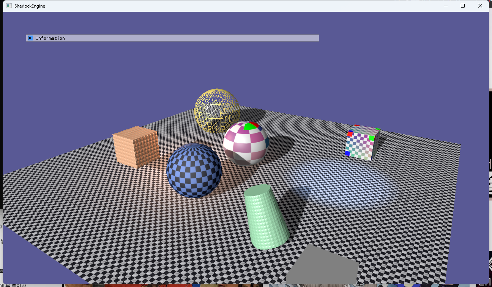
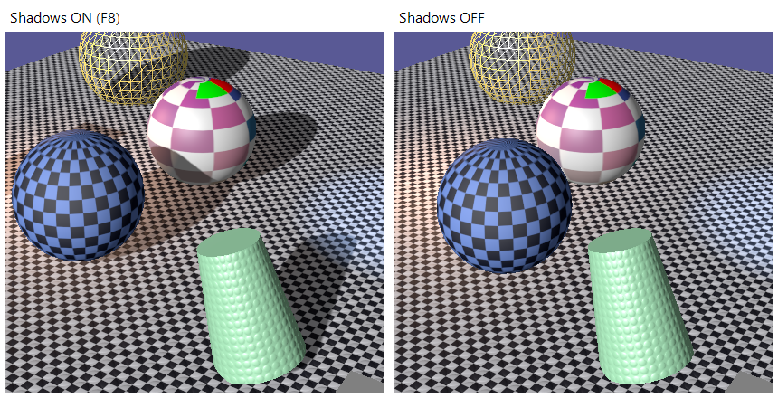
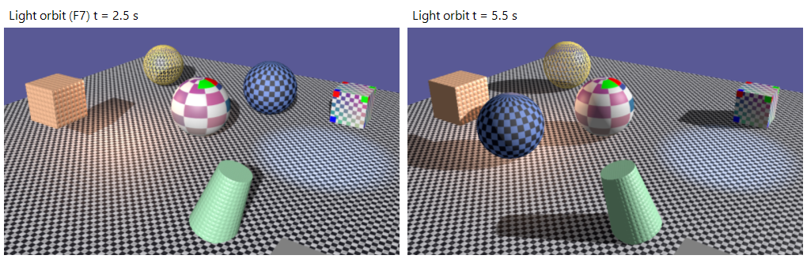
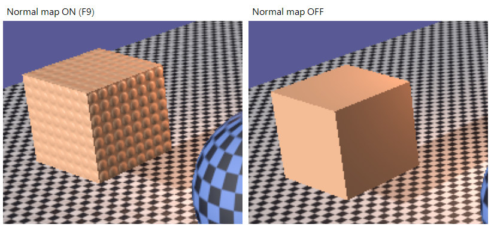
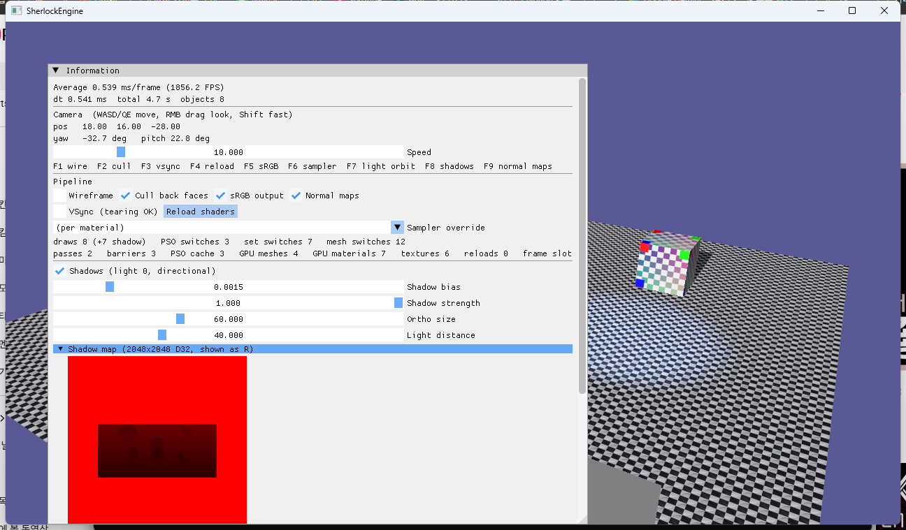
9.참고 문헌
- Microsoft Learn, Direct3D 12 render passes — 렌더 패스의 정의, BEGINNING/ENDING_ACCESS, 패스 안 배리어 제약. learn.microsoft.com/…/direct3d-12-render-passes
- Microsoft Learn, Using Resource Barriers to Synchronize Resource States in Direct3D 12 — 상태 관리가 앱의 책임, before/after 일관성, 그림자 맵 예제(DEPTH_WRITE ↔ PIXEL_SHADER_RESOURCE). learn.microsoft.com/…/using-resource-barriers-to-synchronize-resource-states-in-direct3d-12
- Microsoft Learn, Common Techniques to Improve Shadow Depth Maps — 두 패스 알고리즘, acne·Peter Panning, 기울기 비례 바이어스, 타이트한 투영, 텍셀 단위 이동. learn.microsoft.com/…/common-techniques-to-improve-shadow-depth-maps
- Microsoft Learn, SampleCmpLevelZero (HLSL Texture Object). learn.microsoft.com/…/dx-graphics-hlsl-to-samplecmplevelzero
- Microsoft Learn, Depth Bias — UNORM과 부동소수점 깊이 버퍼의 바이어스 공식, DepthBiasClamp. learn.microsoft.com/…/d3d10-graphics-programming-guide-output-merger-stage-depth-bias
- Microsoft Learn, ID3D11DeviceContext::OMSetRenderTargets — 읽기로 바인딩된 서브리소스는 NULL로 풀림, (0, nullptr, nullptr)이 전부 해제. learn.microsoft.com/…/nf-d3d11-id3d11devicecontext-omsetrendertargets
- Eric Lengyel, Computing Tangent Space Basis Vectors for an Arbitrary Mesh, 2004 — 탄젠트 직교화와 정점별 손잡이. terathon.com/blog/tangent-space.html
- LearnOpenGL, Normal Mapping — TBN 기저 변환. learnopengl.com/Advanced-Lighting/Normal-Mapping
- LearnOpenGL, Shadow Mapping — acne와 바이어스, PCF. learnopengl.com/Advanced-Lighting/Shadows/Shadow-Mapping
- Wikipedia, Shadow mapping — Lance Williams, "Casting curved shadows on curved surfaces" (1978). en.wikipedia.org/wiki/Shadow_mapping
- Vulkan Documentation, VkAttachmentLoadOp — LOAD / CLEAR / DONT_CARE. docs.vulkan.org/…/VkAttachmentLoadOp.html
- Microsoft Learn, ID3D12GraphicsCommandList4::BeginRenderPass. learn.microsoft.com/…/nf-d3d12-id3d12graphicscommandlist4-beginrenderpass
- Microsoft Learn, D3D12_RESOURCE_STATES — DEPTH_WRITE, PIXEL_SHADER_RESOURCE, RENDER_TARGET, PRESENT(= COMMON). learn.microsoft.com/…/ne-d3d12-d3d12_resource_states
- Microsoft Learn, DXGI_FORMAT — TYPELESS 포맷과 뷰 포맷의 관계. learn.microsoft.com/…/ne-dxgiformat-dxgi_format
- Microsoft Learn, ID3D11DeviceContext::PSSetShader — NULL이면 스테이지 비활성. learn.microsoft.com/…/nf-d3d11-id3d11devicecontext-pssetshader
- Microsoft Learn, ID3D11Device::CreateInputLayout — VS 입력 시그니처와 레이아웃의 검증. learn.microsoft.com/…/nf-d3d11-id3d11device-createinputlayout
- Microsoft Learn, Managing Graphics Pipeline State in Direct3D 12 — PSO 밖의 동적 상태(뷰포트·시저·스텐실 참조·블렌드 팩터). 1단계 문서 참고. learn.microsoft.com/…/managing-graphics-pipeline-state-in-direct3d-12
7단계 · RHI 인터페이스 추출
1·3·4·5·6단계에서 만든 조각(PipelineState, Buffer/Texture/Shader/Sampler, BindingLayout/ResourceSet, RenderPass/CommandList)은 이미 RHI의 모양을 갖추고 있었지만 여전히 D3D11 클래스였습니다. 이 단계에서는 API 중립 선언(RHI/: Desc, 핸들, 열거, 순수 가상 RHI::Device·RHI::CommandList)과 D3D11 구현(RHI/D3D11/)을 물리적으로 분리했습니다. 기능 추가는 없습니다. 분리 뒤 화면은 F10으로 애니메이션을 고정한 채 픽셀 단위로 비교했고, 씬 영역은 완전히 같습니다.
Renderer·Material·Mesh는 RHI::Device*와 핸들·Desc만 봅니다. 어느 백엔드인지는 RHI::CreateDevice(Backend::D3D11, desc) 한 줄이 정하고, 그 이름은 RHI/RHI.cpp와 RHI/D3D11/ 안에만 있습니다. rendering-analysis D21이 권장한 "리소스는 핸들, Device와 CommandList만 가상"이 그대로 코드가 됐습니다. 3단계부터 이름과 시그니처를 RHI 최종형으로 잡아 둔 덕에 Renderer.cpp의 변경은 include 경로와 타입 이름(Device* → RHI::Device*)뿐입니다.
1.요약
| 항목 | 6단계까지 | 7단계 |
|---|---|---|
| 폴더 | Graphics/(Desc·핸들·Renderer 섞임), Graphics/D3D11/ | RHI/(선언만) · RHI/D3D11/(구현) · Graphics/(렌더러 층만) |
| Device | class Device — D3D11 구현이자 유일한 API | RHI::Device 순수 가상 + D3D11Device final |
| CommandList | class CommandList — D3D11 구현 | RHI::CommandList 순수 가상 + D3D11CommandList final |
| 생성 | Device graphicsDevice; 값 멤버, InitDevice(hwnd, w, h) | std::unique_ptr<RHI::Device> = RHI::CreateDevice(Backend, DeviceDesc) |
| ImGui 렌더러 | ImGuiBackend 네임스페이스(D3D11 폴더) | RHI::Device의 InitImGui / NewFrameImGui / RenderImGui / ShutdownImGui / GetImGuiTextureId |
| ShaderCompiler | 선언·구현 모두 D3D11 폴더 | 선언 RHI/ShaderCompiler.h, 구현 RHI/D3D11/ShaderCompiler.cpp(fxc/DXBC) |
| 격리 규칙 | Graphics/D3D11/ 밖 D3D 헤더 0건 | RHI/D3D11/ 밖 D3D 헤더 0건 (로드맵의 "RHI/ 밖"보다 엄격) |
| Renderer 변경 | — | include 경로, Device* → RHI::Device*, CommandList& → RHI::CommandList&. 로직 0줄 |
| 단축키 | F1–F9 | + F10 애니메이션 고정(픽셀 비교용) |
- 생성. 장치는 지금
AppBase가 아니라 10단계에서 생긴Engine이 가집니다:Core/Engine.h의RHI::Backend m_backend,std::unique_ptr<RHI::Device> m_device, 그 뒤Renderer m_renderer. 생성은Core/Engine.cpp의m_device = RHI::CreateDevice(m_backend, deviceDesc)입니다 (10단계 §5). - ShaderCompiler. 구현은 8단계에서
RHI/D3D11/ShaderCompiler.cpp→RHI/DXBC/ShaderCompiler.cpp로 옮겨져 두 백엔드가 공유합니다 (8단계 §9). 선언은 그대로RHI/ShaderCompiler.h입니다. - 격리 규칙. 지금의 격리 규칙은
RHI/D3D11/·RHI/D3D12/·RHI/DXBC/밖에서ID3D11 | d3d11.h | dxgi.h | d3dcompiler.h | imgui_impl_dx11 | ComPtr0건입니다. 8단계에서 생긴RHI/D3D12/(D3D12 백엔드)와RHI/DXBC/ShaderCompiler.cpp(fxc·리플렉션)가 이 헤더들을 쓰므로, 7단계의 "RHI/D3D11/밖" 문구 그대로 grep 하면 이 두 폴더가 걸립니다. 2026-10-01 기준으로 Graphics·App·Core·Scene 에서는 0건입니다. - F10. 11-C단계에서 "애니메이션 고정"이 재생 일시정지로 바뀌었습니다 (
App/EditorApp.cpp의if (input.IsKeyPressed(VK_F10)) TogglePause();, 11-C단계 §8). 이 문서의 픽셀 비교는 7단계 당시의 F10 고정으로 한 것입니다.
2.무엇이 RHI이고 무엇이 아닌가
RHI(Render Hardware Interface)는 API 차이만 감추는 층입니다. 리소스 생성, 파이프라인 상태, 바인딩, 렌더 패스, 드로우, 상태 전이 — 즉 D3D11과 D3D12가 서로 다르게 표현하는 것들입니다. 재질 시스템, 드로우 정렬, 텍스처 캐시, 그림자 패스의 순서는 RHI 위에 있는 Renderer의 일이고, 어느 백엔드에서나 같은 코드로 돌아갑니다. 이 경계를 폴더로 그었습니다.
SherlockEngine/
RHI/ 선언만. D3D 헤더 include 금지.
Handle.h {index, generation} 핸들 7종
PipelineTypes.h Format·CullMode·… 열거, PipelineStateDesc(+.cpp 해시)
ResourceDesc.h BufferDesc·TextureDesc·SamplerDesc·ShaderDesc
BindingTypes.h BindingLayoutDesc·ResourceSetDesc
RenderPassTypes.h RenderPassDesc·ResourceState
GraphicsConfig.h kFrameCount
Device.h RHI::Device (순수 가상)
CommandList.h RHI::CommandList (순수 가상)
ShaderCompiler.h 컴파일·리플렉션 함수 선언
RHI.h / RHI.cpp Backend, DeviceDesc, CreateDevice 팩토리 (.cpp 만 백엔드 헤더 include)
RHI/D3D11/ D3D11 구현. d3d11.h·dxgi.h·d3dcompiler.h·imgui_impl_dx11 은 여기만.
D3D11Device.h/.cpp, D3D11CommandList.h/.cpp, D3D11Common.h, D3D11Convert.h/.cpp,
D3D11Resources.h, ResourcePool.h, PipelineState.h/.cpp, PipelineStateCache.h/.cpp, ShaderCompiler.cpp
Graphics/ 렌더러 층. RHI 위에서 씬을 그린다.
Renderer.h/.cpp, Mesh.h/.cpp, VertexTypes.h, ShaderConstants.h, TextureLoader.h/.cpp
Scene/ App/ Core/ Shaders/ Assets/같은 모양의 라이브러리가 여럿 있습니다. NVRHI는 D3D11·D3D12·Vulkan 위에 가상 인터페이스와 리소스 핸들을 두고2, sokol_gfx는 Desc 구조체와 세대 카운터가 있는 풀·정수 id를 씁니다3. bgfx4와 Diligent Engine9도 같은 부류입니다. 우리 RHI는 그것들의 축소판이며, 인터페이스에는 이 프로젝트가 실제로 쓰는 것만 담았습니다.
ResourcePool.h는 지금RHI/D3D11/가 아니라RHI/ResourcePool.h에 있고,D3D11Device.h와RHI/D3D12/D3D12Device.h가 함께 씁니다. 그래서RHI/의 헤더는 11개입니다.- fxc/DXBC 구현은
RHI/D3D11/ShaderCompiler.cpp가 아니라RHI/DXBC/ShaderCompiler.cpp입니다(8단계). - 8단계에서
RHI/D3D12/(D3D12 백엔드)와RHI/DXBC/가 트리에 더해졌습니다. - 트리의 "
RHI.h / RHI.cpp— Backend, DeviceDesc, CreateDevice 팩토리"는 정확하지 않습니다.Backend와DeviceDesc는 3.1절 스니펫대로RHI/Device.h에 선언되어 있고,RHI/RHI.h에는CreateDevice와ToString(Backend)만 있습니다.
3.인터페이스
3.1 RHI::Device
6단계 Device의 공개 "핸들 API"를 그대로 순수 가상으로 옮겼습니다. 메서드는 하나도 더하거나 빼지 않았고, D3D11에서만 편한 것(즉시 Map, 자동 밉 생성, 암묵적 동기화)은 원래부터 인터페이스에 없었습니다. UpdateBuffer는 "이 프레임 슬롯의 내용을 통째로 교체한다"는 것만 약속하므로 D3D12의 링 버퍼로도 같은 의미를 지킬 수 있습니다.
// RHI/Device.h
namespace RHI
{
enum class Backend : uint8_t { D3D11 /*, D3D12 (8단계) */ };
struct DeviceDesc { void* windowHandle; int width, height; bool enableDebugLayer; }; // HWND 대신 void*
class Device
{
public:
virtual ~Device() = default;
virtual Backend GetBackend() const = 0;
virtual uint32_t BeginFrame() = 0; // 프레임 인덱스만
virtual void EndFrame() = 0; // Present
virtual CommandList& GetCommandList() = 0;
virtual void Resize(int, int) = 0;
virtual BufferHandle CreateBuffer(const BufferDesc&, const void* = nullptr) = 0;
virtual void UpdateBuffer(BufferHandle, const void*, uint32_t) = 0;
virtual TextureHandle CreateTexture(const TextureDesc&, const TextureSubresource* = nullptr, uint32_t = 0) = 0;
virtual SamplerHandle CreateSampler(const SamplerDesc&) = 0;
virtual ShaderHandle CreateShader(const ShaderDesc&) = 0;
virtual PipelineHandle CreatePipeline(const PipelineStateDesc&) = 0;
virtual BindingLayoutHandle CreateBindingLayout(const BindingLayoutDesc&) = 0;
virtual ResourceSetHandle CreateResourceSet(const ResourceSetDesc&) = 0;
// Destroy* 6종, GetBackBuffer/GetDepthBuffer, InvalidatePipelines, VSync/Tearing …
// ImGui 어댑터 5종 (7절)
};
}Backend에는 8단계에서D3D12가 들어왔습니다 (enum class Backend : uint8_t { D3D11, D3D12 }).CreateTexture의 시그니처는 2026-09-28 C++20 전환 때 포인터+개수에서TextureHandle CreateTexture(const TextureDesc& desc, std::span<const TextureSubresource> subresources = {})로 바뀌었습니다 (RHI/Device.h,RHI/D3D11/D3D11Device.h).- "메서드는 하나도 더하거나 빼지 않았다"는 7단계 당시의 서술입니다. 지금 인터페이스에는
GetBackendName,IsInitialized,GetFrameIndex, 10단계의GetTimestampResults(10단계 §7.1), 11단계 스크린샷용RequestBackBufferReadback·TakeReadbackResult, 그리고SetVSync·IsVSync·IsTearingSupported·GetPipelineCount가 있습니다.
3.2 RHI::CommandList
6단계 메서드 집합 그대로입니다: BeginRenderPass / EndRenderPass / SetPipelineState / SetResourceSet / SetVertexBuffer / SetIndexBuffer / DrawIndexed / Barrier / CopyBuffer + Stats. D3D11 백엔드에서는 ImmediateContext를 감싼 래퍼이고, D3D12에서는 ID3D12GraphicsCommandList에 기록하게 됩니다. D3D12가 D3D11과 가장 크게 다른 세 가지 — 명시적 동기화, PSO, 커맨드 리스트와 디스크립터 테이블5 — 가 이미 인터페이스 어휘(Barrier, PipelineStateDesc, CommandList, ResourceSet)로 들어와 있습니다.
RHI/CommandList.h에는 지금 위 목록 외에bool IsInRenderPass() const, 10단계 GPU 프로파일러용void WriteTimestamp(uint32_t slot), 통계 접근자const Stats& GetStats() const·void ResetStats()가 있습니다.
3.3 핸들은 값, Device만 가상
D21이 비교한 세 형태 — (a) 리소스마다 가상 인터페이스, (b) 핸들 + 백엔드 풀, (c) 컴파일 타임 선택 — 중 (b)를 리소스에, (a)를 Device/CommandList에 씁니다. 리소스가 {index, generation} 값이면 호출 코드에 포인터가 안 보이고, 세대 카운터가 해제 후 사용을 "항상 널"로 바꿉니다1. 드로우콜당 가상 호출 몇 개는 D3D API 호출 비용에 묻힙니다. 런타임에 백엔드를 바꿀 수 있으므로(Backend 값 하나) 8단계에서 두 백엔드를 같은 실행 파일에서 나란히 비교할 수 있습니다.
4.폴더 규칙과 백엔드 팩토리
규칙은 grep으로 강제합니다. RHI/D3D11/ 밖에서 ID3D11 | d3d11.h | dxgi.h | d3dcompiler.h | imgui_impl_dx11 | ComPtr가 주석에라도 나오면 위반입니다. 로드맵의 완료 기준은 "RHI/ 밖"이지만 한 단계 더 좁혀 RHI/의 선언 헤더도 D3D를 모르게 했습니다. 예외는 백엔드 팩토리 하나입니다.
// RHI/RHI.cpp — RHI/ 안에서 백엔드 헤더를 include 하는 유일한 파일
std::unique_ptr<Device> CreateDevice(Backend backend, const DeviceDesc& desc)
{
switch (backend)
{
case Backend::D3D11:
{
auto device = std::make_unique<D3D11Device>();
if (!device->Init(desc)) return nullptr;
Log::Info("RHI : 백엔드 %s", ToString(backend));
return device;
}
default: return nullptr;
}
}새 백엔드를 더하려면 case 하나와 RHI/<backend>/ 폴더 하나만 추가하면 됩니다. DeviceDesc::windowHandle이 void*인 것도 같은 이유로, RHI 헤더가 windows.h에 의존하지 않게 하기 위해서입니다.
RHI/RHI.cpp는 8단계부터RHI/D3D12/D3D12Device.h도 include 하고case Backend::D3D12를 가집니다. 두 case 모두Init실패 시Log::Error("RHI : … 장치 초기화 실패.")를 남기고nullptr를 돌려주며,default도 "지원하지 않는 백엔드" 로그를 남깁니다.- 지금의 격리 규칙은
RHI/D3D11/·RHI/D3D12/·RHI/DXBC/밖에서ID3D11 | d3d11.h | dxgi.h | d3dcompiler.h | imgui_impl_dx11 | ComPtr0건입니다. 8단계에서 생긴RHI/D3D12/(D3D12 백엔드)와RHI/DXBC/ShaderCompiler.cpp(fxc·리플렉션)가 이 헤더들을 쓰므로, 7단계의 "RHI/D3D11/밖" 문구 그대로 grep 하면 이 두 폴더가 걸립니다. 2026-10-01 기준으로 Graphics·App·Core·Scene 에서는 0건입니다.
5.D3D11 백엔드
Device → D3D11Device final : public RHI::Device, CommandList → D3D11CommandList final : public RHI::CommandList. 메서드 본문은 6단계와 같고 override가 붙었을 뿐입니다. final은 컴파일러에 가상 호출을 탈가상화(devirtualize)할 여지를 주고, 이 클래스를 더 상속할 이유가 없다는 선언이기도 합니다. 리소스 풀(ResourcePool<T, Handle>, free list + 세대)은 3단계 그대로이며, Desc::debugName은 SetPrivateData(WKPDID_D3DDebugObjectName)으로 D3D 객체에 붙으므로 Debug Layer 누수 보고와 RenderDoc에 그 이름으로 표시됩니다7.
내부 접근자(GetDevice / GetContext / GetTexture / GetPipeline …)는 인터페이스에 없고 D3D11Device의 공개 메서드입니다. 이를 부르는 것은 D3D11CommandList와 PipelineState뿐이며, 둘 다 같은 폴더에 있습니다. 폴더 밖 코드는 RHI::Device*만 갖고 있어 부를 수 없습니다.
ResourcePool은 지금RHI/ResourcePool.h에 있고 선언은template <typename T, ResourceHandle HandleT> class ResourcePool입니다. 2026-09-28 C++20 전환 때HandleT를ResourceHandle콘셉트(RHI/Handle.h)로 제약했고, 2026-10-01에 그 조건을 멤버 모양 검사에서 "Handle<Tag>의 특수화이고 trivially copyable"(kIsHandle<T> && std::is_trivially_copyable_v<T>)로 바꿨습니다. free list + 세대 동작은 같습니다.
6.셰이더 컴파일러의 자리
셰이더 바이트코드는 백엔드마다 다릅니다. fxc는 DXBC(SM 5.x), dxc는 DXIL(SM 6.x)을 냅니다8. 그래서 ShaderCompiler.h(컴파일·로드·리플렉션 함수 선언, BindingTypes만 의존)는 RHI/에, 구현(D3DCompile·D3DReflect)은 RHI/D3D11/ShaderCompiler.cpp에 있습니다. 8단계에서 D3D12 백엔드가 오면 같은 선언에 dxc 구현이 붙고, 캐시 키에 백엔드가 들어갑니다. 지금은 구현이 하나라 Backend 인자가 없습니다 — 필요해질 때 넣는 것이 "얇게" 유지하는 방법입니다.
- 8단계에서 구현 파일이
RHI/DXBC/ShaderCompiler.cpp로 옮겨졌습니다. 바이트코드 형식(DXBC)에 묶인 코드라 D3D12 백엔드도 같은 fxc 결과를 받습니다 (8단계 §9 셰이더: DXBC 그대로). 그래서 예고와 달리 dxc 구현과Backend인자는 아직 없고,RHI/ShaderCompiler.h의 선언도 그대로입니다.
7.ImGui 어댑터
로드맵은 두 길을 제시했습니다. RHI 위에 자체 ImGui 렌더러를 작성하는 방법(권장, 소형)과, 백엔드별로 imgui_impl_*을 갈아 끼우는 얇은 어댑터입니다. 우리는 후자를 택했습니다. Dear ImGui 문서 자체가 "표준 백엔드는 검증되어 있고, 직접 만든 렌더러 백엔드가 프로젝트에 가치를 더할 가능성은 낮다"고 말합니다6. 자체 렌더러를 쓰려면 RHI에 시저 사각형과 동적 정점 버퍼 갱신 경로를 더해야 하는데, 지금 그것이 필요한 이유가 ImGui뿐이라면 RHI를 두껍게 만들 뿐입니다.
// RHI/Device.h — ImGui 렌더러는 Device 가 고른다
virtual bool InitImGui() = 0;
virtual void NewFrameImGui() = 0;
virtual void RenderImGui() = 0; // Renderer::BeginUIPass / EndUIPass 사이
virtual void ShutdownImGui() = 0;
virtual uint64_t GetImGuiTextureId(TextureHandle) = 0; // ImTextureID(ImU64) 로 캐스팅
// RHI/D3D11/D3D11Device.cpp
bool D3D11Device::InitImGui() { return ImGui_ImplDX11_Init(m_device.Get(), m_context.Get()); }
uint64_t D3D11Device::GetImGuiTextureId(TextureHandle h)
{
ID3D11ShaderResourceView* srv = …; // 그림자 맵 미리보기가 쓴다
return static_cast<uint64_t>(reinterpret_cast<uintptr_t>(srv));
}GetImGuiTextureId가 uint64_t를 돌려주는 것은 RHI 헤더에 imgui.h를 끌어오지 않기 위해서입니다. ImGui 1.92의 ImTextureID는 ImU64라 캐스팅 한 번이면 됩니다. 6단계의 ImGuiBackend.h/.cpp는 삭제됐고, App은 ImGui 컨텍스트와 Win32 백엔드만 다룹니다. D3D12 백엔드는 imgui_impl_dx12를 같은 다섯 메서드 뒤에 둡니다.
8.호출 코드는 무엇이 바뀌었나
| 파일 | 변경 |
|---|---|
App/AppBase.h | Device graphicsDevice; → std::unique_ptr<RHI::Device> graphicsDevice; + RHI::Backend m_backend. Renderer가 그 뒤에 선언되어 먼저 파괴된다(핸들 반납 후 장치 해제). |
App/AppBase.cpp | InitDevice가 RHI::CreateDevice를 호출.ImGuiBackend::* → graphicsDevice->*ImGui(). . → ->. 프레임 루프의 순서는 6단계 그대로. |
App/TestApp.cpp, DebugUI | Device& → RHI::Device&, *graphicsDevice 전달, 그림자 맵 미리보기는 device.GetImGuiTextureId(). |
Graphics/Renderer.h/.cpp | include 경로(Graphics/D3D11/Device.h → RHI/Device.h 등), Device* → RHI::Device*, CommandList& → RHI::CommandList&. 로직 변경 0줄. |
Graphics/Mesh, VertexTypes, TextureLoader, Scene/* | include 경로만 (Graphics/Handle.h → RHI/Handle.h 등). Material·Scene은 그것조차 없음. |
로드맵의 "Renderer·Material·Mesh 코드가 변경 없이 컴파일" 기준에 대해 솔직하게 적으면, Renderer는 이전에 구체 클래스 이름(Device)을 썼으므로 타입 이름을 바꾸지 않고는 불가능했습니다. 다만 3~6단계에서 인터페이스가 될 이름과 시그니처를 미리 잡아 둔 덕분에, 바뀐 것은 그 치환이 전부였습니다.
App/AppBase.h의graphicsDevice·m_backend는 10단계에서Engine으로 옮겨졌습니다 (Core/Engine.h의m_backend,m_device).AppBase는 지금Engine m_engine하나를 갖고, 생성은Core/Engine.cpp의RHI::CreateDevice, 접근은Engine::GetDevice()입니다.App/TestApp.cpp는 2026-09-28 커밋(11a74a5)에서App/EditorApp.cpp로 이름이 바뀌었습니다. 그림자 맵 미리보기는 지금도DebugUI::DrawShadowPanel(Renderer&, RHI::Device&)이device.GetImGuiTextureId(renderer.GetShadowMap())로 그립니다.
9.함정과 해결
- 이름 충돌. 인터페이스를
RHI::Device로 두면 기존 전역Device와 이름이 겹칩니다. D3D11 클래스를D3D11Device·D3D11CommandList로 개명해 "이름에 백엔드가 있으면 구현, 없으면 인터페이스" 규칙을 세웠습니다. - 파괴 순서.
unique_ptr로 바뀐 장치는 AppBase 멤버 선언 순서상 Renderer보다 앞이라 뒤에 파괴됩니다(핸들 반납 → 장치 해제). ImGui 종료는 AppBase 소멸자에서 장치가 살아 있을 때 부르고,D3D11Device::ReleaseDevice도 아직 초기화되어 있으면 한 번 더 안전하게 닫습니다. - RHI 헤더에 imgui.h·windows.h 넣지 않기.
ImTextureID는uint64_t로,HWND는void*로. 헤더가 가벼워야 8단계 D3D12 폴더가 같은 헤더를 그대로 씁니다. - 팩토리의 예외.
RHI/RHI.cpp는 백엔드 헤더를 include 해야 합니다. 텍스트 grep 규칙(d3d11.h등)에는 걸리지 않지만, 문서에 예외로 적어 두었습니다. - ShaderCompiler.h 의 필터. 파일은
RHI/로 옮겼는데 vcxproj 필터가RHI\D3D11로 남아 있었습니다. 빌드에는 영향이 없지만 IDE 트리가 실제 위치와 달라지므로 고쳤습니다. - CRLF 소스와 perl. 6단계와 같은 함정. 파일 이동은
mv, include 치환은sed(줄 단위라 CRLF 무관), 여러 줄 편집은 Edit 도구. - 결정적 비교. 애니메이션(공전·bob·자전·맥동)이 시간에 따라 움직여 두 실행의 화면이 같을 수 없었습니다. F10은 시간을
t = 0으로 고정하고 광원 공전을 끕니다. 비교 대상은 클라이언트 영역이며 ImGui 헤더 행도 포함해 0건이었습니다.
- 파괴 순서. ImGui 렌더러 종료는 지금
AppBase소멸자가 직접 하지 않고Core/Engine.cpp의Engine::Shutdown()이 합니다: 씬 GPU 캐시 →m_renderer.Shutdown()→m_device->ShutdownImGui()→m_device.reset().AppBase::~AppBase는 창을 파괴한 뒤m_engine.Shutdown()을 부르고, 그다음 ImGui Win32 백엔드와 컨텍스트를 정리합니다.Core/Engine.h에서도m_device가m_renderer보다 먼저 선언되어 있어 멤버 순서 규칙은 같습니다. - 결정적 비교. F10은 11-C단계부터 "고정"이 아니라 재생 일시정지(
TogglePause)입니다.
10.검증과 스크린샷
- 완료 기준 ① "
RHI/밖에서d3d11.h·dxgi.hinclude 0건" —RHI/D3D11/밖 기준으로ID3D11 | d3d11.h | dxgi.h | d3dcompiler.h | imgui_impl_dx11 | ComPtr0건(주석 포함).RHI/의 선언 헤더 10개는 D3D를 전혀 모른다. - 완료 기준 ② "Renderer·Material·Mesh 코드가 변경 없이 컴파일" — Material·Scene 무변경. Mesh·VertexTypes·TextureLoader는 include 경로만. Renderer는 include 경로 + 타입 이름(8절). Debug·Release x64 빌드 통과.
- 완료 기준 ③ "이전 단계와 같은 화면" — F10 고정 상태에서 리팩터 전(6단계 코드 + F10)과 후를 같은 스크립트로 캡처. 비교 영역 794,880 픽셀 중 12픽셀 차이, 전부 창 오른쪽 아래 모서리(x 1281–1287, y 746–750; Windows 11 둥근 창 모서리가 바탕화면과 섞이는 곳), 채널 합 최대 차이 4/765. 씬과 ImGui 헤더 영역은 0픽셀. 그림 1.
- 로그:
RHI : 백엔드 D3D11. 리플렉션·바인딩 대조·PSO 생성 로그는 6단계와 동일. - 리사이즈 1500×900 ↔ 900×500 6회 + 최소화/복원: Debug Layer 메시지 0. 셰이더 핫리로드: 편집 → 세대 2, 에러 → 유지, 복구 → 세대 3(스크립트 재실행).
- 종료 시 자식 Live Object 0건(
D3D11Device::ReleaseDevice순서 유지).
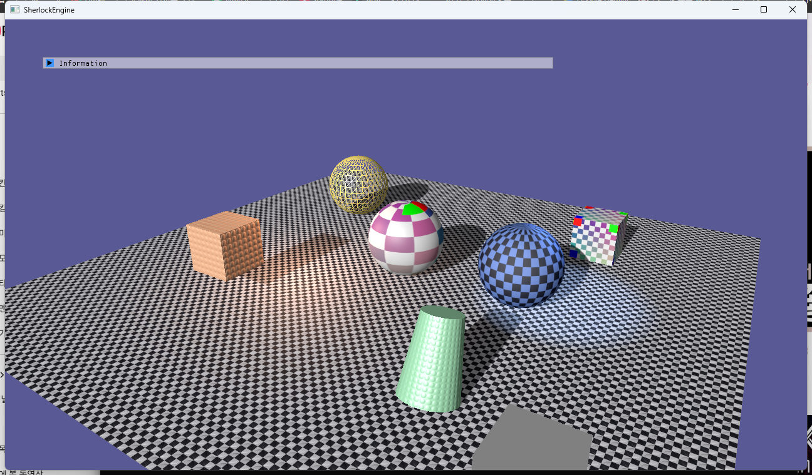
11.참고 문헌
- Andre Weissflog, Handles are the better pointers, 2018 — 인덱스 핸들 + 세대 카운터로 use-after-free 를 잡는 설계. floooh.github.io/2018/06/17/handles-vs-pointers.html
- NVIDIA, NVRHI — D3D11·D3D12·Vulkan 위의 공통 추상화, 가상 인터페이스 + 리소스 핸들. github.com/NVIDIA-RTX/NVRHI
- Andre Weissflog, sokol_gfx.h — Desc 구조체 → 정수 id, 세대 풀, 다중 백엔드의 단일 헤더 구현. github.com/floooh/sokol/blob/master/sokol_gfx.h
- Branimir Karadžić, bgfx Overview — 다중 백엔드 핸들 기반 렌더링 라이브러리. bkaradzic.github.io/bgfx/overview.html
- Microsoft Learn, Important Changes from Direct3D 11 to Direct3D 12 — 명시적 동기화, PSO, 커맨드 리스트, 디스크립터 힙. learn.microsoft.com/…/important-changes-from-directx-11-to-directx-12
- Dear ImGui, docs/BACKENDS.md — 표준 백엔드 사용 권고, 자체 렌더러 백엔드의 가치. github.com/ocornut/imgui/blob/master/docs/BACKENDS.md
- Microsoft Learn, ID3D11DeviceChild::SetPrivateData — WKPDID_D3DDebugObjectName 으로 디버그 이름. learn.microsoft.com/…/nf-d3d11-id3d11devicechild-setprivatedata
- Microsoft, DirectX Shader Compiler — HLSL → DXIL(dxc). fxc 의 DXBC 와 대비. github.com/microsoft/DirectXShaderCompiler
- Diligent Graphics, Diligent Engine — D3D11/12·Vulkan·Metal·OpenGL·WebGPU 추상화 층. github.com/DiligentGraphics/DiligentEngine
- SherlockEngine, rendering-analysis.html D21 — RHI 추상화의 형태와 도입 시점. rendering-analysis.html#d21
8단계 · D3D12 백엔드 (RHI 검증)
RHI가 정말 API를 감추는지는 두 번째 백엔드를 붙여 봐야 압니다. RHI/D3D12/에 D3D12Device·D3D12CommandList를 구현하고 --backend=d3d12로 같은 씬을 그렸습니다. Renderer·Material·Mesh·Scene·App 코드는 한 줄도 바뀌지 않았고(PSO Desc에 렌더 타깃 포맷을 채우는 세 줄이 유일한 Renderer 변경), F10으로 애니메이션을 고정한 두 백엔드의 화면은 904,392픽셀 중 0픽셀 차이입니다. Debug Layer와 GPU 기반 검증(GBV)을 켠 상태에서도 메시지는 0건입니다. PSO·루트 시그니처·배리어·펜스라는 로드맵의 목표 개념이 이 단계에서 처음으로 "에뮬레이션"이 아니라 네이티브가 됩니다.
3단계의 프레임 인덱스가 펜스와 업로드 링의 기준이 되고, 4단계의 BindingLayout이 루트 시그니처가 되고, ResourceSet이 디스크립터 테이블이 되고, 6단계의 Barrier가 진짜 ResourceBarrier가 되고, 1단계에 넣어 둔 RTV/DSV 포맷이 PSO 생성의 필수 항목이 됩니다. 셰이더는 fxc가 만든 DXBC를 그대로 씁니다 — D3D12는 DXBC를 받고, 두 백엔드가 같은 바이트코드를 쓰니 픽셀 비교가 의미를 가집니다. D3D11에서 드라이버가 몰래 해 주던 세 가지(자원 이름 바꾸기, 수명 관리, 상태 전이)를 전부 우리가 하게 됐고, 그 자리마다 6단계까지 미리 파 둔 구멍이 있었습니다.
1.요약
| RHI 개념 | D3D11 백엔드 | D3D12 백엔드 |
|---|---|---|
| Device 생성 | D3D11CreateDevice + 팩토리 | 어댑터 열거 → D3D12CreateDevice(FL 11_0), 직접 커맨드 큐, Debug Layer + GBV |
| 스왑체인 | FLIP_DISCARD 2장, 장치가 pDevice | FLIP_DISCARD 3장, 큐가 pDevice. 백버퍼마다 텍스처 핸들, GetCurrentBackBufferIndex |
| 프레임 경계 | Present. 동기화는 드라이버 | 슬롯(kFrameCount=2)마다 커맨드 할당자·펜스 값·업로드 링·가비지. BeginFrame이 N−2 완료를 기다림 |
| CommandList | ImmediateContext 래퍼 | ID3D12GraphicsCommandList 기록, EndFrame에서 Execute |
| Buffer (Default) | CreateBuffer + 초기 데이터 | DEFAULT 힙 + UPLOAD 스테이징 + CopyBufferRegion (동기) |
| Buffer (Dynamic) | 프레임 수만큼 복제, Map(WRITE_DISCARD) | 리소스 없음. UpdateBuffer가 프레임 링에서 256B 정렬 조각 → 드로우마다 루트 CBV 주소 |
| Texture | 초기 데이터 배열 → CreateTexture2D | GetCopyableFootprints → 업로드 힙 행 복사 → CopyTextureRegion 밉마다 → 배리어 |
| 뷰 | ID3D11*View 객체 | 디스크립터 힙 슬롯. CPU 힙(RTV·DSV·스테이징) + 셰이더 가시 힙(SRV·샘플러) |
| BindingLayout | 슬롯 번호표 | 루트 시그니처(루트 CBV + SRV/샘플러 테이블), 레이아웃 조합별 캐시 |
| ResourceSet | 슬롯마다 *SSet* | 셰이더 가시 힙의 영구 테이블 범위. 드로우 시 SetGraphicsRootDescriptorTable |
| PSO | 상태 객체 5개 + Bind 7호출 | D3D12_GRAPHICS_PIPELINE_STATE_DESC 하나. RTV/DSV 포맷 필수 |
| Barrier | 추적 + Debug 검증 | ResourceBarrier(Transition). 추적 상태가 before |
| 파괴 | ComPtr 해제 | 슬롯 가비지에 넣고 그 프레임의 펜스 뒤에 해제 (리소스·PSO·디스크립터) |
| ImGui | imgui_impl_dx11 | imgui_impl_dx12 + 우리 SRV 힙의 alloc/free 콜백 |
2.두 번째 백엔드가 검증하는 것
D3D11에서 D3D12로 가면 세 가지가 애플리케이션의 책임이 됩니다: CPU/GPU 동기화, 리소스 수명과 상태, 자원 바인딩9,11. D3D11의 Map(WRITE_DISCARD)에서는 드라이버가 "무한한 메모리"처럼 자원 이름을 바꿔 주지만, D3D12에서는 우리가 링 버퍼와 펜스로 같은 일을 해야 합니다1,9. 7단계까지의 RHI가 이 차이를 인터페이스 밖으로 새지 않게 만들었는지가 이 단계의 질문이었고, 답은 "Renderer 세 줄"이었습니다. 그 세 줄도 새로운 개념이 아니라 1단계에 "D3D11은 안 쓰지만 D3D12는 필수"라고 적어 둔 필드에 실제 값을 넣는 것이었습니다.
선택으로 표시된 단계였지만 건너뛰면 RHI는 "D3D11 래퍼"에 머뭅니다. 특히 다음 세 가지는 D3D12를 붙이기 전에는 맞는지 알 수 없었습니다: (1) 3단계의 kFrameCount 복제가 실제 프레임 지연 동기화와 맞물리는가, (2) 6단계의 Barrier 호출 위치가 GBV를 통과하는가, (3) 4단계의 레지스터 배정(재질 t0–7/s0–3, 프레임 t8–/s4–)이 루트 시그니처로 그대로 옮겨지는가. 셋 다 통과했습니다.
3.장치 · 큐 · 스왑체인 · 프레임 자원
장치는 DXGI 팩토리로 어댑터를 열거해(WARP 제외) FL 11_0으로 만듭니다. D3D12에는 D3D11CreateDeviceAndSwapChain 같은 것이 없고, 스왑체인의 pDevice 자리에 커맨드 큐가 들어갑니다9. 5단계에서 장치와 스왑체인을 분리해 둔 덕에 스왑체인 코드는 그대로이고, 백버퍼가 3장이 되어 각각 텍스처 핸들을 갖습니다. D3D11에서는 백버퍼 0 하나만 보이지만 D3D12는 회전이 명시적이라 GetCurrentBackBufferIndex로 이번 프레임의 버퍼를 고릅니다.
// D3D12Device::BeginFrame — 3단계의 프레임 인덱스가 여기서 펜스의 기준이 된다
m_frameIndex = m_frameCounter % kFrameCount;
if (m_fenceValues[m_frameIndex] != 0 && m_fence->GetCompletedValue() < m_fenceValues[m_frameIndex])
{
m_fence->SetEventOnCompletion(m_fenceValues[m_frameIndex], m_fenceEvent); // 프레임 N−2 가 끝날 때까지
WaitForSingleObject(m_fenceEvent, INFINITE);
}
ReleaseGarbage(m_frameIndex); // 그 프레임이 쓰던 리소스·디스크립터를 이제 놓는다
m_rings[m_frameIndex].offset = 0; // 그 프레임의 업로드 링도 재사용
m_allocators[m_frameIndex]->Reset();
m_list->Reset(m_allocators[m_frameIndex].Get(), nullptr);
m_list->SetDescriptorHeaps(2, heaps); // SRV 힙 + 샘플러 힙. 프레임에 하나씩만
m_backBufferIndex = m_swapChain->GetCurrentBackBufferIndex();
// EndFrame
m_list->Close();
m_queue->ExecuteCommandLists(1, lists);
m_swapChain->Present(vsync, flags);
m_queue->Signal(m_fence.Get(), m_nextFenceValue);
m_fenceValues[m_frameIndex] = m_nextFenceValue++;프레임 슬롯은 kFrameCount(2)개이고 각 슬롯이 커맨드 할당자, 펜스 값, 업로드 링, 가비지 목록을 갖습니다. 백버퍼 3장은 이것과 별개입니다 — 슬롯은 "CPU가 얼마나 앞서 갈 수 있는가", 백버퍼 수는 "컴포지터가 얼마나 들고 있는가"입니다. Microsoft의 펜스 기반 자원 관리 문서가 설명하는 링 버퍼 시나리오가 정확히 이 구조입니다1.
4.메모리와 업로드
4.1 Default 버퍼와 텍스처: 동기 업로드
D3D12에는 힙 종류가 셋입니다: DEFAULT(GPU 전용), UPLOAD(CPU 쓰기 → GPU 읽기), READBACK3,8. 정점·인덱스 버퍼와 텍스처는 DEFAULT 힙에 만들고, 초기 데이터는 UPLOAD 힙의 스테이징 버퍼에 써서 CopyBufferRegion/CopyTextureRegion으로 옮깁니다. 이 복사는 별도의 업로드 커맨드 리스트에 기록해 즉시 실행하고 완료를 기다립니다(ExecuteUploadSync). 로드 시점에만 쓰는 경로라 동기여도 됩니다. 텍스처는 GetCopyableFootprints가 알려 주는 밉별 오프셋과 256바이트 정렬된 행 간격(RowPitch)에 맞춰 행 단위로 복사합니다 — 원본의 rowPitch와 다르기 때문입니다5.
버퍼는 배리어 없이 씁니다. 버퍼는 COMMON에서 COPY_DEST로 암묵적으로 승격되고 ExecuteCommandLists가 끝나면 COMMON으로 돌아오므로(decay), 다음에 정점 버퍼로 쓸 때 다시 승격됩니다12. 텍스처는 승격되지 않으므로 업로드 뒤 명시적으로 COPY_DEST → PIXEL_SHADER_RESOURCE | NON_PIXEL_SHADER_RESOURCE 배리어를 겁니다.
4.2 Dynamic 버퍼: 업로드 링과 드로우마다 루트 CBV
여기가 8단계에서 가장 중요한 설계 결정입니다. 3~4단계의 Renderer는 오브젝트 상수버퍼 하나를 드로우마다 UpdateBuffer합니다. D3D11에서는 Map(WRITE_DISCARD)가 호출마다 새 메모리를 주므로 각 드로우가 자기 데이터를 봅니다. D3D12에서 "프레임 슬롯마다 버퍼 하나"로 흉내 내면 한 프레임의 모든 드로우가 마지막 데이터를 보게 됩니다 — GPU는 나중에 실행되기 때문입니다. 로드맵이 "Map 후 즉시 사용이 D3D12에서는 프레임 지연을 고려해야 한다"고 경고한 지점입니다.
해법은 Dynamic 버퍼에 리소스를 두지 않는 것입니다. 프레임 슬롯마다 8 MB UPLOAD 링(영구 매핑)을 두고, UpdateBuffer가 256바이트 정렬 조각을 잘라 데이터를 복사한 뒤 그 GPU 가상 주소를 버퍼 핸들에 기억합니다. 드로우 직전에 CommandList가 현재 루트 시그니처의 CB 슬롯마다 SetGraphicsRootConstantBufferView(root, 주소)를 다시 겁니다. 루트 디스크립터는 드라이버가 드로우마다 버전을 관리하므로6 이 패턴이 정확히 D3D11의 이름 바꾸기와 같은 결과를 냅니다. 링은 BeginFrame에서 슬롯이 재사용될 때(N−2 프레임 완료 뒤) 리셋됩니다.
// D3D12Device::UpdateBuffer (Dynamic)
uint8_t* dst = AllocateUpload(buffer->desc.size, address); // (offset + 255) & ~255
std::memcpy(dst, data, size);
buffer->gpuAddress = address;
buffer->updatedFrame = m_frameCounter;
// D3D12CommandList::ApplyBindings — DrawIndexed 직전
for (각 셋 s : 현재 루트 시그니처)
for (CB 슬롯 i) m_list->SetGraphicsRootConstantBufferView(binding.cbvRoot[i], buffer->gpuAddress);
if (테이블이 dirty) SetGraphicsRootDescriptorTable(srvTableRoot / samplerTableRoot, …);Dynamic 버퍼의 계약은 "쓰는 프레임에 반드시 갱신한다"입니다. 이전 프레임의 링 조각은 재사용될 수 있기 때문입니다. Debug에서는 updatedFrame이 현재 프레임이 아니면 한 번 경고합니다. Renderer는 원래부터 모든 Dynamic 버퍼를 매 프레임 올리므로(D3D11의 WRITE_DISCARD도 사실상 같은 계약) 경고가 난 적은 없습니다.
위 문단의 "Debug에서는"은 사실과 다릅니다. RHI/D3D12/D3D12CommandList.cpp의 ApplyBindings가 하는 이 검사에는 _DEBUG 가드가 없습니다. 빌드 구성과 관계없이(Release 포함) updatedFrame != GetFrameNumber()이면 ErrorOnce로 Log::Error를 한 번 출력합니다. 경고가 아니라 에러 등급입니다. "경고가 난 적은 없다"는 결론은 그대로입니다.
4.3 지연 해제
D3D11에서 ComPtr을 놓으면 드라이버가 GPU가 끝날 때까지 객체를 붙들어 줍니다. D3D12는 참조 카운트를 인터페이스 수명에만 쓰고, GPU가 쓰는 동안 리소스가 살아 있게 하는 것은 앱의 책임입니다11. 그래서 Destroy*는 객체와 디스크립터 범위를 현재 슬롯의 가비지 목록에 넣고, 그 슬롯의 펜스가 지나간 BeginFrame에서 놓습니다. PSO 캐시의 Clear(셰이더 핫리로드)도 같은 경로를 거칩니다 —이전 세대의 PSO가 아직 실행 중인 커맨드 리스트에 걸려 있을 수 있습니다. Resize와 종료는 WaitForGpu로 비운 뒤 즉시 놓습니다.
5.디스크립터 힙과 ResourceSet
D3D12의 뷰는 객체가 아니라 디스크립터 힙 안의 슬롯입니다2. CPU 전용 힙 네 개(RTV 64, DSV 16, 스테이징 SRV 1024, 스테이징 샘플러 64)에 뷰를 만들어 두고, 셰이더가 읽을 것은 셰이더 가시 힙 두 개(CBV/SRV/UAV 4096, 샘플러 256)로 CopyDescriptorsSimple합니다. 힙은 bump + free list 할당기입니다(D3D12DescriptorHeap).
ResourceSet은 생성 시 셰이더 가시 힙에서 SRV 슬롯 수만큼, 샘플러 슬롯 수만큼 연속 범위를 영구 할당받고 스테이징 뷰를 복사해 둡니다. 드로우 때는 테이블 시작 GPU 핸들 하나만 겁니다. 셋은 값이라 바뀌지 않으므로(4단계: 텍스처가 바뀌면 셋을 새로 만든다) 프레임마다 복사할 이유가 없습니다. 파괴 시 범위는 지연 해제됩니다.
슬롯 순서와 테이블 순서가 같아야 합니다. 루트 시그니처의 SRV 테이블은 슬롯마다 range 하나(NumDescriptors 1, OffsetInDescriptorsFromTableStart = APPEND)를 선언 순서대로 쌓고, 셋도 같은 순서로 복사합니다. 재질 셋의 t0·t1이 연속이든(체커·노멀) 프레임 셋의 t8이 혼자든 같은 규칙입니다.
6.BindingLayout → 루트 시그니처
4단계가 "루트 시그니처의 D3D11 미리 그리기"라고 부른 것이 여기서 진짜가 됩니다. PSO Desc의 bindingLayouts[](프레임/오브젝트/재질) 순서대로 루트 파라미터를 쌓습니다: CB 슬롯은 루트 CBV(GPU 주소, 4.2절), SRV 슬롯들은 디스크립터 테이블 하나, 샘플러 슬롯들은 테이블 하나. 루트 시그니처의 세 파라미터 종류(루트 상수, 루트 디스크립터, 테이블) 중 루트 디스크립터는 CBV·raw/structured 버퍼만 가능하고 텍스처 SRV는 테이블이어야 합니다6 — 4단계가 정한 "CBV는 루트 디스크립터, SRV/Sampler는 테이블"은 이 제약을 따른 것입니다. 가시성은 슬롯의 스테이지 마스크로 정합니다(VS만·PS만·둘 다 = ALL). 레지스터 space는 전부 0입니다 — SM 5.0 DXBC는 space를 모릅니다(4단계의 X3721).
// 결과: 3셋 → 루트 파라미터 8개
[0] CBV b0 (ALL) [1] CBV b2 (PS) [2] SRV 테이블 { t8 } (PS) [3] 샘플러 테이블 { s4 } (PS) // 프레임 셋
[4] CBV b1 (VS) // 오브젝트 셋
[5] CBV b3 (ALL) [6] SRV 테이블 { t0, t1 } (PS) [7] 샘플러 테이블 { s0 } (PS) // 재질 셋
// 그림자 PSO(2셋) → 5개. 레이아웃 조합이 같으면 루트 시그니처를 공유한다 (Device 캐시).루트 시그니처가 바뀌면 루트 파라미터가 전부 무효가 되므로 CommandList는 그때 모든 테이블을 dirty로 표시합니다. 4단계의 "셋끼리 레지스터가 겹치지 않는다" 검증이 없었다면 여기서 D3D12SerializeRootSignature가 거부했을 것입니다.
7.PSO: 1단계의 빈칸이 채워지다
D3D12_GRAPHICS_PIPELINE_STATE_DESC는 1단계 PipelineStateDesc의 D3D12 원형이라 필드 대 필드로 변환됩니다. 다른 점 하나: D3D12 PSO는 토폴로지의 "종류"(점·선·삼각형)만 알고 리스트/스트립은 커맨드 리스트가 정하므로 SetPipelineState가 IASetPrimitiveTopology도 같이 부릅니다. 픽셀 셰이더가 없는 깊이 전용 PSO는 PS = {nullptr, 0}, NumRenderTargets = 0입니다.
첫 실행은 DrawIndexedInstanced 에러로 시작했습니다: "PSO의 렌더 타깃 포맷(R8G8B8A8_UNORM)이 RTV 포맷(R8G8B8A8_UNORM_SRGB)과 다르다". 메인 패스는 5단계부터 백버퍼의 sRGB 뷰에 그리는데 PSO Desc의 rtvFormats[0]은 1단계 기본값 UNORM이었습니다. D3D11은 이 필드를 보지 않아서 네 단계 동안 아무 문제도 없었던 것입니다. Renderer의 GetPipelineFor가 rtvFormats[0] = srgbOutput ? SRGB : UNORM, dsvFormat = D24S8을 채우는 세 줄이 8단계의 유일한 Renderer 변경이고, F5로 sRGB를 끄면 UNORM 변형 PSO가 하나 더 생깁니다.
11단계 에디터 씬 뷰 이후 메인 패스는 항상 백버퍼에 그리지 않습니다. Renderer::RenderMainPass(Graphics/Renderer.cpp)는 IsOffscreen()이 참이면(에디터가 SetSceneTarget으로 씬 뷰 텍스처를 요청한 경우) m_sceneColor에 그리고, 아니면 이전처럼 백버퍼에 그립니다. m_sceneColor는 RT+SRV 용도의 R8G8B8A8 텍스처입니다. D3D12 백엔드는 이런 색 텍스처를 DXGI_FORMAT_R8G8B8A8_TYPELESS 리소스로 만들어(D3D12Device::CreateTexture의 colorRtAndSrv) sRGB RTV와 UNORM SRV를 함께 씁니다. 이 절의 결론은 그대로입니다. 메인 패스가 srgbView = srgbOutput으로 그리므로 PSO의 rtvFormats[0]은 계속 GetPipelineFor의 sRGB/UNORM 선택과 맞습니다.
8.배리어와 상태
6단계에서 no-op으로 넣어 둔 Barrier(texture, before, after)가 ResourceBarrier(Transition)가 됩니다. before에는 호출 코드가 적은 값 대신 텍스처의 추적 상태를 씁니다 — 6단계에서 D3D11 백엔드가 그 둘이 어긋나면 경고하게 해 두었고, 실제로 어긋난 곳이 없어 여기서 그대로 통과했습니다. 상태 열거 ResourceState는 D3D12_RESOURCE_STATES의 부분집합으로 설계했으므로 변환은 1:1이고 ShaderResource만 PIXEL | NON_PIXEL 둘을 합칩니다13.
초기 상태가 6단계의 추적 시작점과 같아야 합니다. 스왑체인 버퍼는 COMMON(=PRESENT)으로 시작하고12 Renderer는 매 프레임 Present → RenderTarget → Present를 겁니다. 메인 깊이 버퍼는 Renderer가 배리어를 걸지 않으므로 DEPTH_WRITE로 만듭니다. 그림자 맵은 Renderer의 첫 배리어가 Common → DepthWrite이므로 COMMON으로 만듭니다(깊이 텍스처는 승격되지 않아 이 명시적 전이가 필요합니다). 초기 데이터가 있는 텍스처는 COPY_DEST로 만들어 업로드 뒤 SRV 상태로 옮깁니다. 프레임당 배리어 4회는 D3D11과 같습니다.
배리어 위치와 횟수. 위 문단은 백버퍼에 직접 그리는 경우의 서술입니다. 지금 Graphics/Renderer.cpp의 배리어는 다음과 같습니다.
- 그림자 맵:
RenderShadowPass가m_shadowMapState → DepthWrite, 패스 뒤DepthWrite → ShaderResource를 겁니다.m_shadowMapState는Common에서 시작하므로 첫 프레임만Common → DepthWrite이고, 이후로는ShaderResource → DepthWrite입니다. - 백버퍼에 직접 그리는 경우:
RenderMainPass가Present → RenderTarget을,EndUIPass가RenderTarget → Present를 겁니다. 합계 4회로 이 절의 서술과 같습니다. - 에디터 씬 뷰(
IsOffscreen(), 11단계): 메인 패스는m_sceneColor에→ RenderTarget, 패스 뒤RenderTarget → ShaderResource를 겁니다(ImGui가 샘플링). 백버퍼의Present → RenderTarget은BeginUIPass로 옮겨갔습니다. 합계 6회이고, 카메라 프리뷰(11-C,RenderPreviewPass)가 켜지면m_previewColor의 2회가 더해져 8회입니다.
12절의 "barriers 3"과의 관계. 패널(App/DebugUI.cpp)은 Renderer::GetStats()를 보여 줍니다. 이 값은 Renderer::Render 끝에서 찍히고(m_stats.barriers = cmd.GetStats().barriers), Core/Engine.cpp는 그 뒤에 BeginUIPass/EndUIPass를 부릅니다. 그래서 패널은 UI 패스와 마지막 RenderTarget → Present를 세지 않습니다. 백버퍼에 직접 그리는 경우 실제 4회 중 3회가 표시되고, passes도 UI 패스를 뺀 2입니다. 9월 23일 커밋(c9be97a)의 코드도 같은 순서이므로, 12절의 3은 이 집계 방식 때문으로 보입니다. 다만 당시 실행을 다시 재현해 확인하지는 않았습니다.
9.셰이더: DXBC 그대로
로드맵은 dxc로 DXIL(SM 6.0)을 제안했지만, D3D12는 fxc가 만든 DXBC(SM 5.0/5.1)도 받습니다9. 두 백엔드가 같은 .cso를 쓰면 픽셀 비교가 컴파일러 차이 없이 RHI만 비교하게 되므로 이쪽을 택했습니다. ShaderCompiler의 구현(D3DCompile·D3DReflect)은 그래픽스 API가 아니라 바이트코드 형식에 묶인 것이라 RHI/DXBC/로 옮겼고 두 백엔드가 공유합니다. 4단계의 리플렉션 대조와 핫리로드도 그대로 D3D12에서 동작합니다. DXIL은 SM 6 기능(웨이브 연산, 메시 셰이더)이 필요할 때 RHI/DXIL/로 들어오면 됩니다. D3D12는 셰이더 객체가 없으므로 D3D12Shader는 바이트코드 사본일 뿐이고 PSO 생성 시 D3D12_SHADER_BYTECODE로 넘깁니다.
표기 정정입니다. RHI/DXBC/ShaderCompiler.cpp가 런타임 컴파일에 쓰는 함수는 D3DCompile이 아니라 D3DCompileFromFile입니다(D3D_COMPILE_STANDARD_FILE_INCLUDE로 #include를 처리합니다). 리플렉션은 문서대로 D3DReflect입니다. 런타임 컴파일(ShaderCompiler::CompileFromFile)은 셰이더 핫리로드에서, 그리고 LoadOrCompile이 빌드가 만든 .cso를 찾지 못했거나 .cso가 소스보다 오래됐을 때 쓰입니다.
10.ImGui와 Debug Layer / GBV
imgui_impl_dx12는 셰이더 가시 SRV 힙 하나와 그 안의 슬롯 할당·해제 콜백을 요구합니다(1.91.5부터의 InitInfo 방식)14. 우리 SRV 힙과 D3D12DescriptorHeap::Allocate/Free를 그대로 줍니다. 그래야 프레임에 힙이 하나만 바인딩되고, ImGui가 내부에서 SetDescriptorHeaps를 불러도 상태가 바뀌지 않습니다. 7단계의 어댑터 다섯 메서드 뒤에 들어갔으므로 App은 여전히 어느 백엔드인지 모릅니다. 그림자 맵 미리보기의 GetImGuiTextureId는 텍스처마다 셰이더 가시 SRV를 하나 영구 할당해 그 GPU 핸들 값을 돌려줍니다.
Debug 빌드는 Debug Layer에 더해 GPU 기반 검증(GBV)과 동기화 큐 검증을 켭니다. GBV는 셰이더를 패치해 실행 시점에 "잘못된 상태의 리소스 접근, 해제된 리소스의 디스크립터, 힙 범위 밖 인덱싱"을 잡습니다4. 이 세션에서 GBV를 켠 채 531 FPS가 나왔고 메시지는 0건입니다. 필터로 거른 것은 CLEARRENDERTARGETVIEW_MISMATCHINGCLEARVALUE·CLEARDEPTHSTENCILVIEW_MISMATCHINGCLEARVALUE 둘뿐입니다 — 스왑체인 백버퍼에는 최적화 클리어 값을 줄 수 없어 항상 발생하는 성능 힌트입니다. 메시지는 D3D11과 마찬가지로 프레임마다 InfoQueue에서 콘솔로 옮기고, 종료 시 ReportLiveDeviceObjects를 출력합니다.
11.함정과 해결
- PSO 렌더 타깃 포맷. 7절. D3D11이 네 단계 동안 무시해 준 필드. Renderer가 sRGB 뷰에 맞춰 채운다.
- 드로우마다 갱신되는 상수버퍼. 4.2절. 프레임 슬롯 복제로는 부족하고 링 + 드로우마다 루트 CBV 재바인딩이 답. D3D11의 WRITE_DISCARD가 감춰 온 것.
- 비교 함수가 붙은 일반 샘플러.
SamplerDesc::compareFunc기본값 LessEqual이 비등방·선형 샘플러에도 들어가 Debug Layer가 "의도가 아닐 것"이라 5번 경고. Comparison 필터일 때만 지정하도록 두 백엔드 모두 수정. - F10은 시스템 키. F10 혼자 눌러도 WM_SYSKEYDOWN이고 DefWindowProc가 메뉴 모드에 들어가 다음 키(F5)를 삼켰다. 첫 sRGB 토글 검증이 128을 돌려준 이유. 메뉴가 없으므로 F10을 DefWindowProc에 넘기지 않게 했다.
- d3dx12.h 없음.
CD3DX12_*헬퍼는 SDK가 아니라 DirectX-Headers 패키지에 있다10. 의존성을 더하는 대신 필요한 셋(힙 속성, 버퍼 Desc, 전이 배리어)을D3D12Convert에 직접 적었다. - 수명. 4.3절. 텍스처를 놓을 때 디스크립터 다섯 종(RTV·sRGB RTV·DSV·스테이징 SRV·ImGui용 SRV)도 함께 지연 해제해야 힙이 새지 않는다.
- 시저. D3D12는 시저 사각형이 없으면 아무것도 그리지 않는다(경고도 없다).
BeginRenderPass가 뷰포트와 같은 크기로 건다. - 프레임 셋 t8과 그림자 패스. 6단계의 "SRV 언바인드" 논리는 D3D12에서 필요 없지만(자동 언바인드가 없다) 배리어가 대신 hazard를 정의한다. GBV가
DEPTH_WRITE상태의 그림자 맵을 SRV로 읽는 드로우가 없음을 확인해 준 셈이다.
12.검증과 스크린샷
- 완료 기준 ① "
--backend=d3d12로 같은 씬(그림자 포함)이 픽셀 단위로 같게" — F10으로 고정한 D3D11 캡처와 D3D12 캡처를 클라이언트 영역(ImGui 헤더 포함) 904,392픽셀 비교: 0픽셀 차이. 그림 1. - 완료 기준 ② "Debug Layer·GBV 경고 0건" — GBV + 동기화 큐 검증을 켠 Debug 실행에서 시작 안내 1건 외 메시지 0. 필터는 클리어 값 힌트 2종뿐.
- sRGB 토글(F5): D3D12에서 회색 카드 128 → 55, 배경 (89,89,149) → (25,25,76). 5단계 D3D11 값과 동일 — UNORM 변형 PSO와 UNORM RTV 뷰가 맞물린다.
- 리사이즈 1500×900 ↔ 900×500 6회 + 최소화/복원:
WaitForGpu→ 백버퍼 3장·깊이 즉시 해제 →ResizeBuffers→ 재생성. 메시지 0. - 셰이더 핫리로드: 편집 → 세대 2, 에러 → 유지, 복구 → 세대 3(4단계 스크립트에
--backend=d3d12). PSO 지연 해제로 실행 중인 커맨드 리스트가 깨지지 않는다. - 패널: backend D3D12, 531 FPS(GBV 켬), passes 2, barriers 3, PSO 3, 루트 시그니처 2(8·5 파라미터). Release 빌드에서
--backend=d3d12실행 확인. - D3D11 회귀: 샘플러 수정 뒤 D3D11 고정 캡처가 이전과 동일(D3D12와 0픽셀 차이).
- 격리 grep:
RHI/D3D12/밖ID3D12 | d3d12.h | dxgi1_6.h | imgui_impl_dx120건,RHI/D3D11|D3D12|DXBC밖 D3D11 기호 0건(주석 포함). 종료 시 Live Object: 장치 1건만.
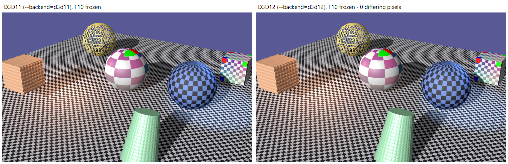
--backend=d3d11, 오른쪽 --backend=d3d12. 전체 화면 비교에서 차이 픽셀 0. 원본은 images/2026-09-23-phase8-d3d11-frozen.png / -d3d12-frozen.png.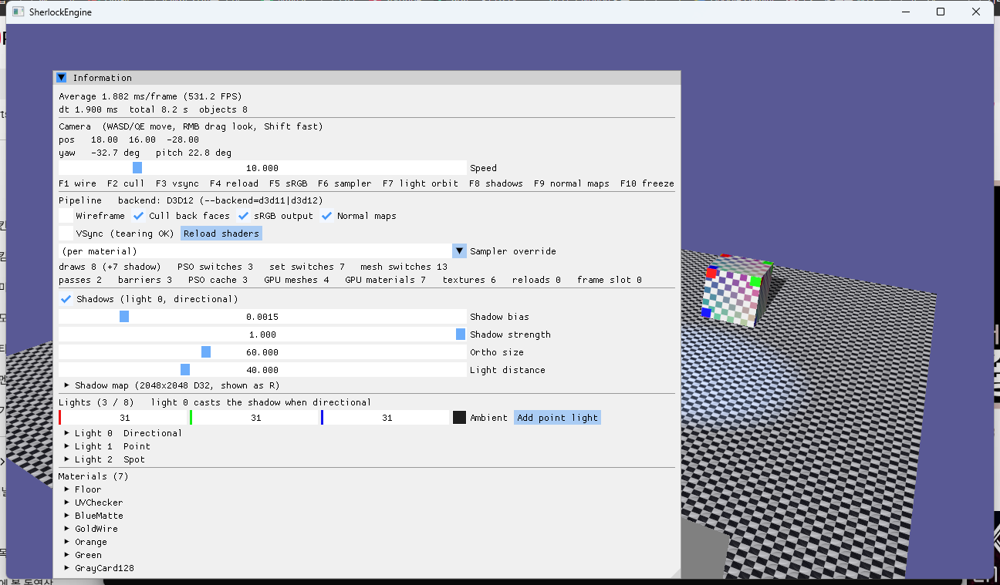
13.참고 문헌
- Microsoft Learn, Fence-Based Resource Management — 펜스로 프레임 진행을 추적해 업로드 힙 링 버퍼를 재사용. learn.microsoft.com/…/fence-based-resource-management
- Microsoft Learn, Descriptor Heaps. learn.microsoft.com/…/descriptor-heaps
- Microsoft Learn, Uploading different types of resources — 업로드 버퍼 하나에 서브할당, D3D11 과의 비교, 256 정렬. learn.microsoft.com/…/uploading-resources
- Microsoft Learn, GPU-based validation and the Direct3D 12 Debug Layer — GBV 가 잡는 오류와 비용. learn.microsoft.com/…/using-d3d12-debug-layer-gpu-based-validation
- Microsoft Learn, ID3D12Device::GetCopyableFootprints — 밉별 오프셋·행 수·행 크기, RowPitch 256 정렬. learn.microsoft.com/…/nf-d3d12-id3d12device-getcopyablefootprints
- Microsoft Learn, Root Signatures Overview — 루트 상수·루트 디스크립터·테이블, 드로우마다 버전 관리. learn.microsoft.com/…/root-signatures-overview
- Microsoft, DirectX-Graphics-Samples — D3D12 샘플(HelloWorld, Multithreading 의 그림자 맵 배리어 등). github.com/microsoft/DirectX-Graphics-Samples
- Microsoft Learn, Memory Management in Direct3D 12. learn.microsoft.com/…/memory-management
- Microsoft Learn, Porting from Direct3D 11 to Direct3D 12 — 장치 생성, 업로드, PSO, 커맨드 리스트, 동기화, 바인딩, 상태, 스왑체인, DXBC 지원. learn.microsoft.com/…/porting-from-direct3d-11-to-direct3d-12
- Microsoft Learn, Direct3D 12 programming environment setup — SDK 헤더·라이브러리, d3dx12.h 는 별도 배포. learn.microsoft.com/…/directx-12-programming-environment-set-up
- Microsoft Learn, Important Changes from Direct3D 11 to Direct3D 12 — 명시적 동기화, 수명, PSO, 커맨드 리스트, 디스크립터. learn.microsoft.com/…/important-changes-from-directx-11-to-directx-12
- Microsoft Learn, Using Resource Barriers to Synchronize Resource States in Direct3D 12 — 승격·붕괴 규칙, 백버퍼 초기 상태. learn.microsoft.com/…/using-resource-barriers-to-synchronize-resource-states-in-direct3d-12
- Microsoft Learn, D3D12_RESOURCE_STATES. learn.microsoft.com/…/ne-d3d12-d3d12_resource_states
- Dear ImGui, docs/BACKENDS.md — 표준 백엔드 사용 권고.
imgui_impl_dx12.h의ImGui_ImplDX12_InitInfo(SRV 힙 + 할당 콜백). github.com/ocornut/imgui/blob/master/docs/BACKENDS.md
9단계 · 모델 로딩 (glTF)
RHI 위에서 처음 만드는 "큰 기능"입니다. glTF 2.0 파일을 읽어 Model(메시·재질·이미지·인스턴스)로 만들고 Scene에 얹습니다. Khronos 의 DamagedHelmet(텍스처 내장 .glb, 탄젠트 없음)과 Sponza(.gltf + 69개 외부 이미지, 재질 26개, 알파 마스크 식물)가 텍스처·노멀 맵·그림자와 함께 그려지고, D3D11 과 D3D12 의 화면 차이는 각각 1픽셀·7픽셀입니다. 4단계의 Material/ResourceSet 설계가 실제 에셋의 다중 재질과 서브메시를 그대로 받아냈고, 인덱스 크기(D10)는 이 단계에서 16/32비트 자동 선택으로 바뀌었습니다.
로더는 CPU 데이터만 만든다(Model). Scene::AddModel 이 메시·재질·이미지 바이트를 씬으로 옮기고 노드마다 GameObject 를 만든다. GPU 자원은 3~5단계처럼 Renderer 캐시가 처음 그릴 때 만든다 — 텍스처에만 새 경로가 하나 생겼다: 재질 이름 → 씬 이미지 바이트 → TextureLoader::LoadFromMemory. 메시는 서브메시 범위(인덱스 시작·개수·재질 슬롯)를 갖고 Renderer 가 범위마다 DrawIndexed 한다. 좌표계는 Z 를 뒤집어 왼손으로, 탄젠트는 glTF 의 "초록 = 위" 관례에 맞춰 w 부호를 정한다.
1.요약
| 항목 | glTF 2.0 | SherlockEngine | 변환 |
|---|---|---|---|
| 좌표계 | 오른손, +Y 위, 앞면 +Z, 미터1 | 왼손, +Y 위, CW 앞면 | P·N·T 의 z 부호 반전, 노드 행렬은 M·A·M, 탄젠트 w 반전. 반사가 CCW → CW 를 만들어 인덱스 순서는 그대로 |
| 정점 | POSITION / NORMAL / TANGENT / TEXCOORD_0 / COLOR_0, accessor 마다 다른 타입·정규화 | VERTEX 64B 하나 | cgltf_accessor_read_float 가 정규화·스트라이드를 풀어 준다. 없는 속성은 기본값(흰색, 노멀 +Y, UV 0) |
| 탄젠트 | 있을 수도 없을 수도. 없으면 MikkTSpace 권장1 | tangent.xyz + w, B = cross(N,T)·w | 있으면 그대로(+ w 반전). 없으면 Lengyel 방식2으로 생성, w 는 B = −dP/dv 가 되게 |
| 메시 | mesh = primitive[] (재질마다 하나) | Mesh = 정점·인덱스 하나 + Submesh[] | primitive 를 이어 붙이고 인덱스에 baseVertex 를 더한다. 삼각형이 아닌 primitive 는 건너뛰고 센다 |
| 인덱스 | uint8 / uint16 / uint32 accessor | CPU 32비트, GPU 16 또는 32비트 (D10) | 정점 ≤ 65,535 면 업로드 시 16비트로 변환, GpuMesh::indexFormat |
| 노드 | 트리, TRS 또는 matrix, 열우선 | GameObject + Transform 의 pre-matrix | cgltf_node_transform_world → 행벡터 행렬(전치가 곧 변환) → 반사 켤레 |
| 재질 | pbrMetallicRoughness, normalTexture(scale), alphaMode, doubleSided | Blinn-Phong Material | baseColorFactor·Texture(sRGB) → baseColor·albedo; roughness → shininess 근사; normal.scale → normalStrength; MASK → alphaCutoff; BLEND → 컷아웃 0.5 근사 |
| 이미지 | bufferView(내장) / data: URI / 외부 파일 | Scene 의 이름 → 인코딩 바이트 | 로더는 디코딩하지 않는다. Renderer 텍스처 캐시가 재질이 요구하는 색공간으로 DirectXTex 디코딩7 |
| 샘플러 | wrap/filter 열거 | SamplerPreset 5개 | nearest → PointWrap, clamp → LinearClamp, 그 외 AnisotropicWrap |
| 바운드 | accessor min/max (선택) | Mesh AABB + Model AABB | 정점에서 직접 계산. 인스턴스 여덟 꼭짓점을 월드로 옮겨 합집합. 카메라 배치·그림자 직교 크기에 쓴다 |
2.왜 이 단계인가
로드맵은 이 단계의 목적을 "실제 에셋의 서브메시·다중 재질·인덱스 크기가 Material/ResourceSet 설계를 검증한다"로 적었습니다. 지금까지의 씬은 프리미티브 일곱 개와 재질 일곱 개였습니다. Sponza 는 재질 26개가 서브메시 103개에 흩어져 있고 이미지 69개 중 51개가 실제로 쓰이며, 식물은 알파 마스크가 없으면 초록 사각형으로 보입니다. DamagedHelmet 은 탄젠트가 없어 노멀 맵을 쓰려면 생성해야 하고, 이미지가 GLB 안에 들어 있어 "파일 경로 → 텍스처" 경로만으로는 부족합니다. 두 에셋이 4·5·6단계에서 미룬 결정을 전부 건드립니다.
결과적으로 Material 과 ResourceSet 은 손대지 않았습니다. 바뀐 것은 (1) 재질에 alphaCutoff 한 필드(상수버퍼 48 → 64B), (2) 메시에 서브메시 범위, (3) 오브젝트에 재질 슬롯 배열, (4) 텍스처 캐시에 "씬 이미지" 경로, (5) 인덱스 포맷 선택입니다. Renderer 의 드로우 루프는 DrawIndexed(count, start) 로 범위를 받는 것 외에는 그대로입니다.
3.로더 선택: tinygltf → cgltf
로드맵은 tinygltf 를 권장했습니다. vcpkg 매니페스트에 넣고 설치하자 포트가 GitHub 의 소스 아카이브를 받아 SHA512 를 대조하는 단계에서 실패했습니다 — 3.0.0 과 2.9.7 모두 "unexpected hash". GitHub 이 아카이브를 다시 압축해 해시가 바뀐 경우입니다. 포트를 오버레이로 복사해 해시만 고치면 되지만, 검증 해시를 손으로 바꾸는 것은 이 세션의 정책이 막았습니다(무결성 검증 약화). 그래서 같은 역할을 하는 다른 라이브러리를 골랐습니다.
cgltf3는 헤더 하나짜리 C99 glTF 로더(MIT)로 Filament·raylib·bgfx 가 씁니다. tinygltf 와 달리 이미지를 디코딩하지 않고 URI 와 bufferView 만 넘겨 주는데, 오히려 이 점이 잘 맞았습니다 —5단계의 TextureLoader(DirectXTex) 가 이미 PNG/JPG/DDS 를 디코딩하고 밉을 만들며 sRGB 라벨을 붙입니다. stb_image 를 하나 더 들일 이유가 없습니다. 접점은 Graphics/Model.cpp 한 파일뿐이라 나중에 tinygltf 나 fastgltf 로 바꿔도 Model 의 모양은 그대로입니다.
// Graphics/Model.cpp — cgltf 는 이 파일에서만 구현을 켠다
#define CGLTF_IMPLEMENTATION
#pragma warning(push)
#pragma warning(disable : 4996) // cgltf 내부의 fopen/strncpy (CRT 보안 경고)
#include <cgltf.h>
#pragma warning(pop)
cgltf_parse_file(&options, path, &data); // .gltf 또는 .glb 자동 판별
cgltf_load_buffers(&options, data, path); // .bin / GLB 청크 / data: URI
cgltf_validate(data); // 경고만4.Model 의 모양과 경계
// Graphics/Model.h
struct ModelImage { std::string name; std::vector<uint8_t> encoded; }; // PNG/JPG 바이트 그대로
struct ModelInstance { uint32_t meshIndex; XMFLOAT4X4 world; std::string name; };
struct Model
{
std::vector<Mesh> meshes; // 서브메시 범위 포함
std::vector<Material> materials; // materialSlot → 인덱스. 마지막은 "재질 없음" 슬롯
std::vector<ModelImage> images;
std::vector<ModelInstance> instances;
Bounds bounds; ModelStats stats;
};
bool ModelLoader::LoadGltf(const std::wstring& path, const Options&, Model& out);
// Scene::AddModel — 메시·재질·이미지를 옮기고 인스턴스마다 GameObject
GameObject& object = AddObject(meshes[instance.meshIndex], materials.back(), name);
object.SetSlotMaterials(materials); // 슬롯 번호 = 모델 재질 인덱스
object.GetTransform() = transform; // 모델 전체 배치
object.GetTransform().SetPreTransform(XMLoadFloat4x4(&instance.world)); // 노드 변환경계는 3단계의 D3 그대로입니다: Model·Scene 은 Device 를 모르고, GPU 버퍼·텍스처·ResourceSet 은 Renderer 캐시가 첫 드로우에서 만듭니다. 그래서 로더는 D3D 헤더 없이 컴파일되고(격리 grep 0건), 같은 Model 을 두 백엔드가 그립니다. 노드의 월드 변환은 임의 행렬이라 Transform 의 오일러 각으로 분해하지 않고 SetPreTransform 으로 S·R·T 앞에 곱합니다. 모델 전체를 옮길 때는 기존 position/rotation/scale 을 그대로 씁니다.
"모델 전체를 옮길 때" 노드들이 서로 독립이라 전부 골라야 했던 것이, 11-F 의 부모-자식 계층으로 해결됐습니다. Scene::AddModel 은 유효한 인스턴스가 둘 이상이면 빈 루트 오브젝트(파일 이름)를 만들고 노드를 그 자식으로 둡니다. 루트가 placement 를 갖고 자식은 pre 만 가지므로 자식 월드 = pre × placement 로 이 절과 같은 결과입니다. 노드 트리 자체를 런타임 계층으로 되살리지는 않았고(평탄화 유지), 노드가 하나인 헬멧·Sponza 는 이전과 똑같이 오브젝트 하나입니다. 상세: phase-11f 7절.
5.좌표계: 오른손 → 왼손
glTF 는 오른손 좌표계에 +Y 위, 앞면 +Z 이고, 양의 행렬식 변환에서 삼각형 앞면은 반시계(CCW)입니다1. 엔진은 왼손에 시계(CW) 앞면입니다(1단계 frontCounterClockwise = false). 정점의 z 부호를 뒤집는 반사 M = diag(1, 1, −1) 을 쓰면 와인딩이 CCW → CW 로 바뀌어 인덱스 순서를 건드릴 필요가 없습니다. 인덱스 순서만 뒤집는 대안을 쓰면 모델이 거울상으로 보입니다(헬멧 글자가 뒤집힘).
// 정점: P, N, T 의 z 반전. 탄젠트 w 는 부호 반전 (6절)
vertex.z = p[2] * zSign; vertex.nz = n[2] * zSign; vertex.tz = t[2] * zSign; vertex.tw = -t[3];
// 노드: 행벡터 행렬 A 에 대해 A' = M·A·M. 반사된 정점 P' = P·M 에 A' 를 곱하면 (P·A)·M — 원래 위치의 거울상
const XMMATRIX mirror = XMMatrixScaling(1, 1, -1);
const XMMATRIX world = mirror * LoadGltfMatrix(m) * mirror * rootScale;cgltf_node_transform_world 는 glTF 관례대로 열우선 16개를 줍니다. 원소를 순서대로 XMMATRIX 의 행에 넣으면 전치가 되는데, 열벡터 행렬 W 를 행벡터용으로 바꾼 것이 정확히 Wᵀ 이므로 그대로 쓰면 됩니다. 반사는 회전을 켤레로 뒤집습니다(RotX(θ) → RotX(−θ)) — 거울 속 물체는 반대로 돌아도 "똑바로" 서 있으므로 결과는 올바릅니다. 헬멧이 바닥 위에 서 있고 Sponza 의 아치가 위를 향하는 것으로 이를 확인할 수 있습니다.
6.탄젠트: 있으면 뒤집고, 없으면 만든다
6단계의 정점 포맷은 tangent.w 로 손방향(handedness)을 저장하고 픽셀 셰이더가 B = cross(N, T)·w 로 종탄젠트를 되살립니다. glTF 도 같은 식입니다: B = (N × T)·w 이고 노멀 텍스처는 "+X 오른쪽, +Y 위, +Z 는 보는 쪽"1. 문제는 "위"의 뜻입니다. 6단계의 프리미티브와 bumps_normal.png 는 B = dP/dv(v 가 증가하는 아래쪽)로 만들었습니다 — DirectX 식 노멀 맵. glTF 의 초록 채널은 v 가 감소하는 쪽, 즉 B = −dP/dv 입니다 — OpenGL 식. 같은 셰이더로 둘을 그리려면 w 의 부호만 다르면 됩니다. 노멀 맵을 뒤집거나 재질에 플래그를 두는 대신, 탄젠트의 손방향이 정확히 그 일을 합니다.
// Mesh::ComputeTangents (Lengyel [2]): 삼각형마다 dP/du, dP/dv 를 풀어 정점에 누적
const float r = 1.0f / (du1 * dv2 - du2 * dv1); // UV 가 퇴화하면 건너뜀
sdir = (e1 * dv2 - e2 * dv1) * r; tdir = (e2 * du1 - e1 * du2) * r;
...
t = normalize(t - n * dot(n, t)); // Gram-Schmidt
float w = dot(cross(n, t), tdir) < 0 ? -1 : 1; // cross(N,T) 가 dP/dv 쪽이면 +1
if (!bitangentTowardsIncreasingV) w = -w; // glTF: B = −dP/dv (초록 = 위)파일이 TANGENT 를 주면(Sponza 는 MikkTSpace 로 만든 탄젠트를 포함5) 그대로 쓰되 5절의 반사 때문에 w 를 뒤집습니다: cross(MN, MT) = det(M)·M·cross(N, T) = −M·cross(N, T) 이므로 반사된 B 를 얻으려면 w' = −w 입니다. 직접 만들 때는 반사된 정점으로 계산하므로 손댈 것이 없습니다. DamagedHelmet 은 TANGENT 가 없어 생성 경로를, Sponza 는 제공 경로를 지납니다 — 둘 다 노멀 맵을 끄면(F9) 화면이 바뀝니다(12절).
7.서브메시와 16/32비트 인덱스 (D10)
// Graphics/Mesh.h
struct Submesh { uint32_t indexStart, indexCount, materialSlot; }; // 프리미티브는 전체를 덮는 하나
// Renderer::BuildDrawList — 서브메시마다 DrawItem. 재질은 슬롯 → 오브젝트 기본 → Renderer 기본
for (const Submesh& submesh : mesh->GetSubmeshes())
{
item.material = object.GetMaterialForSlot(submesh.materialSlot) ?: &m_defaultMaterial;
item.indexStart = submesh.indexStart; item.indexCount = submesh.indexCount;
}
// 정렬 PSO → Material → Mesh → indexStart. 같은 메시의 다른 서브메시는 VB/IB 를 다시 바인딩하지 않는다
cmd.DrawIndexed(item.indexCount, item.indexStart, 0);Sponza 는 glTF mesh 하나에 primitive 103개입니다. 하나의 정점·인덱스 버퍼로 합치고 범위만 나누면 프레임에 메시 전환 1회, 재질(ResourceSet) 전환 25회, 드로우 103회가 됩니다 — 패널의 "mesh switches 2, set switches 25, draws 103" 이 그 수치입니다. 4단계가 재질 전환과 메시 전환을 따로 세도록 통계를 만든 덕에 정렬이 의도대로 동작하는지 바로 보입니다.
D10. CPU 쪽 Mesh::indices 는 32비트를 유지하고, GetOrCreateGpuMesh 가 정점 수 ≤ 65,535 면 16비트 배열로 변환해 올리며 GpuMesh::indexFormat 을 기억합니다. 드로우 루프는 SetIndexBuffer(handle, gpuMesh->indexFormat) 로 넘기기만 합니다. D3D 의 인덱스 버퍼 포맷은 R16_UINT 와 R32_UINT 둘뿐이므로6 분기는 정확히 그 둘입니다. 헬멧(14,556 정점)은 16비트, Sponza(192,496 정점, 메시 하나로 합쳤으므로)는 32비트가 됩니다. 프리미티브 씬은 전부 16비트가 되었고 화면은 바뀌지 않았습니다.
8.재질 대응과 알파 컷아웃
glTF 의 재질은 metallic-roughness PBR 이고 이 단계 당시 엔진은 Blinn-Phong 이었습니다(2026-10-08 에 엔진 재질도 PBR 로 바뀌어 지금은 값을 그대로 옮깁니다. rendering-analysis.html 의 20.15절). 아래는 당시의 근사입니다: baseColorFactor → baseColor, baseColorTexture → 알베도(sRGB), roughnessFactor → shininess = 8 + 120·(1−r)², 스페큘러는 0.04 + 0.3·(1−r) 을 금속성만큼 기본색 쪽으로 섞습니다. normalTexture 의 scale 은 6단계의 normalStrength 와 뜻이 같습니다(xy 배율). doubleSided 는 그대로 PSO 의 컬링을 끕니다.
alphaMode: MASK 는 알파가 alphaCutoff 미만인 픽셀을 버립니다1. Sponza 의 식물과 쇠사슬이 이 방식을 씁니다. 재질 상수버퍼에 alphaCutoff(0 = 끔)를 더해 64B 가 되었고(패딩 float3 포함, static_assert 갱신), 픽셀 셰이더가 알베도를 샘플한 직후 clip(surface.a − alphaCutoff) 합니다. BLEND 는 아직 블렌딩 상태가 없으니 컷아웃 0.5 로 근사합니다. 그림자 패스는 픽셀 셰이더가 없어 컷아웃 재질도 사각형 그림자를 드리웁니다 — 12단계에서 알파 테스트 그림자 PSO 변형으로 풀 일입니다.
9.이미지: 씬이 바이트를, Renderer 가 색공간을
5단계의 텍스처 캐시는 "이름 → Assets/Textures 의 파일"이었습니다. GLB 의 이미지는 파일이 아니고, 같은 이미지가 어떤 재질에서는 색(sRGB), 다른 재질에서는 데이터(선형)일 수 있으므로 디코딩 시점에 재질이 필요합니다. 그래서 로더는 디코딩하지 않고 인코딩된 바이트를 "<모델>/<번호> <uri>" 이름으로 넘기고, Scene 이 그 바이트를 이름으로 들고 있습니다. Renderer 의 GetOrLoadTexture(name, srgb, scene) 가 "builtin: → 씬 이미지 → 파일" 순으로 찾아 TextureLoader::LoadFromMemory(DirectXTex LoadFromWICMemory/LoadFromDDSMemory7)로 디코딩합니다. 5단계의 sRGB 규칙(라벨만 붙이고 값은 건드리지 않음, 밉은 선형에서 평균)이 그대로 적용됩니다.
외부 파일(Sponza)은 URI 의 %20 같은 이스케이프를 cgltf_decode_uri 로 풀고 모델 폴더 기준으로 읽어 같은 바이트 경로로 넣습니다. data: URI 도 base64 를 풀어 넣습니다. 로드 실패는 경고 후 흰색 텍스처로 대체됩니다(5단계와 같음).
10.씬 전환과 캐시 무효화
F11(또는 --scene=demo|helmet|sponza)이 씬을 바꿉니다. Renderer 캐시는 메시·재질 포인터를 키로 쓰므로 씬을 비우기 전에 Renderer::InvalidateScene(scene, releaseTextures) 를 먼저 불러 GPU 버퍼·ResourceSet·(내장이 아닌) 텍스처를 파괴합니다. 순서가 바뀌면 새 메시가 우연히 같은 주소를 받아 옛 GPU 버퍼로 그려지는 종류의 버그가 생깁니다. D3D12 에서는 파괴가 8단계의 지연 해제 목록을 지나므로 실행 중인 프레임과 충돌하지 않습니다. 씬마다 그림자 직교 크기·거리·바이어스를 바운드에 맞춰 다시 정합니다(헬멧 10/12, Sponza 는 가장 긴 반경 × 2.2).
11.함정과 해결
- tinygltf 포트 해시. 3절. cgltf 로 대체. 매니페스트 한 줄과 Model.cpp 한 파일만 바뀐다.
- cgltf 의 CRT 경고.
fopen·strncpy가 C4996 으로 빌드를 막았다. 헤더 include 만#pragma warning(disable: 4996)로 감쌌다 — 전역_CRT_SECURE_NO_WARNINGS는 우리 코드의 경고까지 끈다. - 서브메시 재질 슬롯. primitive.material 은 포인터라
material − data->materials로 인덱스를 얻는다. 재질이 없는 primitive 를 위해 마지막 슬롯에 기본 재질을 하나 더 둔다. - 탄젠트 손방향의 두 관례. 6절. 엔진 프리미티브(B = dP/dv)와 glTF(B = −dP/dv)를 같은 셰이더로 그리려면 생성 시 w 의 부호만 다르게. 반사까지 겹치면 제공된 w 도 뒤집는다.
- 실패한 텍스처가 흰색 핸들을 공유. 5단계부터 로드 실패는
m_whiteTexture를 캐시에 넣었다.InvalidateScene이 그것을 파괴하면 기본 재질이 깨지므로 내장 핸들과 같은 항목은 지우기만 한다. - Sponza 첫 시점. 바운드 중심 기준 자동 배치가 두 번 벽 안이었다. 안뜰은 x 축을 따라 길고 z 축 중앙이 열려 있으므로 x 한쪽 끝 + z 살짝 옆에서 대각선으로 본다.
- 금속 바이저가 검다. DamagedHelmet 의 바이저는 metallic 1 에 어두운 기본색이라 환경 반사 없이는 검게 나온다. Blinn-Phong 근사의 한계이고 12단계(IBL) 의 몫이라고 봤다. 정정(2026-10-08): 검은색의 대부분은 Z 반사 뒤 삼각형 감기 순서가 그대로여서 뒷면 컬링에 바깥 면이 잘리던 버그였고(rendering-analysis.html 의 20.16절), 금속 반사는 PBR + IBL 로 해결됐다.
12.검증과 스크린샷
- 완료 기준 "glTF 모델이 텍스처·노멀맵·그림자와 함께 두 백엔드에서 같게 표시된다" — F10 고정 화면을 클라이언트 영역 904,392픽셀로 비교: DamagedHelmet D3D11 vs D3D12 1픽셀(Δ1), Sponza 7픽셀(Δ7). 비등방 필터의 반올림 차이 수준. D3D12 Debug Layer·GBV 메시지 0.
- 노멀 맵 끔(F9): 헬멧 화면에서 162,982픽셀 변화 — 생성된 탄젠트로 노멀 맵이 실제로 작동한다. 그림자 끔(F8): 47,890픽셀 변화(바닥의 헬멧 그림자).
- DamagedHelmet(.glb): 메시 1, 정점 14,556, 삼각형 15,452, 이미지 5(2048², 밉 12), 재질 1(+기본), 탄젠트 생성, 16비트 인덱스. 파싱 21 ms. Debug D3D11 2,300 FPS.
- Sponza(.gltf + 69 이미지): 메시 1 / 서브메시 103 / 재질 25(+기본) / 정점 192,496 / 삼각형 262,267 / 32비트 인덱스 / 제공된 탄젠트. 파싱 682 ms(Debug), 426 ms(Release); 텍스처 51개 디코딩·밉 생성은 별도. 드로우 103 + 그림자 103, 재질 전환 25, 메시 전환 2. Debug D3D11 680 FPS.
- 알파 컷아웃: 식물·쇠사슬이 잎 모양으로 뚫린다(그림 3). Release 빌드에서
--scene=sponza --backend=d3d12실행 확인. - 격리 grep: RHI 백엔드 폴더 밖 D3D11/D3D12 기호 0건 — 로더·Scene·Renderer 변경 어디에도 D3D 헤더가 없다. 프리미티브 데모 씬은 16비트 인덱스로 바뀌었지만 화면 동일.
--scene=helmet, D3D11). 알베도·노멀 맵(생성 탄젠트)·바닥의 그림자. D3D12 화면(images/…-helmet-d3d12.png)과 1픽셀 차이. 바이저가 검은 것은 금속 재질의 Blinn-Phong 근사(11절).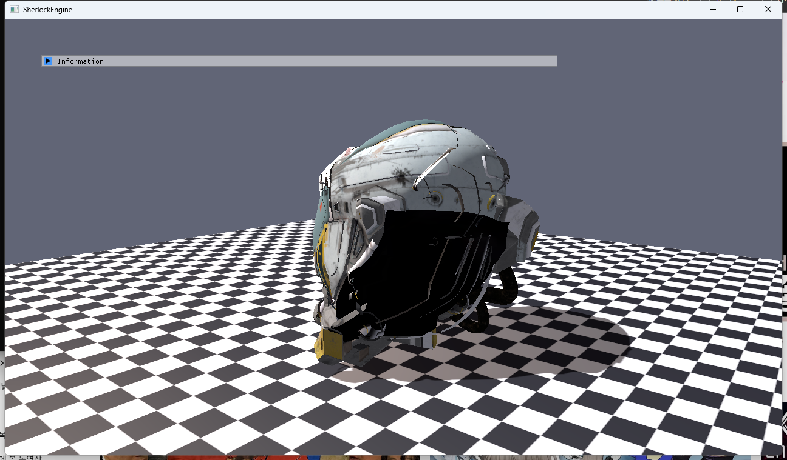
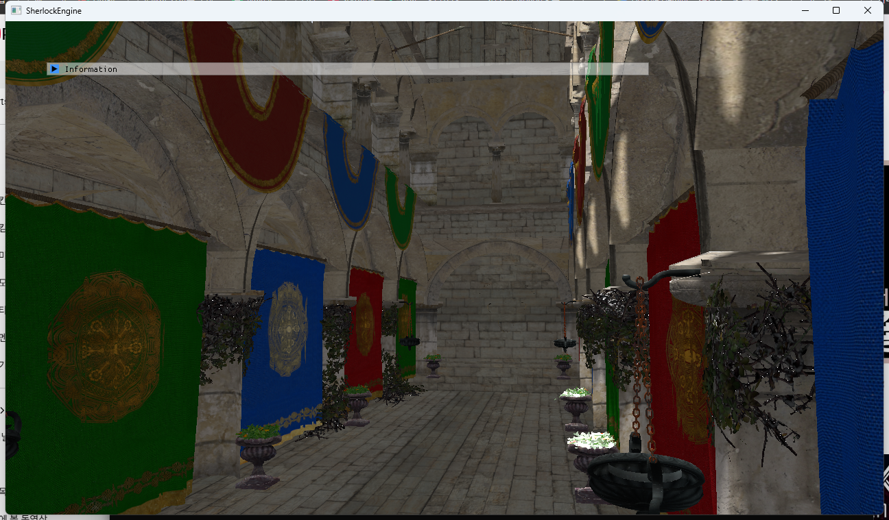
--scene=sponza, D3D11). 재질 25개·서브메시 103개·외부 이미지 69개, 알파 컷아웃 식물, 지붕 틈으로 들어오는 방향광 그림자. D3D12(images/…-sponza-d3d12.png)와 7픽셀 차이.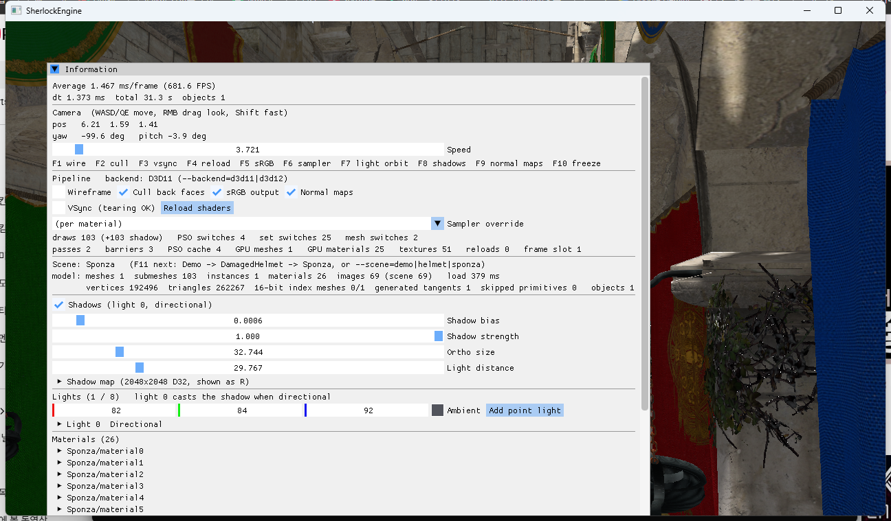
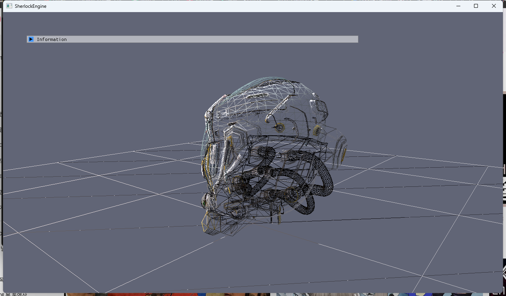
13.참고 문헌
- Khronos Group, glTF 2.0 Specification — 좌표계·와인딩, 이미지 원점(왼쪽 위), normalTexture 관례와 B = (N × T)·w, MikkTSpace 권장, alphaMode/alphaCutoff, 인덱스 accessor 타입. registry.khronos.org/glTF/specs/2.0/glTF-2.0.html
- Eric Lengyel, Computing Tangent Space Basis Vectors for an Arbitrary Mesh (2004) — 삼각형별 미분, Gram-Schmidt, w 에 저장한 손방향. terathon.com/blog/tangent-space.html
- Johannes Kuhlmann, cgltf — 단일 헤더 C glTF 로더 (MIT). 이미지는 디코딩하지 않는다. github.com/jkuhlmann/cgltf
- Khronos Group, glTF-Sample-Assets — DamagedHelmet (CC BY 4.0, ctxwing/theblueturtle_). github.com/KhronosGroup/glTF-Sample-Assets/…/DamagedHelmet
- Khronos Group, glTF-Sample-Assets — Sponza (Crytek, PBR 텍스처 Pestana/McGuire; 알파 마스크, MikkTSpace 탄젠트 포함). github.com/KhronosGroup/glTF-Sample-Assets/…/Sponza
- Microsoft Learn, ID3D11DeviceContext::IASetIndexBuffer — 인덱스 포맷은 R16_UINT 와 R32_UINT 뿐. learn.microsoft.com/…/nf-d3d11-id3d11devicecontext-iasetindexbuffer
- Microsoft, DirectXTex Wiki — WIC I/O Functions —
LoadFromWICMemory,WIC_FLAGS_FORCE_RGB,WIC_FLAGS_IGNORE_SRGB. github.com/microsoft/DirectXTex/wiki/WIC-I-O-Functions
10단계 · 엔진 코어 정리
"TestApp 이 엔진을 조립하는 구조"에서 "엔진 위에 앱을 올리는 구조"로 바꿨습니다. Core/ 에 Logger·Config·Time·Profiler·AssetManager·Engine 이 들어왔고, AppBase 는 창과 메시지 루프만 남았습니다. 백엔드는 Assets\Config\engine.ini 의 backend 한 줄이 고르고, 로그는 파일·콘솔·VS 출력 창·ImGui 콘솔 네 곳에 남습니다. 프로파일러는 CPU 구간과 함께 RHI 타임스탬프 쿼리로 두 백엔드의 GPU 구간을 잽니다. 실행 파일은 Windows 서브시스템이 되었고 Debug 에서만 콘솔을 엽니다. 이것으로 사용자가 요청한 범위(10단계까지)가 끝납니다.
0단계에 자유 함수로 둔 Log::Info/Warn/Error 뒤에 Logger 본체(레벨·싱크·히스토리)를 넣었고, 8단계의 --backend= 는 설정 파일 값을 덮어쓰는 형태로 남았습니다. Engine 은 소유와 프레임 순서만 갖습니다 — Device·Renderer·Scene·Camera·Input·Time 을 만들고 BeginFrame → Render → EndFrame 을 정할 뿐, 로직은 각 시스템에 그대로 남아 있습니다. 프로파일러의 GPU 구간은 6단계 CommandList 에 WriteTimestamp(slot) 하나를 더한 것으로, D3D11 은 쿼리 세트 여섯 개를 돌려 쓰고 D3D12 는 프레임 슬롯의 펜스를 지난 뒤에 쿼리 힙을 읽습니다.
이 문서 전체에 반복되는 이름 두 가지가 그 뒤 바뀌었습니다. 본문은 10단계 당시 그대로 두고 여기서 한 번에 안내합니다.
- TestApp → EditorApp. 2026-09-28 커밋에서 클래스와 파일이
App/EditorApp.h/.cpp로 개명되었습니다. 본문의 "TestApp" 은 모두 지금의EditorApp입니다. 11-D단계에서는 에디터 UI 없이 시작 씬만 돌리는 게임 런타임App/GameApp이 따로 생겼습니다. 상세: rendering-analysis 적용 기록 — TestApp → EditorApp 개명. - 실행 파일 하나 → 정적 라이브러리 + exe 둘. 11-D단계에서
SherlockEngine.vcxproj가StaticLibrary가 되었습니다.wWinMain은SherlockEditor/EditorMain.cpp와SherlockGame/GameMain.cpp두 곳에 있고, 산출물은x64\<구성>\SherlockEditor.exe·SherlockGame.exe입니다.SubSystem=Windows는 세 프로젝트 모두 유지됩니다. 상세: phase-11d 2절. - Debug 빌드의 콘솔. 도입부의 "Debug 에서만 콘솔을 엽니다" 는 11-C단계부터 사실이 아닙니다. 지금은 빌드 구성과 관계없이 기본으로 콘솔 창을 열지 않습니다(6절 상자).
1.요약
| 로드맵 항목 | 구현 | 확인 |
|---|---|---|
| Logger (레벨·파일·ImGui 콘솔·OutputDebugString), std::cout 교체 (D16) | Core/Log: Level Debug/Info/Warn/Error, SetMinLevel, 싱크 네 개, 링 히스토리 4,000줄, 뮤텍스. std::cout 0곳 | Debug 실행 로그 파일 551줄, 콘솔 창(F12)에 같은 줄 |
| AssetManager, PathManager, Time(고정 스텝) | AssetManager: 경로 → Model 캐시 + 파일 바이트; Paths(0단계) 유지; Time: 클램프·FPS·누적기 | 헬멧 → Sponza → 데모 → 헬멧: 로드 2, 캐시 적중 1. 고정 스텝 60 Hz 456회/7.6 s |
| Engine 클래스, AppBase 는 창과 루프만 (D14) | Engine 소유: Device·Renderer·Scene·Camera·Input·Time·AssetManager·Config. AppBase: 창·루프·ImGui 컨텍스트·Win32 백엔드 | TestApp 은 GetEngine() 만 쓴다. 렌더 순서는 Engine::Render |
| Profiler: CPU 구간 + GPU 타임스탬프 (RHI Query, 두 백엔드) | ProfileScope·GpuProfileScope, RHI WriteTimestamp/GetTimestampResults, D3D11 쿼리 세트·D3D12 쿼리 힙 | 패널: Frame/ShadowPass/MainPass/UIPass ms, D3D11·D3D12 모두. Debug Layer 경고 0 |
| Windows 서브시스템, Debug 에서 AllocConsole (D19) | SubSystem=Windows 4구성, wWinMain, Logger 가 AttachConsole → (Debug) AllocConsole2026-10-01 점검: 11-C단계부터 AllocConsole 은 빌드 구성이 아니라 engine.ini 의 log.allocConsole(기본 false)이 정합니다. 기본 상태에서는 Debug 에서도 새 콘솔을 열지 않습니다(6절 상자). | Release 는 콘솔 없이 실행되고 로그 파일이 남는다. 캡처 스크립트의 stdout 파이프도 그대로 동작 |
| 완료 기준 | engine.ini 의 backend = d3d12 만으로 D3D12 실행. 로그가 파일과 ImGui 콘솔에 | 그림 2, 그림 1 |
2.Logger (D16 본체)
0단계는 std::cout 29곳을 Log::Info/Warn/Error 로 모으고 "클래스가 아니라 자유 함수 네임스페이스로 둔 것은 10단계에서 호출부를 다시 고치지 않기 위해서"라고 적어 두었습니다. 실제로 그렇게 됐습니다 — 호출부 100여 곳은 한 줄도 바뀌지 않았고 Log.cpp 의 Emit 뒤만 채웠습니다.
// Core/Log.h — 파사드는 그대로, 뒤에 본체
enum class Level : uint8_t { Debug, Info, Warn, Error };
struct InitDesc { bool console, allocConsole; std::wstring filePath; Level minLevel; size_t historyCapacity; };
void Init(const InitDesc&); void Shutdown();
void Debug/Info/Warn/Error(const char* fmt, ...);
void SetMinLevel(Level); void CopyHistory(std::vector<Entry>&); uint64_t GetHistoryVersion();
// Emit: 레벨 필터 → 서식 → 뮤텍스 안에서 네 싱크
if (level < s.minLevel) return;
std::lock_guard<std::mutex> lock(s.mutex);
if (s.console) std::fputs(line, stdout); // 콘솔 (파이프면 파이프)
WriteToDebugger(line); // OutputDebugStringW — VS 출력 창, D3D Debug Layer 와 같은 곳
if (s.file.is_open()) { s.file << stamp << line; s.file.flush(); } // 크래시 직전 줄이 남아야 로그다
s.history.push_back({ level, time, body }); ++s.historyVersion; // ImGui 콘솔파일에는 초 단위 시각을 붙이고([ 7.257]), UTF-8 BOM 으로 시작해 메모장이 한글을 바로 읽습니다. 줄마다 flush 하는 비용은 초당 수백 줄 수준에서 보이지 않았고, 크래시 직전 줄이 남는 쪽이 더 중요합니다. 히스토리는 deque 링(4,000줄)이고, 콘솔은 버전 번호로 "새 줄이 왔는지"를 확인한 뒤에만 복사합니다. 레벨 필터는 최소 레벨 미만을 어디에도 내보내지 않으므로, 기본 레벨(info)에서는 Debug 로그의 서식 비용조차 들지 않습니다. 예외·ThrowIfFailed 는 여전히 쓰지 않습니다 — 0단계의 "엔진 API 는 bool" 결정을 유지했습니다.
3.Config: 백엔드는 설정 파일이 고른다
; Assets\Config\engine.ini — exe 옆으로 복사된다 (CopyAssets)
[engine]
backend = d3d11 ; d3d11 | d3d12 — 이 값만 바꿔 백엔드를 고른다
width = 1280
height = 720
vsync = false
debuglayer = true
scene = demo ; demo | helmet | sponza
fixedstep = 0.0166667
[log]
level = info
file = Logs\SherlockEngine.log
console = trueCore/Config 는 "key = value" 와 "[section]" 만 아는 INI 파서입니다. 키는 section.key 로 평탄화하고 소문자로 저장하며, 값은 문자열로 두고 GetInt/GetFloat/GetBool 이 변환합니다. 파싱은 로그를 남기지 않습니다 — Logger 보다 먼저 읽히기 때문입니다(로그 파일 경로가 여기서 나옵니다). 오류는 모아 두었다가 Logger 가 열린 뒤 경고로 냅니다. 실행 인자 --backend=·--scene= 는 8~9단계의 이름 그대로 설정 값을 덮어쓰고, 그 밖의 --section.key=value 도 일반형으로 받습니다. 설정 파일이 없으면 기본값으로 계속 실행합니다(경고 한 줄).
- 지금의
SherlockEngine/Assets/Config/engine.ini에는 위 예시에 없던 키가 둘 더 있습니다.[game]절(startScene,title)은 11-D단계에 생겼고 게임 런타임SherlockGame.exe가 읽습니다.[log]의allocConsole = false는 11-C단계에 생겼습니다(6절 상자). - 설정 파일은 이제
AppBase가Paths::GetAssetPath(L"Config\\engine.ini")로 찾습니다. 11-E단계부터 이 함수는 프로젝트Assets\→ 엔진 소스Assets\→exe\Assets\순서로 찾습니다. 그래서 소스 트리가 있는 개발 환경에서는 exe 옆 사본보다 소스 트리의 파일이 먼저 읽힙니다. 프로젝트에 자기engine.ini가 있으면 그것이 가장 먼저입니다. 상세: phase-11e 3절.
4.Time: 고정 스텝 누적기
Luna 의 GameTimer(QueryPerformanceCounter)를 시계로 두고 Core/Time 이 그 위에 (1) 델타 클램프(0.25 s — 디버거 정지·창 이동 뒤의 거대한 dt 를 자른다), (2) 0.5 초 창 FPS, (3) 고정 스텝 누적기를 얹습니다. Fiedler 의 "Fix Your Timestep"3 그대로입니다: 렌더가 시간을 만들고 고정 갱신이 fixedStep 단위로 소비하며, 남은 시간은 다음 프레임으로 넘기고 보간 알파(accumulator / fixedStep)도 제공합니다. 한 프레임에 여덟 번까지만 따라잡고 그 이상은 누적을 버려 죽음의 나선을 막습니다.
// AppBase::Run
const float dt = m_engine.BeginFrame(); // Time.Tick + Profiler 프레임 + ImGui 렌더러 NewFrame
while (time.ConsumeFixedStep()) OnFixedUpdate(time.GetFixedStep()); // 0..8 회
OnUpdate(dt);TestApp 의 OnFixedUpdate 는 아직 호출 수와 누적 시간만 셉니다(패널 "fixed updates 456 (7.6 s)" — 60 Hz). 물리가 들어오면 이 자리에 들어갑니다. 애니메이션은 지금까지처럼 가변 dt 의 OnUpdate 에 있습니다.
5.Engine 과 AppBase (D14)
// Core/Engine.h — 소유와 프레임 순서만
class Engine
{
bool Initialize(const Config&, const Desc&); // 백엔드 = config "engine.backend" → RHI::CreateDevice → Renderer → ImGui 렌더러
float BeginFrame(); void Render(); void EndFrame(); void OnResize(int, int);
RHI::Device& GetDevice(); Renderer& GetRenderer(); Scene& GetScene(); Camera& GetCamera();
Input& GetInput(); Time& GetTime(); AssetManager& GetAssets(); const Config& GetConfig();
private:
std::unique_ptr<RHI::Device> m_device; // 선언 순서 = 생성 순서. Renderer 가 뒤에 있어야 먼저 파괴된다
Renderer m_renderer; AssetManager m_assets; Scene m_scene; Camera m_camera; Input m_input; Time m_time;
};
// Engine::Render — 6단계 프레임 구조. 앱은 이 순서를 모른다
m_device->BeginFrame();
{ GpuProfileScope frame(cmd, "Frame");
m_renderer.Render(m_scene, m_camera, m_time.GetTotalTime()); // 그림자 + 메인 (안에서 GPU 구간)
m_renderer.BeginUIPass(); m_device->RenderImGui(); m_renderer.EndUIPass(); }
m_device->EndFrame();AppBase 에 남은 것은 창 등록·생성, 메시지 루프, ImGui 컨텍스트와 Win32 백엔드, 설정·Logger 초기화 순서입니다. 앱이 구현하는 것은 OnInitialize / OnUpdate / OnFixedUpdate / OnGUI / OnFocusLost 다섯 개이고, GetEngine() 으로 시스템에 접근합니다. 전역 g_appBase 는 D14 의 결론대로 유지했습니다(창이 하나인 동안에는 바꿔도 얻는 것이 없습니다). Engine 이 God object 가 되지 않도록 지키는 규율은 "소유와 순서만"입니다. 씬 구성은 앱이, 그리기는 Renderer 가, 캐시는 AssetManager 와 Renderer 캐시가 각각 맡습니다. 초기화 순서가 하나 바뀌었습니다 — ImGui 컨텍스트를 Engine 보다 먼저 만듭니다. Engine 이 Device 의 ImGui 렌더러 백엔드를 붙이기 때문입니다.
6.Windows 서브시스템과 콘솔 (D19)
D19 의 발전 방향 그대로입니다: SubSystem=Windows + wWinMain5. 콘솔은 Logger 가 처리합니다. GetStdHandle(STD_OUTPUT_HANDLE) 이 이미 유효하면(캡처 스크립트가 파이프로 리다이렉트한 경우 — 핸들 상속) 그대로 쓰고, 아니면 AttachConsole(ATTACH_PARENT_PROCESS)4 로 부모 콘솔(명령줄에서 실행)에 붙고, 그것도 없으면 allocConsole(Debug 빌드)일 때 AllocConsole 로 하나 엽니다. 콘솔에 붙거나 새로 연 경우에는 freopen_s(CONOUT$) 로 stdout 을 다시 연결하고, UTF-8 코드페이지를 맞춥니다. Release 빌드는 탐색기에서 더블클릭하면 렌더 창 하나만 뜨고, 로그는 파일과 VS 출력 창과 F12 콘솔에 남습니다(11절에서 확인).
"allocConsole(Debug 빌드)일 때 AllocConsole" 은 11-C단계에서 바뀌었습니다. 지금은 AppBase::InitLogger 가 desc.allocConsole = m_config.GetBool("log.allocConsole", false) 로 값을 정합니다(App/AppBase.cpp). 따라서 빌드 구성과 관계없이 기본으로 새 콘솔 창을 열지 않습니다. 에디터의 Console 창(F12)과 로그 파일이 그 역할을 맡기 때문입니다. 핸들 상속(파이프)과 AttachConsole(ATTACH_PARENT_PROCESS) 경로는 그대로이므로, 명령줄에서 실행하면 지금도 부모 콘솔에 붙습니다. 10단계 동작이 필요하면 engine.ini 의 [log] 에 allocConsole = true 를 적습니다. 상세: phase-11c 10절.
7.Profiler: CPU 구간 + GPU 타임스탬프
CPU 구간은 ProfileScope scope("Update") RAII 로 감싸고 QueryPerformanceCounter 로 잽니다. 중첩 깊이를 함께 저장해 패널이 들여쓰기로 보여 줍니다. 프레임마다 목록을 만들고 Profiler::BeginFrame 에서 "직전 프레임"으로 넘기므로 패널은 항상 완성된 프레임을 봅니다. GPU 구간은 GpuProfileScope(cmd, "MainPass") 가 시작·끝 슬롯 두 개를 소비하고, Device 가 몇 프레임 뒤에 돌려주는 틱을 프레임 번호로 짝지어 밀리초로 바꿉니다. 그래서 GPU 결과는 CPU 결과보다 2~6 프레임 늦고 패널이 그 프레임 번호를 같이 보여 줍니다.
7.1 RHI 확장: WriteTimestamp / GetTimestampResults
// RHI/CommandList.h
virtual void WriteTimestamp(uint32_t slot) = 0; // 0 ≤ slot < kMaxTimestamps(32), 프레임 안에서 증가 순서
// RHI/Device.h — 가장 최근에 완료된 프레임의 틱. CPU 를 기다리지 않는다
virtual bool GetTimestampResults(uint64_t* ticks, uint32_t count, uint64_t& frequency, uint64_t& frameNumber) = 0;위 스니펫의 GetTimestampResults 시그니처는 2026-09-28 C++20 전환에서 바뀌었습니다. 지금은 virtual bool GetTimestampResults(std::span<uint64_t> ticks, uint64_t& frequency, uint64_t& frameNumber) = 0; 입니다(RHI/Device.h, D3D11·D3D12 Device 헤더도 같음). (포인터, 개수) 쌍이 std::span 하나로 합쳐졌고, 백엔드는 개수를 ticks.size() 로 얻습니다. Profiler 의 C 배열은 크기와 함께 span 으로 암묵 변환되므로 호출부는 바뀌지 않았습니다. WriteTimestamp 와 의미는 그대로입니다. 상세: rendering-analysis 적용 기록 — C++20 전환.
인터페이스가 이 둘뿐인 것은 "기록은 커맨드 리스트, 읽기는 장치"라는 두 API 의 공통점만 남겼기 때문입니다. 타임스탬프는 두 API 모두 명령 스트림의 그 지점을 GPU 가 지날 때(bottom-of-pipe) 찍히고1, 틱을 주파수로 나눠 초를 얻습니다. 슬롯을 프레임 안에서 순서대로 쓰게 한 것은 D3D12 에서 "기록된 범위만 Resolve" 하기 위해서입니다.
7.2 D3D11: 쿼리 세트 6개
D3D11_QUERY_TIMESTAMP 는 End 만 부르고, D3D11_QUERY_TIMESTAMP_DISJOINT 가 프레임을 Begin/End 로 감싸 주파수와 "이 구간의 틱을 믿어도 되는지"를 줍니다2. 세트 하나 = DISJOINT 1 + TIMESTAMP 32. 처음에는 세트 3개로 "두 프레임 전"을 읽었는데 Debug Layer 가 프레임마다 "End is being invoked on a Query, where the previous results have not been obtained yet" 를 냈습니다 — DXGI 가 최대 3 프레임을 큐에 둘 수 있어 두 프레임 전 쿼리가 아직 GPU 에 있는 일이 잦고, 결과를 안 읽은 쿼리에 다시 End 하면 경고입니다. 세트 6개로 늘리고 다시 쓰기 직전(6 프레임 뒤)에 GetData(DONOTFLUSH) 로 읽으니 경고가 0 이 되었습니다. 준비되지 않았으면(S_FALSE) 그 세트는 버리고 계속합니다 — 기다리면 그것이 곧 GPU 동기화라 프로파일러가 측정 대상을 바꿔 버립니다.
7.3 D3D12: 쿼리 힙 + 리드백
// 힙: kFrameCount × 32 개. 리드백 버퍼: 같은 배치의 uint64
WriteTimestamp: m_list->EndQuery(heap, TIMESTAMP, frameIndex * 32 + slot); written[frameIndex] = max(slot + 1)
EndFrame: m_list->ResolveQueryData(heap, TIMESTAMP, frameIndex * 32, written, readback, frameIndex * 32 * 8); // Close 직전
BeginFrame: 펜스 대기 → ReleaseGarbage → ReadTimestamps(frameIndex) // Map(READBACK) 이 곧 읽기. 프레임 N − 2 의 결과
frequency: m_queue->GetTimestampFrequency()8단계의 프레임 슬롯 구조가 그대로 쓰입니다: 슬롯을 재사용하는 BeginFrame 은 이미 그 프레임의 펜스를 지났으므로 리드백 버퍼를 읽어도 안전합니다. 기록하지 않은 쿼리를 Resolve 하면 값이 정의되지 않으므로(그리고 Debug Layer 가 지적하므로) 기록된 범위 [0, written) 만 Resolve 합니다. GBV 를 켜도 메시지는 0 입니다. 쿼리 힙과 리드백 버퍼는 ReleaseDevice 에서 디스크립터 힙보다 먼저 놓습니다.
8.AssetManager
Core/AssetManager 는 "경로 → CPU 리소스" 캐시입니다. GetModel(L"Models\\Sponza\\Sponza.gltf") 는 처음엔 9단계의 ModelLoader::LoadGltf 를 부르고 두 번째부터는 캐시를 돌려줍니다. 씬 전환 헬멧 → Sponza → 데모 → 헬멧에서 로드 2·적중 1 이 패널에 보입니다(그림 3). Scene::AddModel(const Model&) 오버로드가 캐시의 모델을 복사해 넣습니다 — 정점·인덱스·이미지 바이트를 복사하므로, Sponza(56 MB)는 씬 전환 한 번에 수십 ms 가 걸립니다. GPU 자원은 여기서 다루지 않습니다. 그것은 Renderer 캐시의 몫이고 이 계층은 "파일 → 메모리"만 맡습니다. 텍스처 파일은 재질의 색공간을 알아야 디코딩할 수 있어 아직 Scene 이미지 바이트 경로(9단계)에 남았습니다. 통계(로드·적중·바이트·시간)는 패널의 Assets 줄입니다.
9.ImGui 콘솔과 한글 폰트
DebugUI::DrawLogConsole 은 별도 창 "Console (F12)" 를 그립니다: 레벨 체크박스 네 개, 문자열 필터, 최소 레벨 콤보(Log::SetMinLevel), 자동 스크롤, Clear. 히스토리는 버전이 바뀔 때만 복사합니다. 처음 띄우자 한글이 전부 ? 로 나왔습니다 — ImGui 기본 폰트(ProggyClean)에 한글 글리프가 없습니다. AddFontFromFileTTF("C:/Windows/Fonts/malgun.ttf", 15) 로 맑은 고딕을 얹었고, ImGui 1.92 는 글리프를 필요할 때 만들므로 글리프 범위를 미리 줄 필요가 없습니다6. 폰트가 커져 패널 폭이 조금 늘었지만 두 백엔드에서 같으므로 픽셀 비교에는 영향이 없습니다.
10.함정과 해결
- D3D11 쿼리 재사용 경고. 7.2절. 세트 3 → 6, 읽기 시점을 "두 프레임 뒤"에서 "다시 쓰기 직전"으로. 그리고
ReleaseDevice가 쿼리를 놓기 전에ReportLiveDeviceObjects를 불러 Live ID3D11Query 99개가 찍혔다 — 이제 풀을 비우는 곳에서 함께 놓는다. - ImGui 한글. 9절. 시스템 폰트 로드. 파일이 없으면 기본 폰트로 계속(경고 한 줄).
unique_ptr<Model>과 불완전 타입. AssetManager 헤더는 Model 을 전방 선언만 하므로 소멸자를 .cpp 에 둬야 한다 — 헤더에 암묵 소멸자가 있으면 include 한 모든 TU 에서static_assert(can't delete an incomplete type)가 걸린다.- Logger 보다 먼저 읽는 설정. 3절. 로그 파일 경로가 설정에서 오므로 Config 는 로그를 남기지 않고 오류를 모아 둔다.
- Profiler 프레임 번호. GPU 구간 목록은
BeginFrame에서 "직전 프레임" 것으로 보관되므로 번호는frameCounter − 1. 하나 어긋나면 D3D12 의 결과(프레임 N − 2)와 영영 짝이 맞지 않아 GPU 열이 비게 된다. - 자동화 키 입력. Sponza 로드(Debug 2~3 s) 중에 보낸 F11 의 down·up 이 같은 프레임에 처리되면 Pressed 가 되지 않는다. 캡처 스크립트는 키를 더 오래 누른다. 사람이 직접 누를 때는 문제없다.
11.검증과 스크린샷
- 완료 기준 ① "설정 파일의 백엔드 값만 바꿔 D3D11/D3D12로 실행" — exe 옆
engine.ini의backend = d3d11을d3d12로 바꾸고 인자 없이 실행: 로그 "Engine : 백엔드 D3D12", 패널 "backend D3D12 (engine.backend = d3d12)", Debug Layer·GBV 메시지 0 (그림 2). 되돌리면 D3D11. - 완료 기준 ② "로그가 파일과 ImGui 콘솔에 남는다" —
x64\Debug\Logs\SherlockEngine.log551줄(시각 접두어, UTF-8 BOM), F12 콘솔 창에 같은 줄이 레벨 색으로(그림 1). Release 도x64\Release\Logs\에 79줄. - Windows 서브시스템: Release 를 리다이렉트 없이 실행하면 콘솔 창 없이 렌더 창만 뜨고 정상 종료 로그 "종료." 가 파일에 남는다. Debug 는 부모 콘솔에 붙거나 새 콘솔을 연다. 캡처 스크립트의 stdout 파이프도 그대로 동작한다(핸들 상속).
- Profiler: D3D11 데모 씬 CPU 0.63 ms(GUI 0.32, Render 0.31), GPU Frame 0.101 ms(Shadow 0.007, Main 0.087, UI 0.007); Release Sponza GPU Frame 0.393 ms(Main 0.325). D3D12 도 같은 열이 채워진다. D3D11 Debug Layer 경고 0(세트 6개 이후), 종료 시 Live Object 장치 1건만.
- AssetManager: 헬멧 → Sponza → 데모 → 헬멧 전환에서 "모델 로드" 로그는 헬멧·Sponza 각 1회, 마지막 헬멧은 캐시 적중(그림 3의 Assets 줄: loads 2, hits 1). 캐시 57 MB.
- Time: 고정 스텝 16.67 ms, 7.6 s 동안 456회(60 Hz), 프레임당 0~1회; dt 클램프·FPS 창 평균 패널 표시.
- 격리 grep 0,
std::cout0. Debug·Release 빌드 경고 0. 9단계의 씬 세 개와 F1~F11 단축키는 그대로 동작(F12 콘솔 추가).
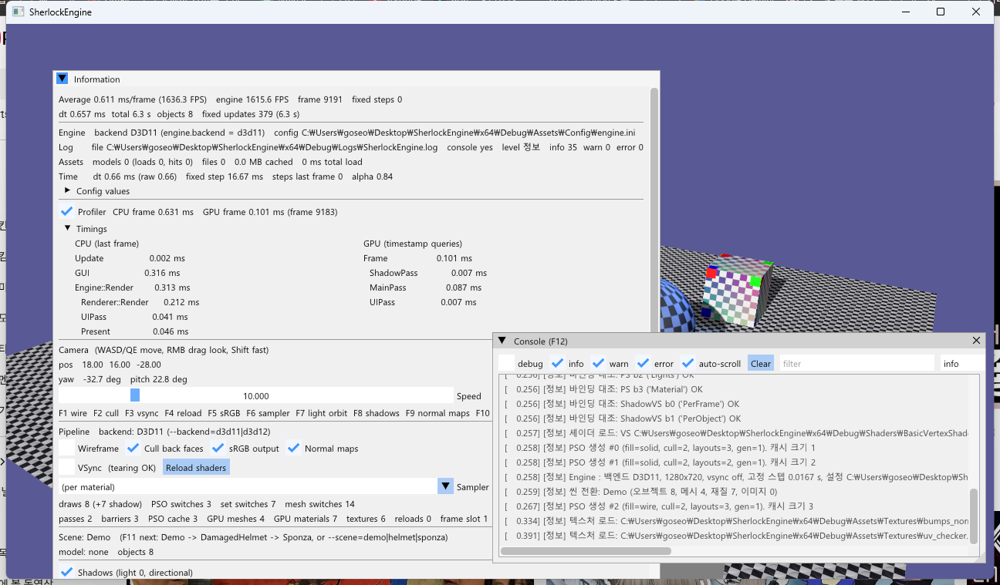
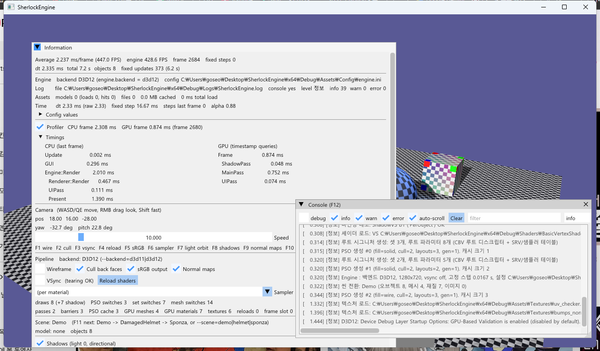
engine.ini 의 backend = d3d12 만으로 실행한 화면. Engine 줄이 "backend D3D12 (engine.backend = d3d12)", Pipeline 줄도 D3D12. GPU 타임스탬프 열이 D3D12 쿼리 힙에서 채워진다.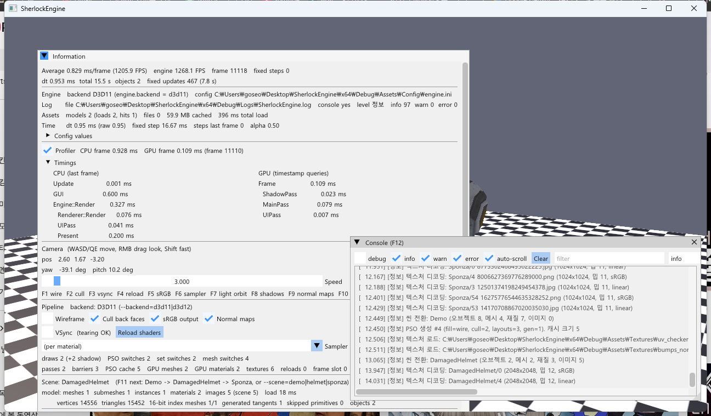
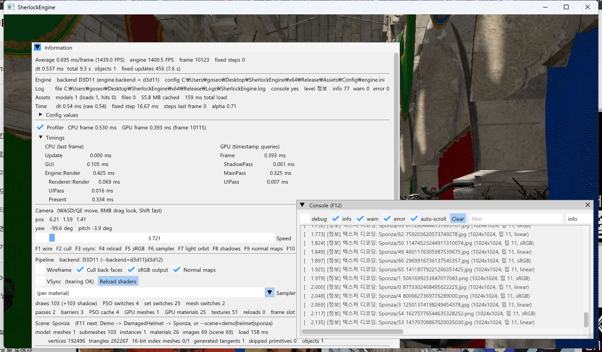
x64\Release\Logs\SherlockEngine.log, 콘솔 창에는 텍스처 디코딩 줄이 흐른다.12.참고 문헌
- Microsoft Learn, Timing (Direct3D 12 Graphics) — 타임스탬프 쿼리 힙,
ResolveQueryData,GetTimestampFrequency, bottom-of-pipe 의미, 부동소수점 나눗셈. learn.microsoft.com/…/direct3d12/timing - Microsoft Learn, D3D11_QUERY — TIMESTAMP 는 End 만, TIMESTAMP_DISJOINT 가 주파수와 신뢰 여부. learn.microsoft.com/…/ne-d3d11-d3d11_query
- Glenn Fiedler, Fix Your Timestep! — 누적기, 프레임 시간 클램프, 죽음의 나선, 보간 알파. gafferongames.com/post/fix_your_timestep
- Microsoft Learn, AttachConsole — ATTACH_PARENT_PROCESS, 프로세스는 콘솔 하나에만, /SUBSYSTEM:WINDOWS 에서의 용도와 핸들 상속 예외. learn.microsoft.com/en-us/windows/console/attachconsole
- Microsoft Learn, /SUBSYSTEM (Specify Subsystem) — CONSOLE(main) 과 WINDOWS(wWinMain). learn.microsoft.com/…/subsystem-specify-subsystem
- Dear ImGui, docs/FONTS.md —
AddFontFromFileTTF, 1.92 의 동적 글리프 로딩. github.com/ocornut/imgui/blob/master/docs/FONTS.md
11단계 · 에디터 도구
렌더러와 RHI가 굳은 뒤라 UI 코드가 구조를 왜곡하지 않습니다. 씬은 오프스크린 텍스처에 그려져 ImGui 도킹 창 안에 뜹니다. 그 안에서 클릭으로 오브젝트를 고르고, ImGuizmo 로 옮기고, Inspector 에서 Transform·재질을 편집하고, JSON 으로 저장해 다시 불러옵니다. 로드맵이 예고한 대로 "씬을 텍스처에 그려 ImGui 창에 표시"는 Renderer 의 타깃 선택 한 곳을 고치는 것으로 끝났습니다 — 6단계의 RenderPassDesc 가 attachment 를 값으로 받기 때문입니다. 덤으로 RHI 에 백버퍼 리드백을 더해 OS 입력 주입 없이 에디터 경로(선택 → 편집 → 저장 → 로드)를 자동 검증합니다.
에디터는 App/Editor 한 클래스이고 아무것도 소유하지 않습니다 — 씬·카메라·렌더러는 Engine 의 것이고 씬 전환·저장·로드는 콜백으로 앱에 넘깁니다(3단계 DebugUI 의 "패널은 편집만" 규칙 그대로). 씬 뷰는 Renderer 가 백버퍼 대신 그리는 텍스처 하나이고, 선택은 씬 뷰 픽셀에서 쏜 광선으로 각 메시의 로컬 AABB 를 검사하는 것이고, 기즈모는 ImGuizmo 가 준 월드 행렬에서 노드 pre-transform 을 벗겨 S·R·T 로 분해하는 것입니다. 저장은 정점 데이터가 아니라 메시의 출처(프리미티브 인자 또는 모델 경로 + 인덱스)를 적습니다.
이 문서에 반복되는 이름 두 가지가 그 뒤 바뀌었습니다. 본문은 11단계 당시 그대로 두고 여기서 한 번에 안내합니다.
- TestApp → EditorApp. 2026-09-28 커밋에서
App/EditorApp.h/.cpp로 개명되었습니다. 8절의 "TestApp 의 실행 인자" 는 지금의EditorApp::ParseAutomation입니다. 상세: rendering-analysis 적용 기록 — TestApp → EditorApp 개명. - SherlockEngine.exe → SherlockEditor.exe. 11-D단계에서 엔진이 정적 라이브러리가 되었습니다. 에디터는
x64\<구성>\SherlockEditor.exe, 게임 런타임은SherlockGame.exe입니다. 8절 명령의 exe 이름은 지금SherlockEditor.exe로 읽습니다. 상세: phase-11d 2절.
1.요약
| 로드맵 항목 | 구현 | 확인 |
|---|---|---|
| Scene Hierarchy, Inspector(Transform·Material 편집), Light 패널 | Hierarchy 창(선택), Inspector 창(위치·회전(도)·크기, 메시 출처, 재질 콤보 + 재질 필드), Lights·Materials 창(6단계 패널 재사용) | 그림 1: SphereCenter 선택, Inspector 의 위치 (0, 6, 0) |
| Render Settings: 백엔드 표시, PSO 캐시 통계, 디버그 뷰(노멀/깊이/그림자맵) | Render Settings 창: 4·5·6·10단계 패널 + 디버그 뷰 콤보(Lit/Albedo/World normal/Depth/Shadow factor/UV) + 그림자 맵 미리보기 | 그림 4·5: 노멀·깊이 뷰 |
| Stats: 드로우콜, PSO 전환 수, GPU 시간 | Stats 창: FPS, 드로우·삼각형·PSO/셋/메시 전환·PSO 캐시, 모델 통계, 10단계 프로파일러(CPU/GPU) | PSO 전환 수가 4단계 정렬의 효과를 보여 준다 |
| 씬 뷰를 오프스크린 텍스처로 렌더링 → ImGui Dockspace | Renderer::SetSceneTarget(w, h): TYPELESS UNORM 색 + D24S8 깊이, 메인 패스는 거기에 그리고 UI 패스가 백버퍼를 지운다. ImGui::Image + DockBuilder 기본 배치 | 그림 1~3, 두 백엔드 |
| 씬 저장/로드(JSON), ImGuizmo | SceneSerializer(nlohmann-json, 메시 출처·재질·조명·오브젝트·카메라), ImGuizmo 이동/회전/크기 + 월드/로컬, 1/2/3 키, Ctrl+S/Ctrl+L | 저장 → 재시작 로드에서 편집값 복원 (그림 2) |
| 완료 기준 | 클릭 선택(광선-AABB) → Inspector/기즈모 편집 → 저장 → 로드 | 자동 검증 A/B (8절) |
2.도킹 공간과 기본 배치
vcpkg 의 imgui 에 docking-experimental 기능을 켜면 같은 1.92 버전의 docking 브랜치를 받습니다2. io.ConfigFlags |= ImGuiConfigFlags_DockingEnable 을 설정한 뒤 DockSpaceOverViewport 가 메인 뷰포트(메뉴 바 아래)를 도킹 공간으로 만듭니다. 첫 실행(imgui.ini 없음)의 배치는 imgui_internal.h 의 DockBuilder 로 만듭니다 — 왼쪽 18% Hierarchy, 오른쪽 30% Inspector/Render Settings/Lights/Materials(탭), 아래 28% Console/Stats, 가운데 Scene. ImGui 저자가 "곧 다시 설계할 API" 라고 적어 둔 실험 API 이므로2 호출은 Editor::BuildDefaultLayout 한 함수에 가둡니다. 그 뒤로는 imgui.ini 가 배치를 기억하고, View → Reset layout 으로 되돌릴 수 있습니다.
AppBase::Run 의 "Information" 창은 사라졌습니다. 앱(OnGUI)이 자기 창을 만들고, 10단계 Engine::Render 는 그대로입니다. 화면 전체가 ImGui 라 io.WantCaptureKeyboard 가 늘 참이 됩니다. 그래서 단축키는 WantTextInput 일 때만 막고, 카메라 이동은 씬 뷰가 포커스/호버 상태일 때만 받습니다.
3.씬 뷰: 오프스크린 텍스처 하나
3.1 TYPELESS 색 텍스처 (두 백엔드)
씬 뷰 텍스처는 두 가지 뷰가 필요합니다: 메인 패스가 그릴 sRGB RTV(5단계의 감마 규칙 유지)와 ImGui 가 샘플할 UNORM SRV(ImGui 는 픽셀 값을 그대로 UNORM 백버퍼에 옮기므로 sRGB 로 인코딩된 바이트를 그대로 읽어야 색이 맞습니다). 타입이 정해진 리소스는 같은 포맷의 뷰만 만들 수 있고, 스왑체인 백버퍼만 예외입니다. 그래서 RenderTarget | ShaderResource 인 UNORM 색 텍스처를 두 백엔드 모두 R8G8B8A8_TYPELESS 로 만들고 뷰에서 포맷을 정합니다6 — 6단계 그림자 맵(D32 TYPELESS)에서 쓴 방법 그대로입니다.
// D3D11Device::CreateTexture (D3D12 도 같은 규칙)
const bool colorRtAndSrv = (bind & RenderTarget) && (bind & ShaderResource) && format == R8G8B8A8_UNORM;
texture.typeless = (depthAndSrv && IsDepth(format)) || colorRtAndSrv;
td.Format = typeless ? (IsDepth(format) ? DepthTypeless(format) : DXGI_FORMAT_R8G8B8A8_TYPELESS) : format;
// GetRTV(srgb=true) → UNORM_SRGB, GetRTV(false) → UNORM (TYPELESS 에는 뷰 포맷 명시), GetSRV → UNORM3.2 Renderer 의 타깃 선택과 배리어
// Renderer::RenderMainPass — attachment 만 바뀐다
if (IsOffscreen()) { target = m_sceneColor; depth = m_sceneDepth; cmd.Barrier(m_sceneColor, state, RenderTarget); }
else { target = backBuffer; depth = deviceDepth; cmd.Barrier(backBuffer, Present, RenderTarget); }
pass.colors[0].texture = target; pass.colors[0].srgbView = m_settings.srgbOutput; pass.depth.texture = depth;
...
cmd.EndRenderPass();
if (IsOffscreen()) cmd.Barrier(m_sceneColor, RenderTarget, ShaderResource); // ImGui 가 샘플한다
// BeginUIPass — 오프스크린이면 백버퍼는 여기서 처음 쓰인다: Present → RenderTarget + Clear(에디터 배경)씬 창의 내용 영역 크기가 바뀌면 SetSceneTarget 이 텍스처를 다시 만듭니다. D3D12 에서는 이전 텍스처의 파괴가 8단계의 지연 해제를 거치므로 아직 실행 중인 프레임의 ImGui 드로우가 읽어도 안전하고, D3D11 에서는 참조 카운트가 지켜 줍니다. 카메라의 종횡비는 씬 뷰 크기를 따릅니다. 프레임당 배리어는 4 → 6 개로 늘었고(씬 텍스처 왕복) Stats 에서 볼 수 있습니다.
4.클릭 선택: 광선과 AABB
씬 뷰 이미지 위의 클릭(기즈모 위가 아닐 때)을 정규화 픽셀 (u, v) 로 바꾸고, NDC 의 near·far 점을 (view × proj)⁻¹ 로 역투영해 월드 광선을 만듭니다. 오브젝트마다 광선을 world⁻¹ 로 로컬 공간에 옮겨(회전·스케일·노드 pre-transform 이 있어도 정확) 9단계 메시의 로컬 AABB 와 slab 검사4를 하고, 로컬 t 에 방향 벡터 길이를 곱해 월드 거리로 바꾼 뒤 가장 가까운 것을 고릅니다. AABB 라서 헬멧처럼 빈 공간이 많은 메시는 상자 근처 클릭도 잡힙니다 — 삼각형 정밀 선택은 필요해지면 같은 자리에 넣습니다.
5.ImGuizmo: 행렬 배치와 분해
ImGuizmo1 는 열우선 메모리의 4×4 float 를 받습니다. DirectXMath 의 행벡터 행렬은 메모리 배치가 그것과 같습니다(이동이 [12..14] 에 있는 것이 증거) — 그래서 XMFLOAT4X4 를 그대로 넘깁니다. 프레임마다 ImGuizmo::BeginFrame(AppBase::Run, ImGui::NewFrame 직후)를 부르고, 씬 창 안에서 SetDrawlist + SetRect(이미지 위치·크기) 뒤에 Manipulate(view, proj, op, mode, world) 를 부릅니다.
// Manipulate 가 world 를 바꿨으면: world = pre × S·R·T ⇒ S·R·T = pre⁻¹ × world
XMMATRIX local = XMLoadFloat4x4(&world);
if (t.HasPreTransform()) local = XMMatrixInverse(nullptr, t.GetPreTransform()) * local;
XMMatrixDecompose(&scale, &rotation, &translation, local); // [5]
t.SetScale(scale); t.SetRotation(EulerFromRotation(rotationMatrix)); t.SetPosition(translation);Transform 이 오일러 각(XMMatrixRotationRollPitchYaw(pitch, yaw, roll) = Rz·Rx·Ry, 행벡터)을 쓰므로 회전 행렬에서 각을 되찾아야 합니다: m[2][1] = −sin p, m[2][0] = cos p·sin y, m[2][2] = cos p·cos y, m[0][1] = sin r·cos p, m[1][1] = cos r·cos p. pitch = asin(−m[2][1]), yaw = atan2(m[2][0], m[2][2]), roll = atan2(m[0][1], m[1][1]); cos p ≈ 0 이면 yaw 를 0 으로 두고 roll 에 몰아줍니다. 모델 노드(Sponza 전체가 오브젝트 하나)도 pre-transform 을 벗기므로 기즈모가 정상 동작합니다(그림 3).
위 분해 코드는 Transform::SetLocalMatrix 로, EulerFromRotation 은 Transform::EulerFromRotationMatrix 로 옮겨 갔고 기즈모는 object.GetWorldMatrix() → object.SetWorldMatrix(world) 한 줄입니다. 부모가 있으면 GameObject 가 먼저 parent.world⁻¹ 을 곱하고, 그 다음 이 절의 pre⁻¹·분해가 그대로 이어집니다. 각 되찾기 공식과 짐벌락 처리("yaw 를 0 으로, roll 에 몰아줌")는 변함없습니다. 상세: phase-11f 6절.
6.Hierarchy · Inspector · Stats · 디버그 뷰
Hierarchy 는 이름 그대로 계층이 되었습니다 — 부모 없는 오브젝트를 루트로 하는 TreeNodeEx 트리이고, 항목을 다른 항목 위에 끌어 놓으면 자식이 되며(월드 자세 유지) 빈 곳에 놓으면 루트가 됩니다. Inspector 는 부모가 있을 때 "local to parent" 와 월드 위치, Detach 버튼을 보입니다. 아래 서술은 11단계 당시의 평면 목록입니다. 상세: phase-11f 6절.
Hierarchy 는 오브젝트 이름 목록(Selectable)이고, 빈 곳을 클릭하면 선택이 해제됩니다. Inspector 는 선택 오브젝트의 이름, 위치/회전(도)/크기 DragFloat3, 메시 출처(sphere/plane/model + 경로·인덱스), 재질 콤보(씬의 재질 중 고름)와 그 재질의 필드(기본색·스페큘러·광택·UV 배율·노멀 세기·알파 컷아웃·unlit·와이어·양면)입니다. 재질을 편집하면 4단계 캐시가 다음 프레임에 상수를 다시 올리고, 텍스처가 바뀌면 ResourceSet 을 다시 만듭니다. Stats 는 10단계 프로파일러와 Renderer 통계를 한 창에 모았습니다.
디버그 뷰는 PerFrame 상수버퍼에 debugParams(288 → 304 B) 를 더하고 픽셀 셰이더가 조명 직전에 분기합니다: 알베도, 월드 노멀(×0.5+0.5, 노멀 맵 적용 뒤), 깊이(카메라 거리 / 범위), 그림자 계수, UV. 셰이더 상수 하나라 PSO 변형이 늘지 않습니다. 그림자 맵 미리보기는 6단계 것 그대로입니다.
7.씬 저장/로드 (JSON)
{ "version": 1, "camera": {position, yaw, pitch}, "ambientColor", "clearColor",
"meshes": [ {"type":"sphere","params":[2.5,0,0,0],"a":32,"b":16,"color":[..]}, {"type":"model","path":"Models\\DamagedHelmet\\DamagedHelmet.glb","meshIndex":0} ],
"materials": [ {name, baseColor, specularColor, shininess, albedoTexture, albedoSrgb, sampler, uvScale, unlit, normalTexture, normalStrength, alphaCutoff, wireframe, doubleSided} ],
"lights": [ {type, position, direction, color, intensity, range, attenuation, innerConeCos, outerConeCos} ],
"objects": [ {name, mesh, material, slotMaterials?, position, rotation, scale, preTransform?} ] }메시는 정점이 아니라 출처로 저장합니다. Scene::AddMesh(mesh, MeshSource) 가 출처를 같이 받고(프리미티브 인자, 또는 모델 경로 + 메시 번호 — AssetManager 가 Model::sourcePath 를 채웁니다), 로드는 프리미티브를 다시 만들거나 AssetManager 에서 모델을 받아 그 메시를 복사하고 이미지 바이트(AddModelImages)를 씬에 넣습니다. 재질은 JSON 값이 우선이라 편집이 살아남고, 이미지 이름은 9단계 규칙("<모델>/<번호> <uri>")을 따르므로 다시 읽은 모델과 맞습니다. 출처를 모르는 메시는 경고와 함께 빈 자리로 남습니다. 로드 순서는 9단계 씬 전환과 같습니다: Renderer::InvalidateScene → Scene::Clear → 채우기(포인터 키 캐시). 파일 입출력은 nlohmann-json3 의 dump(2) / parse 로 하고, 값은 value(key, default) 로 읽으므로 필드가 빠져도 기본값이 들어갑니다.
위 형식은 11단계 당시의 "version": 1 입니다. 지금 Scene/SceneSerializer.cpp 는 kVersion = 3 으로 저장하며, 오브젝트 항목에 키가 두 개 늘었습니다.
- 버전 2 — 11-C단계.
"components": 오브젝트에 붙은 컴포넌트·스크립트 목록입니다. 비어 있으면 키를 쓰지 않습니다. 상세: phase-11c. - 버전 3 — 11-F단계.
"parent": 부모 오브젝트의 인덱스입니다. 부모가 없으면 키를 쓰지 않고, 로드할 때 키가 없으면 루트(−1)가 됩니다. 상세: phase-11f 7절. - 메시
"type"의 전체 값은sphere·cube·plane·cylinder·model이고, 출처를 모르는 메시는custom으로 적힙니다. 위 예시는 그중 두 가지만 보인 것입니다."camera"는 지금도{position, yaw, pitch}입니다. - 이전 버전 파일도 그대로 읽힙니다. 더 높은 버전의 파일은 경고를 한 줄 남기고 읽기를 시도합니다.
8.자동 검증: 입력 주입 없이
이전 단계의 검증 스크립트는 화면을 캡처하고 키·마우스를 OS 에 주입했습니다. 이 단계 도중 사용자가 전체 화면 게임을 하고 있어 그 캡처가 게임 화면을 찍었고, 주입한 F10·F11·클릭이 게임으로 갔을 가능성이 있습니다(9절). 그래서 검증 방식을 바꿨습니다: (1) RHI 에 RequestBackBufferReadback / TakeReadbackResult 를 더해 Present 직전의 백버퍼를 CPU 로 읽고(D3D11: STAGING + Map(READ)7, D3D12: 커맨드 리스트에 COPY_SOURCE 전이 + 리드백 힙 복사, 펜스 뒤 Map8) DirectXTex 로 PNG 를 씁니다(Graphics/Screenshot). 창이 가려져 있거나 화면 밖이어도 정확한 프레임입니다. (2) TestApp 의 실행 인자가 에디터 경로를 프레임 번호로 재생합니다 — --pick=u,v 는 클릭과 같은 Editor::Pick, --set-position 은 Inspector 편집과 같은 Transform::SetPosition, --save/--load 는 메뉴와 같은 콜백을 부릅니다. (3) --exit-after 가 있으면 창을 화면 밖(x = −3000)에 활성화 없이 만들고 포커스를 가져오지 않습니다.
# A: 데모 씬, 씬 뷰 중앙 클릭 → 선택 → y = 6 으로 → 저장 → 스크린샷
SherlockEngine.exe --scene=demo --exit-after=60 --pick=0.5,0.5 --set-position=0,6,0 --save=Scenes\test.json --screenshot=a.png
# B: 재시작해서 그 파일을 로드 → 스크린샷 (구가 y = 6 에 있다)
SherlockEngine.exe --scene=Scenes\test.json --exit-after=60 --screenshot=b.png
# 그 밖에 --load=path, --debug-view=N, --dump-objects=1, --backend=d3d12위 명령을 지금 그대로 실행하면 결과가 달라집니다. 바뀐 점은 세 가지입니다.
- exe 이름.
SherlockEngine.exe는 11-D단계부터SherlockEditor.exe입니다. 인자를 읽는 함수는EditorApp::ParseAutomation(App/EditorApp.cpp)입니다. - 상대 경로의 기준. 지금은
--save·--load·--screenshot과--scene=의.json값이 상대 경로이면Paths::GetSceneDir()를 기준으로 풉니다. 11-E단계부터 이 폴더는 프로젝트의Assets\Scenes\입니다. 그래서--save=Scenes\test.json은…\Assets\Scenes\Scenes\test.json이 됩니다. 지금은--save=test.json,--scene=test.json처럼 파일 이름만 적습니다. 드라이브(:)가 있거나\로 시작하는 경로는 그대로 씁니다. - 시작 씬. 11-E단계부터 프로젝트가 있으면
.sherlock의startScene을 먼저 로드합니다. 명령줄에--scene=이 있을 때만 그 값을 우선합니다(EditorApp::OnInitialize). 위 A·B 는--scene=을 주므로 그대로 성립합니다. 상세: phase-11e 3절.
9.함정과 해결
- TYPELESS 뷰. 3.1절. 타입이 정해진 UNORM 텍스처에 sRGB RTV 를 만들면 실패한다(백버퍼만 예외). RT+SRV 색 텍스처는 TYPELESS, 뷰마다 포맷 명시.
- 백버퍼가 안 지워짐. 오프스크린이면 메인 패스가 백버퍼를 건드리지 않으므로 UI 패스가 Present → RenderTarget 전이와 Clear 를 맡는다.
- ImGuizmo 회전을 오일러로. 5절. 분해 순서(Rz·Rx·Ry)가 틀리면 기즈모를 놓는 순간 물체가 튄다. 노드 pre-transform 은 먼저 벗긴다.
- WantCaptureKeyboard 가 늘 참. 2절. 도킹으로 화면 전체가 ImGui 창이라 F 키·WASD 가 막혔다. 텍스트 입력 중(
WantTextInput)에만 막고, 이동은 씬 뷰가 포커스/호버 상태일 때만 받는다. - 검증 도구가 사용자 화면을 침범. 8절. 화면 캡처와 입력 주입을 버리고 리드백 스크린샷 + 실행 인자 재생으로. 자동 모드는 창을 화면 밖에, 포커스 없이.
- 백슬래시 리터럴. 도구를 거친 편집에서
L'\\'가L'\'로 깨진 일이 두 번 있었다(MSYS 인자 변환). 빌드 오류로 바로 잡혔지만 기록해 둔다. --dump-objects. 인자 파서가--이름=값형식만 알아 값 없는 플래그는 무시된다.--dump-objects=1로 쓴다.
10.검증과 스크린샷
- 완료 기준 "오브젝트를 클릭해 편집하고 저장한 씬을 다시 불러올 수 있다" — 자동 검증 A: 씬 뷰 (0.5, 0.5) 픽셀 광선 →
SphereCenter선택 (로그 "pick (0.50, 0.50) → 1 SphereCenter"), 위치 (0, 6, 0) 으로 편집,Scenes\test.json저장(오브젝트 8, 메시 4, 재질 7, 조명 3, 9 KB). B: 새 프로세스가 그 파일을 로드 — 오브젝트 8·메시 4·재질 7 복원, 구가 y = 6 에 떠 있다 (그림 2). Release 빌드도 같은 파일을 로드. - D3D12: 헬멧 씬에서 (0.5, 0.45) 클릭 → 헬멧 노드 선택, 기즈모 표시 (그림 3). 데모 씬 (0.5, 0.5) → SphereCenter. Debug Layer·GBV 메시지 0.
- Release Sponza: 오브젝트 하나(노드) 선택, Inspector 에 pre-transform 표시, 26 슬롯 재질, 기즈모 (그림 6). 로드 208 ms.
- 디버그 뷰: 월드 노멀(노멀 맵 적용 뒤 — 바닥의 요철이 보인다), 깊이 (그림 4·5). 알베도·그림자 계수·UV 도 같은 콤보.
- 씬 뷰 텍스처: 창 크기에 따라 1280×670 → 732×445 재생성 로그. 두 백엔드 모두 TYPELESS 색 + sRGB RTV + UNORM SRV.
- 격리 grep 0. Debug·Release 빌드 경고 0. 7절 문제점 20개 전부 해결됨 표시(이 단계에서 #10 FeatureLevel 11_0 전용, #20
io.DisplaySize삭제), 8절 설계 지점 D2·D3·D4·D6·D8·D9·D12·D15·D21·D22 적용 표시.
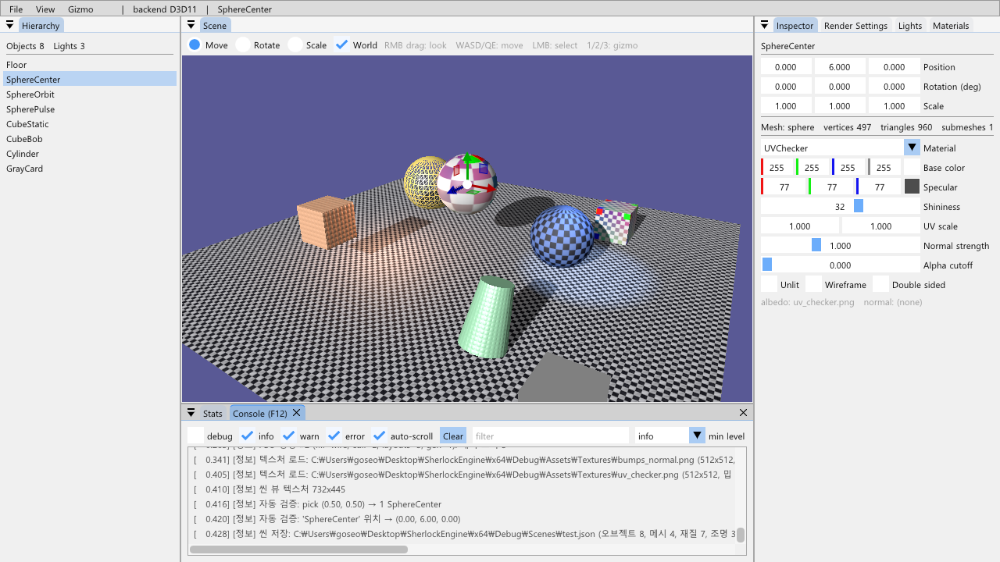
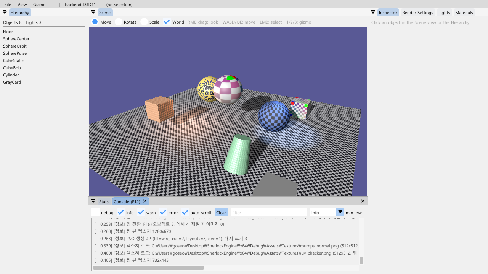
Scenes\test.json 을 로드한 화면. 구가 y = 6 에 떠 있고 카메라·조명·재질이 복원됐다. 완료 기준의 "다시 불러올 수 있다".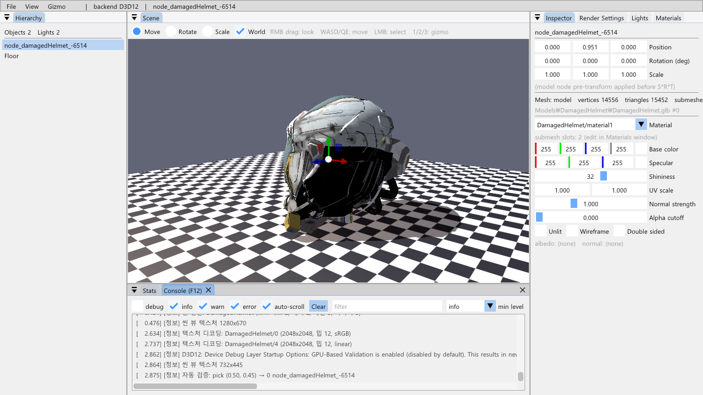
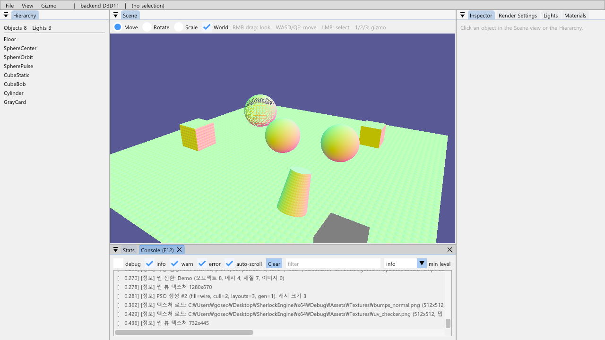
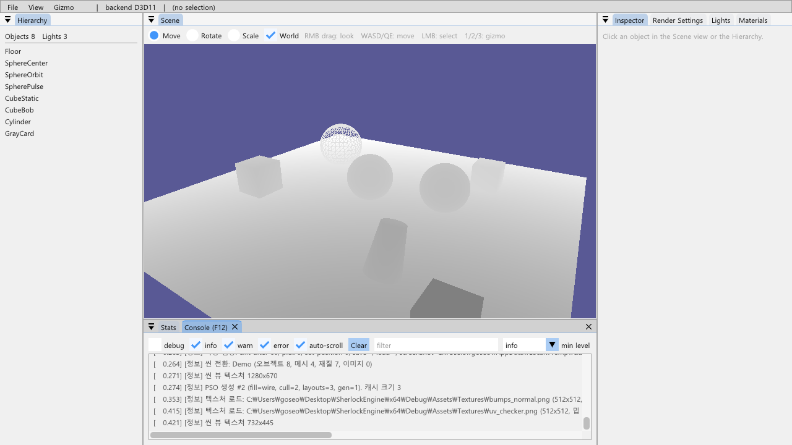
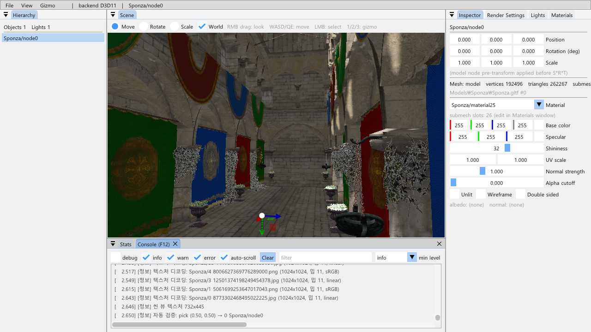
11.참고 문헌
- Cédric Guillemet, ImGuizmo (MIT) — Manipulate(view, proj, op, mode, matrix), SetRect/SetDrawlist/BeginFrame, 열우선 float[16]. github.com/CedricGuillemet/ImGuizmo
- Dear ImGui Wiki, Docking — ImGuiConfigFlags_DockingEnable, DockSpaceOverViewport, 실험 API DockBuilder. github.com/ocornut/imgui/wiki/Docking
- Niels Lohmann, JSON for Modern C++ (MIT) — parse, dump(indent), value(key, default). github.com/nlohmann/json
- Scratchapixel, Ray-Box Intersection — slab 방법. scratchapixel.com/…/ray-box-intersection.html
- Microsoft Learn, XMMatrixDecompose — 스케일·회전 쿼터니언·이동 분해. learn.microsoft.com/…/nf-directxmath-xmmatrixdecompose
- Microsoft Learn, DXGI_FORMAT — TYPELESS 포맷과 뷰 캐스팅 규칙. learn.microsoft.com/…/ne-dxgiformat-dxgi_format
- Microsoft Learn, ID3D11DeviceContext::Map — STAGING 리소스의 READ 매핑은 GPU 를 기다린다. learn.microsoft.com/…/nf-d3d11-id3d11devicecontext-map
- Microsoft Learn, Read back data via a buffer (D3D12) — 리드백 힙, 펜스 대기 뒤 Map, 빈 범위로 Unmap. learn.microsoft.com/…/readback-data-using-heaps
11-B단계 · 콘텐츠 브라우저와 드래그 앤 드롭
11단계 에디터에는 에셋을 보는 창이 없었습니다. 모델은 File 메뉴의 고정 항목으로만 불러오고 새 오브젝트는 원점에만 생겼습니다. 이 단계에서는 상용 엔진의 콘텐츠 브라우저처럼 Assets\ 폴더를 폴더 트리 + 타일 그리드로 보여 줍니다. 타일을 Scene 뷰로 끌어다 놓으면 모델은 커서 아래 표면(오브젝트 AABB 또는 바닥면)에 배치되고, 씬 파일은 로드되며, 오브젝트에 놓은 텍스처는 그 재질의 알베도가 됩니다.
브라우저는 파일 시스템을 읽기만 하고 GPU 자원은 썸네일뿐입니다. 드래그는 ImGui 의 drag & drop 페이로드(POD 구조체 하나)로 전달합니다. 드롭은 Scene 뷰 이미지 아이템의 BeginDragDropTarget 에서 받아 11단계의 선택 광선(Pick)을 그대로 써서 놓을 점을 구하고, 실제 배치는 11단계 콜백 규칙대로 앱(TestApp::PlaceModel)에 넘깁니다. 렌더러에서 바뀐 것은 asset: 텍스처 이름 한 줄뿐입니다.
- TestApp → EditorApp. 2026-09-28 커밋에서
App/EditorApp.h/.cpp로 개명되었습니다. 본문의TestApp::PlaceModel·~TestApp은 지금의EditorApp::PlaceModel·~EditorApp입니다. 상세: rendering-analysis 적용 기록 — TestApp → EditorApp 개명. - SherlockEngine.exe → SherlockEditor.exe. 11-D단계에서 엔진이 정적 라이브러리가 되었습니다. 에디터는
x64\<구성>\SherlockEditor.exe이므로 9절 명령의 exe 이름은 지금SherlockEditor.exe로 읽습니다. 상세: phase-11d 2절. - 경로 규칙. 이 단계 이후 가장 크게 바뀐 것은 에셋 경로입니다(11-E단계 프로젝트 시스템). 2.1절과 10절의 상자를 보십시오.
1.요약
| 항목 | 구현 | 확인 |
|---|---|---|
| 콘텐츠 브라우저 창 | App/ContentBrowser: 툴바(Up·Refresh·검색·타일 크기·Hidden), 폴더 트리, 브레드크럼, 타일 그리드(ListClipper), 상태줄, 우클릭 메뉴(원점에 배치·씬 로드·경로 복사·탐색기), 더블클릭(폴더·씬·모델) | 그림 1·2 |
| 드래그 → Scene 뷰 드롭 | 페이로드 AssetDragPayload{type, relativePath[260]}, Scene 뷰 이미지 뒤 BeginDragDropTarget, 호버 중 고스트 마커(놓일 점 + 모델 AABB), 릴리스 프레임에 HandleAssetDrop | 자동 검증 A·C (9절) |
| 놓을 점 | Editor::RaycastScene: 광선이 오브젝트 AABB 에 맞으면 그 점, 아니면 y = 0 바닥면. 모델은 bounds.min.y 만큼 올려 바닥면이 닿게 | 헬멧 y = 0.90 (바닥), Sponza 표면 위 y = 2.49 |
| 텍스처 썸네일 | TextureLoader::LoadThumbnail(DirectXTex Resize, UNORM), 브라우저가 소유하는 텍스처 캐시, 보이는 타일만·프레임당 1장 | 그림 3 (Sponza 70장 폴더), Stats 의 렌더러 텍스처 수 불변 |
| 텍스처 이름 규칙 | Textures\x.png → "x.png"(기존), 그 밖은 "asset:<상대 경로>" — Renderer::GetOrLoadTexture 가 접두어를 푼다 | Sponza 이미지를 구에 드롭 (그림 5) |
| 두 백엔드 | Device 의 CreateTexture/DestroyTexture/GetImGuiTextureId 만 쓴다 | 그림 4 (D3D12) |
2.콘텐츠 브라우저 창
2.1 에셋 루트와 열거
Paths::GetAssetRoot() 가 새로 생겼습니다. 11단계 GetSceneDir() 과 같은 마커(exe\..\..\SherlockEngine\Assets\Config\engine.ini)로 소스 트리를 찾아 저장소의 Assets\ 를 보여 주고, 없으면(배포) exe\Assets\ 를 씁니다. 그래서 브라우저에서 보이는 파일이 곧 저장소의 파일이고, 브라우저가 놓은 모델 경로(Models\DamagedHelmet\DamagedHelmet.glb)는 AssetManager::GetModel 과 씬 파일의 MeshSource::modelPath 가 쓰는 상대 경로 그대로입니다.
열거에는 C++17 std::filesystem 을 쓰고, 예외를 던지지 않는 error_code 오버로드만 씁니다(정션·잠긴 파일·긴 경로). 정렬은 폴더가 먼저이고, 이름은 대소문자를 무시합니다. 라벨은 Log::ToUtf8 로 한 번만 변환해 둡니다(한글 경로). 분류는 확장자로: .gltf/.glb Model, .png/.jpg/.jpeg/.bmp/.dds/.tga Texture, Scenes\ 아래 .json Scene, 나머지 Other. .bin/.ini/.log 는 숨김이라 Sponza.bin·engine.ini 가 그리드를 어지럽히지 않습니다(Hidden 토글로 회색 표시). 폴더 수정 시각을 1초마다 비교하므로, 탐색기에서 파일을 넣으면 저절로 다시 읽습니다.
- 에셋 루트가 둘로 나뉨 — 11-E단계.
Paths::GetAssetRoot()는 이제 프로젝트의Assets\를 돌려줍니다. 프로젝트가 없을 때만 엔진 쪽을 씁니다. 엔진 쪽은 별도 함수Paths::GetEngineAssetRoot()(<엔진 루트>\Assets\, 없으면exe\Assets\)로 분리되었습니다(Core/Paths.cpp). - 브라우저 트리의 루트 두 개. 그래서 콘텐츠 브라우저의 트리는 루트가
"Project"(GetAssetRoot)와"Engine"(GetEngineAssetRoot) 두 개입니다. 프로젝트가 없으면"Engine (no project)"하나입니다(ContentBrowser::RefreshRoots). - 씬 폴더. 위에서 말한
GetSceneDir()도 이제 마커로 소스 트리를 찾지 않습니다.GetAssetRoot() + L"Scenes\\", 즉 프로젝트의Assets\Scenes\입니다. - 상대 경로 규칙은 그대로입니다. 브라우저가 실어 보내는 경로는 여전히 Assets 기준 상대 경로이고, 그 경로를 프로젝트와 엔진 중 어디에서 찾을지는
GetAssetPath가 정합니다(10절 상자). 상세: phase-11e 3절.
2.2 타일 그리드와 아이콘
타일 하나는 InvisibleButton 하나입니다 — 호버·클릭·더블클릭·드래그 소스·컨텍스트 메뉴가 전부 그 아이템에 붙고, 그림(배경·썸네일 또는 아이콘·확장자 배지·잘라낸 라벨)은 ImDrawList 로 그 위에 그립니다. 행은 ImGuiListClipper 로 보이는 것만 제출하므로 썸네일 요청도 보이는 타일에서만 나옵니다. 아이콘은 에셋 파일 없이 ImDrawList 도형으로 그립니다: 폴더(탭 + 몸통), 모델(등각 정육면체 세 면), 씬(문서 + 줄 + 작은 큐브), 텍스처 자리표시자(체커 4칸).
3.드래그 페이로드
// ImGui 가 memcpy 로 복사하므로 POD 고정 크기. 16B 를 넘으면 힙 버퍼에 복사되어 크기 제한은 사실상 없다 [1]
struct AssetDragPayload { AssetType type; wchar_t relativePath[260]; }; // ≈524 B
constexpr const char* kAssetPayloadType = "SHERLOCK_ASSET";
// 소스 (타일의 InvisibleButton 직후)
if (ImGui::BeginDragDropSource()) {
ImGui::SetDragDropPayload(kAssetPayloadType, &payload, sizeof(payload), ImGuiCond_Once);
/* 미리보기: 썸네일/아이콘 + 이름 + 타입 */
if (ImGui::IsKeyPressed(ImGuiKey_Escape)) m_dragCancelled = true; // ImGui 에는 Esc 취소가 없다
ImGui::EndDragDropSource(); }페이로드 타입 문자열 하나에 구조체 하나 — 받는 쪽은 type 으로 분기합니다. 절대 경로가 아니라 Assets 기준 상대 경로를 실어, 그대로 AssetManager·MeshSource·Paths::GetAssetPath 에 넘길 수 있습니다. 받는 쪽은 DataSize == sizeof(AssetDragPayload) 를 확인하고 마지막 문자를 0 으로 막습니다. 폴더·Other·260자 이상 경로는 드래그 소스를 만들지 않습니다.
4.Scene 뷰 드롭: 광선과 바닥면
드롭 타깃은 씬 뷰 ImGui::Image 아이템 바로 뒤(기즈모 앞)에 있어야 합니다. AcceptBeforeDelivery 플래그로 호버 중 매 프레임 페이로드를 받아 고스트 마커를 그리고, IsDelivery() 인 프레임(마우스 릴리스)에만 실제로 놓습니다.
if (ImGui::BeginDragDropTarget()) {
const ImGuiPayload* p = ImGui::AcceptDragDropPayload(kAssetPayloadType, AcceptBeforeDelivery | AcceptNoDrawDefaultRect);
if (p && p->DataSize == sizeof(AssetDragPayload) && !m_contentBrowser.IsDragCancelled()) {
u, v ← (mouse − imagePos) / size;
const int hitObject = RaycastScene(scene, camera, u, v, point); // AABB 히트점 또는 y=0 바닥
DrawDropGhost(...); // 테두리, 점·십자, 모델 AABB, 라벨
if (p->IsDelivery()) HandleAssetDrop(engine, callbacks, asset, point, hitObject);
}
ImGui::EndDragDropTarget(); }11단계의 Pick 은 픽셀→광선 변환이 함수 안에 들어 있었고 히트 거리를 돌려주지 않았습니다. 그 여섯 줄을 ScreenToRay(camera, u, v) 로 분리하고 Pick 에 float* outDistance 를 더했습니다(bestT 는 이미 월드 거리). RaycastScene 은 Pick 이 맞으면 origin + direction × t 를, 아니면 y = 0 평면과의 교점 t = −o.y / d.y(앞쪽일 때만)를, 둘 다 아니면(하늘을 보며 놓음) 광선 위 10 단위 점을 돌려줍니다. --drop-uv 자동 검증도 같은 함수를 씁니다.
고스트 마커는 히트점을 XMVector3Transform(Coord 가 아님 — w 를 남겨 카메라 뒤의 점을 거른다)으로 투영해 씬 뷰 좌표로 바꾸고, 점·바닥면 십자·라벨("DamagedHelmet → (x, y, z) on Floor")을 그립니다. 모델이면 AssetManager::IsModelCached 일 때만 놓일 자리의 AABB 12 모서리를 그립니다 — 호버 중에 GetModel 을 부르면 Sponza 를 몇 초 동안 파싱하게 됩니다. 드래그 중에는 ImGuizmo::Enable(false) 로 기즈모를 끄고, 클릭 선택도 건너뜁니다.
5.모델 배치: PlaceModel
에디터는 11단계 규칙대로 씬을 바꾸지 않고 콜백 Editor::Callbacks::placeModel(relativePath, position) 으로 앱에 넘깁니다. TestApp::PlaceModel 은 AddPrimitive 의 형제입니다.
const Model* model = assets.GetModel(relativePath); // 첫 드롭은 동기 파싱, 두 번째부터 캐시
Transform placement;
placement.SetPosition(position.x, position.y - model->bounds.min.y, position.z); // 바닥면이 놓은 점에 닿게 (9단계 헬멧 씬 규칙)
const size_t created = scene.AddModel(*model, placement); // 노드마다 GameObject, pre-transform = 노드 행렬
// 이름 "DamagedHelmet 1", 노드가 여럿이면 "Sponza 1/<노드>". 마지막 오브젝트 선택. 씬 모드는 그대로 (아래).씬 모드는 바꾸지 않습니다. 처음에는 AddPrimitive 처럼 Demo → File 로 바꿨는데, 그러면 데모 씬에 헬멧을 놓는 순간 OnUpdate 의 애니메이션(Demo 모드에서만 돈다)이 멈춥니다. 오브젝트를 끝에 추가하는 것은 애니메이션 인덱스(m_orbitSphere 등)를 건드리지 않으므로 모드를 전환할 이유가 없습니다. 인덱스를 밀어내는 것은 삭제뿐이므로 DeleteObject 에서만 File 로 바꿉니다. AddPrimitive 도 같은 이유로 모드를 유지하게 고쳤습니다.
Scene::AddModel(const Model&) 은 캐시 모델의 메시·재질·이미지를 복사합니다(10단계). 같은 모델을 두 번 놓으면 CPU 메시와 GPU 버퍼가 두 벌이 됩니다. 헬멧 두 개(그림 2)는 문제없지만, Sponza 를 여러 번 놓는 경우는 다음 단계의 메시 공유(12절)로 미룹니다. 저장 쪽은 바꿀 것이 없습니다 — MeshSource::FromModel(path, index) 가 이미 경로로 저장하고, 로드할 때 AssetManager 에서 다시 받습니다(자동 검증 B).
- 이름과 선택 — 11-F단계. 스니펫 주석의 "노드가 여럿이면
Sponza 1/<노드>. 마지막 오브젝트 선택" 은 지금과 다릅니다. 유효한 노드가 둘 이상이면Scene::AddModel이 먼저 빈 루트 오브젝트를 만듭니다. 놓은 Transform 은 그 루트가 받고, 노드들은 루트의 자식이 되어 로컬 값으로 노드 pre-transform 만 가집니다.EditorApp::PlaceModel은 루트의 이름을"<파일명> N"으로 바꾸고, 자식은 노드 이름을 그대로 씁니다. 예전의/<노드>접두어는 트리에서 중복이라 뺐습니다. 선택되는 것은 마지막 오브젝트가 아니라 루트(노드가 하나면 그 오브젝트)이므로, 기즈모로 모델 전체를 옮길 수 있습니다. 상세: phase-11f 7절. - 데모 애니메이션 — 11-C단계. 위 문단의
m_orbitSphere같은 애니메이션 인덱스는 더 이상 코드에 없습니다. 인덱스로 위치를 직접 쓰던 하드코딩 애니메이션(공전·진동 등)은 없어졌습니다. 지금 데모 씬의 움직임은 오브젝트에 붙은 컴포넌트(Rigidbody·PlayerController·Rotator)가 만들고, 이 컴포넌트는 재생(Play) 중에만 돕니다.OnUpdate에 남은 자동 움직임은 F7 로 켜는 방향광 회전(m_lightOrbit) 하나입니다. "삭제할 때만 Demo → File 로 바꾼다" 는 규칙은 지금도EditorApp::DeleteObject에 그대로 있습니다. 상세: phase-11c 2절.
6.텍스처 썸네일
// TextureLoader::LoadThumbnail — 밉 0 만, 긴 변이 maxSize 를 넘으면 DirectXTex Resize [2], 블록 압축 DDS 는 Decompress 먼저
bool LoadThumbnail(const std::wstring& path, uint32_t maxSize, TextureImage& out); // srgb=false → R8G8B8A8_UNORM 라벨왜 UNORM 인가: 11단계 씬 뷰 텍스처와 같은 이유입니다. UI 패스는 백버퍼의 UNORM 뷰에 그리고 ImGui 는 픽셀을 그대로 옮기므로, 파일의 sRGB 바이트를 sRGB 라벨로 만들면 샘플할 때 선형으로 풀려 화면에서 두 번 인코딩되어 바랩니다. 밉맵도 만들지 않습니다(128px 를 96px 타일에 그리므로 축소비가 작다).
캐시는 브라우저가 소유합니다(상대 경로 → {TextureHandle, failed, lastUsedFrame}). 렌더러의 m_textureCache 에 넣지 않는 것은 Renderer::InvalidateScene(…, true) 가 씬을 바꿀 때마다 파일 텍스처를 전부 지우기 때문입니다. 타일이 처음 보이면 자리표시자를 넣고 큐에 올린 뒤, Draw 시작 시점에 프레임당 한 장만 디코딩합니다 — 2048² JPEG 디코드+축소가 10~30 ms 라 한 장씩이면 히치가 한 프레임에 그치고 Sponza 70장 폴더는 1초 남짓에 채워집니다. 스크롤로 사라진 타일은 큐에서 건너뛰고(다시 보이면 재요청), 상한 256 장(128² RGBA 64 KB × 256 = 16 MB)을 넘으면 오래 안 쓴 것부터 DestroyTexture 합니다 — D3D12 의 shader-visible SRV 힙(4096, GetImGuiTextureId 가 텍스처마다 하나 잡는다)도 그래서 안전합니다. 소멸자가 마지막 Draw 의 Device 로 전부 파괴합니다: ~TestApp(→ Editor → 브라우저)이 AppBase 의 Engine::Shutdown 보다 먼저 실행됩니다.
7.텍스처 드롭과 asset: 이름
재질의 텍스처는 5단계부터 Assets\Textures\ 기준 파일명("uv_checker.png")이었습니다. Sponza 의 이미지 70장은 Models\Sponza\ 에 있어 이 규칙으로는 못 씁니다. 그래서 Renderer::GetOrLoadTexture 의 파일 분기에 접두어 하나를 더했습니다:
const std::wstring path = name.rfind("asset:", 0) == 0
? Paths::GetAssetPath(ToWide(name.substr(6)).c_str()) // "asset:Models\Sponza\lion.png"
: Paths::GetAssetPath((L"Textures\\" + ToWide(name)).c_str()); // "uv_checker.png" (기존)ContentBrowser::ToMaterialTextureName 이 이 규칙에 따라 이름을 만듭니다: Textures\ 바로 아래면 파일명만(예전 씬 파일과 같은 형태), 아니면 asset: + 상대 경로. SceneSerializer 는 이름을 그대로 저장하므로 바꿀 것이 없고, 재질 이름이 바뀌면 GetOrCreateGpuMaterial 이 다음 프레임에 ResourceSet 을 다시 만드므로 무효화 호출도 없습니다. 드롭은 광선이 맞은 오브젝트의 재질 알베도에 들어갑니다. 재질은 공유될 수 있으므로(프리미티브의 "Default") 같은 재질을 쓰는 오브젝트가 함께 바뀌고, 이를 메뉴 바 메시지로 알립니다. 서브메시 슬롯 재질을 쓰는 모델 오브젝트는 material 이 그리기에 쓰이지 않으므로 드롭을 받지 않고 Materials 창으로 안내합니다.
8.도킹 배치와 imgui.ini
BuildDefaultLayout 은 "Content Browser" 를 Console/Stats 와 같은 하단 노드에 넣고, 3 프레임 동안 SetWindowFocus 를 불러 활성 탭으로 만듭니다(첫 프레임에는 뒤에 처음 나타나는 Console 창이 포커스를 가져가므로 한 프레임으로는 부족합니다). 문제는 저장소에서 추적 중인 SherlockEngine\imgui.ini 입니다 — 11단계 레이아웃이 들어 있고 이 창의 항목이 없어서, 그대로 두면 새 창이 도킹되지 않고 떠다닙니다. 두 가지로 해결했습니다: (1) DrawContentBrowser 가 FindWindowByName("Stats")->DockId 로 SetNextWindowDockID(…, ImGuiCond_FirstUseEver) 를 걸어 ini 에 항목이 없는 첫 실행에 Stats 옆 탭으로 붙입니다(항목이 생긴 뒤에는 사용자가 옮긴 자리를 존중), (2) 추적 중인 ini 에 [Window][Content Browser] DockId=0x00000006,1 블록을 넣었습니다. 도킹 공간 ID 는 바꾸지 않았습니다 — 바꾸면 모든 사용자의 노드 트리가 버려집니다.
9.자동 검증
11단계의 실행 인자 방식 그대로입니다. 새 인자는 씬 뷰 드롭과 같은 코드 경로(PlaceModel, RaycastScene, ToMaterialTextureName)를 지납니다.
# A: 새 씬, 헬멧을 (2, 0, −1) 에 드롭 → 이름·위치 덤프 → 저장 → 스크린샷
SherlockEngine.exe --exit-after=40 --new-scene=1 "--drop=Models\DamagedHelmet\DamagedHelmet.glb;2,0,-1" --dump-objects=1 --save=drop_helmet.json --screenshot=...
# B: 재시작해서 로드 → 같은 이름·위치 (2, 0.90, −1)
SherlockEngine.exe --exit-after=30 --load=drop_helmet.json --dump-objects=1
# C: 씬 뷰 (0.5, 0.5) 광선의 히트점에 드롭 (바닥면 또는 Sponza 표면)
SherlockEngine.exe --exit-after=30 --new-scene=1 "--drop=Models\DamagedHelmet\DamagedHelmet.glb;0,0,0" --drop-uv=0.5,0.5 --dump-objects=1
# D: 선택 오브젝트 재질 알베도 ← 텍스처 (Textures\ 규칙 / asset: 규칙)
SherlockEngine.exe --exit-after=30 --new-scene=1 --add=1 "--drop-texture=Textures\uv_checker.png" --dump-objects=1
SherlockEngine.exe --exit-after=30 --new-scene=1 --add=0 "--drop-texture=Models\Sponza\16275776544635328252.png" --dump-objects=1
# E: 브라우저를 폴더로 이동해 활성 탭으로 → 썸네일이 채워진 뒤 스크린샷. --backend=d3d12 로 같은 것
SherlockEngine.exe --exit-after=150 --scene=helmet "--browse=Models\Sponza" --screenshot=...10.함정과 해결
- 드래그 중
IsItemHovered()는 false. ImGui 는 활성 소스 아이템이 있는 동안 다른 아이템의 호버를 막습니다. 그래서m_sceneHovered가 드래그 중 저절로 false 가 되어 RMB 카메라 룩은 시작되지 않지만, 드롭 판정을 호버에 걸면 절대 성립하지 않습니다 —BeginDragDropTarget/AcceptDragDropPayload만이 소스를 뚫고 봅니다. 카메라 쪽에는IsAssetDragActive()검사를 명시해 두었습니다(IsDragDropActive는 internal 이라GetDragDropPayload()로 판단). - Esc 취소가 없다. ImGui 에는 드래그 취소 키가 없습니다. 소스에서 Esc 를 보고 플래그를 세우고, 타깃은 그 플래그가 참이면 받지 않으며, 마우스를 놓으면 플래그가 풀립니다.
- 마지막 아이템 ID.
BeginDragDropSource·BeginPopupContextItem은 "마지막 아이템" 을 씁니다. 툴팁 창(SetTooltip)이 그것을 바꾸므로 순서는 InvisibleButton → 드래그 소스 → 컨텍스트 메뉴 → 툴팁. - 첫 프레임 포커스. 8절. 같은 프레임에 뒤에서 처음 나타난 창이 포커스를 가져간다. 3 프레임 반복.
- 썸네일 색공간. 6절. sRGB 라벨을 붙이면 UNORM 백버퍼 뷰에서 두 번 인코딩된다. UNORM 으로.
- 호버 중 모델 파싱. 4절. AABB 고스트는
IsModelCached일 때만. 첫 드롭의 동기 파싱(Sponza 수 초)은 이번 범위에서 그대로 두고 로그로 알린다. GetAssetPath는 exe 사본 우선. 브라우저는 소스 트리를 보여 주지만 로드는 exe 옆 사본이 먼저다. 소스 트리에서 수정한 파일은 다음 빌드(CopyAssets)까지 옛 것이 읽히고, 추가한 파일은 폴백으로 바로 보인다.Paths.h주석에 적어 두었다.정정 (2026-10-01 점검): 11-E단계부터 이 순서는 반대입니다. 지금GetAssetPath는 프로젝트Assets\→ 엔진 소스Assets\→exe\Assets\사본 순서로 찾습니다. 소스 트리에서 수정한 파일은 빌드 없이 바로 읽히고, exe 사본은 소스 트리가 없을 때(배포)만 쓰입니다. 아래 상자를 보십시오.- MSYS 인자 변환. Git Bash 에서
msbuild /p:Configuration=Debug의/p:가 경로로 바뀌어 "프로젝트를 하나만 지정할 수 있습니다" 오류가 났다. PowerShell 로 빌드한다.
- "
GetAssetPath는 exe 사본 우선" 은 지금 코드와 정반대입니다. 이 서술은 11-B단계(2026-09-23) 당시에는 맞았습니다. 그때GetAssetPath는exe\Assets\를 먼저 보고exe\..\..\SherlockEngine\Assets\로 폴백했습니다. 11-E단계(2026-09-24)의 프로젝트 시스템에서 순서가 뒤집혔습니다. - 현재 순서(
Core/Paths.cpp의Paths::GetAssetPath):- 프로젝트가 있으면
<프로젝트>\Assets\<rel> GetEngineAssetRoot()의<rel>, 즉 엔진 소스 트리의Assets\(소스 트리가 없으면exe\Assets\)exe\Assets\<rel>
Paths.h의 주석도 이 순서로 고쳐져 있습니다. - 프로젝트가 있으면
- 결과. 개발 환경에서는 소스 트리의 파일이 exe 옆 사본(CopyAssets)보다 먼저 읽힙니다. 따라서 "수정한 파일은 다음 빌드까지 옛 것이 읽힌다" 는 함정은 더 이상 생기지 않습니다. exe 사본은 소스 트리가 없는 배포·빌드 폴더에서만 쓰이고, 그 경우 엔진 루트가 exe 폴더이므로 2번과 3번이 같은 곳이 됩니다. 같은 상대 경로가 프로젝트와 엔진 양쪽에 있으면 프로젝트 것이 이깁니다. 상세: phase-11e 3절.
11.검증과 스크린샷
- 완료 기준 "브라우저의 모델을 Scene 뷰에 끌어다 놓으면 커서 아래에 놓이고, 저장한 씬을 다시 불러오면 그 자리에 있다" — A: 로그 "모델 배치: DamagedHelmet 1 ×1 at (2.00, 0.00, −1.00)", 덤프
DamagedHelmet 1위치 (2.00, 0.90, −1.00) = 놓은 점 + (−bounds.min.y 0.90),Assets\Scenes\drop_helmet.json저장(오브젝트 2, 메시 2, 재질 3). B: 새 프로세스 로드 → 같은 이름·위치 복원. - C (바닥면): 새 씬, (0.5, 0.5) → 히트 (−2.57, 0.00, 4.00) Floor, 배치 y = 0.90. C (오브젝트 표면, Release Sponza): (0.5, 0.6) → 히트 (6.11, 1.59, 1.39)
Sponza/node0, 배치 y = 2.49 — 헬멧이 Sponza 바닥 위에 선다 (그림 6). - D: 큐브 재질 "Default" 알베도 →
uv_checker.png, 텍스처 로드 로그Assets\Textures\uv_checker.png(그림 5 왼쪽 규칙). 구 재질 알베도 →asset:Models\Sponza\16275776544635328252.png, 로드 로그Assets\Models\Sponza\…png (1024x1024)— 접두어 분기 확인. - E: Sponza 폴더 70 items, 보이는 타일 4장만 썸네일 로드("thumbnails 4"), 렌더러 텍스처 수 불변. D3D11·D3D12 같은 화면 (그림 3·4). Debug Layer 메시지 0 (종료 시 Live Device Refcount 3 은 1단계부터 있던 것).
- 기본 배치:
imgui.ini없이 실행 → 새 ini 에[Window][Content Browser] DockId=0x00000006,1(하단 노드). 추적 중인 ini 에도 같은 블록 추가. - Debug·Release 빌드 경고 0, 오류 0. 새 파일
App/ContentBrowser.h/.cpp를 vcxproj·filters 에 추가.
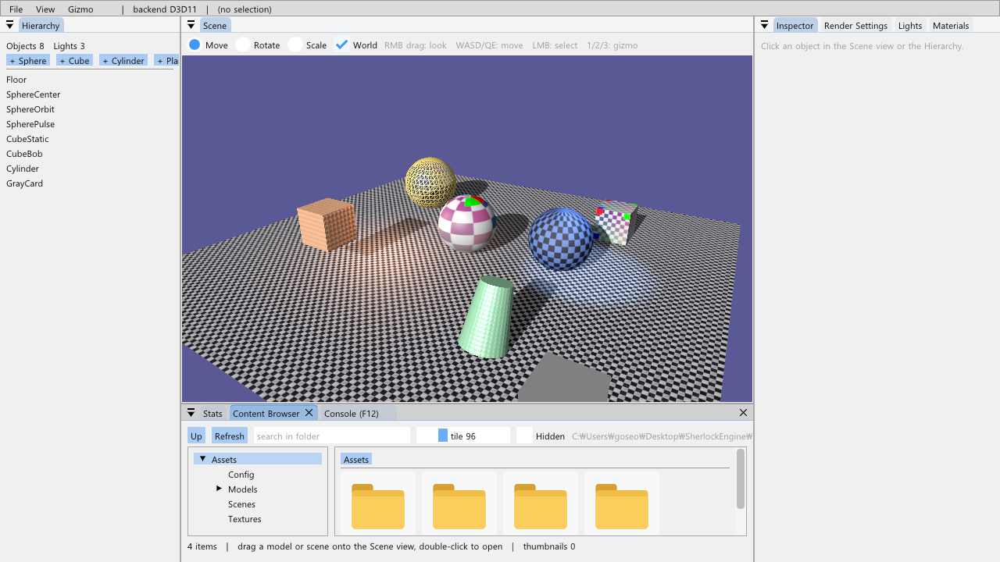
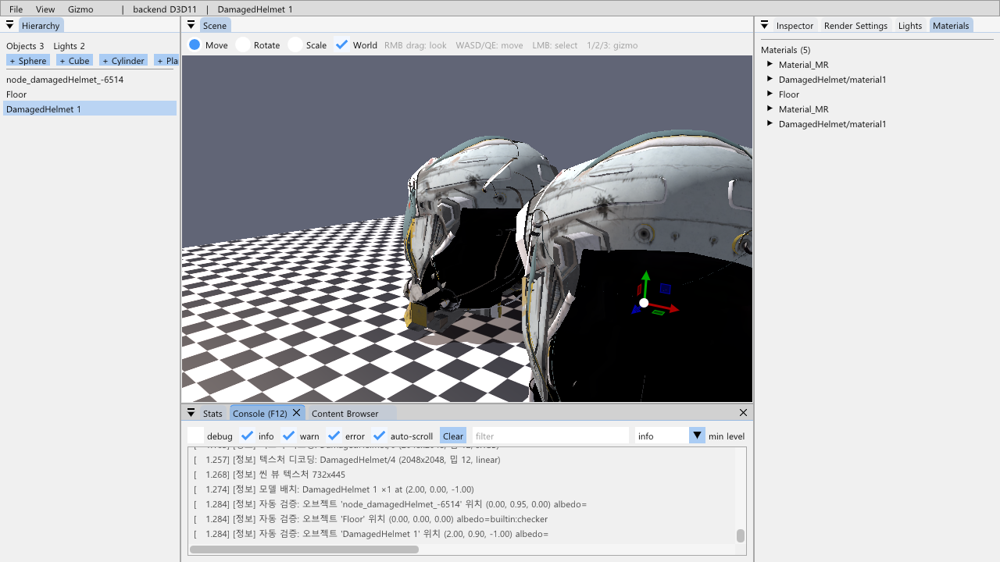
DamagedHelmet.glb 를 (2, 0, −1) 에 드롭한 뒤. 새 오브젝트 "DamagedHelmet 1" 이 바닥 위(y = 0.90)에 서고 선택된다. 메시·재질은 복사되어 Materials 가 5개.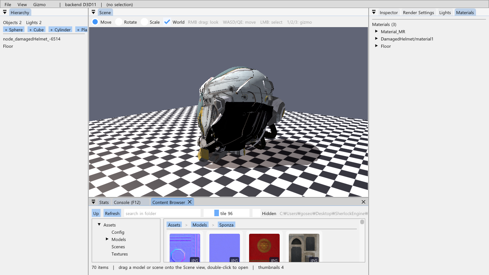
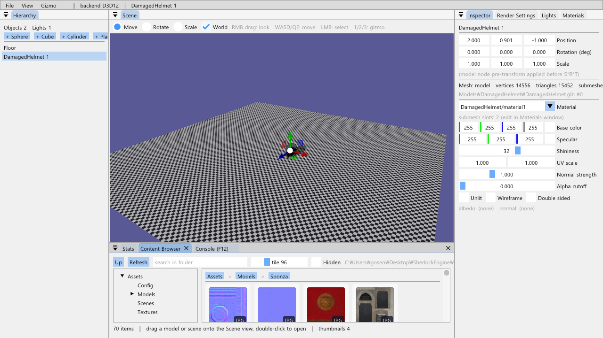
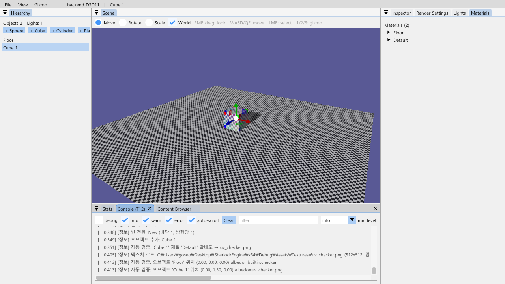
uv_checker.png 가 됐다. 콘솔에 이름 규칙과 텍스처 로드 로그.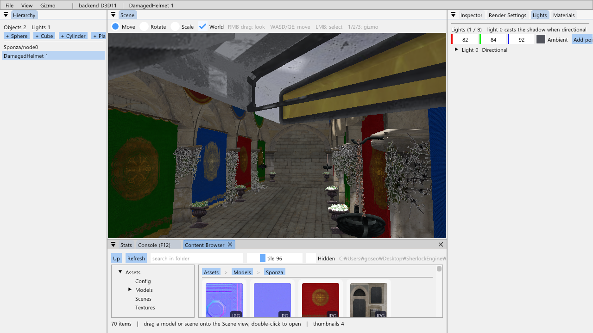
12.다음 단계
- 메시 공유.
Scene::AddModel이 드롭마다 복사한다.MeshSource(경로 + 인덱스)로 같은 메시를 씬 안에서 재사용하면 같은 모델 N 개가 GPU 버퍼 한 벌이 된다 — 12단계 인스턴싱의 전제이기도 하다. - 비동기 로드. 첫 드롭의 동기 파싱(Sponza 수 초). 스레드에서 파싱해 자리표시자를 먼저 놓는다.
- Hierarchy·Inspector 드롭, 브라우저 안 파일 이동, 모델 썸네일(오프스크린 렌더). 이번 범위에서 뺀 것. 페이로드와
HandleAssetDrop이 그대로 쓰인다. - 되돌리기(Undo). 드롭·삭제·기즈모 편집이 모두 즉시 적용된다. 명령 스택이 필요해지는 첫 지점.
13.참고 문헌
- Dear ImGui, imgui.h — Drag and Drop — BeginDragDropSource/SetDragDropPayload(힙 복사)/BeginDragDropTarget/AcceptDragDropPayload, ImGuiDragDropFlags_AcceptBeforeDelivery·AcceptNoDrawDefaultRect, ImGuiPayload::IsDelivery. github.com/ocornut/imgui/blob/master/imgui.h
- Microsoft, DirectXTex — Resize / Decompress — 이미지 축소 필터와 블록 압축 해제. github.com/microsoft/DirectXTex/wiki/Resize
- cppreference, std::filesystem::directory_iterator — error_code 오버로드. en.cppreference.com/w/cpp/filesystem/directory_iterator
- Dear ImGui Wiki, Docking — SetNextWindowDockID, ImGuiCond_FirstUseEver, DockBuilder. github.com/ocornut/imgui/wiki/Docking
- Dear ImGui, ImGuiListClipper — 보이는 행만 제출. imgui.h
11-C단계 · 재생 모드와 C++ 컴포넌트
언리얼의 Play In Editor 처럼, 씬 뷰의 Play 를 눌러야 게임이 돕니다. 오브젝트의 로직은 Game/ 폴더의 C++ 클래스(Behaviour)이고, Visual Studio 에서 클래스를 하나 추가해 빌드하면 Inspector 의 "Add Component" 목록에 나타나고, 씬 파일에는 이름으로 저장됩니다. Stop 은 재생 전 스냅샷으로 되돌리므로 재생 중에 바뀐 것이 편집 중인 씬에 남지 않습니다.
게임 로직은 Behaviour 를 상속한 C++ 클래스이고, SHERLOCK_BEHAVIOUR(클래스) 한 줄이 이름 → 생성 함수를 레지스트리에 등록합니다. Reflect(PropertyVisitor&) 가 열거한 필드를 SceneSerializer 는 JSON 으로, Editor 는 ImGui 위젯으로 씁니다(Scene 계층은 ImGui 를 모릅니다). Play 는 씬+카메라를 JSON 문자열로 스냅샷한 뒤 Scene::BeginPlay 를 부르고, Stop 은 그 문자열을 다시 로드합니다 — 11단계 SceneSerializer 위에 얹은 구조라 재생을 위해 렌더러를 고친 곳은 없습니다.
이 문서는 2026-09-23 작업 트리 기준입니다. 여러 절에 되풀이되는 변경은 여기서 한 번에 안내하고, 절마다 다른 변경은 해당 절의 상자(3.1·3.2·3.4·7절)에 적었습니다.
- TestApp → EditorApp. 2026-09-28(커밋
11a74a5)에 에디터 앱 클래스 이름이 바뀌었습니다. 본문의TestApp::StartPlay/StopPlay/TogglePause/StepFrame,TestApp::UpdateCamera,TestApp::m_playState, 3.3절의TestApp.cpp(데모 씬 구성) 등은 지금App/EditorApp.h·App/EditorApp.cpp의EditorApp::…입니다. 멤버 이름(m_playState,m_timeScale,m_stepOnce,m_playSnapshot)은 그대로입니다. 2절의TestApp::OnUpdate는 11-C 이전 상태를 설명하는 문장이라 당시 이름으로 읽으면 됩니다. - 실행 파일 이름. 11-D단계(2026-09-23)에서 프로젝트를 셋으로 나누면서 9절 명령의
SherlockEngine.exe는SherlockEditor.exe(x64\Debug\)가 되었습니다. 인자는 그대로입니다. phase-11d 6절. - 스크립트 위치. lede·요약 카드·3절·7절의
Game/Scripts/는 11-E단계(2026-09-24)에서 Sample 프로젝트로 옮겨져 지금Projects/Sample/Scripts/(PlayerController·Rotator)입니다. 엔진의SherlockEngine/Game/에는Components/(Rigidbody·FollowTarget)만 남았습니다. phase-11e 4절. - 씬 파일 버전. 요약 카드·1절·7.1절의 "버전 2" 는 11-F단계(2026-09-29)에서
"parent"필드가 더해져 지금 버전 3입니다(Scene/SceneSerializer.cpp의kVersion = 3). 버전 1·2 파일도 그대로 읽힙니다. phase-11f.
1.요약
| 항목 | 구현 | 확인 |
|---|---|---|
| Play / Pause / Step / Stop | 씬 뷰 툴바 버튼 + 시간 배율 슬라이더, Ctrl+P, F10(일시정지). TestApp::StartPlay/StopPlay/TogglePause/StepFrame | 자동 검증 A·B (9절), 그림 1·2 |
| C++ 스크립트 / 컴포넌트 | Scene/Behaviour.h: Behaviour(Start/Update/FixedUpdate/Reflect), PropertyVisitor, BehaviourRegistry. Scene/Script.h: 사용자 스크립트의 기반 클래스(MonoBehaviour) — Translate/Rotate/LookAt/GetInput/Find/GetComponent 헬퍼, SHERLOCK_SCRIPT 매크로. 엔진 컴포넌트는 SHERLOCK_BEHAVIOUR | Inspector 의 Add Component 가 Scripts / Components 로 나뉘어 뜬다 |
| 재생 루프 | Scene::BeginPlay(input, camera) → 매 프레임 Update(dt×배율), 고정 스텝마다 FixedUpdate → EndPlay. 편집 중에는 부르지 않는다 | Play 전 정지, Play 뒤 이동 (그림 2 vs 1) |
| 스냅샷 | SceneSerializer::SaveToString / LoadFromString — 파일 버전과 같은 JSON | Stop 뒤 위치가 정확히 복원 (B) |
| 직렬화 | 오브젝트마다 "components": [{"type","enabled", …Reflect 필드}], 버전 2 (버전 1도 읽힘) | 저장 → 재시작 로드에서 컴포넌트 복원 (C) |
| 기본 제공 | 엔진 컴포넌트: Rigidbody(중력·바닥 반발·AddImpulse), FollowTarget(추적), CameraComponent. 예제 스크립트: PlayerController(방향키 이동 + Space 점프), Rotator(자전 한 줄) | 데모 씬의 움직임을 모두 스크립트로 (7절) |
| 씬 안의 카메라 | Scene/CameraComponent: 카메라 오브젝트("Main Camera")를 기즈모로 배치, 재생 중 priority 가 가장 높은 카메라로 렌더링(Play 시작은 즉시, 재생 도중 전환은 blendTime 보간). Hierarchy "+ Camera", 프러스텀 아이콘, Look through / Align to view, 선택한 카메라의 시점 미리보기(씬 뷰 우측 하단, Renderer PreviewPass) | 자동 검증 E·F (9절), 그림 1·5·6 |
| Inspector | 컴포넌트 목록(enabled 체크·삭제·필드 편집), Add Component 콤보, 재생 중 배너 | 그림 3 |
2.왜 필요했나: 켜자마자 움직이는 씬
11단계까지 데모 씬의 공전·진동·회전·맥동은 TestApp::OnUpdate 가 오브젝트 인덱스(m_orbitSphere 등)로 직접 위치를 쓰는 하드코딩이었습니다. 앱을 켜면 바로 움직였고, 오브젝트에는 "로직" 이라는 개념이 없어 사용자가 새 움직임을 붙일 방법도 없었습니다. 상용 엔진은 두 가지를 함께 씁니다: (1) 로직을 오브젝트에 붙는 컴포넌트로 만들고, (2) 에디터가 "편집" 과 "재생" 을 구분해 재생 중에만 로직을 돌리고 끝나면 되돌립니다. 이 단계는 그 둘을 11단계의 콜백 구조와 SceneSerializer 위에 얹습니다.
3.Behaviour: C++ 로 쓰는 오브젝트 로직
3.1 클래스 하나 = 스크립트 하나 (유니티 MonoBehaviour)
오브젝트의 움직임·규칙은 사용자가 직접 씁니다. 언리얼처럼 Game/Scripts/<이름>.h(선언) + .cpp(구현 + SHERLOCK_SCRIPT) 한 쌍이고, Inspector 의 New Script... 가 만들어 줍니다(3.4절). 헤더를 두는 이유는 스크립트끼리 서로 부르기 위해서입니다 — 부착·저장은 레지스트리의 이름으로만 일어나므로 헤더 없이도 되지만, 다른 스크립트가 #include 한 뒤 Find("Cylinder")->GetBehaviour<Rotator>()->Toggle() 처럼 타입으로 접근하려면 선언이 보여야 합니다(PlayerController 가 R 키로 그렇게 합니다). 처음 시안에는 Orbit·Bob·Spin·Pulse 같은 기성 움직임 컴포넌트가 있었지만, "움직임은 내가 짠다" 가 목적이므로 없앴습니다. 대신 그런 움직임에 필요한 조작은 Transform 의 함수(Translate / TranslateLocal / Rotate / LookAt / GetForward)와 Script 의 단축 함수(SetPosition / SetScale / GetInput / GetTime / Find / GetComponent<T>)으로 두어 Update 에서 부릅니다.
// Game/Scripts/Rotator.h — 선언. 다른 스크립트가 include 해서 Toggle/SetSpeed 를 부른다
#pragma once
#include "Scene/Script.h"
class Rotator : public Script
{
public:
const char* GetTypeName() const override; // SHERLOCK_SCRIPT 가 정의 (.cpp)
void Reflect(PropertyVisitor& v) override;
void Update(float dt) override;
void Toggle() { enabled = !enabled; } // 다른 스크립트가 부르는 API
DirectX::XMFLOAT3 degreesPerSecond = DirectX::XMFLOAT3(0.0f, 60.0f, 0.0f);
};
// Game/Scripts/Rotator.cpp — 구현 + 등록. 옛 Spin 컴포넌트가 Rotate 호출 한 줄이 됐다
#include "pch.h"
#include "Game/Scripts/Rotator.h"
void Rotator::Reflect(PropertyVisitor& v) { v.Float3("degreesPerSecond", degreesPerSecond, 1.0f); } // 저장 + Inspector
void Rotator::Update(float dt) { Rotate(XMConvertToRadians(degreesPerSecond.x) * dt, XMConvertToRadians(degreesPerSecond.y) * dt, XMConvertToRadians(degreesPerSecond.z) * dt); }
SHERLOCK_SCRIPT(Rotator) // 이름 "Rotator" 로 등록. 빌드하면 Add Component 의 Scripts 목록에 나타난다
// Game/Scripts/PlayerController.h — 다른 스크립트 참조는 헤더에서 전방 선언, .cpp 에서 include (순환 include 방지)
class Rotator;
class PlayerController : public Script { … std::string rotatorObject = "Cylinder"; Rotator* m_rotator = nullptr; };
// Game/Scripts/PlayerController.cpp — 입력 + 같은 오브젝트의 컴포넌트 + 다른 오브젝트의 스크립트
#include "Game/Scripts/Rotator.h"
#include "Game/Components/Rigidbody.h"
void PlayerController::Start() { if (GameObject* o = Find(rotatorObject)) m_rotator = o->GetBehaviour<Rotator>(); } // 재생마다 다시 찾는다
void PlayerController::Update(float dt)
{
Input& input = GetInput();
if (input.IsKeyDown(VK_LEFT)) Translate(-speed * dt, 0, 0);
if (input.IsKeyPressed(VK_SPACE))
if (Rigidbody* body = GetComponent<Rigidbody>()) if (body->IsGrounded()) body->AddImpulse(0, jumpSpeed, 0);
if (input.IsKeyPressed('R') && m_rotator) m_rotator->Toggle(); // 스크립트 → 스크립트
}스크립트끼리 참조할 때의 규칙: 상대 포인터는 Start 에서 찾아 멤버에 둔다(오브젝트는 unique_ptr 라 재생 중 주소가 안정적). Stop 은 씬을 스냅샷에서 다시 만들므로 이전 재생의 포인터는 무효이고, 재생마다 Start 가 다시 불리니 거기서 다시 찾으면 된다. 상대가 아직 Start 전일 수 있으므로(오브젝트 순서) 상대의 초기화 결과에 의존한다면 첫 Update 에서 찾는다. 헤더끼리는 서로 include 하지 않고 전방 선언 + 포인터를 쓴다.
생명주기는 유니티의 MonoBehaviour 와 같습니다: Start(재생 시작 뒤 첫 프레임, 재생 중 추가된 것도 그 다음 프레임에), Update(dt)(매 프레임, 시간 배율 반영), FixedUpdate(fixedDt)(10단계 고정 스텝 — Rigidbody 가 쓴다). enabled 가 false 면 Update/FixedUpdate 를 받지 않습니다. Script 는 Behaviour(모든 컴포넌트의 기반)의 얇은 하위 클래스로 헬퍼만 더합니다 — 엔진 컴포넌트(Rigidbody·CameraComponent·FollowTarget)는 Behaviour 를 직접 상속하고 SHERLOCK_BEHAVIOUR 로 등록하며, 스크립트에서 GetComponent<Rigidbody>() 로 찾아 쓸 수 있게 헤더(Game/Components/Rigidbody.h)를 갖습니다.
위 코드 조각의 경로는 11-C 당시의 것입니다. 11-E단계(2026-09-24)에서 예제 스크립트가 엔진에서 Sample 프로젝트로 옮겨져, 지금 파일은 Projects/Sample/Scripts/Rotator.h/.cpp 와 Projects/Sample/Scripts/PlayerController.h/.cpp 입니다. 스크립트 폴더가 include 경로에 들어 있으므로(엔진 솔루션의 SherlockEditor.vcxproj·SherlockGame.vcxproj 는 $(SolutionDir)Projects\Sample\Scripts, 생성된 프로젝트 솔루션은 $(ProjectDir)Scripts) 스크립트끼리의 include 에는 폴더를 쓰지 않습니다. Rotator.cpp 와 PlayerController.cpp 는 #include "Rotator.h" 이고, 엔진 컴포넌트는 그대로 #include "Game/Components/Rigidbody.h" 입니다. 클래스 내용과 스크립트끼리 참조하는 규칙은 바뀌지 않았습니다. 새 스크립트가 만들어지는 곳은 3.4절 상자를 보십시오.
3.2 레지스트리와 SHERLOCK_BEHAVIOUR
#define SHERLOCK_BEHAVIOUR(ClassName) \
const char* ClassName::GetTypeName() const { return #ClassName; } \
namespace { struct ClassName##_Registrar { ClassName##_Registrar() { \
BehaviourRegistry::Register(#ClassName, []() { return std::make_unique<ClassName>(); }); } } s_##ClassName##_Registrar; }정적 객체의 생성자가 main 전에 이름 → 생성 함수를 등록합니다. 레지스트리의 map 은 함수 안의 static(Meyers singleton)이라 정적 초기화 순서에 안전합니다. 정적 라이브러리였다면 "참조되지 않은 .obj 의 정적 초기화가 링크에서 빠지는" 함정이 있지만, 이 프로젝트는 컴포넌트가 exe 에 직접 컴파일되므로 해당하지 않습니다 — 게임을 별도 모듈로 나누는 날이 오면 이 지점을 다시 봐야 합니다(12절). GameObject::AddBehaviour("Rotator"), SceneSerializer, Inspector 콤보가 전부 이 레지스트리를 씁니다. SHERLOCK_SCRIPT 는 같은 등록에 "스크립트" 표시를 더해 Inspector 가 Scripts / Components 로 나눠 보여 줍니다.
- 정적 라이브러리 단서. "컴포넌트가 exe 에 직접 컴파일되므로 해당하지 않는다" 는 지금 맞지 않습니다. 11-D단계(2026-09-23)에서 엔진이 정적 라이브러리(
SherlockEngine.vcxproj,StaticLibrary)가 되면서 바로 이 함정이 생겼고, 두 exe 프로젝트의 링커 옵션/WHOLEARCHIVE:SherlockEngine.lib로 막았습니다(phase-11d 2.1절). 11-E 이후 lib 안에 있는 등록은 엔진 컴포넌트(Rigidbody·FollowTarget·CameraComponent)이고, 프로젝트 스크립트는 exe 프로젝트가 직접 컴파일하므로 이 함정과 무관합니다. - 매크로의 실제 모양. 위 스니펫은 축약입니다. 지금
Scene/Behaviour.h에서는SHERLOCK_BEHAVIOUR(C)와SHERLOCK_SCRIPT(C)가 모두SHERLOCK_REGISTER_BEHAVIOUR_(C, IsScript)로 위임하고(각각false·true),BehaviourRegistry::Register는 세 번째 인자bool isScript를 받으며, 람다는 반환형을-> std::unique_ptr<Behaviour>로 적습니다. 이 플래그가 바로 위 문단 끝의 "스크립트 표시" 입니다.
3.3 PropertyVisitor: 저장과 Inspector 를 한 번에
컴포넌트마다 JSON 코드와 ImGui 코드를 따로 쓰게 하면 Scene 계층이 ImGui 를 알게 되고(3단계의 "패널은 편집만, Scene 은 CPU 데이터" 규칙 위반) 필드를 하나 더할 때마다 세 곳을 고쳐야 합니다. 그래서 컴포넌트는 Reflect 에서 필드를 열거만 하고, 방문자가 무엇을 하는지는 모릅니다.
class PropertyVisitor { virtual void Float(name, float&, speed) = 0; Int; Bool; Float3; String; };
// SceneSerializer.cpp — JsonWriteVisitor: m_j[name] = value / JsonReadVisitor: if (contains) value = m_j[name]
// Editor.cpp — ImGuiPropertyVisitor: ImGui::DragFloat(name, &value, speed) …
// TestApp.cpp — 데모 씬 구성은 방문자를 거치지 않고 AddBehaviour 뒤 필드에 초기값을 직접 넣는다 (Rigidbody.initialVelocity)필드를 하나 더하면 Reflect 한 줄로 저장·로드·편집이 같이 생깁니다. 리플렉션(reflection)의 가장 작은 형태입니다.
3.4 에디터에서 새 스크립트 만들기 · 편집
유니티의 Create > C# Script 에 해당합니다. Inspector 의 New Script... 에 클래스 이름을 넣으면 App/ScriptCreator 가 (1) Game/Scripts/<이름>.h(선언: Reflect·Start·Update, 필드)와 <이름>.cpp(구현 골격, 쓸 수 있는 함수 목록 주석, SHERLOCK_SCRIPT)를 템플릿으로 만들고, (2) SherlockEngine.vcxproj 와 .filters 의 마지막 Game\Scripts 항목 뒤에 <ClInclude>·<ClCompile> 줄을 끼워 넣고(줄 끝·BOM 은 파일을 따른다), (3) 두 파일을 연결 프로그램(보통 Visual Studio)으로 엽니다. 결과는 언리얼의 New C++ Class 와 같습니다. 스크립트 컴포넌트 헤더의 Edit 버튼은 그 .h/.cpp 를 바로 엽니다.
에디터는 컴파일하지 않습니다 — C++ 이므로 만들거나 고친 뒤 Visual Studio 에서 빌드(Ctrl+Shift+B)하고 앱을 다시 실행해야 Add Component 의 Scripts 목록에 나타납니다(팝업과 상태 메시지로 안내합니다). 소스 트리가 있는 저장소 빌드(x64\Debug)에서만 동작하고, 배포 빌드에서는 버튼이 "source tree not found" 를 표시합니다. 자동 검증 --new-script=TestScript 로 같은 경로를 창 없이 돌려, 생성된 .h/.cpp 가 그대로 컴파일되고 재실행 뒤 --add-component=TestScript 가 붙는 것을 확인했습니다(검증 뒤 파일과 항목은 지웠습니다). 데모 재생에서는 PlayerController 가 Cylinder 의 Rotator 를 찾습니다(경고 없음). 라이브 코딩(실행 중 재컴파일)은 12절에서 다룹니다.
11-E단계(2026-09-24)에서 스크립트가 프로젝트에 속하게 되면서 위 (2)단계, 즉 vcxproj 편집은 없어졌습니다. 지금 App/ScriptCreator.cpp 의 ScriptCreator::Create 가 하는 일은 다음과 같습니다.
- 열린 프로젝트의
<프로젝트>\Scripts\<이름>.h와.cpp를 템플릿으로 만들기만 합니다(GetScriptsDir()=Paths::GetProjectRoot()+Scripts\, 폴더가 없으면 만듦).SherlockEngine.vcxproj·.filters를 포함해 어떤 vcxproj 도 건드리지 않습니다. - 새 파일이 컴파일되는 것은 와일드카드 덕분입니다. 생성된 프로젝트 솔루션의 두 vcxproj 는
Scripts\**\*.cpp(하위 폴더 포함, 2026-09-30부터)를, 엔진 솔루션의SherlockEditor.vcxproj·SherlockGame.vcxproj(Sample 프로젝트)는..\Projects\Sample\Scripts\*.cpp를 컴파일합니다. 그래서 만든 뒤에는 빌드하고 다시 실행하면 됩니다. Sample 이면 엔진 솔루션의 SherlockEditor 를, 다른 프로젝트면 그 프로젝트 솔루션의<이름>Editor를 빌드합니다. - 사용 가능 조건은 "소스 트리가 있는가" 가 아니라 "프로젝트가 열려 있는가"(
ScriptCreator::IsAvailable()=Paths::HasProject())입니다. 조건이 맞지 않을 때Create가 돌려주는 오류 문구는"no project is open"입니다. 다만 점검 시점에 Inspector 의 New Script 팝업(App/Editor.cpp)이 같은 조건에서 직접 띄우는 안내는 아직 옛 문구"source tree not found - run from the repository build (x64\Debug)"이고, New Script... 버튼의 툴팁과 Edit 버튼의 실패 메시지에도Game/Scripts가 남아 있습니다. - 클래스 이름 검사, 연결 프로그램으로 두 파일 열기(
ScriptCreator::Open), 스크립트 컴포넌트의 Edit 버튼,--new-script자동 검증은 그대로 있습니다. 11-E 쪽 설명: phase-11e 4절, 5절.
4.재생 루프: Scene::Update 와 PlayContext
// Scene — 재생 중에만 컴포넌트를 부른다. 컨텍스트는 씬이 하나 들고 컴포넌트가 포인터로 본다.
void BeginPlay(Input*, Camera*); // m_playContext 채우고 모든 컴포넌트에 넘김
void Update(float dt) // totalTime += dt; cameraDriven = false; 인덱스 순회 → Start 안 된 것은 Start → enabled 면 Update
void FixedUpdate(float fixedDt); // Start 를 받은 것만
void EndPlay();
// TestApp — AppBase 루프에서 (10단계 순서 그대로)
OnFixedUpdate: if (Playing) scene.FixedUpdate(fixedDt * m_timeScale);
OnUpdate: if (Playing) scene.Update(dt * m_timeScale); else if (m_stepOnce) { FixedUpdate(step); Update(step); }순회는 인덱스로 합니다 — 컴포넌트가 재생 중 오브젝트를 추가해 벡터가 재할당돼도 안전합니다(삭제는 순회 중 금지, 6절). PlayContext::cameraDriven 은 활성 CameraComponent 가 카메라를 움직였다는 표시로, 이 값이 참이면 TestApp::UpdateCamera 가 WASD/RMB 를 건너뜁니다. 시간 배율은 dt 에 곱하므로 0 이면 재생 상태인 채로 멈추고, 고정 스텝에도 곱해 Rigidbody 가 같은 비율로 느려집니다.
5.Play / Pause / Step / Stop: 스냅샷
// StartPlay: 편집 씬을 문자열로 적어 두고 재생 시작
m_playSnapshot = SceneSerializer::SaveToString(scene, camera); // 씬 + 카메라 (10.6 KB, 데모 씬)
scene.BeginPlay(&input, &camera);
// StopPlay: 되돌리기 = 씬 로드와 같은 경로
scene.EndPlay();
renderer.InvalidateScene(scene, false); // 메시·재질 포인터 키 캐시. 텍스처는 유지 (다시 읽지 않는다)
SceneSerializer::LoadFromString(scene, camera, assets, m_playSnapshot, "play snapshot");
m_editor.SetSelectedObject(selected); // 오브젝트 순서가 같으므로 선택 인덱스는 그대로유니티가 하는 방식 그대로입니다. 재생 중의 편집(기즈모·Inspector)은 막지 않고 Inspector 에 "Playing: edits are discarded on Stop" 배너를 띄웁니다. 언리얼 PIE 도 같게 동작하며, 막지 않는 이유는 재생 중 값을 만져 보는 것이 튜닝에 유용하기 때문입니다. Pause 는 Update 를 부르지 않을 뿐이고, Step 은 일시정지 상태에서 고정 스텝(1/60 s) 한 번을 FixedUpdate + Update 로 돌립니다. 스냅샷이 씬 로드와 같은 경로라, 저장되지 않는 것(GPU 자원, 렌더 설정)은 재생에도 영향받지 않는다는 규칙이 자동으로 지켜집니다.
6.GameObject 를 unique_ptr 로
이 단계의 가장 큰 파급입니다. Scene::m_objects 는 std::vector<GameObject>(값)였습니다. 컴포넌트가 소유자 포인터(GameObject*)를 들고 있으면 벡터가 늘어날 때(재생 중 오브젝트 추가, 모델 드롭) 주소가 바뀌어 댕글링 포인터가 됩니다. 그래서 std::vector<std::unique_ptr<GameObject>> 로 바꾸고 GameObject 의 복사를 지웠습니다. 메시·재질은 3단계부터 이미 unique_ptr 라 렌더러의 포인터 키 캐시는 영향이 없고, 바뀐 곳은 GetObjects()[i]. 를 -> 로 고친 Editor·TestApp·Renderer·SceneSerializer 의 순회 30여 곳입니다. 인덱스는 여전히 에디터 선택의 식별자이고, Scene::RemoveObject 만 뒤 인덱스를 밀어냅니다(그래서 삭제할 때만 Demo → File 모드로 전환).
7.내장 컴포넌트 (Game/)
| 클래스 | 필드 (Reflect) | 동작 | 데모 씬 |
|---|---|---|---|
PlayerController (스크립트) | speed, boost, jumpSpeed | 방향키로 Translate, Shift 가속, Space 로 GetComponent<Rigidbody>()->AddImpulse (바닥에 닿았을 때) | SphereCenter (+ Rigidbody) |
Rotator (스크립트) | degreesPerSecond | Rotate(...) 한 줄 | Cylinder (기울임 0.3 은 Transform) |
FollowTarget | target(이름), offset, lookOffset, smoothing | 소유 오브젝트를 target 뒤 offset 으로 부드럽게 옮기고 target 을 바라보게 회전 (Scene::FindObject) | (기본 씬에는 없음 — 카메라에 붙이면 추적 카메라) |
Rigidbody | initialVelocity, gravity, bounciness, radius, groundY, drag | FixedUpdate: 중력·적분·바닥 반발 (오브젝트 간 충돌 없음) | CubeStatic (위로 9 m/s) |
데모 씬의 움직임은 이제 스크립트 두 개뿐입니다: Play 를 누르면 방향키로 가운데 구를 움직이고 Space 로 점프하며(PlayerController + Rigidbody), 원기둥이 자전하고(Rotator), CubeStatic 이 튀어 올랐다 떨어집니다(Rigidbody 초기 속도). 나머지 오브젝트는 가만히 있습니다 — 공전·진동·맥동 같은 움직임은 이제 사용자가 스크립트를 써서 붙입니다. PlayerController 가 WASD 가 아니라 방향키를 쓰는 것은 WASD 를 에디터 카메라(2단계)가 쓰기 때문입니다. Rigidbody 는 물리 엔진의 자리표시자입니다 — 바닥과만 반발하고 오브젝트끼리는 충돌하지 않습니다(IsGrounded / AddImpulse / SetVelocity 가 스크립트용 API).
위 표의 PlayerController 필드 목록에는 처음부터 하나가 빠져 있었습니다. Projects/Sample/Scripts/PlayerController.cpp 의 Reflect 는 speed·boost·jumpSpeed 와 함께 rotatorObject(String, 기본값 "Cylinder", R 키로 토글할 Rotator 가 붙은 오브젝트 이름, 3.1절)도 열거하므로 Inspector 와 씬 파일에는 네 필드가 나옵니다. 절 제목의 Game/ 가운데 두 스크립트는 지금 Projects/Sample/Scripts/ 에 있습니다(문서 앞 상자).
7.1 씬 안의 카메라: CameraComponent
처음 버전은 "GameCamera" 컴포넌트가 오프셋으로 엔진 카메라를 직접 움직였습니다. 이렇게 하면 사용자가 카메라를 씬에서 배치할 수 없습니다. 유니티의 Main Camera 처럼 카메라도 오브젝트여야 합니다. 그래서 Scene/CameraComponent(Game/ 이 아니라 Scene/ — 에디터와 씬이 타입을 알아야 하므로)를 두었습니다.
// 카메라 = 메시 없는 GameObject + CameraComponent. 자세는 그 오브젝트의 Transform (position 이 눈, rotation.x pitch, rotation.y yaw)
class CameraComponent : public Behaviour {
float fovYDegrees = 45, nearZ = 0.1f, farZ = 1000;
int priority = 0; // 높은 것이 활성. 같으면 오브젝트 순서
float blendTime = 0.5f; // 이 카메라로 전환될 때 이전 시점에서 보간
CameraPose GetPose() const; void ApplyTo(Camera&, bool lens); void SetFromCamera(const Camera&);
};
// Scene::Update 의 끝 — 모든 컴포넌트(FollowTarget 포함)가 움직인 뒤
void Scene::ApplyActiveCamera(float dt)
{
CameraComponent* next = FindActiveCamera(); // enabled 중 priority 최대. 없으면 에디터 카메라 그대로
if (next != m_activeCamera) { m_blendFrom = 현재 카메라 자세; m_blendDuration = (첫 활성화 ? 0 : next->blendTime); … }
pose = next->GetPose(); if (블렌드 중) pose = smoothstep 보간(m_blendFrom, pose); // yaw 는 짧은 쪽으로
camera->SetPosition / SetYawPitch / SetLens(fov, 종횡비 유지, near, far); m_playContext.cameraDriven = true;
}- 편집 중: 에디터 카메라로 본다. 카메라 오브젝트는 씬 뷰에 프러스텀 아이콘(1.5 단위 앞 단면 + 위 삼각형 + 이름)으로 보이고, 메시가 없어도 1 단위 상자로 클릭 선택된다. Hierarchy 의 "+ Camera" 는 현재 에디터 시점에 "Camera N" 을 만든다. Inspector 의 Look through(에디터 시점 ← 카메라)와 Align to view(카메라 ← 에디터 시점)로 자리를 잡는다.
- 재생 중: 활성 카메라의 자세가 매 프레임 엔진 카메라에 쓰인다. Play 시작은 언제나 즉시 — 에디터 시점에서 카메라로 미끄러지지 않는다(
blendTime은 재생 도중 카메라끼리 전환할 때만). Stop 은 스냅샷의 에디터 카메라를 되돌린다. 데모 씬의 Main Camera 는 놓아 둔 자리에 그대로 있다. 처음에는FollowTarget(SphereCenter)를 달아 두었는데, Play 를 누르면 카메라가 배치한 자리에서 구 뒤로 이동해 "엉뚱한 카메라로 간다" 처럼 보여서 뺐다 — 추적 카메라를 원하면 Inspector 에서 붙인다. - 미리보기: 카메라 오브젝트를 선택하면 씬 뷰 우측 하단(폭의 32%)에 그 카메라의 시점이 뜬다(유니티의 Camera Preview).
Renderer가 메인 패스 뒤에PreviewPass를 하나 더 돌린다: b0 PerFrame 만 그 카메라의 view/proj 로 다시 올리고(업로드 링이라 프레임 안에서 여러 번 가능), 같은 그림자 맵·같은 드로우 목록으로 작은 TYPELESS 타깃에 그린 뒤 ImGui 가 샘플한다. 에디터는CameraComponent::ApplyTo로 채운 임시Camera를 넘기고, 선택이 풀리면 타깃을 돌려준다. - 카메라 전환(앞으로): 카메라를 여러 개 두고 재생 중
priority를 올리거나enabled를 켜면 그 카메라로 넘어가며blendTime동안 위치·yaw(짧은 쪽)·pitch·fov 를 smoothstep 으로 보간한다. 컷씬이나 "문을 열면 고정 카메라" 같은 연출은 컴포넌트가 다른 오브젝트의 CameraComponent 를 찾아(FindObject→GetBehaviour<CameraComponent>) priority 를 바꾸는 것으로 충분하다. 언리얼의SetViewTargetWithBlend, 유니티 Cinemachine 의 우선순위 방식과 같은 골격이다. - 모든 씬(데모·헬멧·Sponza·새 씬)에 처음 시점 위치의 "Main Camera" 가 하나씩 생긴다. 씬 파일에는 메시 −1 오브젝트 + components 로 저장된다(버전 2, 형식 변경 없음).
위 코드의 CameraPose{yaw, pitch} 와 SetYawPitch 경로가 병목이었습니다 — 오브젝트 회전을 각도 둘로 줄이는 순간 rotation.z 의 roll 과 (나중에 생길) 부모의 회전이 잘립니다. 지금 GetPose 는 소유 오브젝트의 월드 행렬을 XMMatrixDecompose 로 분해해 위치 + 회전 쿼터니언으로 넘기고, Camera::SetRotation(XMMATRIX) 가 행렬을 그대로 저장합니다. 블렌드의 "yaw 는 짧은 쪽으로" lerp 는 XMQuaternionSlerp 로 바뀌었습니다. SetFromCamera 는 GameObject::SetWorldMatrix 를 거쳐 부모가 있어도 맞습니다. 상세: phase-11f 5절.
8.에디터: 툴바·Inspector·표시
- 씬 뷰 툴바: [Play] 또는 [Stop], [Pause/Resume], [Step], 시간 배율 슬라이더(x0 ~ x4). 상태는 앱이 갖고(
TestApp::m_playState) 에디터에는 매 프레임 표시용으로 넣어 줍니다 — 11단계 "에디터는 소유하지 않는다" 규칙. - 재생 표시: 씬 뷰 테두리 초록(재생)/노랑(일시정지) + "PLAYING" 라벨, Inspector 배너. 언리얼 PIE 의 색 테두리와 같은 의도.
- Inspector 컴포넌트: 컴포넌트마다 [x](삭제) [☑](enabled) 접이식 헤더 + Reflect 필드 위젯, 아래 "Add Component..." 콤보(레지스트리 이름). Hierarchy 이름 뒤
[n]은 컴포넌트 수. - 단축키: Ctrl+P 재생/정지(에디터), F10 일시정지(앱 — 7단계의 "고정" 키를 이 용도로 바꿨다).
9.자동 검증
# A: 데모 씬 재생 → 20 프레임째 덤프 (components 와 (playing) 표시, 위치가 변했다) → 스크린샷
SherlockEngine.exe --scene=demo --exit-after=90 --play=1 --pick=0.5,0.5 --dump-objects=1 --screenshot=...
# B: 재생 → 15 프레임째 Stop → 20 프레임째 덤프 (재생 전 위치로 정확히 복원, (editing))
SherlockEngine.exe --scene=demo --exit-after=30 --play=1 --stop-at=15 --dump-objects=1
# C: 컴포넌트 저장 → 재시작 로드 → components=[...] 복원
SherlockEngine.exe --scene=demo --exit-after=20 --save=demo_components.json
SherlockEngine.exe --exit-after=30 --load=demo_components.json --dump-objects=1
# D: 새 씬에 큐브 → 재생 중 Rotator 스크립트 추가 (Inspector 의 Add Component 와 같은 경로) → 돈다
SherlockEngine.exe --exit-after=60 --new-scene=1 --add=1 --add-component=Rotator --play=1 --dump-objects=1
# E: 재생 중 활성 카메라 = Main Camera (덤프의 "카메라 위치 … 활성 카메라 Main Camera"), Stop 뒤 에디터 시점 (18, 16, −28) 복원
SherlockEngine.exe --scene=demo --exit-after=120 --play=1 --dump-objects=1
SherlockEngine.exe --scene=demo --exit-after=30 --play=1 --stop-at=15 --dump-objects=1
# F: 카메라 오브젝트 추가(--add=4) 후 이동 → 씬 뷰에 프러스텀 아이콘
SherlockEngine.exe --scene=demo --exit-after=20 --add=4 --set-position=6,5,-12 --dump-objects=1 --screenshot=...10.함정과 해결
- 포인터 안정성. 6절. 값 벡터의 GameObject 를 컴포넌트가 가리키면 벡터 재할당에 깨진다. unique_ptr 로.
- 순회 중 삭제.
Scene::Update는 인덱스 순회라 추가는 안전하지만 삭제는 인덱스를 밀어낸다. 컴포넌트에서 오브젝트를 지우려면 "삭제 예약 → 프레임 끝에 처리" 가 필요하다(12절). - Reflect 는 non-const. Inspector 가 값을 바꾸므로 참조를 받는다. 저장 방문자도 같은 함수를 쓰므로
ComponentsToJson에서const_cast한 번 — 쓰기 방문자는 값을 바꾸지 않는다는 약속. - Stop 뒤 렌더러 캐시. 스냅샷 로드는 새 Mesh/Material 포인터를 만든다.
InvalidateScene(scene, false)로 메시·재질 캐시만 버리고 텍스처는 남긴다(다시 디코딩하지 않는다). 11단계LoadSceneFile과 같은 순서. - 재생 중 카메라 충돌. 활성 CameraComponent 가 카메라를 쓰는 프레임에 에디터의 WASD/RMB 도 쓰면 떨린다.
cameraDriven플래그로 에디터 컨트롤러를 끄고, RMB 룩이 켜져 있었으면EndLook. 카메라 오브젝트가 없는 씬은 플래그가 false 라 재생 중에도 에디터 카메라를 조종할 수 있다. - 에디터 눈과 겹친 프러스텀. "Align to view" 직후의 카메라는 에디터 눈과 같은 자리라 프러스텀이 화면 테두리와 일치하고 apex 의 w 가 0 이다. 눈과의 거리가 0.1 단위 이내면 아이콘을 건너뛰고, 그리기는 이미지 클립 사각형 안으로 제한한다(툴바로 선이 새지 않게).
- ImGui 폰트에 ▶ 가 없다. 한글 글리프 범위(10단계 Malgun Gothic)에 U+25B6 이 없어 네모로 나온다. 버튼은 글자 "Play/Stop" 으로.
- 검은 콘솔 창. 10단계부터 Debug 빌드는 로그용 콘솔(AllocConsole)을 하나 열었다. 에디터의 Console 창(F12)과 로그 파일이 그 역할을 하므로 이제 열지 않는다 —
engine.ini의log.allocConsole = true로 되살릴 수 있고, 명령줄에서 실행하면 부모 콘솔에는 여전히 붙는다. - F10 의 뜻이 바뀜. 7단계의 "애니메이션 t=0 고정" 은 편집 중에 아무것도 움직이지 않게 된 지금 의미가 없어 일시정지로 바꿨다. 8단계의 픽셀 비교에서는 편집 상태가 곧 결정적 상태다.
11.검증과 스크린샷
- 완료 기준 "Play 를 눌러야 움직이고 Stop 이 되돌린다" — A: 재생 시작 로그 "오브젝트 9, 컴포넌트 5", 20 프레임째 CubeStatic y = 1.65(Rigidbody 상승), SphereCenter [Rigidbody, PlayerController], Cylinder [Rotator], 전부 "(playing)". B: Stop 뒤 CubeStatic (10, 1.5, 10) 등 재생 전 좌표로 정확히 복원, "(editing)". (기성 움직임 컴포넌트가 있던 시안에서는 SphereOrbit·CubeBob 의 이동/복원도 같은 방식으로 확인했다.)
- C:
demo_components.json(버전 2) 저장 → 재시작 로드에서 components 가 전부 복원(Rigidbody, PlayerController / Rigidbody / Rotator / CameraComponent). - D: 새 씬의 Cube 1 에 재생 중 Rotator 스크립트 추가 → 다음 프레임에 Start 를 받고 Update 가 돈다.
- D3D12: 같은 A 가 같은 결과(그림 4), 종료 시 Debug Layer 메시지 0. Release: 재생 → 100 프레임째 Stop 복원 확인. Debug·Release 빌드 경고 0, 오류 0.
- 편집 중 스크린샷(그림 3)에서 데모 씬이 정지해 있고 Main Camera 가 선택되어 Inspector 에 CameraComponent 필드와 우측 하단 미리보기가 보인다. 재생 스크린샷(그림 1)에서 Main Camera 로 보고 있고, PLAYING 테두리와 Hierarchy 의 [n] 이 보인다.
- E: 재생 시작 로그 "활성 카메라: Main Camera (priority 0)", 20 프레임째 엔진 카메라 = Main Camera 오브젝트 위치 (18, 16, −28) — 배치한 자리 그대로, 보간 없음. Stop 뒤 활성 카메라 "(editor)". D3D12 Release 도 같다. F: "Camera 1" 이 에디터 시점에 생겨 (6, 5, −12) 로 이동, 프러스텀 아이콘과 우측 하단 미리보기 (그림 5·6), D3D12 동일.
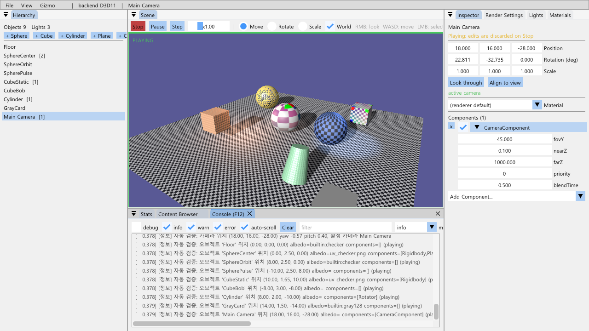
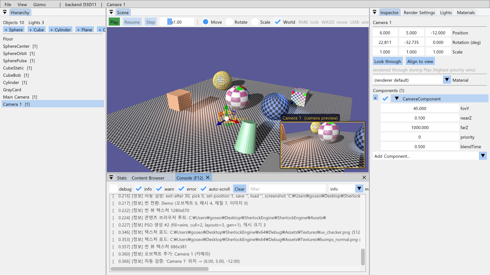
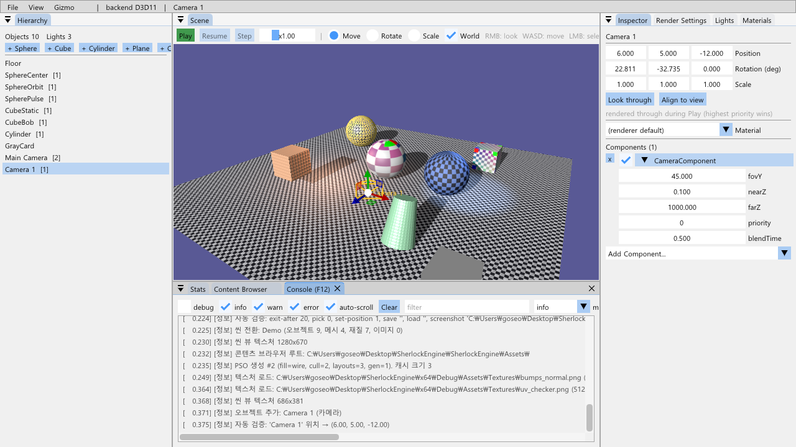
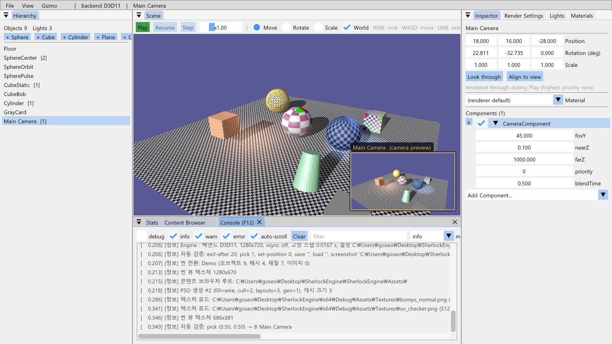
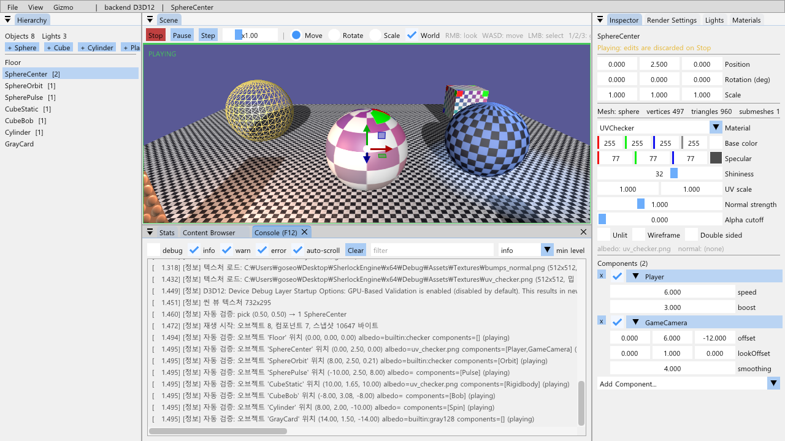
12.다음 단계
- 오브젝트 생성/삭제 API. 컴포넌트가 재생 중 오브젝트를 만들거나(총알) 지우려면(적)
Scene::Instantiate / Destroy(지연)와 프리팹(JSON 조각)이 필요하다. 스냅샷 방식은 그대로 쓸 수 있다. - 충돌. Rigidbody 는 바닥 반발뿐이다. AABB/구 충돌과
OnCollision콜백, 또는 외부 물리 라이브러리. - 컴포넌트 간 참조.
GetOwner().GetBehaviour<T>()는 있지만 다른 오브젝트 참조는 이름(Scene::FindObject)뿐이다. 안정 ID 가 필요해지는 지점. - 게임 모듈 분리 / 라이브 코딩. 지금은 exe 에 직접 컴파일된다. DLL 로 나누면 레지스트리의 정적 초기화(3.2절)와 핫 리로드 시 컴포넌트 상태 보존을 설계해야 한다.
- Undo. 편집 조작(드롭·삭제·기즈모·컴포넌트 추가)이 전부 즉시 적용된다. 스냅샷과 같은 직렬화로 명령 스택을 만들 수 있다.
- 오브젝트 계층. 11-F 에서 완료 여기 목록에는 없었지만 카메라 roll 질문에서 필요가 생겨 먼저 들어갔다 — GameObject 부모/자식, 월드 행렬 재귀, 씬 파일 버전 3. phase-11f.
13.참고 문헌
- Unity Manual, Order of execution for event functions — Start/Update/FixedUpdate 의 순서와 재생 모드. docs.unity3d.com/Manual/ExecutionOrder.html
- Unreal Engine Documentation, Play In Editor — PIE 의 색 테두리, 재생 중 편집이 버려지는 규칙. dev.epicgames.com/…/playing-and-simulating-in-unreal-engine
- Robert Nystrom, Game Programming Patterns — Component. gameprogrammingpatterns.com/component.html
- Robert Nystrom, Game Programming Patterns — Update Method. gameprogrammingpatterns.com/update-method.html
- Scott Meyers, Effective C++ 항목 4 — 함수 안 static 으로 정적 초기화 순서 문제를 피한다 (레지스트리).
- Dear ImGui, BeginDisabled / TreeNodeEx(Framed) / BeginCombo. imgui.h
11-D단계 · 게임 빌드와 런타임 분리
상용 엔진의 "Package Project" 입니다. 에디터의 File > Build Game... 이 Build\<이름>\ 에 게임 런타임 exe · DLL · 셰이더 · 에셋을 모아 넣고 시작 씬을 적어 주므로, 폴더를 통째로 다른 PC 에 복사해 exe 를 더블클릭하면 게임이 뜹니다. 그러기 위해 하나였던 프로젝트를 엔진 정적 라이브러리 · 에디터 exe · 게임 exe 셋으로 나눴고, 게임 exe 는 ImGui 컨텍스트 없이 백버퍼에 직접 그립니다.
게임 로직(스크립트)은 이미 엔진과 함께 컴파일되고 에셋은 파일이므로, "빌드" 는 런타임 모드 하나(GameApp: 에디터 UI 없이 시작 씬을 로드해 BeginPlay)와 복사(GameBuilder)로 끝납니다. 프로젝트 분리의 유일한 함정은 정적 라이브러리에서 스크립트의 정적 등록 .obj 가 링크에서 빠지는 것이고, /WHOLEARCHIVE 한 줄로 막습니다.
이 문서는 2026-09-23 작업 트리 기준이고, 다음 날 11-E단계(프로젝트 시스템)가 여러 전제를 바꿨습니다. 위 lede 와 한 줄 요약을 지금 코드로 읽으면 다음과 같습니다.
- 스크립트는 더 이상 엔진과 함께 컴파일되지 않습니다. 엔진 lib 에는
Game\Components(Rigidbody·FollowTarget)만 남았고, 스크립트는 프로젝트의Scripts\에서 exe 프로젝트가 직접 컴파일합니다. 그래서/WHOLEARCHIVE가 지키는 대상은 스크립트가 아니라 엔진 컴포넌트입니다(2절 상자). - 패키지 폴더는 열린 프로젝트 안의
<프로젝트>\Build\<이름>\이고, 런타임 exe 는<이름>.exe로 복사됩니다. 시작 씬은.sherlock의 startScene 이 먼저입니다(3·4·5절 상자). - 2026-09-28(커밋
11a74a5)에 에디터 앱 클래스TestApp은EditorApp(App/EditorApp.h/.cpp)이 되었습니다. 1절 표와 2절 트리의 TestApp 이 여기에 해당합니다.
1.요약
| 항목 | 구현 | 확인 |
|---|---|---|
| 프로젝트 분리 | SherlockEngine.vcxproj → StaticLibrary(엔진 전부 + Game/ + 셰이더 컴파일 + Assets 복사), SherlockEditor(TestApp·Editor·ContentBrowser·ScriptCreator·GameBuilder·DebugUI + EditorMain), SherlockGame(GameMain). 두 exe 는 ProjectReference + /WHOLEARCHIVE:SherlockEngine.lib | 세 프로젝트 Debug·Release 빌드 경고 0 |
| 게임 런타임 | App/GameApp: WantsGUI() = false(ImGui 컨텍스트·백엔드 생략), [game] startScene 로드 → Scene::BeginPlay, 매 프레임 Update/FixedUpdate, ESC 종료, 창 제목 [game] title | 그림 1 (백버퍼 직접 렌더링, 활성 카메라 Main Camera) |
| Build Game | File > Build Game...: 이름·시작 씬(Assets\Scenes\*.json)·에셋 전부/참조만·Release 빌드(vswhere → MSBuild)·폴더 열기. App/GameBuilder 가 Build\<이름>\ 에 exe·DLL·Shaders·Assets 복사 + engine.ini 에 [game] 추가 | 자동 검증 --build-game (5절), 그림 2 |
| AppBase | WantsGUI / GetWindowTitle 가상 함수, COM 초기화(CoInitializeEx), 콘솔 창 없음(11-C) | 게임 exe 에서 WIC 텍스처·PNG 스크린샷 동작 |
2.세 프로젝트: lib · Editor · Game
SherlockEngine.sln
├─ SherlockEngine\SherlockEngine.vcxproj StaticLibrary → x64\<구성>\SherlockEngine.lib
│ Core · Graphics · RHI · Scene · Game(Components·Scripts) · App\AppBase · App\GameApp · Shaders(fxc) · Assets 복사
├─ SherlockEditor\SherlockEditor.vcxproj Application → SherlockEditor.exe
│ EditorMain.cpp + ..\SherlockEngine\App\{TestApp, Editor, ContentBrowser, ScriptCreator, GameBuilder, DebugUI}
└─ SherlockGame\SherlockGame.vcxproj Application → SherlockGame.exe
GameMain.cpp (GameApp 는 lib 에)2.1 정적 라이브러리와 /WHOLEARCHIVE
스크립트와 컴포넌트는 SHERLOCK_SCRIPT·SHERLOCK_BEHAVIOUR 매크로가 만든 정적 객체의 생성자에서 레지스트리에 등록됩니다(11-C 3.2절). 정적 라이브러리에서 링커는 참조되는 심볼이 있는 .obj 만 가져오므로, 아무도 이름으로 참조하지 않는 Rotator.obj 같은 파일은 빠지고 등록도 사라집니다 — 11-C 문서가 예고한 그 함정입니다. 두 exe 프로젝트의 링커 옵션 /WHOLEARCHIVE:SherlockEngine.lib 이 라이브러리의 모든 .obj 를 넣게 해 등록이 살아남습니다. 엔진은 어차피 전부 쓰이므로 크기 손해도 없습니다. 검증: 에디터 자동 검증에서 components=[Rigidbody,PlayerController], [Rotator] 가 그대로 보입니다.
2.2 같은 OutDir, 하나의 pch, 파일은 제자리
- 세 프로젝트의 OutDir 은 기본값 그대로
$(SolutionDir)x64\<구성>\하나입니다. 그래서 라이브러리 프로젝트의 fxc 셰이더 컴파일과Shaders\·Assets\복사 타깃이 한 번만 돌고, 두 exe 가 그 결과를 같이 씁니다. vcpkg 의 DLL 배치(DirectXTex.dll)는 exe 프로젝트마다 이루어집니다. - 에디터 소스 파일은
SherlockEngine\App\에 그대로 두고 에디터 프로젝트가..\SherlockEngine\App\Editor.cpp로 참조합니다. include 경로는 세 프로젝트 모두$(SolutionDir)SherlockEngine이라#include "App/Editor.h"가 그대로입니다. 문서·스크립트 생성기(ScriptCreator가SherlockEngine.vcxproj에 등록)도 손댈 것이 없습니다. - pch 는 프로젝트마다 자기 것을 만듭니다: exe 프로젝트가
..\SherlockEngine\pch.cpp를 Create 로 포함합니다. - 에디터의 디버그 시작 폴더를
$(SolutionDir)SherlockEngine으로 두어(vcxproj 안) 추적 중인imgui.ini를 그대로 씁니다. VS 에서는 SherlockEditor 를 시작 프로젝트로 지정합니다.
- 프로젝트 구성(위 트리, 1절 표). 지금
SherlockEngine.vcxproj(StaticLibrary)의 Game 항목은Game\Components\Rigidbody.h/.cpp와Game\Components\FollowTarget.cpp뿐입니다. 11-E단계(2026-09-24)에서Game\Scripts가Projects\Sample\Scripts\로 옮겨졌기 때문입니다. 스크립트는SherlockEditor.vcxproj·SherlockGame.vcxproj가..\Projects\Sample\Scripts\*.cpp와일드카드로 직접 컴파일하고, include 경로에도$(SolutionDir)Projects\Sample\Scripts가 더해졌습니다. 에디터 프로젝트의 소스는EditorMain.cpp+..\SherlockEngine\App\{EditorApp, Editor, ContentBrowser, ScriptCreator, GameBuilder, DebugUI, ProjectLauncher, ProjectGenerator}입니다.TestApp은 2026-09-28 에EditorApp으로 이름이 바뀌었고,ProjectLauncher·ProjectGenerator는 11-E 에서 더해졌습니다. - /WHOLEARCHIVE 가 지키는 것(2.1절, 6절 두 번째 항목). 옵션은 그대로 두 exe 프로젝트에 있습니다. 다만 지금 lib 안에서 이름으로만 접근되어 링크에서 빠질 수 있는 것은 엔진 컴포넌트(
SHERLOCK_BEHAVIOUR로 등록되는Rigidbody·FollowTarget·CameraComponent)이고, 헤더 없이.cpp하나뿐인FollowTarget이 대표적입니다.Rotator.obj같은 스크립트 .obj 는 exe 프로젝트의 직접 컴파일 대상이라 이 옵션과 관계없이 링크됩니다. - ScriptCreator(2.2절). 지금은 어떤 vcxproj 에도 등록하지 않고 열린 프로젝트의
Scripts\에 .h/.cpp 를 만들기만 하며, 와일드카드가 컴파일 대상에 넣습니다. phase-11c 3.4절 상자.
3.게임 런타임 GameApp
// AppBase — 앱이 GUI 를 원하지 않으면 ImGui 컨텍스트를 만들지 않는다 → Engine::Initialize 가 렌더러 백엔드도 건너뛴다 (GetCurrentContext 검사, 10단계)
virtual bool WantsGUI() const { return true; }
if (WantsGUI() && !InitGUI()) …; if (gui) { ImGui_ImplWin32_NewFrame(); ImGui::NewFrame(); … OnGUI(); ImGui::Render(); }
// GameApp::OnInitialize — 시작 씬 로드 후 바로 재생. 씬 뷰 텍스처를 요청하지 않으므로 메인 패스는 백버퍼에 (11단계 IsOffscreen false 경로)
path = Paths::GetAssetPath(L"Scenes\\" + config["game.startScene"]);
SceneSerializer::Load(scene, camera, assets, path);
scene.BeginPlay(&input, &camera); // 카메라 오브젝트가 있으면 첫 Update 에서 그 시점 (11-C ApplyActiveCamera)
OnUpdate: scene.Update(dt); ESC → PostQuitMessage. OnFixedUpdate: scene.FixedUpdate(fixedDt);11-C 의 재생 루프가 그대로이고 스냅샷·Stop 만 없습니다. 게임 exe 도 --exit-after / --screenshot / --dump-objects 를 받아 창 없이 검증할 수 있습니다. ImGui 라이브러리 자체는 엔진 lib 의 Device 백엔드 코드가 참조하므로 링크되지만, 컨텍스트가 없어 아무것도 실행되지 않습니다(완전히 떼는 것은 8절).
11-E단계(2026-09-24)부터 시작 씬은 engine.ini 보다 프로젝트 파일이 먼저입니다. 지금 App/GameApp.cpp 의 GameApp::OnInitialize 는 GetProject().startScene(.sherlock 의 startScene)을 먼저 보고, 비어 있을 때만 위 코드의 config["game.startScene"] 을 봅니다. 둘 다 없으면 오류를 남기고 시작하지 않습니다. 값은 여전히 Assets\Scenes\ 기준 파일명이거나 절대 경로입니다. phase-11e 7절.
4.Build Game: 패키징
Build\<이름>\
├─ SherlockGame.exe x64\Debug (에디터 옆) 또는 Release 빌드를 켰으면 x64\Release
├─ DirectXTex.dll 런타임 폴더의 *.dll
├─ Shaders\ *.cso *.hlsl cso 우선, 없으면 런타임 컴파일 폴백 (4단계 규칙 그대로)
└─ Assets\ Config · Scenes · Textures · Models (전부, 또는 시작 씬이 참조하는 것만)
Config\engine.ini ← 끝에 [game] startScene = …, title = <이름> 을 덧붙인다 (같은 키는 마지막 값이 이긴다)- 참조만 복사: 시작 씬 JSON 의
meshes[].path에서 모델 폴더(Models\DamagedHelmet)를, 재질의albedoTexture/normalTexture에서 텍스처를 모읍니다. 데모 재질이 쓰는bumps_normal.png처럼 이름만 있는 파일에 대비해Textures\는 전체를 넣습니다. Sponza(수십 MB)를 빼는 용도입니다. - Release 빌드:
vswhere -latest -find MSBuild\**\Bin\MSBuild.exe→MSBuild SherlockEngine.sln /t:SherlockGame /p:Configuration=Release를 창 없이 동기로 돌리고Build\msbuild.log에 출력을 남깁니다. 에디터는 그동안 멈춥니다(수십 초). - 패키지 안에는 소스 트리가 없으므로
Paths의 폴백이 전부 exe 옆 사본으로 갑니다 — 10·11-B 에서 이미 그렇게 설계된 경로가 처음으로 실제로 쓰였습니다. 로그는Build\<이름>\Logs\에 남습니다.
11-E단계(2026-09-24)에서 App/GameBuilder.cpp 가 프로젝트 기준으로 바뀌어 위 트리와 Release 빌드 설명이 지금과 다릅니다.
- 출력 위치:
GameBuilder::GetBuildRoot()=<프로젝트>\Build\입니다. 패키지는<프로젝트>\Build\<이름>\, MSBuild 로그는<프로젝트>\Build\msbuild.log에 생깁니다. 프로젝트가 열려 있지 않으면"no project is open"으로 멈춥니다. - 런타임 exe: 에디터 옆의
<프로젝트>.exe(프로젝트 솔루션의 게임 타깃)를 먼저 찾고, 없으면SherlockGame.exe(엔진 솔루션의 Sample)를 씁니다. 패키지 안에는SherlockGame.exe가 아니라<이름>.exe(게임 이름)로 복사됩니다. Release 를 켜지 않았는데 exe 가 없고 프로젝트 솔루션이 있으면, 그 게임 타깃을 Debug 로 먼저 빌드합니다. - Release 빌드: MSBuild 대상은 프로젝트 솔루션의
<프로젝트>타깃이고, 프로젝트 솔루션이 없을 때(엔진 솔루션의 Sample)만 위의SherlockEngine.sln /t:SherlockGame입니다. vswhere 로 MSBuild 를 찾는 과정은 같습니다. - 에셋과 프로젝트 파일: 엔진 콘텐츠를 먼저 복사하고 프로젝트 콘텐츠로 덮어써 한
Assets\로 합칩니다. 패키지에는<이름>.sherlock(engineRoot 빈 값) 사본이 더해져, 런타임이 exe 옆에서 프로젝트를 찾고 그 startScene 을 씁니다.engine.ini끝에[game]을 덧붙이는 것은 그대로입니다.
상세: phase-11e 7절.
5.자동 검증
# 에디터 (스크립트 등록이 /WHOLEARCHIVE 로 살아 있나)
SherlockEditor.exe --scene=demo --exit-after=30 --play=1 --dump-objects=1
# 게임 런타임 단독 (x64\Debug, engine.ini 의 [game] startScene = demo_components.json)
SherlockGame.exe --exit-after=90 --dump-objects=1 --screenshot=...phase11d-game.png
# 패키징 (File > Build Game 과 같은 경로, 에셋 전부, 폴더 열지 않음) → Build\TestBuild\
SherlockEditor.exe --scene=demo --exit-after=20 --build-game=TestBuild [--build-scene=floor_cube.json]
# 패키지 실행 (소스 트리 없음)
Build\TestBuild\SherlockGame.exe --exit-after=90 --dump-objects=1 --screenshot=...phase11d-packaged.png11-E 이후 같은 --build-game=TestBuild 를 엔진 솔루션의 SherlockEditor.exe(Sample 프로젝트)로 돌리면 패키지는 Projects\Sample\Build\TestBuild\ 에 생기고 실행 파일 이름은 TestBuild.exe 입니다(4절 상자). 그래서 마지막 명령은 지금 Projects\Sample\Build\TestBuild\TestBuild.exe --exit-after=90 … 로 읽어야 합니다. 런타임 단독 실행의 시작 씬도 engine.ini 의 [game] 보다 Projects\Sample\Sample.sherlock 의 startScene(demo_components.json)이 먼저입니다. 프로젝트 기준 검증은 phase-11e 8절 E 입니다.
6.함정과 해결
- COM 초기화. 게임 exe 의 첫 실행에서 PNG 텍스처 로드와 스크린샷 저장이
0x80004002 (E_NOINTERFACE)로 실패했다. DirectXTex 의 WIC 팩토리는 COM 이 필요한데, 에디터에서는 ImGui 쪽 초기화 과정에서 우연히 COM 이 열려 있어 드러나지 않았다.AppBase::Initialize맨 앞에CoInitializeEx(COINIT_MULTITHREADED), 소멸자에CoUninitialize. - 정적 초기화 탈락. 2.1절.
/WHOLEARCHIVE. 이름으로만 접근하는 것(스크립트)이 정적 라이브러리에서 사라지는 전형적 함정. - 솔루션 탐색기가 평평해짐. 11-C 에서
.filters를 여러 번 손으로 고치다 항목이 빠져 VS 에서 전부 루트에 보였다..vcxproj항목에서.filters를 생성하는 스크립트로 통일했고(필터 = 실제 폴더), 새 프로젝트의 filters 도 같은 방식으로 만들었다. - 이름 변경. 실행 파일이
SherlockEngine.exe에서SherlockEditor.exe가 됐다. 이전 단계 문서의 명령은 이름만 바꿔 읽으면 된다. 옛 exe 는 빌드 폴더에 남아 있었으므로 지웠다. - engine.ini 의 [game] 키 중복. Build 는 원본 ini 를 복사한 뒤 끝에
[game]을 덧붙인다.Config는 키 → 값 맵이라 마지막 값이 이겨, 개발용 시작 씬과 패키지의 시작 씬이 자연히 분리된다.
7.검증과 스크린샷
- 완료 기준 "Build 폴더의 exe 가 소스 트리 없이 실행된다" —
--build-game=TestBuild: 86 파일, 0.3 초.Build\TestBuild\SherlockGame.exe가 자기 옆의 engine.ini(16 항목)·셰이더 .cso·씬을 읽어 "게임 시작: … 오브젝트 9, 컴포넌트 5, 카메라 Main Camera", CubeStatic 이 Rigidbody 로 y = 2.60 까지 상승, 스크린샷 저장 (그림 2). - 런타임 단독(x64\Debug): 텍스처 로드 정상, 활성 카메라 Main Camera, 90 프레임 뒤 종료 (그림 1). D3D12 Release 도 같다.
- 에디터: 스크립트 등록 유지 (
[Rigidbody,PlayerController],[Rotator]), 재생·스냅샷 복원 그대로. 세 프로젝트 Debug·Release 빌드 경고 0, 오류 0.
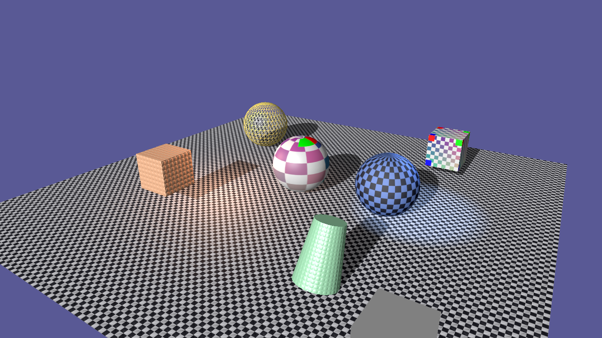
8.다음 단계
- ImGui 를 게임 exe 에서 완전히 떼기. Device 백엔드의 ImGui 코드를
#ifdef SHERLOCK_EDITOR로 나누면 게임 exe 가 imgui.lib 를 링크하지 않는다. 지금은 링크만 되고 실행되지 않는다. - 에셋 쿠킹. 텍스처를 DDS(BC 압축)로, glTF 를 미리 파싱한 바이너리로. Sponza 로딩(수 초)이 문제가 될 때.
- 비동기 빌드. MSBuild 를 스레드에서 돌리고 진행 상황을 팝업에 표시.
- 전체화면·해상도·입력 재매핑, 메인 메뉴 씬 전환 — 게임 쪽 기능. 씬 전환 API(
Scene::LoadScene(name))가 첫 항목.
9.참고 문헌
- Microsoft Learn, /WHOLEARCHIVE (Include All Library Object Files). learn.microsoft.com/…/wholearchive-include-all-library-object-files
- Microsoft Learn, CoInitializeEx — WIC 등 COM 컴포넌트 사용 전 스레드별 초기화. learn.microsoft.com/…/nf-combaseapi-coinitializeex
- Microsoft, vswhere — 설치된 Visual Studio / MSBuild 찾기. github.com/microsoft/vswhere
- Microsoft Learn, ProjectReference / static library linking in MSBuild. learn.microsoft.com/…/vcxproj-file-structure
11-E단계 · 프로젝트 시스템
씬이 아니라 게임을 분리합니다. 언리얼의 .uproject 처럼 프로젝트는 폴더 하나 — <이름>.sherlock + Assets\ + Scripts\ — 이고, 에디터가 그 폴더에 Visual Studio 솔루션(에디터 타깃 + 게임 타깃)을 생성합니다. 엔진 컴포넌트(Rigidbody·FollowTarget·CameraComponent)와 엔진 콘텐츠(텍스처·모델)는 엔진에 남아 어떤 프로젝트를 열어도 그대로 쓰이고, 프로젝트 스크립트만 프로젝트에 속합니다. 선택한 것은 "A안": 프로젝트마다 자기 에디터 exe 를 빌드하는 워크플로(언리얼의 흐름)이며, 스크립트를 DLL 로 로드하는 B안(언리얼의 모듈 구조)으로 가는 길을 열어 두었습니다.
Paths 가 세 루트(엔진·프로젝트·exe)를 알고 에셋을 "프로젝트 → 엔진 → exe" 순으로 찾으므로 씬 파일은 어느 루트인지 적지 않습니다. AppBase 가 시작할 때 .sherlock 을 찾아 루트를 정하고(--project=, exe 위쪽, 엔진의 Projects\Sample), 에디터는 런처·프로젝트 설정·솔루션 생성을 얹습니다. 스크립트는 Scripts\*.cpp 와일드카드로 프로젝트 솔루션의 두 exe 에 컴파일되고, exe 는 SHERLOCK_PROJECT_NAME 으로 "내가 어느 프로젝트의 에디터인가" 를 압니다.
- 와일드카드. 위 한 줄 요약의
Scripts\*.cpp는 2026-09-30부터 생성기가 쓰는 프로젝트 솔루션에서Scripts\**\*.cpp(하위 폴더 포함)입니다. 엔진 솔루션의 Sample(SherlockEditor.vcxproj·SherlockGame.vcxproj)은 여전히..\Projects\Sample\Scripts\*.cpp로 비재귀입니다. 5절 상자. - TestApp → EditorApp. 2026-09-28(커밋
11a74a5)에 에디터 앱 클래스 이름이 바뀌었습니다. 2절의TestApp::CreateProject는 지금EditorApp::CreateProject(App/EditorApp.cpp)입니다. 5절의ProjectGenerator::GetEditorSources()목록도 첫 항목이EditorApp이어서, 생성되는<이름>Editor.vcxproj는App\EditorApp.cpp를 컴파일합니다. 나머지 항목(Editor·ContentBrowser·ScriptCreator·GameBuilder·DebugUI·ProjectGenerator·ProjectLauncher)은 같습니다.
1.요약
| 항목 | 구현 | 확인 |
|---|---|---|
| 프로젝트 파일 | Core/Project: <이름>.sherlock(name, startScene, engineRoot), Create(폴더 골격), FindUpwards(exe 위쪽 탐색) | Projects\Sample, Projects\TestGame(검증) |
| 루트 | Paths: GetEngineRoot / GetProjectRoot / GetEngineAssetRoot / GetAssetRoot, GetAssetPath 는 프로젝트 → 엔진 → exe. AppBase::ResolveProject 가 설정보다 먼저 | 로그 "프로젝트 루트 … 엔진 루트 … 컴파일된 프로젝트 …" |
| 콘텐츠 브라우저 | 루트 둘(Project / Engine) — 트리에 두 최상위 노드, 브레드크럼 첫 조각이 루트, 썸네일 키는 절대 경로 | 그림 1 |
| 엔진 컴포넌트 | Game\Components(Rigidbody·FollowTarget)와 Scene\CameraComponent 는 엔진 lib. 어떤 프로젝트에서도 Add Component 에 나온다 | TestGame 에디터의 Cube 1 에 Rigidbody·Rotator |
| 프로젝트 스크립트 | <프로젝트>\Scripts\*.cpp 와일드카드. ScriptCreator 는 파일만 만든다(vcxproj 편집 없음) 변경 2026-09-30 Scripts\**\*.cpp 재귀. 실험 스크립트는 Scripts\Tests\ 에 (5절 상자) | New Script → 빌드 → 목록 |
| 솔루션 생성 | App/ProjectGenerator: <이름>.sln, <이름>Editor.vcxproj, <이름>.vcxproj(엔진 lib ProjectReference, vcpkg 매니페스트 루트 = 엔진 저장소, SHERLOCK_PROJECT_NAME, Binaries\ 출력) | MSBuild 성공, Binaries\Debug\TestGameEditor.exe |
| 런처 | File > Projects: 최근 목록(%LOCALAPPDATA%\SherlockEngine\editor.json), Open(.sherlock 대화상자), New(이름·위치 → 폴더·예제 스크립트·솔루션·Main.json). Project Settings(시작 씬) | 그림 1 메뉴 바의 프로젝트 이름 |
| 스크립트 없는 에디터 | 컴파일된 프로젝트 ≠ 열린 프로젝트면 씬 뷰 위 배너 + "Build and switch to the project editor"(MSBuild → 그 exe 실행 → 종료) | 그림 3 |
| Build Game / GameApp | 프로젝트 기준: 런타임 exe = 에디터 옆 <이름>.exe(없으면 Debug 로 빌드), 엔진 콘텐츠 위에 프로젝트 콘텐츠, 패키지에 .sherlock 사본. GameApp 은 .sherlock 의 startScene | 8절 F |
2.프로젝트 = 폴더 + .sherlock
Projects\Sample\ (엔진 저장소의 예제 프로젝트. 엔진 솔루션의 SherlockEditor/SherlockGame 이 이것의 에디터·게임)
├─ Sample.sherlock { "name": "Sample", "startScene": "demo_components.json", "engineRoot": "" }
├─ Assets\Scenes\demo_components.json, floor_cube.json
└─ Scripts\PlayerController.h/.cpp, Rotator.h/.cpp
<어디든>\MyGame\ (런처의 New 가 만든다)
├─ MyGame.sherlock engineRoot = "C:\…\SherlockEngine\SherlockEngine\" (엔진 소스 폴더 — 셰이더·엔진 콘텐츠·솔루션 참조)
├─ Assets\Scenes\Main.json 바닥 + 방향광 + Main Camera (BuildEmptyScene 을 저장)
├─ Scripts\Rotator.h/.cpp 예제 스크립트 (ScriptCreator 템플릿)
├─ MyGame.sln, MyGameEditor.vcxproj, MyGame.vcxproj (ProjectGenerator)
├─ Binaries\Debug\MyGameEditor.exe, MyGame.exe (빌드 후)
└─ Build\ 패키징 결과Project::Create 는 폴더 골격과 .sherlock 만 만들고, 나머지(예제 스크립트, 솔루션, 기본 씬)는 에디터(TestApp::CreateProject)가 프로젝트를 연 뒤 채웁니다 — Core 가 Scene·에디터 계층을 모르게 하기 위해서입니다. engineRoot 가 존재하지 않는 경로면(다른 PC 로 옮긴 프로젝트) 무시하고 exe 옆에서 찾습니다.
점검 시점의 Projects\Sample\Scripts\ 에는 위 트리의 PlayerController·Rotator 외에 Test.h/Test.cpp 도 있습니다. 2026-09-24 커밋(7143af8)에 처음 들어갔고 2026-09-26 커밋(b9e3244)에서 고쳐졌으며, 내용은 New Script 템플릿 형식(필드 speed 하나)입니다. 엔진 솔루션이 Scripts\*.cpp 와일드카드를 쓰므로 Sample 의 에디터·게임 exe 에 함께 컴파일됩니다.
3.세 루트: 엔진 · 프로젝트 · exe
// Paths — 11-E
GetEngineRoot() SetEngineRoot(프로젝트 파일의 engineRoot) → exe\..\..\SherlockEngine\ 마커 → exe 폴더(배포)
GetProjectRoot() AppBase::ResolveProject: --project= → Project::FindUpwards(exe 폴더, 3단계) → 엔진의 Projects\Sample
GetAssetPath(rel) 프로젝트 Assets\rel → 엔진 Assets\rel → exe\Assets\rel // 씬 파일의 경로는 루트를 적지 않는다
GetSceneDir() 프로젝트 Assets\Scenes\ GetShaderPath: exe\Shaders\*.cso → 엔진 루트 Shaders\*.hlsl (런타임 컴파일)- 왜 폴백 순서인가. 씬이
Models\DamagedHelmet\DamagedHelmet.glb라고만 적어도 프로젝트에 그 파일이 없으면 엔진 콘텐츠에서 찾습니다. 프로젝트에 같은 이름을 두면 프로젝트 것이 이깁니다(언리얼의 Engine/Game 콘텐츠와 같은 규칙). 패키지에서는 둘이 한 폴더(exe\Assets)라 규칙이 그대로 성립합니다. - 프로젝트 에디터의 셰이더.
Binaries\Debug\에는 .cso 가 없으므로 엔진 루트의 .hlsl 을 런타임 컴파일합니다(4단계의 폴백). 시작이 수십 ms 느려질 뿐이고 핫 리로드는 같은 파일을 봅니다. - ResolveProject 가 설정보다 먼저.
engine.ini도GetAssetPath로 찾으므로 프로젝트가 자기Assets\Config\engine.ini를 두면 그것이 쓰입니다(없으면 엔진 것).
4.엔진 컴포넌트 vs 프로젝트 스크립트
사용자의 요구는 "Rigidbody 같은 컴포넌트는 엔진 소속, 다른 프로젝트를 열어도 사용 가능" 이었습니다. 그래서 경계를 파일 위치로 못박았습니다: SherlockEngine\Game\Components\(Rigidbody·FollowTarget)와 Scene\CameraComponent 는 엔진 정적 라이브러리에 컴파일되어 모든 exe 에 들어가고(/WHOLEARCHIVE, 11-D), <프로젝트>\Scripts\ 는 그 프로젝트의 두 exe 에만 컴파일됩니다. Inspector 의 Add Component 가 Scripts / Components 로 나뉘어 보이는 것이 이 경계입니다. 옛 Game\Scripts(PlayerController·Rotator)는 Sample 프로젝트로 옮겼습니다 — 예제이지 엔진이 아니기 때문입니다.
5.프로젝트 솔루션 생성
// ProjectGenerator 가 쓰는 <이름>Editor.vcxproj 의 핵심 (게임 타깃도 같고 소스만 다르다)
<SherlockRepo>$(MSBuildProjectDirectory)\..\..\</SherlockRepo> // 엔진 저장소 (같은 드라이브면 상대, 아니면 절대)
<SherlockEngineDir>$(SherlockRepo)SherlockEngine\</SherlockEngineDir>
<VcpkgEnableManifest>true <VcpkgManifestRoot>$(SherlockRepo) // 저장소 밖 프로젝트도 엔진의 vcpkg.json 을 쓴다
<OutDir>$(ProjectDir)Binaries\$(Configuration)\ <IntDir>$(ProjectDir)Intermediate\$(ProjectName)\$(Configuration)\
<PreprocessorDefinitions>…;SHERLOCK_PROJECT_NAME="MyGame"
<AdditionalIncludeDirectories>$(SherlockEngineDir);$(ProjectDir)Scripts
<AdditionalOptions>/WHOLEARCHIVE:SherlockEngine.lib
<ClCompile Include="$(SherlockRepo)SherlockEditor\EditorMain.cpp" /> <ClCompile Include="$(SherlockEngineDir)App\Editor.cpp" /> …
<ClCompile Include="Scripts\*.cpp" /> // 와일드카드: New Script 뒤 vcxproj 편집 없음
<ProjectReference Include="$(SherlockEngineDir)SherlockEngine.vcxproj">- 에디터 소스 목록은 한 곳.
ProjectGenerator::GetEditorSources()(TestApp·Editor·ContentBrowser·ScriptCreator·GameBuilder·DebugUI·ProjectGenerator·ProjectLauncher). 엔진 솔루션의SherlockEditor.vcxproj와 같아야 하며, 에디터 파일을 추가하면 둘 다 고쳐야 합니다. - 엔진 lib 공유. 처음에는 생성 솔루션이 엔진 lib 를
$(SolutionDir)x64\— 즉 프로젝트 폴더 — 에 다시 빌드했습니다(29 초). lib 의 OutDir 을$(ProjectDir)..\x64\$(Configuration)\로 못박아 어느 솔루션에서 빌드하든 엔진 저장소의 것을 공유합니다(5 초). - SHERLOCK_PROJECT_NAME 은 exe 의 것. 매크로는 exe 프로젝트에만 정의되므로 엔진 lib 의
AppBase가 직접 읽으면 항상 비어 있습니다. 진입점(EditorMain/GameMain)이AppBase::SetCompiledProjectName으로 넣어 줍니다.
실험 전용 프로젝트 QuaternionLookTest 를 이 절의 생성기로 만들어 쓰면서 두 가지를 고쳤습니다. (1) 와일드카드가 재귀가 되었습니다. Scripts\*.cpp → Scripts\**\*.cpp(.h 도 같이, 필터 파일도 같이). 실험용 스크립트를 Scripts\Tests\ 하위 폴더에 따로 모아 두기 위해서이고, MSBuild 의 ** 가 재귀라 New Script 뒤 vcxproj 편집이 없다는 성질은 그대로입니다. 첫 사용자는 Projects\QuaternionLookTest\Scripts\Tests\QuaternionLook.cpp. (2) 생성 vcxproj 의 언어 표준이 stdcpp20 이 되었습니다. 위 코드 조각에는 안 보이지만 생성기는 <LanguageStandard>stdcpp17</LanguageStandard> 를 쓰고 있었고, 2026-09-28 의 C++20 전환이 엔진 솔루션 12곳만 고치고 이 문자열은 빠뜨렸습니다. Script.h 의 GetComponent 가 std::derived_from 콘셉트를 쓰므로 그 상태로는 어떤 새 프로젝트도 자기 에디터를 빌드할 수 없었는데, 새 프로젝트를 만들어 본 것이 이번이 처음이라 드러나지 않았던 것입니다. 엔진 솔루션의 SherlockEditor.vcxproj(Sample 스크립트)는 여전히 ..\Projects\Sample\Scripts\*.cpp 비재귀입니다 — Sample 은 예제 전용이라 하위 폴더를 두지 않기로 했습니다. 실험 기록: phase-11f 3.4, 적용 기록.
6.런처와 "스크립트 없는 에디터"
A안의 대가는 "프로젝트를 바꾸면 그 프로젝트의 에디터 exe 가 필요하다" 입니다. 에디터는 이것을 숨기지 않고 안내합니다: 컴파일된 프로젝트 이름과 열린 프로젝트 이름이 다르면 씬 뷰 위에 배너를 띄우고 Build and switch to the project editor 버튼이 <이름>.sln /t:<이름>Editor 를 MSBuild 로 빌드한 뒤 Binaries\Debug\<이름>Editor.exe --project=… 를 띄우고 자기는 종료합니다. 그 사이에도 열린 씬은 정상 동작하며, 없는 스크립트는 로드할 때 경고를 남기고 건너뜁니다(레지스트리, 11-C). 런처(File > Projects)는 최근 목록·열기 대화상자·새 프로젝트를 제공하고, New 는 프로젝트를 만든 뒤 바로 엽니다(엔진 에디터에서 만들었으므로 배너가 뜨고, 버튼 한 번으로 그 프로젝트의 에디터로 넘어갑니다).
7.Build Game 과 GameApp
GameBuilder는 프로젝트 기준입니다:Build\는 프로젝트 안, 시작 씬은 프로젝트Assets\Scenes, 런타임 exe 는 에디터 옆의<이름>.exe(엔진 솔루션의 Sample 은SherlockGame.exe). 없으면 프로젝트 솔루션의 게임 타깃을 Debug 로 먼저 빌드합니다. 에셋은 엔진 콘텐츠 위에 프로젝트 콘텐츠를 덮어써 한 폴더로 모으고, 패키지에<이름>.sherlock(engineRoot 없음) 사본을 두어 런타임이 exe 옆에서 프로젝트를 찾게 합니다.GameApp은.sherlock의 startScene 을 먼저 보고, 없으면engine.ini의[game]을 봅니다. 개발 중Binaries\Debug\MyGame.exe를 직접 실행해도FindUpwards가 두 단계 위의.sherlock을 찾습니다.
8.자동 검증
# A: 엔진 에디터 = Sample 프로젝트의 에디터. 시작 씬(demo_components.json) 로드, 스크립트 있음
SherlockEditor.exe --exit-after=40 --play=1 --dump-objects=1
# B: 새 프로젝트 생성 (Projects\TestGame: 폴더·.sherlock·Rotator 예제·솔루션·Main.json) + 그 에디터를 MSBuild
SherlockEditor.exe --exit-after=30 --new-project=TestGame --build-project=1
# C: 생성된 에디터 실행 — exe 위쪽에서 프로젝트를 찾고, 컴파일된 프로젝트 = TestGame, Rotator 부착
Projects\TestGame\Binaries\Debug\TestGameEditor.exe --exit-after=40 --play=1 --add=1 --add-component=Rotator --dump-objects=1
# D: 엔진 에디터로 TestGame 을 열면 배너 (컴파일된 프로젝트 Sample ≠ TestGame)
SherlockEditor.exe --exit-after=20 --project=..\..\Projects\TestGame --screenshot=<절대 경로> # 런처 화면: --launcher=1
# E: TestGame 에디터에서 패키징 (게임 타깃이 없으면 먼저 Debug 빌드) → Build\TestPack\TestPack.exe 실행
TestGameEditor.exe --exit-after=20 --build-game=TestPack
Projects\TestGame\Build\TestPack\TestPack.exe --exit-after=60 --dump-objects=19.함정과 해결
- 주석 끝의 백슬래시.
// … Sample\처럼 한 줄 주석이\로 끝나면 다음 줄이 주석에 이어져(줄 연속) 선언이 사라진다. C4010 경고와 함께 "ListScenes 가 멤버가 아니다" 같은 엉뚱한 오류가 났다. 경로 주석은 백슬래시로 끝내지 않고 "폴더" 라고 쓴다. - 매크로가 lib 에 없다. 5절. exe 의 정의를 lib 가 볼 수 없다 — 진입점이 값을 넘긴다.
- $(SolutionDir) 기준 OutDir. 5절. 참조된 lib 가 참조하는 솔루션의 폴더에 빌드된다. lib 의 OutDir 을 자기 저장소 기준으로.
- 배너가 안 보임. 씬 뷰 이미지가 남은 공간을 다 쓰므로 그 뒤에 그린 배너는 잘린다. 배너를 이미지 앞(툴바 줄 아래)에 그린다.
- 상대 경로 프로젝트.
--project=..\..\Projects\X로 열면 최근 목록에 상대 경로가 따로 쌓이고 생성기의 경로 계산도 흔들린다.Project::Load가weakly_canonical(absolute())로 정규화한다. - vcpkg 매니페스트 루트. 저장소 밖 프로젝트는 위로 올라가도
vcpkg.json이 없다.VcpkgManifestRoot를 엔진 저장소로 지정하면 같은vcpkg_installed를 쓰고 DLL 배치도 된다. - ImGui 의 "\\" 이름. 트리 노드 라벨이 루트마다 겹치므로(Project/Engine 둘 다 Textures)
PushID(root)를 추가로 건다.
10.검증과 스크린샷
- 완료 기준 "새 프로젝트를 만들고 빌드하면 그 에디터에서 프로젝트 스크립트와 엔진 컴포넌트를 함께 쓸 수 있다" — B: TestGame 생성 →
TestGame.sln /t:TestGameEditorMSBuild 성공(처음 29 초, lib 공유 후 5 초). C:TestGameEditor.exe가 두 단계 위의TestGame.sherlock을 찾아 "컴파일된 프로젝트 TestGame", Main.json 로드, Cube 1 에 Rotator(프로젝트 스크립트) 부착·재생 (그림 2). 엔진 컴포넌트(Rigidbody 등)는 Add Component 의 Components 그룹에 그대로. - A: 엔진 에디터 = Sample: 시작 씬 로드, 컴파일된 프로젝트 Sample, Rotator 재생. D: 엔진 에디터로 TestGame 을 열면 컴파일된 프로젝트 Sample ≠ TestGame → 배너 (그림 4). 런처는 그림 3.
- 콘텐츠 브라우저에 Project / Engine 두 트리 (그림 1). 세 프로젝트 Debug 빌드 경고 0(엔진 솔루션), 생성 솔루션 빌드 경고 0.
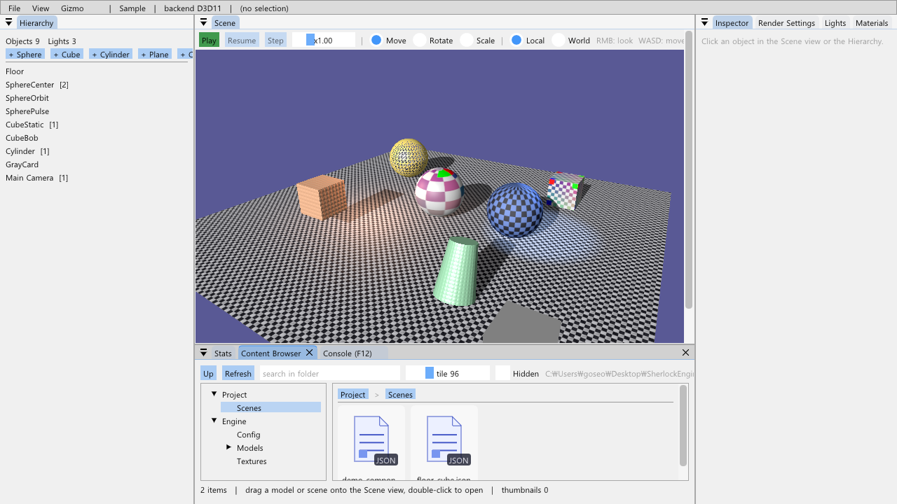
Binaries\Debug\TestGameEditor.exe). Main.json 위에 큐브를 놓고 프로젝트 스크립트 Rotator 를 붙여 재생 중. Project 트리에 Models·Scenes·Textures.11.다음 단계 (B안: DLL)
- 스크립트를 프로젝트 DLL 로. 생성기의 게임 타깃을
DynamicLibrary로 바꾸고 에디터가LoadLibrary. 그러려면 레지스트리가 exe 와 DLL 에서 같은 인스턴스여야 하므로 엔진을 DLL 로 만들거나 등록 함수 포인터를 넘긴다. 핫 리로드 = 11-C 스냅샷 저장 → DLL 교체 → 복원. A안에서 만든 폴더 규약·루트·생성기·런처는 그대로 쓰인다. - 프로젝트 에디터에 .cso 복사. 생성 vcxproj 에 엔진
x64\<구성>\Shaders를 Binaries 로 복사하는 타깃. - 프로젝트별 engine.ini. 지금은 있으면 쓰인다는 규칙만 있다. Project Settings 에서 편집하게 한다.
12.참고 문헌
- Epic Games, Unreal Engine Directory Structure / .uproject. dev.epicgames.com/…/unreal-engine-directory-structure
- Microsoft Learn, MSBuild wildcards in item elements. learn.microsoft.com/…/how-to-select-the-files-to-build
- vcpkg, Manifest mode: VcpkgManifestRoot. learn.microsoft.com/…/msbuild-integration
- Microsoft Learn, IFileOpenDialog (FOS_PICKFOLDERS). learn.microsoft.com/…/nn-shobjidl_core-ifileopendialog
11-F단계 · 오브젝트 계층과 카메라 자세
"카메라에 쿼터니언을 안 썼는데 나중에 Roll 이 필요하면 어떻게 하지?" 라는 질문에서 시작한 단계입니다. 답은 카메라에 roll 변수를 넣거나 쿼터니언으로 바꾸는 것이 아니라, 유니티·언리얼이 그러듯 부모-자식 계층을 만들고 카메라가 부모의 회전을 행렬로 상속받게 하는 것이었습니다. 그러려면 카메라가 각도 둘(yaw/pitch)이 아니라 회전 행렬을 받을 수 있어야 했고, 그 경로를 여는 김에 카메라 블렌드를 쿼터니언 slerp 로 바꿨습니다. GameObject 에 부모·자식 링크, Transform 은 로컬 값, 에디터 Hierarchy 는 드래그로 재부모화하는 트리, 씬 파일은 버전 3 이 되었습니다.
Roll 은 "카메라의 변수" 가 아니라 "카메라를 든 것의 회전" 입니다. GameObject::GetWorldMatrix() 가 local × parent.world 를 재귀로 곱하고, CameraComponent::GetPose() 가 그 월드 행렬을 분해해 회전 쿼터니언으로 넘기며, Camera::SetRotation(XMMATRIX) 가 행렬을 그대로 저장합니다. 카메라의 yaw/pitch 는 저장 행렬에서 계산하는 파생값이 되었고 에디터 자유 카메라(Rotate)와 씬 파일은 이전처럼 각도 경로를 씁니다. 쿼터니언은 저장 형식이 아니라 보간용 임시 표현으로만 등장합니다.
1.요약
| 항목 | 구현 | 확인 |
|---|---|---|
| 계층 | GameObject 에 parent / children(비소유 포인터), SetParent(parent, keepWorld), IsDescendantOf(순환 금지), GetWorldMatrix(재귀), GetWorldPosition, SetWorldMatrix / SetWorldPosition / SetWorldRotation | 9절 A: 재부모화 뒤 로컬 (18, 14.5, −28) · 월드 (18, 16, −28) 유지 |
| Transform | 값은 모두 부모 기준 로컬. GetWorldMatrix → GetLocalMatrix 로 개명, SetLocalMatrix(pre⁻¹ + 분해), EulerFromRotationMatrix(Editor 에서 옮겨 옴), GetRotationMatrix | 빌드 경고 0 — 옛 이름을 부르는 곳이 남으면 컴파일 오류 |
| Camera | m_yaw/m_pitch → XMFLOAT4X4 m_rotation. SetYawPitch(각도 경로, roll 0) + SetRotation(XMMATRIX)(행렬 경로). GetYaw/GetPitch/GetRoll 은 파생 | 9절 A: 부모 roll 30° → 카메라 roll 0.55 rad |
| CameraPose | yaw, pitch → XMFLOAT4 rotation(월드 쿼터니언). GetPose 는 소유자 월드 행렬을 XMMatrixDecompose 로 분해(스케일 제거). SetFromCamera 는 SetWorldMatrix | D3D11·D3D12 같은 수치 |
| 카메라 블렌드 | Scene::ApplyActiveCamera: yaw(짧은 쪽)·pitch 별 lerp → XMQuaternionSlerp | 재생 중 전환 (11-C 와 동일 경로) |
| 에디터 | Hierarchy = TreeNodeEx 트리 + 드래그 앤 드롭 재부모화(빈 곳 = 루트). 기즈모는 GetWorldMatrix → SetWorldMatrix. Inspector 에 부모 이름·월드 위치·Detach. 카메라 프러스텀은 pose 회전 그대로 | 그림 1 |
| 삭제 | Scene::RemoveObject 가 서브트리를 함께 지움 (유니티 방식). Scene::IndexOf 추가 | 로그 "자식 N 개 포함" |
| 씬 파일 | 버전 3: 오브젝트에 "parent"(인덱스). 로드는 전부 만든 뒤 두 번째 단계에서 연결 (keepWorld=false) | 9절 B: 저장 → 로드 뒤 parent='Cube 3', 월드 위치 동일 |
| 모델 루트 | Scene::AddModel: 노드가 둘 이상이면 빈 루트(파일 이름)를 만들고 노드를 자식으로. 루트가 placement, 자식은 pre 만 → 월드 행렬 동일 | 동봉 모델(헬멧·Sponza)은 노드 하나라 경로를 타지 않음 (10절) |
| 스크립트 | Script::GetParent / SetParent / GetWorldPosition / SetWorldPosition. FollowTarget 은 월드 좌표로 계산 | 데모 씬 재생 동일 |
| 자동 검증 | --set-parent=자식;부모(7 프레임), --set-rotation=p,y,r(8 프레임, 도). 덤프에 roll·parent·world 추가 | 9절 |
2.출발점: "카메라에 쿼터니언을 안 썼는데 Roll 은?"
2단계에서 카메라를 yaw/pitch 두 각도로 만들며 "쿼터니언은 왜 아닌가"를 적어 두었습니다. 1인칭 자유 시점은 정의상 roll 이 없으니 자유도가 딱 맞는 표현을 쓰자는 것이었고, 그때 "쿼터니언이 필요해지는 곳은 물체의 Transform, 카메라 사이의 보간, 6자유도 카메라" 라고 미뤄 두었습니다. 11-C단계에서 카메라가 씬 안의 오브젝트(CameraComponent)가 되자 미뤄 둔 질문이 돌아왔습니다 — 나중에 Roll 이 필요하면 어떻게 하나?
코드를 다시 읽어 보니 문제는 카메라의 저장 형식이 아니라 전달 경로였습니다. Transform 은 이미 rotation.z 에 roll 을 갖고 있었는데, CameraComponent::GetPose() 가 rotation.x(pitch)·rotation.y(yaw) 만 읽어 CameraPose{yaw, pitch} 로 줄였고, Camera 는 SetYawPitch 로만 자세를 받았습니다. 각도 둘로 줄이는 순간 roll 은 어디에서 왔든(오브젝트 자신이든, 앞으로 생길 부모든) 버려집니다. 그래서 이 단계의 실제 작업은 "카메라가 행렬을 받게 하기" 와 "행렬에 roll 을 실어 줄 부모 계층 만들기" 둘이었고, 3절의 논의가 그 근거입니다.
3.Roll · 짐벌락 · 쿼터니언 정리
이 절은 코드가 아니라 결정의 근거입니다. 같은 질문이 다시 나올 때 처음부터 따지지 않도록 대화에서 정리된 내용을 그대로 남깁니다.
3.1 Roll 의 두 종류
| 필요한 것 | 예 | 방법 | 쿼터니언 필요 |
|---|---|---|---|
| 기울임(장식)으로서의 roll | 더치 앵글, 카메라 흔들림, 탈것 banking, 피격 시 화면 기울기 | 시선 방향은 여전히 yaw/pitch 가 정하고 그 위에 시선축 회전을 얹음. XMMatrixRotationRollPitchYaw(pitch, yaw, roll) = Rz(roll)·Rx(pitch)·Ry(yaw) 는 roll 을 가장 먼저 로컬에서 적용하므로 정확히 "카메라 자기 시선축 기준 회전" 이 됨. 마우스 dx→yaw, dy→pitch 도 그대로 | 아니오 |
| 카메라 전환 보간 | 재생 중 카메라 A → B | 두 자세를 쿼터니언으로 바꿔 slerp, 결과를 행렬로 카메라에 | 보간용으로만 |
| 6자유도 자유 회전 | 우주선, 곡예 비행 (up 기준 없음) | 자세를 쿼터니언(또는 행렬)으로 저장하고 입력을 로컬 축 회전으로 합성: q = q_axis(right, Δpitch) · q …. 오일러는 실패함 — 90° 롤한 상태의 pitch 입력은 실제로 yaw 가 바뀌어야 하는데 m_pitch += Δ 는 그것을 표현 못 함. pitch 클램프도 없앰 | 예 |
세 번째 경우만 저장 형식을 바꿉니다. 쿼터니언의 이점은 "roll 을 가질 수 있다" 가 아니라 임의 회전의 합성과 보간이고, 지금 카메라(yaw/pitch 클램프)는 유니티·언리얼의 FPS 컨트롤러와 같은 관례라 잘못된 선택이 아닙니다.
3.2 짐벌락은 어디에 있나
"세 번째 오일러 각을 추가하면 짐벌락에서 자유롭지 않은 것 아닌가?" — 아닙니다. Rz(roll)·Rx(pitch)·Ry(yaw) 에서 짐벌락은 가운데 회전(pitch)이 ±90° 일 때만 생깁니다. pitch = 90° 이면 Rz(roll)·Rx(90°)·Ry(yaw) = Rx(90°)·Ry(yaw − roll) 꼴로 합쳐져 yaw 와 roll 이 자유도 하나로 무너집니다. 핵심은 이 특이점이 roll 값과 무관하게 pitch = ±90° 에만 있다는 것입니다. 현재 카메라가 안전한 이유는 "roll 이 없어서" 가 아니라 "pitch 를 ±(90° − 0.01) 로 클램프해서" 이고, roll 을 얹어도 그 근거는 그대로입니다.
솔직하게 남는 것은 특이점 근처의 조건 악화입니다. pitch 가 클램프 한계(약 89.4°) 근처면 yaw 축과 roll 축이 거의 나란해져 두 각이 거의 같은 회전을 표현합니다. 이것이 문제가 되는 곳은 (1) 행렬에서 각을 역추출할 때 — yaw/roll 이 크게 튀는 flip 이 생기고, (2) 각도별로 따로 보간할 때 — 수직 근처에서 화면이 휘돕니다. 이번 단계는 둘 다 피했습니다: 카메라의 yaw/pitch 는 forward 벡터만으로 계산하고(roll 과 무관, 3.1의 "forward 는 roll 에 영향받지 않음"), 블렌드는 각도가 아니라 쿼터니언 slerp 입니다. Transform::EulerFromRotationMatrix 는 여전히 역추출을 하지만 기즈모·재부모화처럼 사용자가 직접 놓은 자세에만 쓰이고, 짐벌락에서는 yaw 를 0 으로 두고 roll 에 몰아주는 규칙을 명시했습니다.
3.3 유니티·언리얼은 어떻게 하나
"두 엔진에 Roll 이 없다" 가 아니라 기본 FPS 카메라가 yaw/pitch 클램프 방식이고, Roll 은 별도 층에서 얹는다 가 정확합니다. 두 엔진 모두 저장은 쿼터니언(유니티 transform.rotation, 언리얼 FTransform::Rotation = FQuat)이지만 조작은 오일러입니다 — 유니티 Starter Assets 의 FirstPersonController 는 pitch float 를 직접 누적해 Quaternion.Euler(pitch, 0, 0) 로 바꾸고, 언리얼 PlayerController.ControlRotation 은 FRotator 이며 APlayerCameraManager 가 ViewPitchMin/Max 를 −89.9°~89.9° 로 클램프합니다(ViewRollMin/Max 와 AddControllerRollInput 도 있습니다).
- 가산 오프셋 — 흔들림·더치 앵글. 언리얼
UCameraShakeBase의RotOscillation.Roll은 최종POV.Rotation에 더해지고, Cinemachine 의Lens.Dutch·Noise 도 같습니다. 3.1 의 첫 행. - 계층 상속 — 탈것·비행기 banking. 카메라는 roll 을 계산하지 않습니다. 물리·애니메이션으로 몸체가 구르고 카메라는 SpringArm 이나 자식 Transform 으로 붙어 부모 회전을 상속합니다. 유니티 FPS 컨트롤러의 "yaw 피벗 → pitch 피벗 → 카메라" 3단 계층도 같은 원리이며, 층마다 축 하나만 돌리므로 오일러 문제가 층마다 격리됩니다. 이 단계가 택한 방법.
- 6DOF 합성 — 유니티
transform.Rotate(axis, angle, Space.Self), 언리얼AddActorLocalRotation(FQuat). 3.1 의 셋째 행.
SherlockEngine 과 대응시키면 "조작용 오일러 + pitch 클램프" 는 있었고, "Roll 가산 층" 은 GetRotationMatrix 의 세 번째 인자를 열면 되며, "계층 상속" 만 없었습니다. 부모의 Roll 이 존재하면 카메라에 roll 변수가 없어도 행렬 곱으로 상속됩니다 — 단, 그 행렬이 카메라까지 잘리지 않고 도달해야 하고, 그것이 2절에서 찾은 병목이었습니다.
3.4 재현 실험: 쿼터니언 누적과 Roll (2026-09-30 추가)
"쿼터니언으로 했을 때 Roll 이 누적되는 버그를 지금 프로젝트에서 재현할 수 있나?" 라는 질문에서 시작한 실험입니다. 답은 가능이고, 두 가지가 필요했습니다. (1) 임의 회전 행렬이 카메라까지 잘리지 않고 도달하는 경로 — 이것은 이 단계(5절)가 이미 열어 두었습니다. 11-F 이전에는 CameraComponent 가 자세를 yaw/pitch 둘로 줄여 넘겼으므로 roll 이 아무리 쌓여도 화면에는 나타나지 않았을 것입니다. (2) 쿼터니언을 누적하는 쪽 — 엔진 카메라의 Rotate 는 각도 경로라 원천적으로 roll 이 없으니, 재현은 스크립트로 해야 합니다. 그래서 실험 전용 프로젝트 QuaternionLookTest 를 프로젝트 시스템(11-E)으로 만들고, 그 안의 실험 스크립트 폴더 Projects\QuaternionLookTest\Scripts\Tests\ 에 QuaternionLook.h/.cpp 를 두었습니다. Sample 프로젝트의 Scripts\ 에 넣지 않은 이유는 Sample 의 스크립트가 엔진 솔루션의 SherlockEditor.exe 에 통째로 컴파일되어 "기본 에디터" 의 일부가 되기 때문입니다 — 예제(Rotator·PlayerController)와 실험이 섞이고, 실험이 끝난 뒤에도 남습니다. 별도 프로젝트에 두면 실험 스크립트는 그 프로젝트의 자기 에디터(Binaries\Debug\QuaternionLookTestEditor.exe)에만 존재하고, Sample 에디터에서 --add-component=QuaternionLook 을 시도하면 "컴포넌트를 모른다" 로 실패합니다(확인함). Scripts\Tests\ 하위 폴더를 컴파일하기 위해 ProjectGenerator 의 와일드카드를 Scripts\*.cpp 에서 Scripts\**\*.cpp(재귀)로 바꿨고, 그 김에 생성 vcxproj 가 아직 stdcpp17 이던 것(Script.h 가 C++20 콘셉트를 쓰므로 빌드 불가)을 stdcpp20 으로 고쳤습니다 — phase-11e 5절의 적용 상자.
원인은 부동소수점이 아니라 곱하는 순서다
phase-2 3.5 는 "쿼터니언으로 마우스 회전을 누적하면 부동소수점 오차로 미세한 롤이 쌓인다" 고 적었습니다. 실험해 보니 결론은 맞지만 원인 서술은 틀렸습니다. 눈에 보이는 roll 은 부동소수점에서 오지 않습니다. 두 증분(마우스 dx → yaw, dy → pitch)을 둘 다 카메라 자기 축으로 곱하면 — 6자유도 비행 카메라의 관례 — 마우스가 (yaw, pitch) 평면에서 닫힌 경로를 한 바퀴 그릴 때마다 그 경로가 감싼 입체각만큼 roll 이 남습니다. 구면 위에서 벡터를 평행 이동시켜 제자리로 돌아오면 방향이 돌아가 있는 것(홀로노미)과 같은 현상이라 크기가 크고 결정적입니다. 반지름 r 인 원이면 한 바퀴에 2π(1 − cos r) 라디안이고, r = 17° 이면 15.7° 입니다. 반면 phase-2 가 예로 든 꼴 q = q_yaw · q · q_pitch — yaw 는 월드 Y, pitch 는 로컬 X — 는 Rx(p)·Ry(y) 형태가 그대로 유지되어 roll 이 정확히 0 입니다. 부동소수점 오차는 360 프레임 동안 소수점 첫째 자리에서 0.0° 였습니다. 즉 위험한 것은 "쿼터니언" 이 아니라 "증분을 어느 공간에서 곱하느냐" 이고, 행렬로 누적해도 똑같이 생깁니다.
// QuaternionLook::Update — XMQuaternionMultiply(a, b) 는 "a 먼저, b 나중" (행벡터 행렬곱 a·b 와 같은 순서)
const XMVECTOR qPitch = XMQuaternionRotationAxis(XMVectorSet(1,0,0,0), dPitch);
const XMVECTOR qYaw = XMQuaternionRotationAxis(XMVectorSet(0,1,0,0), dYaw);
if (mode == 0) q = XMQuaternionMultiply(XMQuaternionMultiply(qPitch, qYaw), q); // 둘 다 자기 축 → roll 누적 (버그)
else q = XMQuaternionMultiply(XMQuaternionMultiply(qPitch, q), qYaw); // pitch 로컬 X, yaw 월드 Y → roll 0
GetGameObject().SetWorldRotation(XMMatrixRotationQuaternion(XMQuaternionNormalize(q)));표기 주의 (2026-10-01 추가). 위 문단과 phase-2 의 수식 q = q_yaw · q · q_pitch 는 수학의 해밀턴 곱 표기로, 오른쪽이 먼저 적용됩니다(pitch 먼저·로컬, yaw 나중·월드). 반면 코드의 XMQuaternionMultiply(a, b) 는 해밀턴 곱 b·a 를 돌려주므로 a 가 먼저, b 가 나중입니다(행벡터 행렬곱 a·b 와 같은 순서). 그래서 mode 1 의 Multiply(Multiply(qPitch, q), qYaw) 는 수식 q_yaw · q · q_pitch 와 같은 회전이고, mode 0 의 Multiply(Multiply(qPitch, qYaw), q) 는 수식으로 q · q_yaw · q_pitch(두 증분 모두 q 의 오른쪽 = 자기 축)입니다. 인자 순서가 수식과 반대로 보이는 것은 관례 차이일 뿐 같은 내용입니다.
실험 구성
- 가상 마우스. 창이 화면 밖에 있는 자동 검증에서는 실제 마우스가 없으므로, 스크립트가 (yaw, pitch) 평면에서 반지름
radiusDeg(17°)인 원을framesPerLoop(120) 프레임에 한 바퀴 그립니다. 이웃한 두 점의 차가 그 프레임의 (Δyaw, Δpitch) 이고, 한 바퀴의 합은 정확히 0 입니다. dt 가 아니라 프레임 수로 진행하므로 결과가 매번 같습니다. - 카메라 연결.
Start에서 자기 오브젝트의CameraComponent::priority를 100 으로 올려(Main Camera 는 0) 활성 카메라가 되게 하고,startPosition(12, 4, −22) 에서LookAt(0, 2, 0) 으로 출발 자세(roll 0)를 잡아 쿼터니언으로 바꿔 둡니다. 매 프레임 누적한 쿼터니언을SetWorldRotation으로 써 넣으면CameraComponent::GetPose→Camera::SetRotation행렬 경로로 roll 이 화면에 그대로 나타납니다. 이 스크립트 안에서만 쿼터니언이 원본이고 Transform 은 출력입니다. - 씬 파일 둘.
Projects\QuaternionLookTest\Assets\Scenes\quat_roll_local.json(mode 0)과quat_roll_world.json(mode 1). 데모 씬에 "Camera 1" 오브젝트(CameraComponent + QuaternionLook)를 얹은 것으로, 첫 파일은--scene=demo --add=4 --add-component=QuaternionLook --save=…로 에디터가 직접 저장했고 둘째는 그 사본의mode만 1 로 바꾼 것입니다. 데모 씬에서 따라온 Sample 전용 컴포넌트PlayerController는 빼냈습니다(QuaternionLookTest 에디터에는 없어 "모른다" 경고를 내므로)..sherlock의startScene도 첫 파일입니다. - 실행. 프로젝트의 자기 에디터
Binaries\Debug\QuaternionLookTestEditor.exe로 실행합니다(프로젝트 솔루션을 Debug|x64 로 빌드). 재생 시작은 9 프레임째, 스크린샷은exit-after − 1프레임째이므로 한 바퀴 뒤는 132, 세 바퀴 뒤는 372 입니다. 60 프레임마다 스크립트가 자기 쿼터니언에서 역추출한 오일러와Camera::GetRoll을 나란히 로그로 남깁니다.
SherlockEditor.exe --new-project=QuaternionLookTest --exit-after=8 // 프로젝트 생성 (한 번). 이후 QuaternionLookTest.sln 의 에디터 타깃 빌드
QuaternionLookTestEditor.exe --scene=quat_roll_local.json --play=1 --exit-after=132 --screenshot=...\images\2026-09-30-quat-roll-local-1loop.png
QuaternionLookTestEditor.exe --scene=quat_roll_local.json --play=1 --exit-after=372 --screenshot=...\images\2026-09-30-quat-roll-local-3loops.png
QuaternionLookTestEditor.exe --scene=quat_roll_world.json --play=1 --exit-after=372 --screenshot=...\images\2026-09-30-quat-roll-world-3loops.png측정
| 바퀴 | mode 0 — 로컬 yaw·pitch 누적 | mode 1 — 월드 yaw + 로컬 pitch | ||||
|---|---|---|---|---|---|---|
| yaw | pitch | roll | yaw | pitch | roll | |
| 출발 | −28.6° | 4.6° | 0° | −28.6° | 4.6° | 0° |
| 1.0 | −29.2° | 8.9° | −14.9° | −28.6° | 4.6° | −0.0° |
| 2.0 | −30.9° | 13.0° | −30.1° | −28.6° | 4.6° | −0.0° |
| 3.0 | −33.7° | 16.5° | −45.7° | −28.6° | 4.6° | −0.0° |
mode 0 은 바퀴마다 약 15.2° 씩 roll 이 쌓입니다(이론값 15.7° 보다 조금 작은 것은 원이 아니라 120각형이라 감싼 넓이가 약간 작기 때문). yaw·pitch 도 출발점으로 돌아오지 않는데, roll 이 생긴 뒤에는 "로컬 pitch 축" 이 더 이상 세계의 수평축이 아니기 때문입니다. mode 1 은 세 바퀴 내내 roll 0.0° 이고 yaw·pitch 가 매 바퀴 출발 자세(−28.6°, 4.6°)로 정확히 되돌아옵니다. 두 열의 Camera::GetRoll 은 스크립트가 자기 쿼터니언에서 역추출한 roll 과 0.2° 이내로 일치했으므로, 5절의 "roll 은 forward 를 축으로 한 기울기" 정의도 이 실험으로 함께 검증되었습니다.
roll −14.9°.−0.0°. 부동소수점 오차만으로는 세 바퀴에 0.1° 도 생기지 않았다.이 실험이 바꾸는 것
- phase-2 3.5 의 원인 문장은 정정합니다(원문은 그대로 두고 상자를 덧붙였습니다). "각도 둘로 저장하면 원천 차단" 이라는 결론과 선택은 그대로 유효합니다.
- 3.1 셋째 행(6자유도)의 roll 은 버그가 아닙니다. 우주선 카메라에서 같은 조작을 하면 같은 roll 이 생기고, 그것이 "위가 없는" 세계의 올바른 물리입니다. FPS 카메라에서 버그가 되는 이유는 세계에 위(+Y)가 있기 때문이며, 그래서 yaw 는 월드 Y 로 곱하거나(mode 1) 아예 각도 둘만 저장합니다(현재
Camera::Rotate). - 실험은 실험 프로젝트에 격리합니다.
QuaternionLook은 예제가 아니라 문서의 주장을 확인하는 코드이므로 Sample 이 아닌QuaternionLookTest프로젝트의Scripts\Tests\에 두었고, 앞으로의 실험 스크립트도 같은 자리에 모읍니다. "쿼터니언은 왜 아닌가" 를 말로 설명하는 대신 그 프로젝트의 에디터에서--play=1 --exit-after=372한 줄로 보여 줄 수 있습니다. 12절의 6자유도 컨트롤러를 만들 때 mode 0 코드가 그대로 출발점이 됩니다. - 프로젝트 생성기가 두 군데 바뀌었습니다. 스크립트 와일드카드가 재귀(
Scripts\**\*.cpp)가 되어 하위 폴더도 컴파일되고, 생성 vcxproj 의 언어 표준이stdcpp20이 되었습니다(이전에는 C++20 전환에서 빠져 새 프로젝트가 빌드되지 않았음). 상세는 phase-11e 5절.
4.계층: GameObject 의 부모-자식
링크를 Transform 이 아니라 GameObject 에 두었습니다. Transform 은 값 타입이라 object.GetTransform() = placement; 처럼 통째로 복사되는데(Scene::AddModel), 부모 포인터가 값 안에 있으면 그 복사가 링크까지 옮겨 엉뚱한 부모를 가리키게 됩니다. GameObject 는 복사가 금지되어 있고 11-C 부터 unique_ptr 로 소유되어 주소가 안정적이므로 비소유 포인터를 두기에 맞는 자리입니다. 소유는 여전히 Scene 의 평면 벡터가 합니다 — 에디터의 선택(인덱스), 재생 루프의 순회, 직렬화 순서가 모두 그대로입니다.
// Scene/GameObject.h (11-F)
GameObject* parent = nullptr; // 비소유
std::vector<GameObject*> children; // 비소유, Hierarchy 표시 순서
bool SetParent(GameObject* newParent, bool keepWorld = true); // 자기 자신·자손이면 false
XMMATRIX GetWorldMatrix() const { local = transform.GetLocalMatrix(); return parent ? local * parent->GetWorldMatrix() : local; }
bool SetWorldMatrix(const XMMATRIX& world) // local = world × parent.world⁻¹ → Transform::SetLocalMatrix (pre⁻¹, 분해)- 로컬 = 부모 기준.
Transform의 position/rotation/scale 은 유니티의localPosition/localRotation/localScale입니다. 부모가 없으면 로컬 = 월드. 이름이 거짓이 되는 것을 막으려고Transform::GetWorldMatrix를GetLocalMatrix로 바꿨고, 월드는GameObject::GetWorldMatrix만이 돌려줍니다. Renderer·기즈모·픽킹·카메라가 그것을 씁니다. - 재부모화는 월드 자세 유지.
SetParent(p, keepWorld=true)는 유니티SetParent(parent, worldPositionStays: true)와 같습니다. 월드 행렬을 먼저 기억하고 링크를 바꾼 뒤SetWorldMatrix로 새 부모 기준 로컬을 다시 분해합니다. 씬 로드는 저장된 값이 이미 로컬이므로keepWorld=false. - 순환 금지. 자기 자신이나 자기 자손을 부모로 지정하면
false를 돌려주고 아무것도 바꾸지 않습니다. Hierarchy 드래그와 손으로 고친 씬 파일 둘 다 이 검사를 지납니다. - 삭제는 서브트리째. 유니티가 그렇고, 이 계층의 용도가 "묶어서 옮기기" 라 함께 지우는 편이 자연스럽습니다(언리얼은 떼어 냅니다).
Scene::RemoveObject가 서브트리 포인터를 모아 벡터에서 지웁니다. 소멸자는 링크를 건드리지 않습니다 —Scene::Clear가 벡터를 통째로 지울 때 이미 죽은 부모를 만지게 되기 때문에,DetachFromHierarchy를 지우기 직전에 명시적으로 부릅니다. - 월드 헬퍼.
GetWorldPosition,SetWorldPosition(부모도 pre 도 없으면 그냥 대입, 아니면 행렬 경유),SetWorldRotation(현재 월드의 스케일·이동은 두고 회전만). 분해(XMMatrixDecompose)는 부모 스케일이 비균등하면 근사가 됩니다 — 유니티도 같은 한계를 갖습니다. - 비용. 월드 행렬은 매번 재귀로 계산합니다(캐시 없음). 깊이가 보통 한두 단계이고 오브젝트가 수백 개라 프레임당 곱셈 수백 번입니다. D7("매 프레임 월드행렬 재계산") 의 판단은 그대로이고, 더러움 플래그 캐시는 필요해질 때 넣습니다.
5.카메라: 각도 대신 행렬
Camera 는 m_yaw/m_pitch 대신 순수 회전 행렬 XMFLOAT4X4 m_rotation 을 저장합니다. 뷰행렬은 2단계 그대로 "월드 변환 R·T 의 역행렬" 이므로 회전 행렬의 출처만 바뀌고 UpdateViewMatrix 와 디버그 어서트(inverse(R·T) == LookToLH(eye, forward, up))는 손대지 않았습니다 — forward/up 을 저장 행렬에서 읽으니 roll 이 있어도 성립합니다.
// Scene/Camera.h (11-F)
void SetYawPitch(float yaw, float pitch); // 각도 경로: 클램프 + RollPitchYaw(pitch, yaw, 0). 에디터 자유 카메라·씬 파일
void SetRotation(const XMMATRIX& rotation); // 행렬 경로: 3×3 만 취해 저장. CameraComponent 가 씀 (roll 포함)
float GetYaw() const; // atan2(f.x, f.z) — forward 만으로 정해짐. roll 무관
float GetPitch() const; // −asin(f.y)
float GetRoll() const; // roll 0 일 때의 right/up 을 만들고 실제 up 이 얼마나 돌았는지 atan2
void Rotate(float dYaw, float dPitch); // GetYaw()+dYaw, GetPitch()+dPitch → SetYawPitch. roll 이 있었다면 0 이 됨 (에디터 전용)
// Scene/CameraComponent.h
struct CameraPose { XMFLOAT3 position; XMFLOAT4 rotation /* 월드 쿼터니언 */; float fovY; };
CameraPose GetPose() const; // XMMatrixDecompose(owner.GetWorldMatrix()) → 스케일 버리고 회전·이동
// Scene::ApplyActiveCamera — 블렌드
XMStoreFloat4(&pose.rotation, XMQuaternionSlerp(from, to, smoothstep(t))); // 이전: yaw 짧은 쪽 lerp + pitch lerp
camera->SetRotation(pose.GetRotationMatrix());- 두 경로가 공존하는 이유. 에디터 자유 카메라(마우스 룩)와 씬 파일의
"camera": {yaw, pitch}는 roll 이 없는 것이 맞으므로 각도 경로를 그대로 둡니다. 재생 중 게임 카메라만 행렬 경로입니다.Rotate가 roll 을 0 으로 만드는 것은 의도이며, 재생 중에는cameraDriven이 참이라Rotate가 불리지 않습니다(11-C). - 왜 카메라가 쿼터니언을 저장하지 않나. 3.1 의 결론과 같습니다. 필요한 것은 "행렬을 받는 입구" 하나였고, 쿼터니언은 블렌드에서 slerp 할 때만 필요합니다.
CameraPose가 쿼터니언인 것은 저장이 아니라 전달과 보간을 위해서입니다. 저장 형식을 쿼터니언으로 바꿨다면GetYaw/GetPitch·직렬화·DebugUI 가 모두 변환을 거쳐야 했을 것입니다. - 스케일 제거. 부모에 스케일이 있으면 자식 월드 행렬에도 섞여 들어오고 그 역행렬을 뷰로 쓰면 장면이 늘어납니다.
GetPose가XMMatrixDecompose로 회전만 뽑습니다. 분해가 실패하면(부모 스케일 0) 로컬 값으로 대체합니다. - GetRoll 의 정의. "roll 이 0 이라면 있어야 할 up" 과 실제 up 사이의 각입니다.
RollPitchYaw(p, y, r)로 만든 행렬에서는 r 을 그대로 돌려주지만, 부모가 월드 Z 축으로 30° 굴렀을 때 시선이 비스듬한 카메라의 GetRoll 은 30° 가 아닙니다(9절 A 의 0.55 rad ≈ 31.5°). 부모의 회전축과 카메라의 시선축이 다르기 때문이며 값이 0 이 아니라는 것이 상속의 증거입니다.
6.에디터: 트리·드래그·기즈모
Hierarchy 창은 평면 Selectable 목록에서 TreeNodeEx 트리가 되었습니다. 루트(부모 없음)를 씬 벡터 순서로 그리고 자식은 재귀(Editor::DrawHierarchyNode)입니다. 선택은 여전히 씬 벡터의 인덱스이므로 프레임마다 포인터 → 인덱스 표(unordered_map)를 한 번 만들어 넘깁니다.
- 드래그 앤 드롭. 항목이
BeginDragDropSource(페이로드 = 인덱스, 타입"SHERLOCK_OBJECT")이자BeginDragDropTarget입니다. 다른 항목 위에 놓으면 그 자식이 되고(월드 자세 유지), 목록 아래 빈 영역(Dummy)에 놓으면 루트가 됩니다. 자기 자신·자손에 놓으면SetParent가 거부하고 경고 로그를 남깁니다. 자식 순회는 벡터를 복사해서 돕니다 — 드롭이 순회 중인children을 바꾸기 때문. - 기즈모. ImGuizmo 는 언제나 월드 행렬을 조작합니다. 입력은
object.GetWorldMatrix(), 출력은object.SetWorldMatrix(world)한 줄입니다. 11단계의 "pre⁻¹ × world 를 분해" 로직은Transform::SetLocalMatrix로 옮겨졌고, 그 앞에GameObject가parent.world⁻¹을 곱합니다. 회전 행렬 → 오일러 변환(EulerFromRotation)은 Editor 의 익명 함수에서Transform::EulerFromRotationMatrix로 이사했습니다 — 재부모화·FollowTarget 도 같은 식이 필요해졌기 때문입니다. - Inspector. Position/Rotation/Scale 은 로컬 값이라는 것을 부모가 있을 때 "local to parent 'X' world (…)" 로 알리고 Detach 버튼(월드 유지 채 루트로)을 둡니다. 부모이면 "N children follow this object" 를 표시합니다. 카메라의 Look through / Align to view 는 그대로이며 Align 은
SetWorldMatrix를 거쳐 부모가 있어도 맞습니다. - 픽킹·프러스텀 아이콘. 광선을 로컬 AABB 로 옮길 때
GetWorldMatrix를 쓰므로 자식도 제자리에서 선택됩니다. 카메라 프러스텀은pose.GetRotationMatrix()를 그대로 써서 부모 roll 만큼 기울어진 채 그려집니다. - 삭제. Delete 키·버튼은
Scene::RemoveObject를 부르므로 서브트리가 함께 사라집니다. 선택은 −1 로.
PopID() too many times 어서션으로 멈췄습니다. 잎은 NoTreePushOnOpen 으로 그려 푸시를 하지 않는데, 드롭이 그 자리에서 자식을 붙인 뒤 open && !GetChildren().empty() 를 다시 물어 짝 없는 TreePop 이 나갔기 때문입니다. 지금은 const bool hadChildren 을 TreeNodeEx 앞에서 한 번 읽어 잎 플래그와 TreePop 조건에 같이 씁니다. 새 자식은 다음 프레임부터 보입니다. 상세: 적용 기록, 10절.7.직렬화와 모델 루트
// 씬 파일 버전 3 — 오브젝트 하나
{ "name": "Main Camera", "parent": 9, // objects 배열 인덱스. 없으면 루트. position/rotation/scale 은 부모 기준 로컬
"position": [18, 14.5, -28], "rotation": [0.40, -0.57, 0], "scale": [1, 1, 1], "components": [ … ] }부모는 이름이 아니라 인덱스입니다(이름은 중복될 수 있음). 자식이 부모보다 앞에 저장될 수 있으므로(사용자가 앞 오브젝트를 뒤 오브젝트 밑으로 끌면) 로드는 오브젝트를 전부 만든 뒤 두 번째 단계에서 SetParent(parent, keepWorld=false) 로 연결합니다. 버전 1·2 파일은 "parent" 가 없어 모두 루트로 읽히며 형식 변경은 없습니다. Play 스냅샷(11-C)도 같은 직렬화를 쓰므로 재생 중 재부모화는 Stop 에서 되돌아갑니다.
모델 루트. 9단계는 glTF 노드 트리를 런타임 계층으로 만들지 않고 노드마다 GameObject 를 만들어 노드 월드 행렬을 preTransform 으로 구웠습니다. 그 뒤로 노드들은 서로 독립이라 모델 전체를 옮기려면 전부 골라야 했습니다. 이제 Scene::AddModel 은 유효한 인스턴스가 둘 이상이면 빈 루트 오브젝트(파일 이름)를 만들고 노드를 그 자식으로 둡니다. 루트가 placement 를 갖고 자식은 pre 만 가지므로 자식 월드 = pre × placement 로 이전과 같습니다. EditorApp::PlaceModel 은 루트를 "<파일명> N" 으로 이름 짓고 루트를 선택합니다(이전의 "<파일명> N/<노드명>" 접두어는 트리에서 중복이라 뺐습니다). 노드가 하나면 루트를 만들지 않아 이전과 똑같습니다 — 동봉된 헬멧·Sponza 가 그 경우입니다(10절).
8.스크립트 API 와 FollowTarget
// Scene/Script.h — 11-F 추가. 기존 GetPosition/Translate/Rotate/LookAt 은 부모 기준 로컬 (유니티 localPosition)
GameObject* GetParent();
bool SetParent(GameObject* parent, bool keepWorld = true);
XMFLOAT3 GetWorldPosition() const;
void SetWorldPosition(const XMFLOAT3& p);FollowTarget 은 target 의 GetWorldPosition() 을 따라가고 자기 위치도 SetWorldPosition 으로, 바라보는 회전은 SetWorldRotation(RollPitchYaw(pitch, yaw, 0)) 로 씁니다. target 이 다른 오브젝트의 자식이거나 카메라 오브젝트 자신이 자식이어도 맞습니다. 루트 오브젝트에서는 이전 코드와 같은 값을 냅니다(데모 씬 재생 결과 동일).
9.자동 검증
11단계의 입력 주입 없는 검증에 옵션 둘을 더했습니다. --set-parent=자식;부모 는 7 프레임째 이름으로 두 오브젝트를 찾아 SetParent(월드 유지) 하고 로컬·월드 위치를 로그에 남깁니다(부모가 비면 루트로). --set-rotation=p,y,r 는 8 프레임째 선택된 오브젝트의 로컬 회전(도)을 정합니다. 순서가 중요합니다 — 먼저 붙이고(7) 나서 부모를 돌려야(8) 자식이 따라 도는지 볼 수 있습니다. 20 프레임째 덤프에는 카메라 roll 과 오브젝트의 parent·world 가 추가되었습니다.
// A. 부모 roll 상속 (데모 씬: 4 프레임에 Cube 3 추가·선택 → 7 Main Camera 를 Cube 3 의 자식으로 → 8 Cube 3 을 roll 30° → 9 Play → 20 덤프)
SherlockEditor.exe --scene=demo --exit-after=30 --add=1 --set-parent="Main Camera;Cube 3" --set-rotation=0,0,30 --play=1 --dump-objects=1
set-parent 'Main Camera' → 'Cube 3' 성공, 로컬 (18.00, 14.50, -28.00) 월드 (18.00, 16.00, -28.00) // 월드 유지: 로컬 y = 16 − 1.5
'Cube 3' 회전 → (0.0, 0.0, 30.0) deg
카메라 위치 (8.34, 23.06, -28.00) yaw -0.30 pitch 0.62 roll 0.55, 활성 카메라 Main Camera // roll ≠ 0: 카메라 자체에는 roll 변수가 없다
오브젝트 'Main Camera' 위치 (18.00, 14.50, -28.00) … parent='Cube 3' world=(8.34, 23.06, -28.00) // (18, 14.5) 를 Z 축 30° 회전 + 1.5 = (8.34, 23.06) ✓
// B. 저장 → 로드 뒤 부모 유지 (12 프레임 저장, 16 프레임 로드, 20 덤프)
SherlockEditor.exe --scene=demo --exit-after=30 --add=1 --set-parent="Main Camera;Cube 3" --set-rotation=0,0,30 --save=hier_test.json --load=hier_test.json --dump-objects=1
씬 저장: …\hier_test.json (오브젝트 10, …) → 씬 로드: … (오브젝트 10, …)
오브젝트 'Main Camera' 위치 (18.00, 14.50, -28.00) … parent='Cube 3' world=(8.34, 23.06, -28.00) (editing) // A 와 같은 수치
// D. 같은 A 를 D3D12 로 — 계층·카메라는 Scene 계층이라 백엔드와 무관
SherlockEditor.exe --backend=d3d12 --scene=demo --exit-after=30 --add=1 --set-parent="Main Camera;Cube 3" --set-rotation=0,0,30 --play=1 --dump-objects=1
RHI : 백엔드 D3D12 … 카메라 위치 (8.34, 23.06, -28.00) yaw -0.30 pitch 0.62 roll 0.55월드 위치 검산: Cube 3 이 (0, 1.5, 0) 에 있고 카메라 로컬이 (18, 14.5, −28) 이므로, 큐브를 Z 축으로 30° 돌리면 x = 18·cos30° − 14.5·sin30° = 8.34, y = 18·sin30° + 14.5·cos30° + 1.5 = 23.06 입니다. 로그와 일치합니다.
10.함정과 해결
- "Cube 1" 이 없다. 첫 검증에서
--set-parent="Main Camera;Cube 1"이 대상을 못 찾았습니다.AddPrimitive의 번호는 "같은 접두어로 시작하는 오브젝트 수 + 1" 이라 데모 씬의 CubeStatic·CubeBob 때문에 새 큐브는 "Cube 3" 입니다. 옵션은 그대로 두고 이름을 맞췄습니다 — 접두어 규칙은 11단계부터의 관례입니다. - GetRoll 이 30° 가 아니라 31.5°. 5절 마지막 항목. 부모는 월드 Z 축으로 돌았고 카메라는 비스듬히 보고 있으므로 "시선축 기준 기울기" 로 정의한 roll 은 30° 와 다릅니다. 검산은 카메라 위치로 했습니다(9절). yaw/pitch 가 0 인 카메라라면 정확히 30° 가 나옵니다.
- 동봉 모델은 노드가 하나. 7절의 모델 루트 경로(
validInstances > 1)를 Sponza(×1)·헬멧으로는 탈 수 없었습니다. 그 경로는SetParent(root, false)+SetPreTransform두 호출뿐이고 재부모화·씬 로드와 같은 함수를 지나므로 코드 읽기로 확인하고 넘어갔습니다. 여러 노드를 가진 glTF 를 놓으면 루트 아래 접히는 것이 완료 확인입니다. - Transform 복사가 링크를 복사한다. 4절 첫 문단. 링크를 GameObject 에 둔 이유이고,
AddModel의object.GetTransform() = transform;이 여전히 안전한 이유입니다. - 드롭 중 벡터 변경. 트리 순회 중 자식 위에 드롭하면
children이 바뀝니다. 자식 목록을 복사해 순회합니다(6절). - 드롭이 TreePop 조건도 바꾼다 (2026-09-30 추가). 위 항목의 나머지 절반입니다. 잎 위에 드롭하면 그 노드가 같은 프레임에 "자식 있음" 이 되어 푸시하지 않은 트리를 팝했고,
imgui.cpp의PopID() too many times어서션이 났습니다. Push/Pop 짝의 조건은 Push 시점에 지역 변수로 고정합니다. 9절의--set-parent는 ImGui 그리기 밖에서SetParent를 부르므로 이 버그를 잡지 못했습니다 — 실제로 끌어다 놓기 전까지 드러나지 않았습니다. - 비균등 스케일 부모.
XMMatrixDecompose는 전단(shear)을 표현할 수 없어, 부모가 (1, 2, 1) 처럼 스케일되고 자식이 회전돼 있으면 기즈모·재부모화의 로컬 값이 근사가 됩니다. 유니티도 같은 한계이며 카메라(스케일 버림)에는 영향이 없습니다. - 히어독과 백슬래시. 문서와 소스를 쓰는 셸 명령이 일정 길이를 넘으면 잘려 "unexpected EOF" 가 났고, 문자열의
\가 한 번 풀려"\/"가 되어 C4129 경고가 났습니다. 명령을 짧게 나누고 경로 구분자는chr(92)로 조립해 해결했습니다. 편집 후norm.py로 BOM·CRLF 를 통일했습니다(11-D 의 CRLF 함정과 같은 이유).
11.검증과 스크린샷
- 빌드:
SherlockEngine.slnDebug|x64 세 프로젝트 경고·오류 0 (첫 빌드의 C4129 는 10절의 백슬래시 문제로 고침). - 완료 기준 "부모를 굴리면 자식 카메라 화면이 기운다" — 9절 A: roll 0.55 rad, 카메라 위치가 부모 회전으로 검산되는 자리로 이동. 그림 1 의 재생 화면이 기울어 있음.
- 저장/로드 — 9절 B: 버전 3 파일에서 parent 복원, 월드 위치 동일. 테스트 파일
hier_test.json은 지움. - D3D12 — 9절 D: 같은 수치.
- 기존 동작: 데모 씬 재생(Rigidbody·Rotator·PlayerController), Main Camera 즉시 전환, 에디터 마우스 룩(
Rotate→ 각도 경로) 모두 이전과 같음. Sponza 드롭은 "Sponza 1" 오브젝트 하나(노드 하나)로 이전과 같음. - 2026-09-30 추가 — 쿼터니언 roll 누적 재현: 3.4. 실험 프로젝트
QuaternionLookTest의 에디터에서QuaternionLookmode 0 은 17° 원 한 바퀴당 roll 약 15° 누적(세 바퀴 −45.7°), mode 1 은 0.0°. 그림 2~4,images/2026-09-30-quat-roll-*.png. Sample 에디터에서는 같은 스크립트가 등록되지 않음(--add-component=QuaternionLook실패 로그로 확인). 프로젝트 생성기 재귀 와일드카드·C++20 수정 뒤 QuaternionLookTest 에디터 빌드 경고·오류 0.
--screenshot). 왼쪽 Hierarchy 가 트리(Cube 3 ▸ Main Camera [1]), 오른쪽 Inspector 의 Rotation (deg) z = 30 과 "1 children follow this object", 가운데 씬 뷰는 재생 중 활성 카메라의 기울어진 시점이다. 카메라 오브젝트 자체의 회전은 손대지 않았다.12.다음 단계
- 6자유도 카메라 컨트롤러. 3.1 의 셋째 행.
Camera::SetRotation이 있으므로 컨트롤러가 쿼터니언을 합성해 행렬로 넘기면 되고Camera는 바꿀 것이 없다. pitch 클램프는 컨트롤러의 몫. - 카메라 roll 가산 층. 흔들림·더치 앵글이 필요하면
CameraComponent에rollOffset을 두고GetPose에서 시선축 쿼터니언을 곱한다(3.1 첫 행). 계층 상속과 독립적으로 얹을 수 있다. - Inspector 로컬/월드 토글. 지금은 로컬 값 편집 + 월드 위치 표시만. 유니티처럼 월드 값을 직접 편집하려면
SetWorldPosition/Rotation을 그대로 쓰면 된다. - 월드 행렬 캐시. 더러움 플래그. D7 과 함께, 오브젝트 수천 개가 되면.
- 프리팹·Instantiate. 11-C 다음 단계 항목. 서브트리를 JSON 조각으로 저장·복제하는 것이 계층 위에서 자연스럽다.
- Undo. 재부모화도 즉시 적용된다. 스냅샷 직렬화로 명령 스택.
13.참고 문헌
- Unity, Transform.SetParent (worldPositionStays). docs.unity3d.com/ScriptReference/Transform.SetParent.html
- Epic Games, APlayerCameraManager — ViewPitchMin/Max, ViewRollMin/Max. dev.epicgames.com/…/APlayerCameraManager
- Epic Games, FRotator (Pitch·Yaw·Roll 오일러와 FQuat 변환). dev.epicgames.com/…/FRotator
- Microsoft Learn, XMMatrixDecompose, XMQuaternionSlerp, XMMatrixRotationRollPitchYaw (DirectXMath). learn.microsoft.com/…/directxmath
- Wikipedia, Gimbal lock — 가운데 축이 ±90° 일 때 바깥 두 축이 겹치는 이유. en.wikipedia.org/wiki/Gimbal_lock
- Unity, Cinemachine — Lens Dutch / Noise. docs.unity3d.com/Packages/com.unity.cinemachine
부록 · 알려진 한계 정리 (22.4 후속)
2026-10-15 · rendering-analysis.html 22.4 "코드에 남아 있는 알려진 경고와 한계"에서 지금 코드로 고칠 수 있는 것을 고치고, 나머지는 무엇이 더 필요한지를 정리했습니다. 기존 분석 문서는 고치지 않았습니다.
상태: 코드에 반영됨. 기준일은 아래 갱신 기록 중 가장 늦은 2026-10-24 입니다. 2026-10-23 갱신: "톤매핑이 셰이더 끝에 있음"을 해결했으므로 2장에서 1장으로 옮김(구현 기록). 2026-10-24 갱신: 후처리(PP, 구현 기록) 추가 뒤의 코드와 대조해 각 항목이 아직 유효한지 다시 확인하고, 통계 수치와 "확인하지 못한 것"을 Debug·Release 빌드와 D3D11·D3D12 실행으로 다시 쟀습니다.
1. 고친 것
통계의 배리어 수 Renderer.cpp
- 문제. 패널의
barriers·passes가Renderer::Render끝에서 찍혀 UI 패스와 마지막 Present 전이가 빠졌습니다. - 수정.
Render시작에서Stats를 비울 때 두 값은 지난 프레임 값을 남기고, 값 채우기는EndUIPass의 마지막 배리어 뒤로 옮겼습니다(cmd.GetStats()가 그 프레임 전체를 셈). 패널이 UI 패스 안에서 그려지므로 한 프레임 늦은 값이 보입니다. 카운터라 문제는 없습니다. - 결과(2026-10-15, 당시). 데모 씬 에디터: passes 3, barriers 6(그림자·메인·UI 패스, Present 전이 포함). 이전에는 UI 패스 몫이 빠진 값이었습니다.
- 다시 잰 값(2026-10-24, HDR 톤 패스·후처리 추가 뒤). Debug x64, 에디터 50번째 프레임에서
EndUIPass직후 값을 임시 로그로 찍어 읽음(로그는 측정 뒤 되돌림). D3D11 과 D3D12 의 값이 모두 같았습니다.후처리가 꺼진 기본은 그림자·메인(HDR)·톤매핑·UI 의 4패스입니다(씬 / 후처리 passes barriers draws (+shadow) 데모, 후처리 꺼짐(톤매핑 켜짐) 4 8 10 (+7) 헬멧, 후처리 꺼짐 4 8 4 (+2) 데모 + 블룸 14 28 20 (+7) 데모 + 블러 + 블룸 + GreyScale 16 32 22 (+7) Engine.cpp의 프레임 구조 주석과 같음). 위의 3 / 6 은 HDR 렌더 타깃과 톤 패스가 생기기 전 값이라 지금 코드에서는 4 / 8 입니다. 후처리를 켜면 단계마다 패스가 늘어 블룸만 켜면 +10, 블러·GreyScale 까지 켜면 +12 입니다. phase-6·8 과 분석 문서에 적힌 passes/barriers 값(2·3·4 등)은 각 단계 시점의 기록이라 그대로 두었고, 현재 값으로 읽으면 안 됩니다. 후처리를 켠 두 행은postProcess키를 넣은 임시 씬 파일(데모 씬 복사본, 저장소에는 넣지 않음)로 쟀고, 블룸 파라미터는 임계값 1.0·knee 0.5·세기 0.5, 블러 반경은 4 로 줬습니다. - 확인하지 못한 것.
EndUIPass를 부르지 않는 앱 구성이 있다면 그 구성에서는 값이 갱신되지 않습니다(엔진 루프는 항상 부름). Release 빌드에서는 패널 수치를 따로 읽지 않았습니다.
스카이박스는 원근 투영 전제 SkyboxVertexShader.hlsl
- 문제. 시선 방향을
ndc / proj._11, ndc / proj._22로 복원하는 식이 원근 전제라, 직교 카메라에서 방향이 원근처럼 퍼져 보였습니다. - 수정. 직교 투영이면(
proj._44 > 0.5, 원근은 0) 모든 픽셀의 방향을 카메라 앞 방향 하나로 고정합니다. 직교에서 하늘은 원래 단색에 가깝습니다. - 검증. 카메라 기본값을 잠시 직교로 바꿔(검증 뒤 원복) 데모 씬을 D3D11·D3D12 로 실행: 하늘이 단색으로 나오고 오류 없음. 원복 후 헬멧 씬을 두 백엔드로 실행해 오류·경고 없음(종료 시 Live Device 한 줄만).
- 확인하지 못한 것. 직교 카메라 UI(현재 에디터에 직교로 바꾸는 UI 가 없음)로의 확인, 두 백엔드 직교 화면의 픽셀 대조(스크린샷에 UI 가 들어가 직접 비교가 되지 않음), Release 빌드의 직교 화면(Release 빌드 자체는 2026-10-24 에 통과).
톤매핑이 셰이더 끝에 있음 Renderer.cpp · TonemapPixelShader.hlsl (2026-10-23)
- 문제. HDR 렌더 타깃이 없어 노출·ACES 근사를 메인 PS 와 스카이박스 PS 의 끝에서 8비트 타깃에 쓰기 직전에 했습니다. 1 을 넘는 값이 그 자리에서 잘렸고, 블룸처럼 화면 전체를 보는 후처리를 넣을 수 없었습니다.
- 수정. 메인·미리보기 패스가
R16G16B16A16_FLOAT선형 텍스처에 그리고, 풀스크린 톤매핑 패스(ScreenVertexShader+TonemapPixelShader)가 노출·ACES·sRGB 인코딩을 한 번만 적용해 최종 출력에 씁니다. 메인·스카이박스 PS 의ApplyExposureToneMap호출은 지웠습니다. 2026-10-23 후처리(블러·블룸·GreyScale)가 들어온 뒤의 흐름은 HDR 씬 →ApplyHdrEffects→ 톤 패스 입니다(Renderer.cpp의Render). 후처리는 톤매핑 앞에서 HDR 값에 적용됩니다. - 결과. Debug x64 빌드 통과(경고 0). D3D11 에디터를 자동 검증 모드로 한 번 실행: 톤 PS 의 t13·b0 바인딩 대조 OK, HDR 텍스처가 크기가 바뀔 때만 만들어짐, 스크린샷 정상.
- 화면이 달라지는 점. 클리어 색(배경)이 노출·ACES 를 거치므로 톤매핑을 켰거나 노출이 1 이 아닌 씬은 배경색이 달라집니다. unlit 재질(감마 검증용)도 톤매핑을 거치므로 감마 검증은 톤매핑을 끄고 노출 1 에서 해야 합니다.
- 다시 확인한 것(2026-10-24). Debug·Release x64 솔루션 빌드가 모두 통과했습니다(오류 없음). 에디터를
--project=<전체 경로>\Projects\Sample로 열어 Debug·Release × D3D11·D3D12 × (데모·헬멧 내장 씬, 후처리를 모두 켠 씬) 12가지를 60프레임씩 실행했을 때 오류·실패 로그는 없었고, 경고는 Debug 의 종료 때 Live Device 한 줄뿐이었습니다(Release 는 디버그 레이어가 꺼져 그 줄도 없음). D3D12 에서--play=1로 플레이 모드도 돌려 같은 결과였습니다. HDR 텍스처는 첫 씬 뷰 크기(1280x670)와 패널 크기가 바뀐 뒤(732x445)에 한 번씩만 만들어졌습니다. 참고로 프로젝트 없이 돌리면 데모 씬 파일이 쓰는PlayerController·Rotator에 대해 "컴포넌트를 모른다" 경고가 나오는데, 스크립트 DLL 이 없어서 생기는 경고라 프로젝트를 제대로 열면 사라집니다. - 아직 확인하지 못한 것. 이전 화면과의 픽셀 대조(기준 스크린샷 없음), 카메라 미리보기 패스 화면.
- 게임 모드. 게임 모드(
SherlockGame.exe)는 프로젝트 폴더의 전체 경로(--project=C:\...\Projects\Sample)로 Debug·Release 모두 D3D11·D3D12 에서 60프레임 실행 뒤 정상 종료됐습니다(Debug 는 Live Device 한 줄만). 처음--project=Sample로 실행하면 초기화가 실패하는데 버그가 아니라 인자 오용입니다:--project=는 이름이 아니라.sherlock이 있는 폴더(또는 파일) 경로를 받고, 이름만 주면 "프로젝트 없음" 이 되어engine.ini의[game] startScene = demo_components.json을 엔진Assets\Scenes에서 찾다 실패합니다. 통계 측정은 처음에 이 잘못된 인자로 돌려 프로젝트 없이 쟀지만 씬을--scene=으로 정해서 수치에는 영향이 없었고, 위 12가지 실행은 올바른 경로로 다시 돌린 결과입니다.
2. 지금 못 고친 것 — 무엇이 필요한가
| 항목 | 왜 지금 못 고치나 | 필요한 것 |
|---|---|---|
| 환경이 없는 씬의 금속이 어두움 | 버그가 아니라 설계 한계입니다. 환경이 없으면 금속은 균일한 ambientColor 만 반사합니다(물리적으로는 맞는 결과). 10-08 부터 내장 씬(데모·헬멧·Sponza)·새 씬·새 프로젝트는 ApplyDefaultEnvironment 로 기본 HDR 환경이 들어가고 옛 씬 파일도 변환돼 있어, 남은 경우는 environment 키가 없는 씬 파일(현재 SherlockTestScenes 의 Spawn.json·Tree.json 같은 프리팹용 씬)과 사용자가 환경을 비운 씬입니다. 로더는 키가 없으면 빈 값을 그대로 두어 ambientColor 폴백으로 갑니다. | 결정: ① 환경이 없는 씬에 엔진 기본 환경(Cubemap 샘플 세트)을 자동 적용 — 옛 씬의 모습이 바뀜 ② 셰이더에 하늘/땅 그라데이션 같은 절차적 환경 — 반사 계산이 모든 씬에 영향 ③ 지금처럼 두고 씬 쪽에서 환경을 지정. 어느 쪽이든 기존 씬 화면 비교가 필요합니다. |
| 모델 루트 경로 미실행 | 노드가 둘 이상인 모델을 빈 루트 아래 묶는 경로(EditorApp.cpp 의 Scene::AddModel 호출부)는 코드에 있지만 실행해 볼 모델이 저장소에 없습니다. 동봉 모델 DamagedHelmet.glb·Sponza.gltf 는 둘 다 노드가 1개입니다(Sponza 의 nodes 를 직접 세어 확인). | 다중 노드 glTF 한 개(라이선스가 자유로운 샘플, 예: 계층이 있는 간단한 장면). 불러온 뒤 --dump-objects=1 로 계층·위치를 보고, 단일 노드 모델과 같은 방식으로 놓였는지 스크린샷으로 확인. |
| 셰이더 모델을 정하는 곳이 두 군데 | 런타임 컴파일(GetTargetProfile)과 빌드(vcxproj 의 ShaderModel)가 다른 도구의 설정이라 코드만으로 한 곳으로 합칠 수 없습니다. | 결정: ① 현재 상태 유지(올릴 때 두 군데를 같이 바꾼다는 주석) ② 시작할 때 .cso 의 프로파일(리플렉션)과 런타임 프로파일을 대조해 어긋나면 경고하는 검사 추가. 셰이더 모델을 실제로 올리는 일(컴퓨트·SM 5.1 이상)이 생길 때 같이 하는 것이 효율적입니다(가이드 3장 참고). |
| 비균등 스케일 부모의 분해 근사 | 로컬 변환은 pre × S × R × T 이고 pre 는 모델 노드의 임의 행렬(전단 포함)을 분해하지 않고 보관하므로, 모델을 불러온 노드는 정확히 표현됩니다. 그러나 편집 경로(기즈모·재부모화·SetWorldRotation/SetWorldMatrix)는 Transform::SetLocalMatrix 의 XMMatrixDecompose 로 S·R·T 에 되돌려 저장하므로, 비균등 스케일 부모 아래 회전된 자식은 여전히 전단을 잃는 근사입니다. 오차를 경고하는 정도는 가능하지만 원인(편집 경로가 S·R·T 만 저장)은 그대로입니다. | 설계 결정: 로컬을 행렬로 저장하거나(Transform 구조 변경, 씬 파일 버전 상승, 기즈모·인스펙터 전반에 영향), 비균등 스케일 부모 아래 회전된 자식을 금지/경고. 영향 범위가 커서 필요가 생길 때 다룹니다. |
| IBL 맵은 미리 구운 것만 | 스카이박스에서 조도·프리필터·BRDF LUT 를 만들려면 컴퓨트 파이프라인이 필요합니다. | 22.6 의 4번(컴퓨트·UAV) 뒤 엔진 안 IBL 생성. 같은 가이드 3·4장. |
| 샘플 IBL 세트가 약 2배 밝게 구워짐(씬 IBL 세기 0.5) | 자산 문제입니다. 세트를 다시 굽거나 세기를 다시 정해야 합니다. | 외부 도구(예: cmgen 계열, 또는 4번 이후 엔진 생성)로 맵을 다시 만든 뒤 모든 씬의 iblIntensity 를 1.0 기준으로 재조정하고 화면을 비교. 4번이 끝나면 엔진 생성물을 기준으로 삼는 편이 낫습니다. |
| 스카이박스 UI 화면 확인 / 자동 검증의 사각 | 자동 검증이 실제 입력(클릭·드래그·단축키)을 주입하지 못합니다. 자동화 인자는 --undo·--redo·--gesture·--drop*·--pick·--set-position 등으로 늘었지만 모두 명령을 대신 부르는 방식이고, io.AddMousePosEvent 나 SendInput 으로 입력 이벤트를 넣는 코드는 없습니다. | 입력 주입 수단: Win32 SendInput 기반 스크립트, 또는 ImGui 입력 큐에 이벤트를 넣는 자동화 모드(io.AddMousePosEvent 등)를 실행 인자 재생에 추가. 그러면 슬라이더 드래그·Ctrl+Z·드롭을 자동으로 검증할 수 있습니다(Undo 의 "확인하지 못한 것"도 함께 풀림). |
3. 그대로 두는 것
- 종료 시 Live Device 한 줄. 자식 객체 보고가 0건인 장치 자신의 줄이라 누수가 아닙니다. 2026-10-24 에 HDR·후처리가 들어간 Debug 빌드를 D3D11·D3D12 로 실행했을 때도 각각 이 한 줄(Refcount 3)만 나왔습니다. Release 는 디버그 레이어가 꺼져 나오지 않습니다.
- D3D12 Dynamic 버퍼 미갱신 경고. 의도된 안전 검사입니다(
D3D12CommandList.cpp). 이번 D3D12 실행(후처리 켠 씬 포함)에서는 한 번도 뜨지 않았습니다.
22.4 표의 나머지 해결 항목(X4000, DirectXTK, F10 문구)은 앞서 처리되어 있습니다.